Спасибо, что скачали книгу в бесплатной электронной библиотеке Royallib.ru
Все книги автора
Эта же книга в других форматах
Приятного чтения!
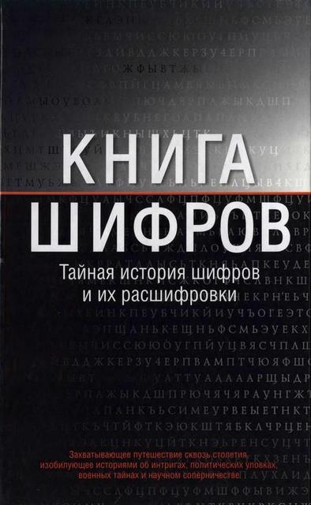
Книга шифров .Тайная история шифров и их расшифровки
Саймон Сингх
Книга шифров .Тайная история шифров и их расшифровки
Стремление узнавать секреты является глубоко укоренившейся, неотъемлемой чертой человеческой натуры; даже самый нелюбопытный ум воодушевляется перспективой узнать что-то такое, что утаивается от других. Некоторым улыбается удача, и они находят работу, связанную с разгадыванием тайн, многим же из нас приходится довольствоваться суррогатными загадками, придуманными для нашего развлечения. Большинство удовлетворяется детективами или кроссвордами; разгадка тайных шифров может стать делом немногих.
Джон Чедвик «Дешифрование линейного письма В»
Моей матери и моему отцу, Саваран Каур и Менга Сингх, посвящается
Введение
Тысячи лет короли, королевы и полководцы управляли своими странами и командовали своими армиями, опираясь на надежно и эффективно действующую связь. В то же время все они осознавали последствия того, что произойдет, если их сообщения попадут не в те руки, если вражескому государству будут выданы ценные секреты, а жизненно важная информация окажется у противника. И именно опасение того, что враги перехватят сообщение, послужило причиной активного развития кодов и шифров — способов скрытия содержания сообщения таким образом, чтобы прочитать его смог только тот, кому оно адресовано.
Стремление обеспечить секретность означало, что в государствах функционировали подразделения, создающие коды и шифры и отвечающие за обеспечение секретности связи путем разработки и использования самых надежных шифров. А в это же самое время дешифровальщики врага старались раскрыть эти шифры и выведать секреты. Дешифровальщики являли собой алхимиков от лингвистики — племя колдунов, пытающихся с помощью магии получить осмысленные слова из бессмысленного набора символов. История кодов и шифров — это многовековая история поединка между создателями шифров и теми, кто их взламывает, интеллектуальная гонка вооружений, которая оказала разительное влияние на ход истории.
При написании «Книги шифров» я ставил перед собой две основные задачи. Во-первых, показать эволюцию шифров. Здесь в полной мере подходит термин «эволюция», поскольку развитие шифров может рассматриваться как эволюционная борьба. Шифр всегда является объектом атаки дешифровальщиков. Как только дешифровальщики создают новое средство, которое выявляет слабое место шифра, дальнейшее его использование становится бессмысленным. Шифр либо выходит из употребления, либо на его основе разрабатывается новый, более стойкий. В свою очередь, этот новый шифр процветает до тех пор, пока дешифровальщики не найдут его слабое место, и так далее. Это аналогично ситуации, к примеру, со штаммом инфекционных бактерий. Бактерии живут и благоденствуют, пока врачи не откроют антибиотик, который воздействует на слабое место у бактерий и убивает их.
Бактерии вынуждены эволюционировать, чтобы перехитрить этот антибиотик, и если сумеют, то снова начнут размножаться и восстановят свою численность. Они должны все время эволюционировать, чтобы уцелеть после атак новых антибиотиков.
Непрекращающаяся борьба между создателями и взломщиками шифров содействовала появлению целого ряда замечательных научных открытий. Создатели шифров постоянно прилагали усилия для создания все более стойких шифров по защите систем и средств связи, в то время как дешифровальщики непрерывно изобретали все более мощные методы их атаки. В своих усилиях разрушения и сохранения секретности обе стороны привлекали самые разнообразные научные дисциплины и методы: от математики до лингвистики, от теории информации до квантовой теории. Взамен шифровальщики и дешифровальщики обогатили эти предметы, а их профессиональная деятельность ускорила научно-технический прогресс, причем наиболее заметно это проявилось в развитии современных компьютеров.
Роль шифров в истории огромна. Шифры решали результаты сражений и приводили к смерти королей и королев. Поэтому я обращался к историческим фактам политических интриг и рассказам о жизни и смерти, чтобы проиллюстрировать ключевые поворотные моменты в эволюционном развитии шифров. История шифров настолько богата, что мне пришлось опустить много увлекательных историй, что, в свою очередь, означает, что моя книга не слишком полна. Если вы захотите побольше узнать о понравившемся вам рассказе или о дешифровальщике, который произвел на вас неизгладимое впечатление, то я бы порекомендовал вам обратиться к списку литературы для дополнительного чтения, которая должна помочь тем читателям, которые желали бы изучить предмет более подробно.
Вторая цель книги, после того как будет рассмотрена эволюция шифров и их влияние на историю, состоит в том, чтобы показать, что шифры сегодня имеют гораздо большее значение, чем когда бы то ни было раньше. Поскольку информация становится все более и более ценным товаром, а революция в сфере коммуникаций изменяет общество, процесс зашифровывания сообщений, или иначе, шифрование, начинает играть все большую роль в повседневной жизни. Сегодня наши телефонные разговоры передаются по спутниковым каналам, а наши электронные письма проходят через различные компьютеры, и можно с легкостью осуществить перехват передаваемой информации по обеим этим видам связи, что ставит под угрозу нашу частную жизнь. Точно также, поскольку коммерческая деятельность во все большей степени осуществляется через Интернет, следует вводить меры безопасности, чтобы защитить компании и их клиентов.
Шифрование — единственный способ защитить нашу частную жизнь и гарантировать успешное функционирование электронного рынка. Искусство секретной связи, иначе известное как криптография, даст вам замки и ключи информационного века.
Однако растущая потребность общества в криптографии вступает в противоречие с требованиями правоприменяющих органов и национальной безопасности. Десятилетиями полиция и разведывательные службы прослушивали телефонные переговоры для сбора улик против террористов и организованных преступных синдикатов, но создание в наше время сверхстойких шифров угрожает свести на нет их ценность. Ввиду того, что мы вступили в двадцать первый век, борцы за гражданские права добиваются широкого использования криптографии для защиты права каждого на личную жизнь. Вместе с ними выступают и представители бизнеса, которым требуется стойкая криптография для обеспечения безопасности сделок, осуществляемых в быстро развивающемся мире электронной коммерции. Представители же сил правопорядка оказывают давление на правительства, чтобы ограничить пользование криптографией. Вопрос состоит в том, что для нас важнее: наше право на частную жизнь или эффективно действующая полиция? Или все же существует компромисс?
Хотя в настоящее время криптография оказывает значительное влияние на действия гражданских лиц, следует отметить, что военная криптография остается важным вопросом. Говорят, что Первая мировая война была войной химиков, потому что в ней впервые были применены иприт и хлор, а Вторая мировая война — войной физиков, поскольку в ней была взорвана атомная бомба. Подобным же образом утверждают, что третья мировая война станет войной математиков, потому что математики будут обладать контролем над очередным величайшим оружием — информацией. Математики отвечали за создание шифров, которые в настоящее время используются для защиты военной информации. Не удивительно, что они же находятся на передовой линии, взламывая эти шифры.
При описании развития шифров и того, как они влияют на историю, я позволил себе незначительное отклонение от темы. В главе 5 рассказывается о дешифровании различных древних письменностей, в том числе линейного письма В и египетских иероглифов. Криптография, формально, имеет дело со средствами связи, которые разрабатываются специально для того, чтобы секреты оказались недоступны противнику; что же касается письмен древних цивилизаций, то такого намерения, чтобы они оставались не-дешифруемыми, не было — мы просто утеряли способность понимать их. Однако навыки, требующиеся для раскрытия содержания археологических документов, тесно связаны с искусством взлома шифров.
После того как я прочел «Дешифрование линейного письма В» Джона Чедвика, где он показывает, как были разгаданы древние тексты Средиземноморья, я был ошеломлен поразительными интеллектуальными достижениями тех, кто был способен дешифровать письмена наших предков, позволив нам тем самым прочитать об их цивилизациях, религиях и повседневной жизни.
Обращаясь к пуристам, я должен принести извинения за название этой книги (оригинальное название книги — «The Code Book» — «Книга кодов»). Она не только о кодах. Слово «код» относится к очень специфическому типу секретной связи, смысл которого за столетия применения изменился. В коде слово или фраза заменяется словом, числом или символом. К примеру, у секретных агентов имеются псевдонимы — слова, которые используются вместо их подлинных имен, чтобы скрыть то, кем они являются на самом деле. Точно так же — как способ сбить противника с толку — фразу Attack at dawn (наступление на рассвете, атаковать на рассвете) можно было бы заменить кодовым словом Jupiter (Юпитер) и передать это слово командующему на поле боя. Если штаб и командующий заранее договорились о коде, то смысл слова Jupiter будет ясен тому, кому оно предназначается, но не будет нести никакого смысла для перехватившего его противника. Альтернативой коду является шифр — способ, действующий на более фундаментальном уровне, при котором заменяются буквы, а не слова целиком. К примеру, каждая буква во фразе могла бы быть заменена следующей буквой латинского алфавита, так что А заменяется на В, В — на С и так далее. В этом случае Attack at dawn превратится в Buubdl bu ebxo. Шифры играют значительную роль в криптографии, так что в действительности эта книга должна бы называться «Книгой кодов и шифров». Ради краткости я все же отказался от точности.
По мере необходимости я давал определения различным техническим терминам, используемым в криптографии. Хотя я, как правило, придерживался этих определений, но будут встречаться места, где используется термин, который, возможно, формально и неточен, но который, по моему мнению, более знаком неспециалисту. Например, описывая человека, старающегося взломать шифр, я почти все время пользовался словом
взломщик кодов, а не более точным —
дешифровальщик (взломщик шифров)[1]. Этим же словом я пользовался только тогда, когда его значение ясно из контекста. В конце книги приведен алфавитный указатель терминов. Впрочем, криптожаргон по большей части вполне очевиден: например,
открытый текст — это сообщение перед зашифровыванием, а
шифртекст — сообщение после зашифровывания.
Перед тем как завершить это Введение, я должен упомянуть о проблеме, с которой сталкивается любой автор, взявшись за криптографию: наука о секретности — это чрезвычайно секретная наука.
Многие из героев этой книги, несмотря на свой труд, всю свою жизнь оставались безвестными, поскольку открыто признать их вклад нельзя было до тех пор, пока их открытия имели дипломатическую или военную ценность. При поиске материалов для этой книги мне удалось поговорить со специалистами в Британской штаб-квартире правительственной связи (ШКПС), которые раскрыли подробности выдающейся исследовательской работы, выполненной в 70-х годах и только что рассекреченной. Благодаря этому трое из величайших в мире криптографов могут теперь получить заслуженное ими признание. Впрочем, эти недавние откровения просто помогли напомнить мне, что о гораздо большем числе случаев не подозреваем ни я, ни любой другой научный писатель. Такие организации, как ШКПС и американское Агентство национальной безопасности продолжают вести засекреченные исследования в криптографии, что означает, что их открытия остаются секретными, а те, кто сделал их, останутся безвестными.
Но, невзирая на проблемы, связанные с секретностью деятельности правительства и проведением закрытых исследований, в заключительной главе этой книги я строил предположения о будущем кодов и шифров. И наконец, эта глава является попыткой понять, можем ли мы предсказать, кто выиграет эволюционную борьбу между составителями шифров и теми, кто их взламывает. Придумают ли когда-нибудь шифровальщики действительно нераскрываемый шифр и преуспеют ли в своем стремлении отыскать абсолютную секретность? Или же дешифровальщики создадут такое устройство, которое сможет расшифровать (точнее, дешифровать, см. раздел
Словарь специальных терминов) любое сообщение? Принимая во внимание, что некоторые из величайших умов работают в секретных лабораториях и что они получают большую часть фондов, предназначенных для исследовательских работ, ясно, что отдельные утверждения в моей заключительной главе могут быть неточны. Например, я утверждаю, что квантовые компьютеры — устройства, потенциально способные взломать все сегодняшние шифры, — находятся на самом начальном этапе разработки, но не исключено, что такой компьютер уже кем-то создан. Те, кто единственно способен указать на мои ошибки, — это в то же время те, кто не волен этого сделать.
1 Шифр Марии Стюарт, королевы Шотландии
Субботним утром 15 октября 1586 года Мария Стюарт, королева Шотландии, вступила в переполненный зал суда в замке Фотерингей. Годы заключения и ревматизм существенно подорвали ее здоровье, однако-она оставалась полной достоинства, спокойной и бесспорно величественной. Опираясь на руку врача, прошла она мимо судей, чиновников и зрителей и приблизилась к трону, стоявшему посередине длинной, узкой комнаты. Мария посчитала было, что трон — это жест уважения к ней, но она ошибалась. Трон символизировал отсутствующую королеву Елизавету I, противницу Марии и ее обвинителя. Марию вежливо направили от трона к противоположной стороне комнаты, к месту обвиняемого — темно-красному бархатному стулу.
Мария, королева Шотландии, находилась в суде по обвинению в государственной измене. Ей вменяли в вину организацию заговора с целью убийства королевы Елизаветы I, чтобы завладеть короной Англии. Сэр Фрэнсис Уолсингем, государственный секретарь королевы Елизаветы I, уже арестовал других заговорщиков, добился от них признания и казнил. Теперь он собирался доказать, что Мария была душой заговора, а посему наравне с ними виновна и наравне с ними заслуживает смерти.
Уолсингем знал, что прежде, чем он смог бы казнить Марию, он должен будет убедить королеву Елизавету в ее вине. Хотя Елизавета и относилась к Марии с презрением, однако у нее имелось несколько причин, чтобы не желать ее смерти. Во-первых, Мария была королевой Шотландии, и многие задавались вопросом, есть ли у английского суда полномочия для того, чтобы отправить на эшафот главу иностранного государства. Во-вторых, казнь Марии могла бы создать опасный прецедент: если государству разрешено убить одну королеву, то у мятежников, пожалуй, могло бы остаться меньше запретов на убийство другой — Елизаветы. В-третьих, Елизавета и Мария была кузинами, родственницами, и потому у королевы Елизаветы было тем больше оснований быть более щепетильной для выдачи приказа о ее казни.
Рис. 1 Мария Стюарт, королева Шотландии Короче говоря, Елизавета санкционировала бы казнь Марии только в том случае, если бы Уолсингем смог, вне всяких сомнений, доказать, что она принимала участие в заговоре с целью убийства.
Заговорщиками являлась группа молодых английских дворян-католиков, целью которых было устранение Елизаветы, протестантки, и замена ее Марией, — такой же, как и они, католичкой. Для суда было бесспорным, что Мария номинально стояла во главе заговорщиков, но то, что она на самом деле благословила заговор, не было установлено. Задача Уолсингема состояла в том, чтобы доказать наличие явной связи между Марией и заговорщиками.
Утром, во время суда, Мария, одетая в черный бархат, одиноко сидела на скамье подсудимых. В случаях государственной измены обвиняемому запрещено было иметь защитника и не разрешалось приглашать свидетелей. Марии даже не позволили, чтобы секретари помогли ей подготовиться к слушанию дела. Однако ее положение не было безнадежно, поскольку она была осторожна и вся ее переписка с заговорщиками была зашифрована. Шифр превратил ее слова в бессмысленный набор символов, и Мария полагала, что даже если Уолсингем и перехватил письма, то он не имел представления о том, что означали слова в ее письмах. Если содержание писем оставалось тайным, то письма не могли использоваться как свидетельство против неё. Однако все это было бы так только при условии, что ее шифр не был раскрыт.
К несчастью для Марии, Уолсингем был не только государственным секретарем, он был также руководителем шпионской сети в Англии. Он перехватил письма Марии к заговорщикам и точно знал, кто мог бы расшифровать их. Лучшим в стране специалистом по раскрытию шифров в то время был Томас Фелиппес; в течение нескольких лет он дешифровывал сообщения тех, кто готовил заговор против королевы Елизаветы, на основании чего были собраны свидетельства для вынесения им приговора. Если бы он смог дешифровать изобличающие письма между Марией и заговорщиками, то ее смерть была бы неизбежна. С другой стороны, если шифр Марии был достаточно надежен, чтобы скрыть ее тайны, то у нее имелся бы шанс остаться в живых. Так уже не в первый раз жизнь зависела от стойкости шифра.
Развитие тайнописи
Некоторые из наиболее ранних упоминаний о тайнописи восходят еще к Геродоту, «отцу истории», как называл его римский философ и политический деятель Цицерон.
В своей «Истории» Геродот повествовал о вооруженных столкновениях между Грецией и Персией в пятом веке до н. э., которые он рассматривал как противоборство между свободой и рабством, между независимыми греческими государствами и тиранической Персией. Согласно Геродоту, именно искусство тайнописи спасло Грецию от порабощения Ксерксом, царем царей, деспотичным правителем Персии.
Отношения между Грецией и Персией значительно обострились вскоре после того, как Ксеркс начал строительство города Персеполь, новой столицы своего царства. Дань и дары поступали со всех концов империи и из соседних государств, за исключением Афин и Спарты. Решив отомстить за такую дерзость, Ксеркс приступил к мобилизации войска, заявив: «Мы так расширим персидскую империю, чтобы ее границами служило небо, чтобы солнце не смогло бы увидеть ни клочка земли вне наших границ». Следующие пять лет он потратил на то, чтобы тайно собрать самую крупную в истории армию, и в 480 году до н. э. он был готов нанести внезапный удар.
Однако наращивание военной мощи Персии видел Демарат, грек, изгнанный с родины и живший в персидском городе Сузы. Несмотря на изгнание, он все же оставался лоялен к Греции и поэтому решил предупредить спартанцев о плане вторжения Ксеркса. Проблема заключалась в том, как передать сообщение, чтобы его не могли перехватить персидские солдаты. Геродот писал:
Поскольку опасность обнаружения послания была очень велика, то оставался только единственно возможный способ, которым Демарат мог успешно передать свое послание. Он соскоблил воск с двух сложенных дощечек для письма, написал прямо на дереве, что собирается делать Ксеркс, а затем снова покрыл воском дощечки с сообщением. По внешнему виду дощечки казались чистыми, без каких-либо записей, поэтому они не вызывали подозрения у персидских солдат. Когда гонец с посланием добрался до места назначения, никто не мог и предположить о наличии послания, пока, как я полагаю, дочь Клеомена[2], Горго, которая была женой Леонида I[3], не догадалась и не сказала другим, что если они счистят воск, то найдут записанное под воском на дощечках послание. Так и сделали; после того как был счищен воск, под ним обнаружилось послание, которое прочли, а затем передали в другие греческие города.
Благодаря этому предупреждению беззащитные на тот момент греки стали сами вооружаться.
Доходы от принадлежащих государству серебряных рудников, которые до этого распределялись среди граждан, были направлены на строительство двухсот военных кораблей.
Ксеркс утерял элемент внезапности, и 23 сентября 480 года до н. э., когда персидский флот достиг Саламинского пролива неподалеку от Афин, греки уже были готовы. Хотя Ксеркс полагал, что он поймал греческий флот в ловушку, но на самом деле греки сознательно заманивали персидские корабли в пролив. Греки знали, что их небольшие суда, которых к тому же было в несколько раз меньше, чем у персов, в открытом море будут уничтожены, но внутри пролива, благодаря маневренности, они смогут превзойти персов. Так как ветер изменил направление, то персидский флот оказался внутри пролива и вынужден был принять бой на греческих условиях. Корабль персидской царицы Артемисии
[4] был окружен с трех сторон, так что она смогла вырваться обратно в море, только протаранив один из своих кораблей. Возникла паника, большое число персидских судов сталкивалось друг с другом, и греки начали стремительную атаку. В течение одного дня огромные силы персов были уничтожены.
Стратегия Демарата для обеспечения секретности переписки заключалась в том, что он просто прятал сообщение. Геродот также упомянул еще об одном случае, когда сокрытия послания оказалось достаточным, чтобы беспрепятственно его передать. Он поведал историю Гистия, который хотел подтолкнуть Аристагора из Милета к восстанию против персидского царя (Дария). Чтобы послание не обнаружили враги, Гистий обрил голову своего вестника, написал на коже текст послания, а затем подождал, пока волосы не отрастут вновь. Что ж, неспешный в то время ход истории позволял пользоваться такими способами. Вестник, у которого не было ничего явно его компрометирующего, мог путешествовать не беспокоясь. По прибытии на место вестник обрил голову и «вручил» адресату послание.
Секретная переписка, осуществляемая путем сокрытия имеющегося сообщения, носит название
стеганография, которое происходит из греческих слов
steganos — «покрытый» и
graphein — «писать». В течение двух тысячелений после Геродота во всем мире применялись различные виды стеганографии. Например, древние китайцы писали сообщения на тонкой шелковой ткани, которая затем сворачивалась в крохотный шарик и покрывалась воском, после чего посланец проглатывал этот восковой шарик. В шестнадцатом веке итальянский ученый Джованни Порта показал, как скрыть послание внутри сваренного вкрутую яйца, вначале изготовив чернила из одной унции (28 г) квасцов и пинты (0,5 л) уксуса, а затем записав послание этими чернилами на скорлупе.
Раствор проникнет сквозь поры скорлупы и оставит сообщение на поверхности плотного яичного белка, которое можно будет прочитать, только разбив яйцо и очистив скорлупу. Стеганография также включает в себя применение невидимых чернил. Еще в первом веке н. э. Плиний-старший показал, как млечный сок некоторых растений может использоваться в качестве таких чернил. После высыхания надпись, сделанная этими чернилами, не видна, но при несильном нагреве она приобретает коричневый цвет. Многие органические жидкости ведут себя похожим образом: при нагреве, из-за того, что в них содержится большое количество углерода, они темнеют. И это не составляет секрета для нынешних шпионов, которые, в случае если у них исчерпались симпатические чернила, используют для этой цели собственную мочу.
То, что стеганография смогла просуществовать столь длительное время, показывает, что она, несомненно, обеспечивает определенную секретность, но ей присущ один принципиальный недостаток. Если курьер будет обыскан и у него обнаружат сообщение, то сразу же станет известно и его содержание. Перехват сообщения мгновенно ставит под угрозу всю безопасность. Бдительная стража может тщательно обыскивать всех, кто пересекает границу, счищая с дощечек весь воск, нагревая чистые листы бумаги, очищая сваренные яйца от скорлупы, брея людям головы и т. п., так что случаи обнаружения сообщения будут неизбежны.
Поэтому, наряду с усовершенствованием стеганографии, происходило развитие
криптографии, которая берет начало от греческого слова kryptos, означающего «тайный». Цель криптографии состоит не в том, чтобы скрыть наличие сообщения, а в том, чтобы скрыть его смысл, — процесс, известный как
шифрование. Чтобы сделать сообщение непонятным, оно зашифровывается по определенному правилу, которое заранее оговаривается между отправителем сообщения и его получателем. Так что адресат, получив сообщение, может применить к нему правило шифрования в обратном порядке, после чего его смысл станет понятным. Преимущество криптографии состоит в том, что если противник перехватит зашифрованное сообщение, то прочитать его ему не удастся. Восстановить исходное сообщение из зашифрованного текста, не зная правила шифрования, может оказаться для противника сложной, а то и вообще невыполнимой задачей.
Хотя криптография и стеганография являются независимыми, но для обеспечения максимальной секретности, чтобы и зашифровать, и скрыть сообщение, можно пользоваться обеими. К примеру, во время Второй мировой войны стала популярной микроточка, которая является одним из видов стеганографии. Германские агенты в Латинской Америке фотографическим способом сжимали страницу текста в точку диаметром менее 1 миллиметра, а затем прикрепляли эту микроточку поверх обычной точки в конце предложения в на первый взгляд совершенно безобидном письме.
ФБР обнаружило первую микроточку в 1941 г., получив предупреждение о том, что американцам следует искать крошечный блик на поверхности письма, указывающий, что в этом месте прикреплен кусочек глянцевой фотопленки. Впоследствии американцы смогли прочитать содержимое большинства перехваченных микроточек, за исключением тех случаев, когда германские агенты предпринимали дополнительные меры предосторожности, шифруя свое сообщение перед сжатием. Когда же вместе со стеганографией применялась и криптография, американцам иногда удавалось перехватывать сообщения и пресекать передачу информации, но это не давало им никаких новых сведений о немецкой шпионской деятельности. Из этих двух направлений обеспечения секретности связи криптография более эффективна благодаря тому, что дает возможность предотвратить попадание информации в руки врага.
В свою очередь криптография сама может быть разделена на два направления, известные как
перестановка и
замена. При перестановке буквы сообщения просто переставляются, образуя анаграмму. Для очень короткого сообщения, состоящего, например, из одного слова, такой способ весьма ненадежен, поскольку существует крайне ограниченное число возможных способов перестановки горстки букв. Так, три буквы с, о и w могут быть расставлены всего лишь шестью различными способами: cow, cwo, ocw, owc, wco, woc. Однако по мере увеличения количества букв число возможных перестановок стремительно растет, и восстановить исходное сообщение становится невозможным, если не известен точный способ шифрования. For example, consider this short sentence
(рассмотрим, например, это короткое предложение). В нем содержится всего 35 букв, но число их различных перестановок составляет более 50 000 000 000 000 000 000 000 000 000 000.
Если бы один человек смог проверять одну перестановку в секунду, и если бы все люди на Земле работали день и ночь, то, чтобы проверить все возможные перестановки, потребовалось бы времени в тысячи раз больше, чем срок существования Вселенной.
Создается впечатление, что случайная перестановка букв гарантирует очень высокую степень безопасности, поскольку для противника дешифровать даже короткое предложение окажется неосуществимым. Но здесь есть отрицательный момент. При перестановке образуется невероятно сложная анаграмма, и если буквы случайно, ни с того ни с сего, перепутаются, то ни получатель, ни перехвативший ее противник не смогут ее расшифровать. Для обеспечения эффективности способ перестановки букв должен быть заранее оговорен отправителем сообщения и его получателем, но он должен храниться в секрете от противника.
Например, школьники часто посылают друг другу сообщения, зашифрованные с помощью перестановки (данный шифр называется «штакетник»), буквы которого поочередно пишутся на верхней и нижней строчках. Далее последовательность букв с нижней строчки присоединяется к концу последовательности букв на верхней строчке, благодаря чему и образуется зашифрованное сообщение. Например:
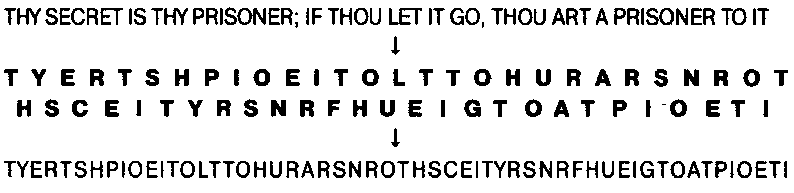
Теперь адресат может восстановить исходное сообщение просто выполняя эти же действия в обратном порядке. Существует множество различных способов последовательных перестановок, в том числе трехстрочный шифр «штакетник», когда сообщение вначале записывается в три строчки, а не в две. Или же можно производить перестановку для каждой пары букв так, чтобы поменялись местами первая и вторая буквы, третья и четвертая буквы и так далее.
Один из способов перестановки был реализован в самом первом из известных шифровальных устройств, предназначенных для военных целей, — спартанской
скитале, — упоминание о которой восходит к пятому веку до н. э. Скитала представляла собой деревянный цилиндр, вокруг которого наматывалась полоска кожи или пергамента, как показано на рисунке 2. Отправитель писал сообщение по всей длине скиталы, а затем разматывал полоску, на которой после этого оставался бессмысленный набор букв. Сообщение оказывалось зашифрованным. Вестник брал кожаную полоску и обычно прятал сообщение, используя полоску как пояс, буквами внутрь, то есть кроме зашифровывания применял также и стеганографию. Чтобы получить исходное сообщение, адресат просто наматывал полоску кожи вокруг скиталы того же диаметра, что и скитала, которой пользовался отправитель. В 404 году до н. э. к спартанскому полководцу Лисандру привели вестника, окровавленного и еле держащегося на ногах, одного из пяти оставшихся в живых после крайне опасного путешествия из Персии. Вестник передал свой пояс Лисандру, который намотал его вокруг своей скиталы и прочитал, что Фарнабаз
[5] собирается напасть на него. Благодаря скитале Лисандр успел подготовиться к нападению и отбил его.
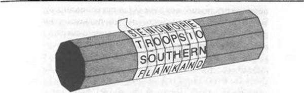
Рис. 2 На полоске кожи, снятой со скиталы отправителя (деревянный цилиндр), остается набор случайных букв: S, Т, S, Р… Сообщение можно будет прочесть, только если намотать эту полоску вокруг другой скиталы такого же диаметра. Альтернативой перестановке является замена. Одно из первых описаний зашифровывания с помощью замены дается в «Кама-сутре», тексте, написанном в четвертом веке н. э. священником-брамином Ватсьяяной, но основанном на манускриптах, относящихся к четвертому веку до н. э. Согласно «Кама-сутре» женщины должны овладеть 64 искусствами, такими как приготовление пищи и напитков, искусство одевания, массаж, приготовление ароматов. В этот список также входят менее очевидные искусства: колдовство, игра в шахматы, переплетное дело и плотничанье. Под номером 45 в списке стоит mlecchita-vikalpa, искусство тайнописи, предназначенное для того, чтобы помочь женщинам скрыть подробности своих любовных связей. Один из рекомендуемых способов заключается в том, чтобы расположить попарно буквы алфавита случайным образом, а затем заменять каждую букву в исходном сообщении ее парной. Если мы применим этот принцип к латинскому алфавиту, то мы можем расположить буквы попарно следующим образом:
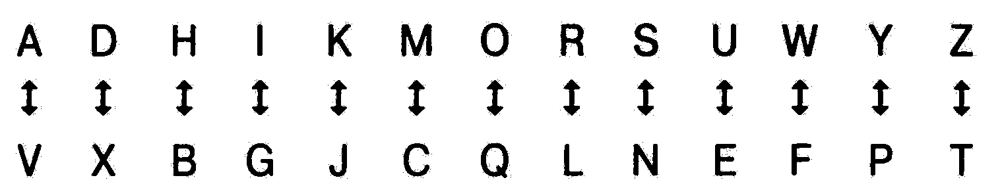
Тогда вместо meet at midnight
(встретимся в полночь) отправитель напишет CUUZ VZ CGXSGIBZ. Такой вид тайнописи называется шифром замены, поскольку каждая буква в исходном тексте заменяется другой буквой, так что этот шифр диаметрально противоположен шифру перестановки. При перестановке каждая буква остается сама собой, но меняет свое местоположение, в то время как при замене каждая буква меняется на другую, но остается на своем месте.
Первое документально подтвержденное использование шифра замены в военных целях появилось в «Галльских войнах» Юлия Цезаря. Цезарь описывает, как он послал сообщение Цицерону, находившемуся в осаде и бывшему на грани капитуляции.
В этом письме латинские буквы были заменены греческими, поэтому враг его не смог бы понять. Цезарь описал драматичность доставки письма:
Гонцу дали наставление, что если он не сможет приблизиться, то должен метнуть дротик с прикрепленным к ремешку письмом так, чтобы оно упало в лагере. Убоявшись излишнего риска, галльский всадник метнул дротик, как ему и приказали. По случайности дротик попал в башню, и в течение двух дней наши отряды его не замечали; только на третий день его увидел солдат, вытащил и доставил Цицерону. Цицерон просмотрел письмо, а затем прочитал его на собрании солдат, что вызвало у всех огромную радость.
Цезарь так часто пользовался тайнописью, что Марк Валерий Проб написал целый трактат о применяемых им шифрах, который, к сожалению, не дошел до наших дней. Однако благодаря сочинению Гая Транквилла Светония «Жизнь 12 Цезарей», написанному во втором веке н. э., у нас имеется подробное описание одного из видов шифра замены, применявшегося Юлием Цезарем. Он просто заменял каждую букву в послании буквой, стоящей в алфавите на три позиции дальше. Криптографы часто пользуются терминами
алфавит открытого текста, то есть алфавит, используемый для создания исходного, незашифрованного сообщения, и
шифралфавит, буквы которого подставляются вместо букв алфавита открытого текста. Если алфавит открытого текста расположить над шифралфавитом, как показано на рисунке 3, то станет ясно, что шифралфавит сдвинут на три позиции, и поэтому такой вид замены часто называется
шифром сдвига Цезаря или просто шифром Цезаря.
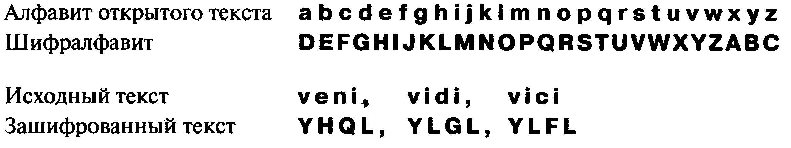
Рис. 3 Шифр Цезаря, примененный к короткому сообщению. Шифр Цезаря основан на шифралфавите, который сдвинут на определенное число позиций (в данном случае — на три) относительно алфавита открытого текста. В криптографии принято записывать алфавит открытого текста строчными буквами, а шифралфавит — заглавными. Точно так же, исходное сообщение, то есть незашифрованный текст, записывается строчными буквами, а зашифрованное сообщение, то есть шифртекст, — заглавными. Шифр — это обобщенное название, даваемое любой криптографической замене, при которой каждая буква заменяется другой буквой или символом.
Хотя Светоний упоминает только о шифре Цезаря со сдвигом на три позиции, ясно, что осуществляя сдвиг на 1…25 позиций
[6], можно создать 25 различных шифров. Если же мы не будем ограничиваться сдвигом алфавита, а будем рассматривать шифралфавит как любую возможную перестановку букв алфавита открытого текста, то мы сможем создать гораздо большее количество различных шифров. Существует свыше 400 000 000 000 000 000 000 000 000 таких перестановок и, соответственно, такое же количество отличающихся шифров.
К каждому отдельному шифру применимы понятия общего метода шифрования, известные как
алгоритм и
ключ, которые определяют детали конкретного способа шифрования. В этом случае алгоритм заключается в замене каждой буквы в алфавите открытого текста буквой из шифралфавита, причем шифралфавит может представлять собой любую возможную перестановку алфавита открытого текста. Ключ же определяет, какой именно шифралфавит используется для конкретного способа шифрования. Связь между алгоритмом и ключом показана на рисунке 4.
У противника, анализирующего перехваченное зашифрованное сообщение, могут иметься предположения об алгоритме, но точного ключа он знать не будет.
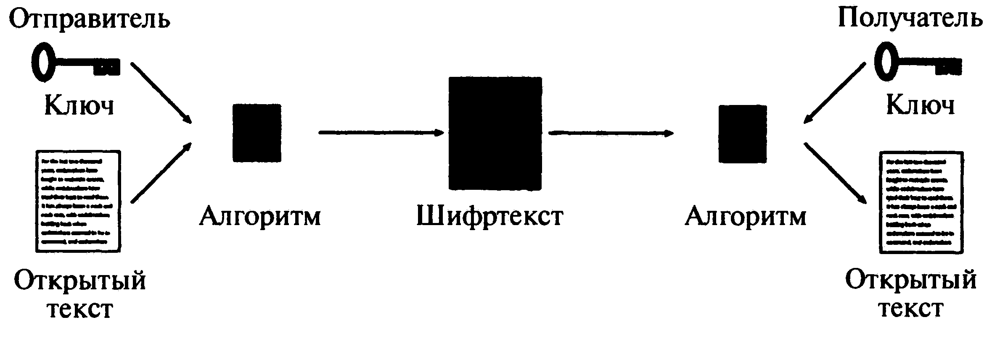
Рис. 4 Чтобы зашифровать исходный текст сообщения, отправитель применяет к нему алгоритм шифрования. Алгоритм является общей системой для шифрования и должен быть точно определен путем выбора ключа. При совместном применении ключа и алгоритма к открытому тексту получается зашифрованное сообщение, или шифртекст. Разумеется, зашифрованный текст во время передачи адресату может быть перехвачен противником, но противник не сможет дешифровать это сообщение. В то же время получатель, который знает и ключ, и алгоритм, использованные отправителем, сможет преобразовать зашифрованный текст сообщения обратно в исходный вид. К примеру, он вполне может подозревать, что каждая буква в открытом тексте была заменена другой буквой в соответствии с шифралфавитом, но он не в состоянии узнать, какой именно шифралфавит был использован. Если шифралфавит — ключ — хранится отправителем и получателем в секрете, тогда противник не сможет дешифровать перехваченное сообщение. В отличие от алгоритма, важность ключа является основополагающим принципом криптографии. Он был сформулирован в 1883 году голландским лингвистом Огюстом Керкхоффом в книге «Военная криптография» («La Cryptographie militaire»); правило Керкхоффа гласит: «Стойкость криптосистемы не должна зависеть от стойкости криптоалгоритма. Она зависит только от стойкости ключа».
Помимо того, что ключ должен храниться в секрете, стойкая система шифрования должна также обладать широким набором возможных ключей. Например, если для зашифровывания сообщения отправитель применяет шифр сдвига Цезаря, то такое шифрование является сравнительно слабым, так как существует всего 25 возможных ключей. С точки зрения противника, если он перехватит сообщение и подозревает, что применялся алгоритм сдвига Цезаря, то ему следует просто проверить 25 возможных вариантов. Однако если отправитель использует более общий алгоритм замены, благодаря которому шифралфавит будет представлять собой любую возможную перестановку букв алфавита открытого текста, тогда ключ может выбираться из 400 000 000 000 000 000 000 000 000 возможных. Один из таких ключей показан на рисунке 5. Даже допуская, что противник перехватил сообщение и ему известен алгоритм, то все равно остается задача проверки всех возможных ключей. Если бы вражеский агент смог проверять ежесекундно один из 400 000 000 000 000 000 000 000 000 возможных ключей, то, чтобы проверить все ключи и дешифровать сообщение, ему понадобилось бы времени в миллионы раз больше возраста Вселенной.
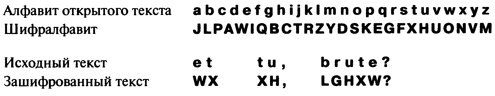
Рис. 5 Пример общего алгоритма замены, при котором каждая буква в исходном тексте заменяется в соответствии с ключом другой буквой. Ключ задается шифралфавитом, который может представлять собой любую перестановку букв алфавита открытого текста. Прелесть этого вида шифра состоит в том, что он прост в применении, но обеспечивает высокую степень защиты. Отправитель без труда может задать ключ, который просто определяет порядок следования 26 букв в шифралфавите, однако для противника по-прежнему практически невыполнимо проверить все возможные ключи с помощью так называемого метода прямого перебора всех возможных вариантов. Простота ключа важна еще и потому, что и отправитель, и получатель должны передавать друг другу информацию о ключе, а чем проще ключ, тем меньше вероятность возникновения недоразумений.
Более того, если отправитель готов согласиться с незначительным уменьшением количества возможных ключей, то ключ может быть еще проще. Для создания шифралфавита, вместо того чтобы случайным образом переставлять буквы алфавита открытого текста, отправитель выбирает
ключевое слово или
ключевую фразу. К примеру, в качестве ключевой можно взять фразу JULIUS CAESAR, убрать все пробелы и повторяющиеся буквы (JULISCAER), а затем подставить получившееся слово в начало шифралфавита. Часть шифралфавита, которая начинается с того места, где заканчивается ключевое слово или фраза, представляет собой просто обычную последовательность оставшихся букв алфавита. Поэтому шифралфавит будет выглядеть следующим образом:
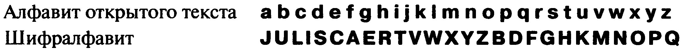
Достоинство такого способа создания шифралфавита заключается в том, что ключевое слово или ключевую фразу, а следовательно и сам шифралфавит, легко запомнить. Это важно, так как если отправитель будет хранить шифралфавит записанным на листке бумаги, противник может завладеть этим листком, раскрыть ключ и прочесть любое сообщение, которое было зашифровано с его помощью. Но если держать ключ в памяти, то вероятность того, что он попадет в руки противника, гораздо меньшая. Разумеется, количество шиф-ралфавитов, образованных ключевыми фразами, меньше количества шифралфавитов, образуемых без каких-либо ограничений, но все равно число их огромно, и для противника по-прежнему невозможно дешифровать захваченное сообщение путем проверки всех возможных ключевых фраз.
Такая простота и одновременно стойкость означали, что на протяжении первого тысячелетия н. э. в искусстве тайнописи преобладал шифр замены. Шифровальщики разработали надежную систему обеспечения связи, поэтому никакой необходимости в дальнейшем развитии и не возникало.
Бремя легло только на тех дешифровальщиков, кто старался раскрыть шифр замены. Существовал ли какой-нибудь способ разгадать зашифрованное сообщение? Многие ученые того времени полагали, что из-за гигантского количества возможных ключей шифр
замены раскрыть невозможно, и в течение столетий казалось, что они были правы. Однако дешифровальщики в конце концов отыскали короткий путь взамен перебора всех возможных ключей. Вместо того чтобы тратить миллионы лет на взлом шифра, с помощью этого упрощенного метода сообщение можно было прочесть за нескольких минут. Прорыв произошел на Востоке, но для этого потребовался союз лингвистики, статистики и религиозного рвения.
Арабские криптоаналитики
В возрасте около сорока лет Мухаммад (Магомет) начал регулярно приходить в пещеру на горе Хира неподалеку от Мекки — уединенное место, самой природой предназначенное для молитв и размышлений. В момент глубоких раздумий, примерно в 610 году н. э., его посетил ангел Джебраил, провозгласивший Мухаммада пророком, посланником Аллаха. Это было первое из ряда откровений, которые продолжались до самой смерти Мухаммада двадцатью годами позже. На протяжении всей жизни пророка писцы записывали эти откровения, но только в виде отрывков; и на Абу Бакра (Абу Бекра), первого халифа ислама, была возложена задача собрать их в единый текст. Работа была продолжена Омаром, вторым халифом, и его дочерью Хафсой и завершена Османом, третьим халифом. Каждое из откровений стало одной из 114 сур Корана.
Правящий халиф был обязан продолжать дело Пророка, поддерживая его учение и распространяя его Слово. Между провозглашением Абу Бакра халифом в 632 году и до смерти четвертого халифа, Али, в 661 году, шло неудержимое распространение ислама, и в конце концов мусульманское государство охватило половину всего мира. В 750 году, после столетия укрепления господства, начало халифата (или династии) Аббасидов предвещало золотой век исламской цивилизации. В равной мере расцвели искусства и науки. От исламских мастеров дошли до нас великолепные картины, изысканные резные украшения и ткани исключительной отделки, а от исламских ученых мы унаследовали целый ряд арабских слов, которыми усеян язык современной науки:
алгебра, щелочь, зенит и другие.
Процветание исламской культуры было в значительной степени обусловлено тем, что общество было богатым и мирным. В отличии от своих предшественников, халифы династии Аббасидов не так уж стремились завоевывать новые территории и покорять другие народы; вместо этого они приступили к созданию организованного и процветающего общества. Низкие налоги поощряли развитие коммерческой деятельности и вели к росту торговли и предпринимательства, а строгие законы сократили взяточничество и обеспечили защиту населения. Все это опиралось на эффективно действующую систему управления, чиновники же, в свою очередь, полагались на систему передачи сообщений, безопасность которой обеспечивалась за счет использования зашифровывания. Документально подтверждено, что, помимо информации государственной важности, чиновники зашифровывали также сведения о налогах, то есть уже в то время криптография широко применялась и ее использование было достаточно обыденным делом. Во многие руководства для чиновников, к примеру, в «Adab аl-Kuttab» («Руководство для секретарей») десятого века, вошли разделы, посвященные криптографии.
Чиновники обычно пользовались шифралфавитом, который представлял собой просто перестановку букв алфавита открытого текста, как было описано выше, но они также применяли и шифрал-фавиты, в которых содержались другие типы символов. Например,
а в алфавите открытого текста может быть заменена на # в шифралфавите, b может быть заменена на + и так далее.
Одноалфавитный шифр замены является обобщенным названием, которое присваивается любому шифру замены, шифралфавит которого состоит из любых букв или символов или из тех и других. Все шифры замены, которые нам уже встречались, входят в эту общую категорию.
Если бы арабы были просто знакомы с использованием одноалфавитного шифра замены, то в истории криптографии об этом упоминалось бы просто вскользь. Однако наряду с использованием шифров, арабские ученые оказались способны также и раскрывать шифры. Они фактически создали
криптоанализ — науку дешифрования сообщения без знания ключа. В то время как специалисты по криптографии разрабатывают и создают новые способы тайнописи, криптоаналитики стараются выявить слабости этих способов, чтобы раскрыть секретные сообщения. Арабские криптоаналитики добились успехов в создании способа взламывания одноалфавитного шифра замены, шифра, который оставался неуязвимым в течение нескольких столетий.
Криптоанализ не смог бы появиться до тех пор, пока цивилизация не достигла бы достаточно высокого уровня в ряде дисциплин, включая математику, статистику и лингвистику. Мусульманская цивилизация являлась идеальной колыбелью для криптоанализа, поскольку ислам требовал соблюдения законов во всех областях человеческой деятельности, а для этого нужны знания, или il
т. Каждый мусульманин был обязан приобретать знания во всех его видах, и экономический расцвет халифата Аббасидов означал, что у ученых было время, деньги и материалы, необходимые для выполнения ими своих обязанностей. Они старались овладеть знаниями предшествующих цивилизаций, приобретая египетсткие, вавилонские, индийские, китайские, персидские, сирийские, армянские, еврейские и латинские тексты и переводя их на арабский язык. В 815 г. халиф Аль-Мамун основал в Багдаде Bait al-Hikmah (Дом мудрости) — библиотеку и центр переводов.
Исламская цивилизация была способна не только приобретать знания, но и распространять их, поскольку к этому времени она уже обладала искусством изготовления бумаги, проникшим сюда из Китая. Изготовление бумаги дало толчок появлению профессии
war-raqin, или «тех, кто занимается бумагой», — людей, которые копировали рукописи и поставляли бумагу для расцветающего издательского дела. В пору максимального расцвета ежегодно издавались десятки тысяч книг, причем только в предместье Багдада было более сотни книжных лавок. Помимо таких классических произведений, как «Тысяча и одна ночь», в этих лавках продавались также учебники и пособия по всем мыслимым предметам, благодаря чему общество оставалось самым грамотным и образованным в мире.
Кроме лучшего понимания светских дисциплин, появление криптоанализа было обусловлено также и развитием религиозного образования. Основные медресе были основаны в Басре, Куфе и Багдаде, где теологи тщательно изучали содержащиеся в Коране откровения Мухаммада. Теологи интересовались установлением хронологии откровений; сделали же они это, подсчитав частотность появления слов, содержащихся в каждом из них. Теоретические предпосылки состояли в том, что определенные слова появились сравнительно недавно, и поэтому, чем больше новых слов содержится в откровении, тем к более позднему периоду оно относится. Теологи также изучали Хадисы, которые состояли из ежедневных изречений Пророка. Они попытались показать, что каждое изречение действительно может быть приписано Мухаммаду. Это проводилось путем изучения этимологии слов и структуры предложений, чтобы проверить, согласуются ли отдельные тексты с лингвистическим стилем Пророка.
Важно, что религиозные ученые не остановились в своем исследовании на уровне слов. Они также проанализировали отдельные буквы; в частности, они выяснили, что некоторые буквы встречаются чаще других.
В арабском языке наиболее распространенными буквами являются a и l, отчасти из-за определенного артикля аl-, в то время как буква j занимает только десятое место по частоте появления. Это на первый взгляд безобидное наблюдение привело к первому значительному прорыву в криптоанализе.
Кто первым догадался, что изменение частоты появления букв может быть использовано в целях взлома шифров, неизвестно, но наиболее раннее из известных описаний этого метода датировано IX веком и принадлежит перу одного из крупнейших ученых Абу Юсуф Якуб ибн Исхак ибн ас-Сабах ибн Умран ибн Исмаил аль-Кинди. Известный как «философ арабского мира», аль-Кинди был автором 290 книг по медицине, астрономии, математике, лингвистике и музыке. Его самый знаменитый трактат, который был обнаружен заново лишь в 1987 году в оттоманском архиве Сулайманийа в Стамбуле, озаглавлен «Рукопись по дешифрованию криптографических сообщений», первая страница которой показана на рисунке 6. Хотя в нем содержится подробный анализ статистики, фонетики и синтаксиса арабского языка, революционная система криптоанализа аль-Кинди умещается в два коротких абзаца:
Один из способов прочесть зашифрованное сообщение, если мы знаем язык, на котором оно написано, — это взять другой незашифрованный текст на том же языке, размером на страницу или около того, и затем подсчитать появление в нем каждой из букв. Назовем наиболее часто встречающуюся букву «первой», букву, которая по частоте появления стоит на втором месте, назовем «вторая», букву, которая по частоте появления стоит на третьем месте, назовем «третья» и так далее, пока не будут сочтены все различные буквы в незашифрованном тексте.
Затем посмотрим на зашифрованный текст, который мы хотим прочитать, и таким же способом проведем сортировку его символов. Найдем наиболее часто встречающийся символ и заменим его «первой» буквой незашифрованного текста, второй по частоте появления символ заменим «второй» буквой, третий по частоте появления символ заменим «третьей» буквой и так далее, пока не будут заменены все символы зашифрованного сообщения, которое мы хотим дешифровать.
Объяснение аль-Кинди гораздо проще показать на примере английского алфавита. Прежде всего необходимо взять достаточно большой кусок обычного английского текста, может быть, несколько текстов, чтобы установить частоту появления каждой буквы алфавита. Наиболее часто встречающейся буквой в английском алфавите является буква
е, затем идут буквы
t,
а и т. д. (см. таблицу 1). Затем возьмите интересующий вас зашифрованный текст и подсчитайте частоту появления каждой буквы в нем.
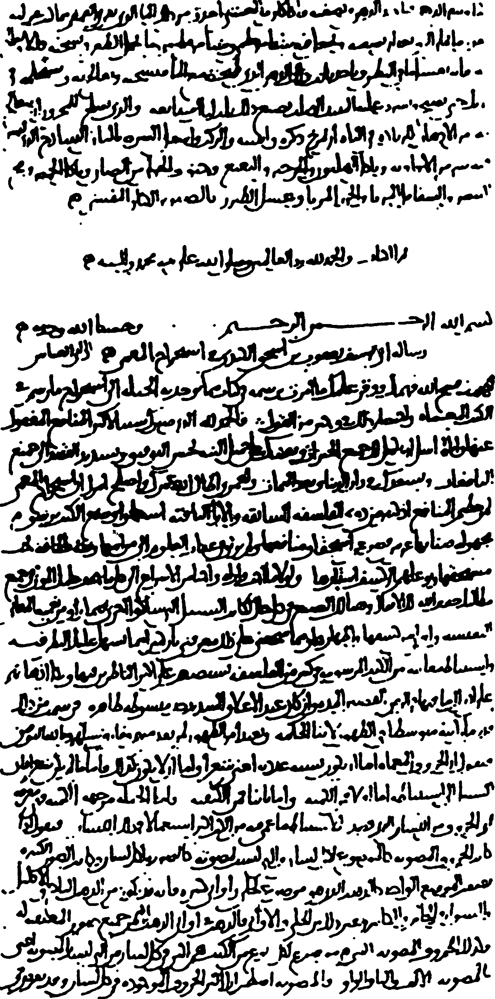
Рис. 6 Первая страница «Рукописи по дешифрованию криптографических сообщений аль-Кинди», в которой содержится самое первое из дошедших до нас описаний криптоанализа с помощью частотного анализа. Если, например, в зашифрованном тексте самой часто встречающейся буквой будет J, то, по всей видимости, она заменяет букву е. Если второй по частоте появления буквой в зашифрованном тексте будет Р, то вполне вероятно, что она заменяет букву t, и так далее. Способ аль-Кинди, известный как частотный анализ, показывает, что нет никакой необходимости проверять каждый из биллионов возможных ключей. Вместо этого можно прочесть зашифрованное сообщение просто путем анализа частоты появления букв в зашифрованном тексте. Однако не следует безоговорочно применять принцип аль-Кинди для криптоанализа, поскольку в таблице 1 указаны только усредненные частоты появления букв, а они не будут в точности совпадать с частотами появления этих же букв в любом другом тексте. К примеру, краткое сообщение, в котором обсуждается влияние состояния атмосферы на передвижение полосатых четвероногих животных в Африке, «From Zanzibar to Zambia and Zaire, ozone zones make zebras run zany zigzags» не поддалось бы непосредственному применению частотного анализа. Вообще говоря, частота появления букв в коротком тексте значительно отклоняется от стандартной, и если в сообщении меньше ста букв, то его дешифрование окажется очень затруднительным. В то же время в более длинных текстах частота появления оукв будет приближаться к стандартной, хотя это происходит и не всегда.
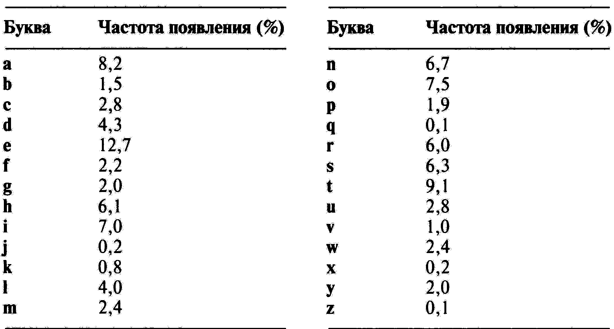
Таблица 1 Таблица относительной частоты появления букв на основе отрывков, взятых из газет и романов; общее количество знаков в отрывках составляло 100 362 буквы. Таблица была составлена X. Бекером и Ф. Пайпером и впервые опубликована в «Системах шифрования: защита связи» В 1969 году французский автор Жорж Перек написал 200-страничный роман «Исчезновение» («La Disparition»), в котором не было слов с буквой е. Вдвойне примечательно то, что английскому писателю-романисту и критику Гилберту Адэру удалось перевести «La Disparition» на английский язык, где по-прежнему, как и у Перека, буква е отсутствовала. Как ни удивительно, но перевод Адэра, под названием «А Void», является удобочитаемым (см. Приложение А). Если бы весь этот роман был зашифрован с помощью одноалфавитного шифра замены, то попытка дешифровать его оказалась бы безуспешной из-за полного отсутствия наиболее часто встречающейся буквы в английском алфавите.
Дав описание первого инструмента криптоанализа, я продолжу примером того, как частотный анализ применяется для дешифрования зашифрованного текста. Я старался не усеивать книгу примерами криптоанализа, но для частотного анализа я сделаю исключение. Частично потому, что частотный анализ не столь труден, как может показаться из его названия, а частично потому, что это основной криптоаналитический инструмент. Кроме того, последующий пример дает понимание принципа работы криптоаналитика. Хотя частотный анализ требует логического мышления, вы увидите, что необходимы также интуиция, гибкость ума и везение.
Криптоанализ зашифрованного текста

Предположим, что мы перехватили это зашифрованное сообщение. Задача состоит в том, чтобы дешифровать его. Мы знаем, что текст написан на английском языке и что он зашифрован с помощью одноалфавитного шифра замены, но мы ничего не знаем о ключе. Поиск всех возможных ключей практически невыполним, поэтому нам следует применить частотный анализ. Далее мы шаг за шагом будем выполнять криптоанализ зашифрованного текста, но если вы чувствуете уверенность в своих силах, то можете попытаться провести криптоанализ самостоятельно.
При виде такого зашифрованного текста любой криптоаналитик немедленно приступит к анализу частоты появления всех букв; его результат приведен в таблице 2. Нет ничего удивительного в том, что частотность букв различна. Вопрос заключается в том, можем ли мы на основе частотности букв установить, какой букве алфавита соответствует каждая из букв зашифрованного текста. Зашифрованный текст сравнительно короткий, поэтому мы не можем непосредственно применять частотный анализ. Было бы наивным предполагать, что наиболее часто встречающаяся в зашифрованном тексте буква О является и наиболее часто встречающейся буквой в английском языке —
е или что восьмая по частоте появления в зашифрованном тексте буква Y соответствует восьмой по частоте появления в английском языке букве h. Бездумное применение частотного анализа приведет к появлению тарабарщины. Например, первое слово РС<2 будет расшифровано как
аоv. Таблица 2 Частотный анализ зашифрованного сообщения. 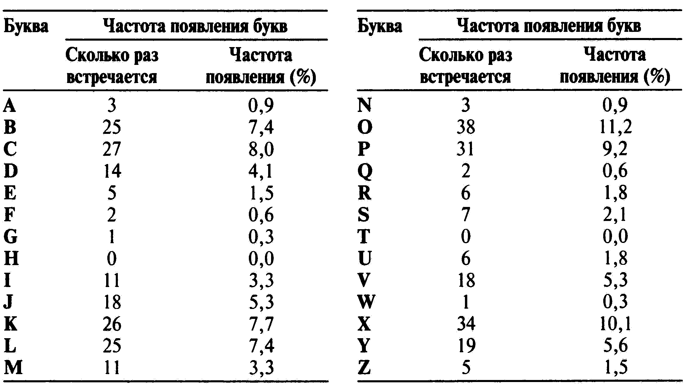
Начнем, однако, с того, что обратим внимание только на три буквы, которые в зашифрованном тексте появляются более тридцати раз:
О, X и
Р. Естественно предположить, что эти наиболее часто встречающиеся в зашифрованном тексте буквы представляют собой, по всей видимости, наиболее часто встречающиеся буквы английского алфавита, но не обязательно в том же порядке. Другими словами, мы не можем быть уверены, что
О = е, X = t и
Р = а, но мы можем сделать гипотетическое допущение, что:
О =
е, t или
а, X =
е, t или
а, Р =
е, t или
а. Чтобы быть уверенным в своих дальнейших действиях и идентифицировать три чаще всего встречающихся буквы:
О, X и
Р, нам потребуется применить частотный анализ более тонким образом. Вместо простого подсчета частоты появления трех букв, мы можем проанализировать, как часто они появляются рядом с другими буквами. Например, появляется ли буква
О перед или после некоторых других букв, или же она стремится стоять рядом только с некоторыми определенными буквами? Ответ на этот вопрос будет убедительно свидетельствовать, является ли буква
О гласной или согласной. Если
О является гласной, то она должна появляться перед и после большинства других букв, если же она представляет собой согласную, то она будет стремиться избегать соседства со множеством букв. Например, буква
е может появиться перед и после практически любой другой буквы, в то время как буква
t перед или после букв
b, d, g, j, k, m, q и
v встречается редко.
В нижеприведенной таблице показано, насколько часто каждая из трех чаще всего встречающихся в зашифрованном тексте букв:
О, X и
Р появляется перед или после каждой буквы.
О, к примеру, появляется перед
А в 1 случае, но никогда сразу после нее, поэтому в первой ячейке стоит 1. Буква
О соседствует с большинством букв, и существует всего 7 букв, которых она совершенно избегает, что показано семью нулями в ряду
О. Буква
X общительна в не меньшей степени, так как она тоже стоит рядом с большинством букв и чурается только 8 из них. Однако буква
Р гораздо менее дружелюбна. Она приветлива только к нескольким буквам и сторонится 15 из них. Это свидетельствует о том, что
О и
X являются гласными, а
Р представляет собой согласную.
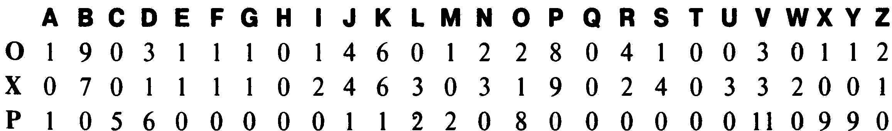
Теперь зададимся вопросом, каким гласным соответствуют
О и
X. Скорее всего, что они представляют собой
е и
а — две наиболее часто встречающиеся гласные в английском языке, но будет ли
О = е и
X = а, или же
О = а, а
X = е? Интересной особенностью в зашифрованном тексте является то, что сочетание
ОО появляется дважды, а XX не попадается ни разу. Так как в открытом английском тексте сочетание букв
ее встречается значительно чаще, чем
аа, то, по всей видимости,
О = е и
X = а. На данный момент мы с уверенностью определили две буквы в зашифрованном тексте. Наш вывод, что
X = а, основан на том, что в зашифрованном тексте в некоторых позициях X стоит отдельным словом, а
а — это одно из всего двух слов в английском языке, состоящих из одной буквы.
В зашифрованном тексте есть еще одна отдельно стоящая буква, Y, и это означает, что она представляет собой второе однобуквенное английское слово —
і. Поиск однобуквенных слов является стандартным криптоаналитическим приемом, и я включил его в список советов по криптоанализу в Приложении
В. Этот прием срабатывает только потому, что в данном зашифрованном тексте между словами остались пробелы. Но зачастую криптографы удаляют все пробелы, чтобы затруднить противнику дешифрование сообщения.
Хотя у нас есть пробелы между словами, однако следующий прием сработает и там, где зашифрованный текст был преобразован в непрерывную строку символов. Данный прием позволит нам определить букву
h после того, как мы нашли букву
е. В английском языке буква
h часто стоит перед буквой
е (как, например, в
the, then, they и т. п.), но очень редко после
е. В нижеприведенной таблице показана частота появления буквы
О, которая, как мы полагаем, является буквой
е, перед и после всех других букв в зашифрованном тексте. На основе этой таблицы можно предположить, что
В представляет собой букву
h, потому что она появляется перед
О в 9 случаях, но никогда не стоит после нее. Никакая другая буква в таблице не имеет такой асимметричной связи с
О. 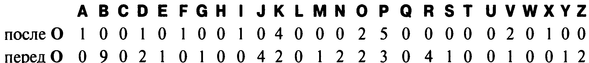
Каждая буква в английском языке характеризуется своими собственными, присущими только ей индивидуальными особенностями, среди которых частота ее появления и ее связь с другими буквами.
Именно эти индивидуальные особенности позволяют нам установить истинное значение буквы, даже когда она была скрыта с использованием шифра одноалфавитной замены.
Теперь мы уже гарантированно определили значение четырех букв:
О = е, Х = а, Y = i и В = h и можем приступить к замене отдельных букв в зашифрованном тексте их эквивалентами для открытого текста. При замене я буду придерживаться следующего правила: буквы зашифрованного текста останутся прописными, а подставляемые буквы для открытого текста будут строчными. Это поможет нам отличить те буквы, которые нам еще только предстоит определить, от тех, значение которых мы уже установили.
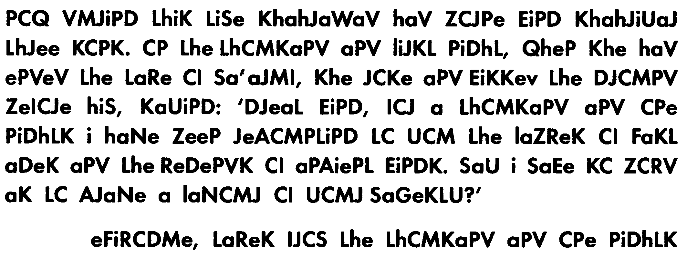
Этот несложный шаг даст нам возможность определить еще несколько букв, поскольку сейчас мы можем отгадать отдельные слова в зашифрованном тексте. К примеру, самыми часто встречающимися трехбуквенными словами в английском языке являются
the и
and, и их сравнительно легко найти в тексте:
Lhe, которое появляется шесть раз, и
aPV, которое появляется пять раз. Следовательно,
L, по всей видимости, является буквой
t, Р — n, а
V — d. Теперь мы можем заменить и эти буквы в зашифрованном тексте, подставив вместо них их действительные значения:
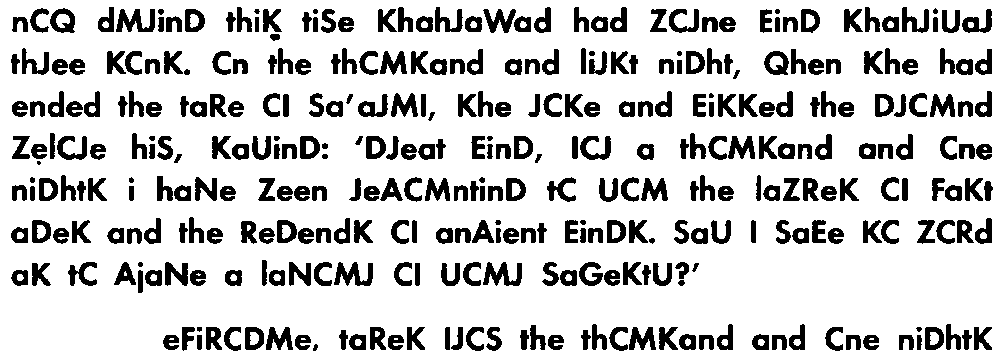
Как только будут определены несколько букв, дальнейший процесс дешифрования пойдет очень быстро. Так, в начале второго предложения стоит слово
Сn. В каждом слове есть гласная, поэтому
С должна быть гласной. Нам осталось определить только две гласные: u и
о; u не подходит, значит,
С должна быть буквой
о. У нас также есть слово
Khe, в котором
К может быть либо
t, либо
s. Но мы уже знаем, что
L =
t, поэтому совершенно очевидно, что
К =
s. Установив значения этих двух букв, подставим их в зашифрованный текст, в результате чего получим фразу
thoMsand and one niDhts. Здравый смысл подсказывает, что это должно быть
thousand and one nights, и, скорее всего, данный отрывок взят из «Тысячи и одной ночи». Отсюда получаем, что
M = u, I = f, J = r, D = g, R = I и
S = m. Мы можем постараться определить другие буквы, подбирая другие слова, но давайте вместо этого посмотрим, что нам известно об алфавите открытого текста и о шифралфавите. Эти два алфавита образуют ключ и применяются криптографом для выполнения замены, благодаря которой сообщение становится зашифрованным. Ранее, определив истинные значения букв в зашифрованном тексте, мы успешно подобрали элементы шифралфавита. То, чего мы достигли на данный момент, представлено ниже, в алфавите открытого текста и шифралфавите.
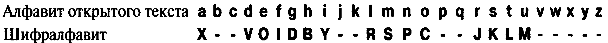
Анализируя частично заполненную строку шифралфавита, мы можем завершить криптоанализ. Последовательность
VOIDBY в шифралфавите дает возможность предположить, что в качестве ключа криптограф использовал ключевую фразу. Можно догадаться, что ключевой фразой здесь будет
A VOID BY GEORGES PEREC, которая, после того как будут убраны пробелы и повторы букв, сократится до
AVOIDBYGERSPC. После нее буквы следуют в алфавитном порядке, при этом те из них, которые уже встречались в ключевой фразе, пропускаются. В данном частном случае криптограф расположил ключевую фразу не в начале шифралфавита, а начиная с третьей буквы. Это допустимо, поскольку ключевая фраза начинается с буквы
А, криптограф же хочет избежать зашифровывания
а как
А. Наконец, определив шифралфавит, мы можем полностью дешифровать весь зашифрованный текст, и криптоанализ будет закончен.
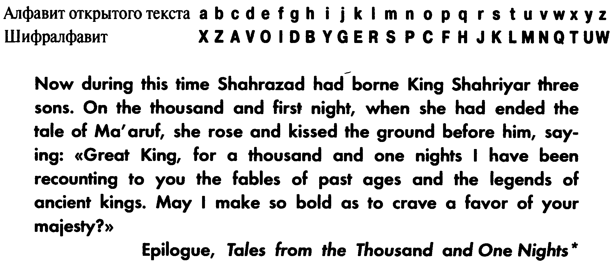
[7]Эпоха Возрождения на Западе
Между 800 и 1200 годами н. э., когда для арабских ученых наступил период выдающихся интеллектуальных достижений, Европа прочно увязла в Темных веках. В то время как аль-Кинди описывал изобретение криптоанализа, европейцы все еще постигали основы криптографии. Единственными в Европе институтами, в которых поощрялось изучение тайнописи, были монастыри, где монахи исследовали Библию в поисках скрытого в ней значения; заманчивость этих поисков была такова, что они продолжаются и по сей день (см. Приложение C).
Средневековые монахи были заинтригованы тем фактом, что в Ветхом Завете имелись явные признаки использования криптографии. В нем, к примеру, встречаются куски текста, зашифрованного с помощью
атбаша, — традиционной формы шифра замены в иврите. Принцип зашифровывания здесь следующий: берется буква, определяется, какой она является по счету от начала алфавита, после чего заменяется буквой, которая стоит на том же самом месте, но только считая от конца алфавита. Для английского языка это означает, что
а, стоящая в начале алфавита, заменяется буквой Z, стоящей в конце алфавита, b заменяется на Y и так далее. Название атбаш само намекает на замену, которая используется в этом шифре: слово атбаш состоит из первой буквы алфавита иврита;
алеф, за которой
следует последняя буква в алфавите
тав, далее идет вторая буква,
бет, а за ней — вторая буква от конца
шин. Примеры атбаша даны в книге пророка Иеремии, глава 25, стих 26 и глава 51 стих 41, где слово «Вавилон» заменено словом «Сесах» («Шешах»); первая буква слова Babel (Вавилон) —
бет, вторая буква алфавита иврита, заменяется на
шин, вторую букву от конца; второй буквой слова Babel
[8] также является
бет, и поэтому она тоже заменяется на
шин; последняя буква слова Babel —
ламед, двенадцатая буква алфавита иврита, и она заменяется на
каф, двенадцатую букву от конца алфавита.
Атбаш и другие подобные библейские шифры предназначались, по-видимому, для придания таинственности, а не для того, чтобы скрыть смысл, но и этого оказалось достаточно, чтобы пробудить интерес к серьезному занятию криптографией. Европейские монахи начали заново открывать уже забытые шифры замены, придумали новые шифры и со временем сумели повторно приобщить цивилизацию Запада к криптографии. Первая известная европейская книга, в которой рассказывается об использовании криптографии, была написана в тринадцатом веке английским францисканским монахом и энциклопедистом Роджером Бэконом.
В «Тайных опытах и недействительности магии» приведены семь способов того, как хранить сообщения в секрете, и дается предупреждение: «Дурак тот, кто пишет о тайне каким-либо способом, но не так, чтобы скрыть ее от простонародья».
К четырнадцатому веку криптографией стали пользоваться повсеместно; алхимики и ученые использовали ее, чтобы хранить свои открытия в секрете. Джеффри Чосер, несмотря на то что он гораздо более известен своими литературными достижениями, являлся также астрономом и криптографом, и именно в его работах можно найти один из самых известных примеров первого в Европе использования зашифровывания. В своем трактате «Об астролябии» он дал несколько дополнительных замечаний, озаглавленных «Экватор планет», в которых содержалось несколько зашифрованных разделов. При зашифровывании по способу Чосера буквы незашифрованного текста заменялись символами, например, b заменялась на δ. На первый взгляд зашифрованный текст, состоящий не из букв, а из непонятных символов, казался более сложным, но, по сути, это эквивалентно обычной замене буквы на букву. Принцип зашифровывания и степень стойкости точно такие же.
К пятнадцатому веку европейская криптография превратилась в целую отрасль, развивающуюся стремительными темпами. Возрождение искусства и науки в эпоху Ренессанса «вскормило» криптографию, а бурный рост политических интриг вынуждал обеспечивать секретность переписки. Идеальной средой для криптографии была, в частности, Италия. Она, наряду с тем, что являлась душой Возрождения, состояла из независимых городов-государств, каждый из которых старался перехитрить другие и добиться над ними преимущества. Был расцвет дипломатии; от каждого государства ко дворам других направлялись послы. Каждый посол получал указания от своего правителя о том, какую внешнюю политику он должен проводить. В свою очередь послы отсылали своим правителям все сведения, которые они собирали. Ясно, что имелась веская причина для зашифровывания посланий, идущих в обоих направлениях. В связи с этим в каждом государстве были учреждены шифровальные ведомства, а при каждом после находился секретарь-шифровальщик.
В это же самое время, когда криптография становилась обычным дипломатическим инструментом, на Западе все было готово к появлению криптоанализа как науки. Дипломаты еще только овладевали искусством ведения секретной переписки, как уже появились отдельные лица, которые старались эту секретность уничтожить. Вполне возможно, что в Европе криптоанализ был изобретен независимо от других, но существует вероятность и того, что он был завезен из арабского мира.
Открытия, сделанные мусульманами в естественных науках и в математике, оказали огромное влияние на возрождение науки в Европе, так что среди завезенных знаний вполне мог оказаться и криптоанализ.
По всей видимости, первым крупным европейским криптоаналитиком был Джованни Соро, назначенный на должность венецианского секретаря-шифровалыцика в 1506 г. Репутация Соро была известна во всей Италии, и дружественные государства пересылали в Венецию перехваченные сообщения для проведения их криптоанализа. Даже из Ватикана, пожалуй, второго по активности центра криптоанализа, направляли Соро попадающие в их руки сообщения, которые, как им представлялось, дешифровать было невозможно. В 1526 году папа Климент VII послал ему два зашифрованных письма, и оба они вернулись успешно дешифрованными. И когда одно из зашифрованных личных писем папы было перехвачено флорентийцами, папа направил его копию Соро в надежде, что тот его успокоит, сказав, что дешифровать его невозможно. Соро объявил, что он не смог взломать шифр папы, дав понять, что и флорентийцы также не смогут дешифровать его. Возможно, однако, что это была уловка, чтобы успокоить криптографов Ватикана и внушить им ложное чувство безопасности — Соро просто не хотел показать слабость папского шифра, поскольку это только подтолкнуло бы Ватикан к созданию более стойкого шифра, шифра, который Соро, может, и не сумел бы раскрыть.
И другие дворы Европы также стали приглашать на службу искусных криптоаналитиков, таких как Филибер Бабу, который был криптоаналитиком короля Франции Франциска I. Бабу приобрел репутацию невероятно упорного человека, который способен работать круглые сутки неделями напролет, чтобы раскрыть перехваченное сообщение. К несчастью для Бабу, это дало возможность королю вступить в длительную любовную связь с его женой. К концу шестнадцатого века, с появлением Франсуа Виета, который получал особое удовлетворение от взлома испанских шифров, французы повысили свое мастерство по дешифрованию сообщений. Испанские криптографы, которые выглядели простодушными по сравнению со своими противниками в Европе, не могли поверить, когда узнали, что их сообщения становились известны французам. Испанский король Филипп II даже обратился с прошением в Ватикан, заявив, что единственным объяснением успешности применения криптоанализа Виета является то, что он — «сатана, вступивший в сговор с дьяволом». Филипп убеждал, что Виет должен предстать перед судом кардиналов из-за своих дьявольских дел, но папа, который знал, что его собственные криптоаналитики уже не первый год вскрывали испанские шифры, отверг прошение испанцев. Новость о прошении вскоре стала известна криптоаналитикам различных стран, и испанские криптографы оказались посмешищем всей Европы.
Ситуация с испанцами наглядно характеризовала состояние противоборства между криптографами и криптоаналитиками. Это был переходный период, когда криптографы все еще полагались на одноалфавитный шифр замены, в то время как криптоаналитики уже начали применять частотный анализ, чтобы взломать этот шифр. Криптографам еще только предстояло узнать все могущество частотного анализа, а пока что они продолжали верить в одноалфавитную замену, не представляя, в какой степени такие криптоаналитики, как Соро, Бабу и Виет, были способны прочесть их сообщения.
Между тем государства, которые получили предупреждение о слабости одноалфавитного шифра замены, стремились создать более стойкий шифр, который смог бы защитить их сообщения от раскрытия криптоаналитиками неприятеля. Одним из простейших приемов повышения стойкости одноалфавитного шифра замены является использование
«пустых» знаков — символов или букв, которые не заменяли реальные буквы, а являлись просто пустыми, ничего не обозначающими символами. Например, можно заменить каждую букву открытого текста числами от 1 до 99, из которых 73 ничего не означают и могут случайным образом появляться с разной частотой в зашифрованном тексте. «Пустые» знаки не представляют никакой сложности для получателя, кому предназначено данное сообщение, кто знает, что эти символы не следует принимать во внимание. Однако наличие таких знаков будет сбивать с толку противника, перехватившего сообщение, потому что они усложняют атаку с применением частотного анализа. Ради повышения стойкости криптографы иногда сознательно перед зашифровыванием сообщения писали слова неправильно. Thys haz thi ifekkt off diztaughting thi ballans off fnkwenseas — усложняет криптоаналитику возможность применения частотного анализа. Однако получатель данного сообщения, если он знает ключ, сможет расшифровать его, после чего в его распоряжении окажется неверно написанный, но все же вполне понятный текст.
К попыткам усилить одноалфавитный шифр замены относится и введение кодовых слов. Термин
код имеет очень широкое значение в обыденной речи, и он часто употребляется для описаниялюбых способов, используемых для тайной передачи информации. Однако, как было упомянуто в Введении, в действительности он имеет весьма специфическое значение и применяется только для определенного вида замены. До сих пор мы рассматривали шифр замены, посредством которого каждая буква заменяется на другую букву, число или символ.
Однако замену можно осуществлять на гораздо более высоком уровне, когда каждое слово представляется другим словом или символом — это и будет код. Например:
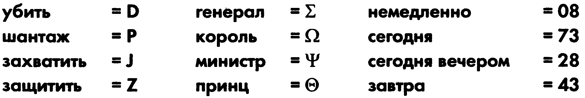
Исходное сообщение =
убить короля сегодня вечером. Закодированное сообщение =
D-Ω-28 Формально
код определяется как замена, выполняемая на уровне слов или фраз, в то время как
шифр определяется как замена на уровне букв. Поэтому термин
зашифровать означает «сделать сообщение секретным с помощью шифра», в то время как
закодировать означает «сделать сообщение секретным с помощью кода». Аналогично термин
расшифровать/дешифровать применяется для рассекречивания зашифрованного сообщения, а
раскодировать/декодировать — для рассекречивания закодированного сообщения. Термины
зашифровать и
расшифровать/дешифровать более общие и охватывают засекречивание и рассекречивание, выполняемое как с помощью кодов, так и с помощью шифров. На рисунке 7 показана краткая сводка этих определений. В целом я буду придерживаться этих определений, но когда смысл ясен, я могу воспользоваться, например, таким термином, как «криптографический анализ», чтобы описать процесс, который на самом деле является «взломом шифра» — последний термин может быть формально более точным, но первый является более употребимым.
На первый взгляд представляется, что коды обеспечивают более высокую степень стойкости, чем шифры, так как слова гораздо менее уязвимы для частотного анализа, чем буквы. Чтобы дешифровать одноалфавитный шифр, вам потребуется установить точные значения каждой из всего лишь 26 букв, а чтобы взломать код, вам потребуется определить точные значения сотен и даже тысяч кодовых слов. Однако если мы более внимательно рассмотрим коды, мы увидим, что они, по сравнению с шифрами, обладают двумя существенными с практической точки зрения недостатками. Во-первых, после того как отправитель и получатель согласуют 26 букв в шифралфавите (ключ), они смогут зашифровать любое сообщение, но чтобы добиться той же гибкости при применении кода, им придется проделать кропотливую работу по заданию кодового слова для каждого из тысяч возможных слов незашифрованного текста. Кодовая книга будет состоять из сотен страниц и напоминать словарь. Другими словами, составление кодовой книги — это изрядная задача, держать же ее при себе представляет значительное неудобство.
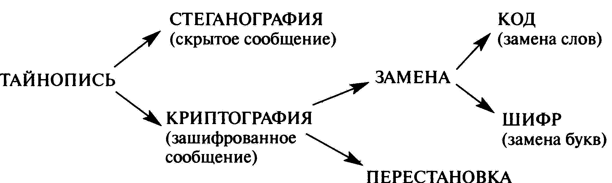
Рис. 7 Наука тайнописи и ее основные направления. Во-вторых, последствия того, что противник завладеет кодовой книгой, поистине ужасающи. Все закодированные сообщения сразу же станут известны противнику. Отправители и получатели должны будут заново пройти через кропотливый процесс создания совершенно новой кодовой книги, а затем этот объемистый новый том необходимо будет передать всем в коммуникационной сети, то есть секретно доставить его всем послам во всех странах. Сравните: если противнику удастся завладеть ключом шифра, то сравнительно несложно составить новый шифралфавит из 26 букв, который можно запомнить и легко передать.
Даже в шестнадцатом веке криптографы хорошо осознавали присущие кодам слабости и вместо них больше полагались на шифры, или, иногда, на
номенклаторы. Номенклатор — это система шифрования, основанная на шифралфавите, который применяется для зашифровывания большей части сообщения, плюс небольшой набор кодовых слов. К примеру, номенклаторная книга могла бы состоять из титульного листа с шифралфавитом и со списком кодовых слов на второй странице. Несмотря на добавление кодовых слов, номенклатор ненамного надежнее, чем просто один шифр, поскольку основная часть сообщения может быть дешифрована с помощью частотного анализа, а смысл оставшихся зашифрованными слов может быть определен по контексту.
Лучшие криптоаналитики не только совладали с номенклатором, они способны были также справиться и с сообщениями с неправильно написанными словами, и с сообщениями с «пустыми» знаками. Короче говоря, они могли вскрыть большинство зашифрованных сообщений. Благодаря квалификации и умению криптоаналитиков, раскрытые секреты шли непрерывным потоком; они влияли на принятие решений властителями и повелительницами, определяя тем самым ход истории в Европе в критические моменты.
Никогда влияние криптоанализа не проявилось так драматично, как в случае Марии Стюарт, королевы Шотландии. Исход судебного процесса над ней всецело зависел от поединка между ее шифровальщиками и дешифровальщиками королевы Елизаветы. Мария была одной из наиболее заметных фигур шестнадцатого столетия — королева Шотландии, королева Франции, претендент на английский трон — и все же ее судьба зависела от листочка бумаги, содержавшегося на нем сообщения и от того, будет или нет оно дешифровано.
Заговор Бабингтона
24 ноября 1542 года английские войска Генриха VIII разгромили шотландскую армию в битве при Солвей Мосс в северной Англии. Казалось, что Генрих вот-вот завоюет Шотландию и захватит корону короля Якова V. После сражения обезумевший король Шотландии страдал от полного душевного опустошения и упадка сил и удалился во дворец в Фолкленде. Даже рождение дочери Марии, всего через две недели, не могло оживить угасающего короля. Казалось, что он всего лишь ждал вестей о рождении наследника, чтобы спокойно закончить жизненный путь, зная, что он выполнил свой долг. Не прошло и недели после рождения Марии, как король Яков V, которому было всего тридцать лет, умер. Мария Стюарт стала принцессой-дитя.
Мария родилась недоношенной, и вначале казалось, что она не выживет. По ходившим в Англии слухам дитя умерло, но это было просто принятие желаемого за действительное при английском дворе, который был склонен выслушивать любые новости, которые могли бы дестабилизировать Шотландию. На самом же деле Мария вскоре окрепла и стала здоровой, и в возрасте девяти месяцев, 9 сентября 1543 года, она была коронована в церкви замка Стерлинг, в окружении трех графов, несущих от ее имени королевскую корону, скипетр и меч.
То, что королева Мария была слишком юна, дало Шотландии передышку от английских нападений. Если бы Генрих VIII попытался вторгнуться в страну, в которой совсем недавно умер король и которой правила принцесса-дитя, это посчитали бы нерыцарским и неблагородным. Вместо этого английский король выбрал политику сватовства, в надежде устроить брак между Марией и своим сыном Эдуардом, объединив тем самым обе нации под властью Тюдоров. Он начал с того, что отпустил шотландских дворян, плененных на Солвей Мосс, при условии, что они будут выступать за союз с Англией.
Однако шотландский двор, рассмотрев предложение Генриха, отверг его в интересах брака с Франциском, дофином Франции. Шотландия выбрала союз с государством, принадлежащим римско-католической церкви, решение, которое обрадовало мать Марии, Марию де Гиз, чей брак с Яковом V был направлен на укрепление связи между Шотландией и Францией. Мария и Франциск были еще детьми, но планировалось, что в будущем они поженятся и Франциск взойдет на трон Франции с Марией, которая станет королевой, объединив тем самым Шотландию и Францию. А до того времени Франция обязуется защищать Шотландию от любых нападений Англии.
Обещание защиты со стороны Франции была подтверждено еще раз, в частности после того, как Генрих VIII перешел от политики дипломатии к запугиванию, дабы убедить шотландцев, что его сын — более подобающий жених для Марии Стюарт. Его войска пиратствовал и уничтожали посевы, сжигали деревни и нападали на города и села вдоль границы. «Грубое ухаживание», как известно, продолжалось даже после смерти Генриха в 1547 году. Все завершилось в битве при Пинки-Клей, в которой англичане под руководством сына Генриха VIII, короля Эдуарда VI (претендующего на роль «поклонника»), наголову разбили шотландскую армию. После этой бойни было решено, что ради собственной безопасности Мария должна уехать во Францию, где она будет вне досягаемости со стороны Англии и где она смогла бы подготовиться к браку с Франциском. 7 августа 1548 года, в возрасте шести лет, она отплыла на галеоне в порт Росков.
Первые несколько лет при французском дворе были самым идиллическим периодом жизни Марии. Она была окружена роскошью, ограждена от зла и росла, чтобы любить своего будущего мужа, дофина. В возрасте шестнадцати лет они поженились, а на следующий год Франциск и Мария стали королем и королевой Франции. Казалось, что все способствовало ее триумфальному возвращению в Шотландию, пока ее муж, который всегда был слабого здоровья, серьезно не заболел. Воспаление уха, которым он страдал с детства, усугубилось, процесс распространился на мозг, и начал развиваться абсцесс. В 1560 году, не пробыв королем и года, Франциск умер. Мария овдовела.
С этого времени жизнь Марии неоднократно омрачалась трагическими событиями. Вернувшись в Шотландию в 1561 году, она обнаружила, что страна совершенно переменилась. Во время своего длительного отсутствия Мария утвердилась в католической вере, ее же шотландские подданные все больше и больше склонялись к протестантской церкви. Мария была терпимой к желаниям большинства и вначале правила относительно успешно, но в 1565 году она сочеталась браком со своим кузеном, Генри Стюартом, лордом Дарили, шаг, после которого звезда Марии исподволь, но все быстрее и быстрее покатилась вниз. Дарнли оказался злобным и безжалостным, алчущим власти человеком, из-за которого Мария лишилась верности шотландских дворян. На следующий год Мария сама убедилась в жестоком характере своего мужа, когда он убил прямо у нее на глазах ее же секретаря Дэвида Риччо. Всем стало ясно, что ради Шотландии необходимо было избавиться от Дарнли. Историки спорят, кто из них, Мария или шотландские дворяне, организовал заговор, но в ночь на 9 февраля 1567 года дом Дарнли загорелся, а он сам, пытаясь выбраться, задохнулся. Единственная польза, которую принес этот брак, — появление сына и престолонаследника Иакова.
Следующее замужество Марии с Джеймсом Хепберном, четвертым графом Босуэлским, едва ли было более счастливым. К лету 1567 года протестантские дворяне Шотландии лишились последних иллюзий в отношении своей католической королевы; они изгнали Босуэла и заключили в тюрьму Марию, принудив ее отречься от короны в пользу четырнадцатимесячного сына Якова VI, в то время как ее сводный брат, граф Меррейский, выступал в качестве регента. На следующий год Мария, бежав из заключения, собрала армию из шести тысяч солдат и совершила еще одну, последнюю попытку вернуть себе корону. Ее войско столкнулось с армией регента у небольшой деревушки Лэнгсайд, неподалеку от Глазго, и Мария наблюдала за сражением с вершины соседнего холма. Хотя ее отряды численностью превосходили противника, но дисциплины у них не было, и Мария видела, как ее войско просто разорвали. Когда поражение стало неизбежным, ей ничего не оставалось, как спасаться бегством. Лучше всего для нее было бы направиться на восток, к побережью, а затем во Францию, но это означало бы пересечь территорию, подвластную ее брату, и вместо этого она направилась на юг, в Англию, где, как она надеялась, ее кузина, королева Елизавета I, даст ей убежище.
Мария совершила ужасную ошибку. Елизавета не предложила Марии ничего, кроме еще одного заключения. Официальной причиной ее ареста была смерть Дарнли, однако действительная причина состояла в том, что Мария представляла собой угрозу Елизавете, поскольку английские католики считали Марию истинной королевой Англии.
Благодаря своей бабушке, Маргарет Тюдор, старшей сестре Генриха VIII, Мария действительно притязала на английский трон, но у последнего выжившего отпрыска Генриха, Елизаветы I, имелось на него, пожалуй, преимущественное право. Однако Елизавета была объявлена католиками незаконнорожденной, так как являлась дочерью Анны Болейн, второй жены Генриха, после того как он расторгнул брак с Екатериной Арагонской вопреки запрету папы. Английские католики не признавали развода Генриха VIII, они не признавали последующей его женитьбы на Анне Болейн, и они заведомо не считали их дочь Елизавету королевой. Католики рассматривали Елизавету как мерзкого узурпатора.
Марию лишили свободы; ее поочередно перевозили из одного замка в другой, из одного поместья в другое. Хотя Елизавета считала ее одной из наиболее опасных фигур в Англии, но многие англичане признавали, что были восхищены ее грациозными манерами, ее ясным умом и ее редкостной красотой. Уильям Сесил, государственный канцлер Елизаветы, отмечал «ее лукавство и чарующее воздействие на всех мужчин»; похожее наблюдение сделал и Николас Уайт, эмиссар Сесила: «У нее была к тому же обольстительная привлекательность, милый шотландский акцент и пытливый ум, оттененные сдержанностью». Но годы шли, она старела, здоровье ее ухудшалось, и она начала терять надежду. Ее тюремщик, сэр Эмиас Паулет, пуританин, оказался неуязвим для ее чар и обращался с ней все более и более сурово.
К 1586 году, после 18 лет заключения, она потеряла все свои привилегии. Ее содержали в Чартли Холле в Стаффордшире, и больше ей не дозволялось лечиться на водах в Бакстоне, которые прежде помогали облегчить ее страдания во время частых приступов ревматизма. Во время своего последнего посещения Бакстона она алмазом начертала на оконном стекле: «Бакстон, чьи теплые воды прославили тебя, наверное, я больше не приеду сюда никогда. Прощай». Похоже, что она подозревала, что ее лишат и той небольшой свободы, которая еще была у нее. Растущие страдания Марии усугублялись действиями ее девятнадцатилетнего сына, короля Шотландии Якова VI. Она всегда надеялась, что в один прекрасный день ее отпустят и она вернется в Шотландию, чтобы разделить власть со своим сыном, которого она не видела с тех пор, как ему исполнился один год. Однако Яков не чувствовал никакой привязанности к своей матери. Его вырастили и воспитали враги Марии, внушившие Якову, что его мать убила его отца, чтобы выйти замуж за своего любовника. Яков презирал ее и боялся, что если она вернется, то постарается захватить его корону.
Ненависть его к Марии наглядно проявилась в том, что он без брезгливости стремился сочетаться браком с Елизаветой I, женщиной, которая виновна в лишении свободы его матери (и которая была старше него на тридцать лет). Елизавета отклонила предложение.
Мария писала своему сыну в надежде склонить его на свою сторону, но письма ее никогда не достигали границ Шотландии. К этому моменту Мария находилась в большей изоляции, чем когда-либо раньше: все письма от нее конфисковывались, а вся входящая корреспонденция задерживалась ее тюремщиком. Мария была совершенно подавлена; казалось, что никакой надежды больше не осталось. И в этом состоянии безысходности 6 января 1586 года она получила поразившую ее пачку писем.
Письма пришли от тех, кто поддерживал Марию на континенте, и их тайно доставил в ее тюрьму Гилберт Гиффорд, католик, покинувший Англию в 1577 году и учившийся на священника в английском колледже в Риме. Вернувшись в 1585 году в Англию и страстно желая быть полезным Марии, он сразу же отправился во французское посольство в Лондоне, где скопилась кипа писем. В посольстве знали, что, если они направят письма обычным путем, Мария никогда не увидит их. Однако Гиффорд объявил, что он сможет тайно переправить письма в Чартли Холл, и он на самом деле сдержал свое слово. Эта передача была одной из многих, и Гиффорд стал курьером, не только передавая письма Марии, но и забирая ее ответы. Он придумал довольно остроумный способ беспрепятственно переправлять письма в Чартли Холл. Он отдавал письма местному пивовару, тот заворачивал их в кожаный мешок, а затем прятал в выдолбленной затычке, которой закупоривали бочонок с пивом. Пивовар доставлял бочку в Чартли Холл, после чего один из слуг Марии вскрывал затычку и передавал содержимое королеве Шотландии. Этот способ действовал равно хорошо и для передачи писем из Чартли Холла.
Тем временем в лондонских тавернах вынашивался план по освобождению Марии. В центре заговора стоял Энтони Бабингтон. Ему всего лишь двадцать четыре, но он уже хорошо известен в столице как красивый, обаятельный и остроумный бонвиван. Чего его многие восхищенные современники не сумели понять, так это того, что Бабингтон был крайне недоволен властями, из-за которых он сам, его семья и его вера подвергались гонениям.
Государственная политика, направленная на искоренение католицизма, была поистине ужасающей: священников обвиняли в государственной измене, а любого, кто давал им прибежище, вздергивали на дыбе, отрубали конечности и еще живых потрошили. Католическая месса была официально запрещена, а семьи, оставшиеся верными папе, были вынуждены платить непомерные налоги. Враждебность Бабингтона подпитывалась смертью лорда Дарси, его прадеда, который был обезглавлен из-за участия в «Благодатном паломничестве» — католическом восстании против Генриха VIII
[9].
Датой рождения заговора можно считать один из мартовских вечеров 1586 года, когда Бабингтон и шестеро его ближайших друзей собрались в гостинице «Плуг» за лондонскими воротами перед зданием Темпля. Как отмечал историк Филипп Караман: «Он притягивал к себе силой своего обаяния и личных качеств многих молодых дворян-католиков из своего окружения, галантных, безрассудно смелых и отчаянно храбрых, готовых для защиты католической веры в то время, когда она подвергается гонениям, и жаждущих любого трудного дела, каким бы оно ни было, которое могло бы послужить во благо католической церкви». В следующие несколько месяцев родился грандиозный план: освободить Марию, убить королеву Елизавету и поднять мятеж, который будет поддержан вторжением из-за границы.
Заговорщики согласились, что заговор Бабингтона, как его стали называть, не мог продолжаться без благословения Марии, однако никаких способов связаться с ней не было. И в этот самый момент, 6 июля 1586 года, на пороге дома Бабингтона появился Гиффорд. Он привез письмо от Марии, в котором она писала, что узнала о Бабингтоне от своих сторонников в Париже и с нетерпением ожидает от него вестей. В ответ Бабингтон составил подробное письмо, в котором он обрисовал свой план, не забыв упомянуть об отлучении Елизаветы от церкви папой Пием V в 1570 году, что, как он полагал, вполне оправдывало ее убийство.
Я сам с десятью дворянами и сотней наших, сторонников предприму освобождение Вашего королевского высочества из рук ваших врагов. Чтобы убить узурпаторшу, которая отлучена от церкви и которой поэтому мы не повинуемся, есть шесть благородных дворян, все — мои верные друзья, истово и с усердием служащие католической церкви и Вашему высочеству, которые возьмут на себя выполнение этого прискорбного дела.
Как и прежде, Гиффорд прятал сообщение в затычке, которой закупоривали бочонок с пивом, чтобы незаметно пронести его мимо стражи Марии. Это можно рассматривать как стеганографию, поскольку скрывалось наличие самого письма.
В качестве дополнительной меры предосторожности Бабингтон зашифровал свое письмо, так что даже если оно и будет перехвачено тюремщиком Марии, то дешифровать его не смогут, и заговор останется нераскрытым. Он использовал шифр, который был не просто одноалфавитной заменой, а, скорее, номенклатором, что показано на рис. 8. Шифр состоял из 23 символов, которыми заменялись буквы алфавита (кроме j, v и w), и еще 35 символов, являющихся словами или предложениями. Помимо этого, имелось четыре «пустых» знака и символ σ, который указывал, что следующий символ представляет собой удвоенную букву («дублет»).
Гиффорд был еще молод, даже моложе Бабингтона, и все же он смело и уверенно перевозил письма. Под вымышленными именами — мистер Колердин, Пьетро и Корнелий — он беспрепятственно ездил по стране, не вызывая подозрений, а благодаря своим связям среди католиков у него всегда имелось несколько надежных убежищ между Лондоном и Чартли Холлом. Однако всякий раз, приезжая в
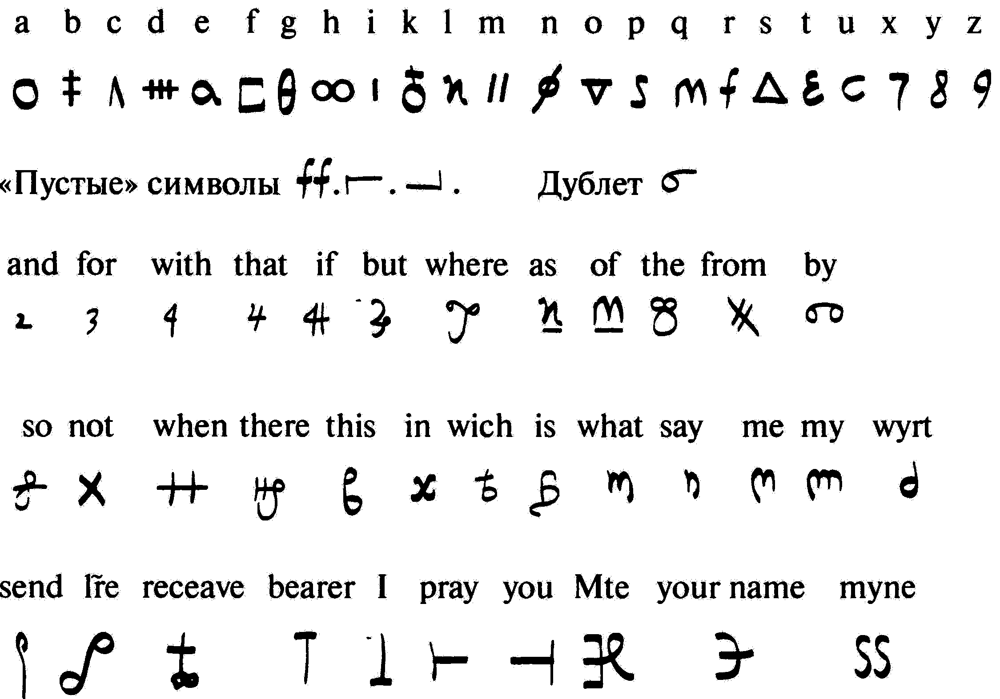
Рис. 8 Номенклатор Марии Стюарт, королевы Шотландии, состоящий из шифралфавита и кодовых слов. Чартли Холл или покидая его, Гиффорд делал крюк. Хотя он явно действовал как агент Марии, но был на самом деле двойным агентом. Еще в 1585 году, перед возвращением в Англию, Гкффорд написал сэру Фрэнсису Уолсингему, государственному секретарю королевы Елизаветы, предлагая ему свои услуги.
Гиффорд понимал, что его католическое прошлое могло бы послужить великолепным прикрытием для проникновения в ряды заговорщиков, выступающих против королевы Елизаветы. В письме к Уолсингему он писал: «Я слышал о вашей работе и хотел бы послужить вам. У меня нет сомнений, и меня не страшит опасность. Что бы вы ни приказали мне, я это сделаю».
Уолсингем был самым беспощадным министром Елизаветы, министром полиции, отвечающим за безопасность монарха и ради этого не брезговавшим никакими средствами. Он унаследовал небольшую сеть шпионов, которую быстро расширил и внедрил в Европу, где вынашивалось и готовилось большинство заговоров против Елизаветы. После его смерти обнаружилось, что он регулярно получал донесения из двенадцати мест во Франции, девяти в Германии, четырех в Италии, четырех в Испании и трех в Нидерландах, Бельгии и Люксембурге, а также имел информаторов в Константинополе, Алжире и Триполи.
Уолсингем завербовал Гиффорда в качестве шпиона, и фактически именно Уолсингем приказал Гиффорду отправиться во французское посольство и предложить себя в качестве курьера. Всякий раз письмо для Марии, или от нее, попадало вначале Уолсингему. Тот передавал его своим подчиненным, которые вскрывали каждое письмо, снимали с него копию, вновь запечатывали его такой же печатью и отдавали обратно Гиффорду. Будто бы нетронутое письмо доставлялось Марии или ее корреспондентам, которые оставались в неведении о происходящем.
Когда Гиффорд вручал Уолсингему письмо от Бабингтона Марии, первоочередная задача заключалась в том, чтобы дешифровать его. Уолсингем впервые столкнулся с кодами и шифрами при чтении книги, написанной итальянским математиком и криптографом Джироламо Кардано (предложившим, между прочим, вид письма для слепых, основанный на тактильности, — предшественник шрифта Брайля). Книга Кардано пробудила интерес Уолсингема, но только работы по дешифровке корреспонденции фламандского криптоаналитика Филиппа ван Марникса убедили его в необходимости иметь в своем распоряжении дешифровальщика. В 1577 году Филипп Испанский использовал шифры для переписки со своим сводным братом, также католиком, доном Хуаном Австрийским, который управлял большей частью Нидерландов. В письме Филипп предлагал план вторжения в Англию, но оно было перехвачено Вильгельмом Оранским, который передал его Марниксу, своему шифровальщику. Марникс расшифровал план, и Уильям переправил информацию Даниэлю Роджерсу, английскому агенту, работающему на континенте, который, в свою очередь, предупредил Уолсингема об угрозе нападения. Англичане укрепили свою оборону, что оказалось достаточным, чтобы вынудить испанцев отказаться от попытки вторжения.
Теперь, всецело осознав ценность криптоанализа, Уолсингем основал шифровальную школу в Лондоне и взял себе на службу в качестве шифровальщика Томаса Фелиппеса, человека «невысокого роста, незначительного во всех отношениях, близорукого, с волосами цвета соломы — на голове темнее, борода светлее, — с изъеденным оспой лицом, на вид около тридцати лет». Фелиппес был лингвистом, знавшим французский, итальянский, испанский, латинский и немецкий языки, но гораздо важнее было то, что он являлся одним из лучших в Европе криптоаналитиков.
Получив письмо, для Марии или от нее, Фелиппес просто проглатывал его. Для него, знатока частотного анализа, отыскать решения было всего лишь вопросом времени. Он находил частоту появления каждой буквы и в качестве рабочей гипотезы делал предположение о значении тех из них, которые появлялись чаще всего. Если при данном предположении получалась нелепица, он возвращался назад и пробовал другую замену. Постепенно он идентифицировал «пустые» символы — криптографические «ложные следы». В конечном счете осталось только небольшое количество кодовых слов, значения которых могло быть выяснено из контекста.
Когда Фелиппес дешифровал письмо Бабингтона к Марии, в котором недвусмысленно предлагалось убийство Елизаветы, он незамедлительно направил его своему господину. Сейчас Уолсингем мог бы схватить Бабингтона, но ему хотелось большего, нежели казнь горстки заговорщиков. Он выжидал, надеясь, что Мария ответит и одобрит заговор, тем самым изобличив себя. Уолсингем уже давно жаждал смерти Марии, королевы Шотландии, но он понимал нежелание Елизаветы казнить свою двоюродную сестру. Однако если бы он смог доказать, что Мария поддерживала покушение на жизнь
Елизаветы, тогда, без сомнения, его королева дозволит предать казни свою католическую противницу. Вскоре упованиям Уолсингема суждено было оправдаться.
17 июля Мария ответила Бабингтону, подписав тем самым свой смертный приговор. Она подробно написала о «плане», особо оговорив, что должна быть освобождена одновременно, или чуть раньше, убийства Елизаветы, в противном случае новости могут дойти до ее тюремщика, который может убить ее. Как обычно письмо, перед тем как попасть к Бабингтону, оказалось у Фелиппеса. Проведя криптоанализ предыдущего письма, он с легкостью дешифровал и это, прочитал его и пометил знаком «П» — обозначением виселицы.
У Уолсингема на руках были все доказательства для ареста Марии и Бабингтона, но он все еще не был окончательно удовлетворен. Чтобы полностью искоренить заговор, ему нужны были имена всех, кто принимал в нем участие, поэтому он попросил Фелиппеса добавить к письму Марии приписку с просьбой Бабингтону назвать их имена. Один из талантов Фелиппеса заключался в умении подделывать почерк; говорили, что он «хотя бы раз увидев написанное рукой любого человека, мог воспроизвести его почерк, и это выглядело бы так, словно этот человек сам написал это». На рисунке 9 показана приписка, которую он сделал в конце письма Марии Бабингтону. Она может быть расшифрована с помощью номенклатора Марии, представленного на рисунке 8; в результате получится следующий незашифрованный текст:
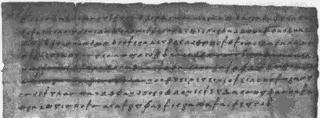
Рис. 9 Приписка к письму Марии, добавленная Томасом Фелиппесом. Ее можно расшифровать с помощью номенклатора (рис. 8). Я была бы рада узнать имена и положение всех шестерых дворян, которым поручено привести план в исполнение, так как вполне возможно, что, зная их, я смогу дать вам дальнейшие необходимые указания и, время от времени, в частности, как вам действовать; в тех же целях сообщите мне, по возможности быстрее, кто из них уже посвящен в это и насколько.
Шифр Марии Стюарт наглядно показал, что слабое шифрование может быть даже хуже, чем если бы его не было вовсе. И Мария, и Бабингтон подробно писали о своих намерениях, полагая, что суть их переписки останется в тайне, а вот если бы они вели переписку открыто, они бы обсуждали свой план более сдержанно и осмотрительно. Более того, их непоколебимая вера в свой шифр сделала их крайне беззащитными перед подделанной припиской Фелиппеса.
Зачастую и отправитель, и получатель настолько верят в стойкость используемого ими шифра, что считают, что противник не сумеет им воспользоваться и вставить сфальсифицированный текст. Надлежащее применение стойкого шифра является очевидным благом для отправителя и получателя, использование же нестойкого шифра может создать ложное чувство безопасности.
Вскоре после получения письма с припиской Бабингтону понадобилось выехать за границу, чтобы организовать вторжение, и он должен был зарегистрироваться в ведомстве Уолсингема для получения паспорта. Это был прекрасный момент, чтобы схватить изменника, но чиновник Джон Скадемор никак не ожидал, что тот, кого усиленно разыскивают по всей Англии, появится на пороге его кабинета. Скадемор, у которого в этот момент никого не оказалось под рукой, пригласил ничего не подозревающего Бабингтона в ближайшую таверну, стараясь потянуть время, пока его помощник соберет отряд солдат. Немногим позже ему в таверну принесли записку, в которой сообщалось, что для ареста все готово. Однако Бабингтон все же успел взглянуть на нее и, небрежно сказав, что заплатит за пиво и еду, поднялся, оставив на столе свою шпагу и куртку как свидетельство того, что через минуту вернется; вместо этого выскользнул из задней двери и бежал, вначале в рощу Сент-Джона, а затем в Харроу. Чтобы скрыть свою аристократическую внешность, он коротко обрезал волосы и окрасил кожу соком грецкого ореха. Целых десять дней ему удавалось ускользать от рук полиции, но к 15 августа Бабингтон и его шесть друзей были схвачены и препровождены в Лондон. По всему городу триумфально звонили церковные колокола, торжествуя победу. Их смерть была ужасной и мучительной. По словам историка Елизаветы Уильяма Камдена, «им отрезали половые органы, еще у живых вытащили внутренности, так чтобы они могли все это видеть, и четвертовали».
А тем временем, 11 августа Марии Стюарт и ее свите было разрешено совершить прогулку верхом в окрестностях Чартли Холла, что было весьма необычно, поскольку ранее это запрещалось. Едва лишь Мария пересекла вересковые пустоши, как увидела нескольких приближающихся всадников, и тотчас же ей почудилось, что это люди Бабингтона, прискакавшие, чтобы дать ей свободу. Но вскоре стало ясно, что они прибыли, чтобы арестовать ее, не освободить. Мария была вовлечена в заговор Бабингтона и была обвинена согласно «Act of Association» — закону, принятому Парламентом в 1585 году и прямо предназначенному для признания виновным любого человека, участвующего в заговоре против Елизаветы. Суд проходил в замке Фотерингей, жалком и убогом месте в центре невыразительной болотистой равнины Восточной Англии.
Он начался в среду, 15 октября, в присутствии двух главных и четырех обычных судей, лорда-канцлера, лорда-казначея, Уолсингема и многочисленных графов, рыцарей и баронов. В задней части зала суда находилось место для зрителей: местных крестьян и слуг — все страстно желали увидеть, как шотландская королева просит прощения и умоляет о сохранении своей жизни. Однако Мария на протяжении всего суда оставалась величественной и спокойной. Основная защита Марии заключалась в том, чтобы отрицать всякую связь с Бабингтоном. «Могу ли я отвечать за преступные планы нескольких безрассудных людей, — восклицала она, — которые они задумывали, не ставя меня в известность, и без моего участия?» Но бе заявление мало повлияло на судей в свете улик против нее.
Мария и Бабингтон, дабы сохранить свои планы в секрете, полагались на шифр, но они жили в то время, когда криптография была ослаблена достижениями криптоанализа. Хотя их шифр обеспечивал достаточную защиту от любопытствующих глаз любителя, но у него не было ни единого шанса противостоять специалисту в частотном анализе. На галерее для зрителей сидел Фелиппес, спокойно ожидая предъявления доказательства, которое он добыл из зашифрованных писем.
Суд состоялся на второй день; Мария продолжала отрицать, что она хоть что-то знала о заговоре Бабингтона. Когда суд окончился, она оставила судей решать ее судьбу, заранее простив им уже предрешенный приговор. Десятью днями позже в Вестминстере собралась Звездная палата и вынесла вердикт, что Мария виновна в том, что «с 1 июня измышляла сама и одобряла измышленные другими планы, ставящие себе целью извести или убить священную особу нашей владычицы, королевы Английской». Они настаивали на смертной казни, и Елизавета утвердила смертный приговор.
8 февраля 1587 года в большом зале замка Фотерингей собралось три сотни зрителей, чтобы посмотреть на казнь. Уолсингем был полон решимости не допустить, чтобы Марию считали мученицей, и распорядился сжечь колоду, одежду Марии и все связанное с казнью, дабы избежать появления каких бы то ни было святых мощей. Он также планировал провести в последующую неделю пышное траурное шествие в честь своего зятя, сэра Филиппа Сиднея. Сидней, популярная и героическая личность, погиб в Нидерландах, сражаясь с католиками, и Уолсингем рассчитывал, что величественный парад в его честь ослабит симпатию к Марии. Однако Мария в не меньшей степени стремилась к тому, чтобы ее последнее появление выглядело жестом неповиновения, возможностью вновь подтвердить приверженность католической вере и вдохновить своих последователей.
 Рис. 10 Казнь Марии, королевы Шотландии.
Рис. 10 Казнь Марии, королевы Шотландии. В то время как реформатский священник из Питерборо читал свои проповеди, Мария громко возносила свои молитвы во спасение английской католической церкви, своего сына и Елизаветы. С родовым девизом «В моем конце — мое начало» в душе Мария, успокоившись, и взошла на эшафот. Палачи попросили у нее прощения, и она ответила: «Я прощаю вам от всего сердца, поскольку теперь, я надеюсь, вы положите конец моим страданиям». Ричард Уингфилд в своем повествовании о последних днях королевы Шотландии так описал ее последние минуты:
После этого она сама очень спокойно легла на колоду, вытянула руки и ноги, крикнув напоследок три или четыре раза «In manus tuas domine»[10]; один из палачей, слегка придерживая ее одной рукой, дважды нанес удар топором, пока не отсек ей голову, но сзади остался неперерубленным небольшой хрящ; в это время она издала слабый звук, и больше ее лежащее тело не шевелилось… Ее губы открывались и закрывались еще почти четверть часа после того, как голова была отрублена. Затем один из палачей, дернув одну из ее подвязок, внезапно обнаружил маленькую собачку, которая ползала под ее одеждами, которую нельзя было отнять от хозяйки кроме как силой и которая потом не могла покинуть ее мертвое тело, а пришла и легла между ее головой и телом.
2 Нераскрываемый шифр
В течение столетий использование простого одноалфавитного шифра замены было достаточным, чтобы обеспечить секретность. Последующее развитие частотного анализа, вначале арабами, а затем в Европе, разрушило его стойкость. Трагическая казнь Марии Стюарт, королевы Шотландии, явилась драматической иллюстрацией слабостей одноалфавитной замены; очевидно, что в поединке между криптографами и криптоаналитиками последние одержали верх. Любой, кто отправлял зашифрованное сообщение, должен был отдавать себе отчет, что опытный дешифровальщик противника может перехватить и раскрыть самые ценные секреты.
Таким образом, криптографы должны были придумать новый, более стойкий шифр, с помощью которого смогли бы перехитрить криптоаналитиков. Хотя такой шифр появился в конце шестнадцатого века, однако его истоки восходят к пятнадцатому веку к флорентийскому энциклопедисту Леону Баттиста Альберти. Альберти родился в 1404 году и был одним из выдающихся личностей Возрождения — художник, композитор, поэт и философ, а также автор первого научного анализа законов перспективы, трактата о комнатной мухе и речи, произнесенной на похоронах своей собаки. Но, пожалуй, более всего он известен как архитектор, спроектировавший первый римский фонтан Треви и написавший первую печатную книгу «Об архитектуре», которая послужила толчком для перехода от готики к архитектуре эпохи Возрождения.
Как-то в шестидесятых годах пятнадцатого века Альберти прогуливался по саду в Ватикане и столкнулся со своим другом, Леонардо Дато, служившим секретарем у папы. Они поболтали; причем Дато завел разговор о криптографии и о сложностях в ней. Этот случайный разговор натолкнул Альберти на мысль написать исследование по этому предмету, наметив в общих чертах, каким, по его мнению, должен быть новый вид шифра. В то время все шифры замены требовали отдельного шифралфавита для зашифровывания каждого сообщения.
Альберти же предложил использовать два или более шифралфавитов, переходя от одного к другому в процессе зашифровывания и сбивая этим с толку возможных криптоаналитиков.
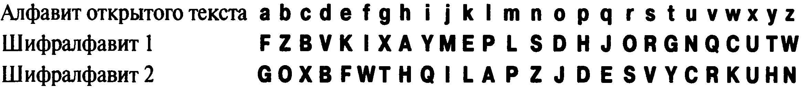
Здесь, например, у нас есть два возможных шифралфавита, и мы можем зашифровать сообщение, используя поочередно то один, то другой. Так, чтобы зашифровать слово
hello, мы зашифруем первую букву с помощью первого шифралфавита, так что
h превратится в
А, вторую же букву мы зашифруем, используя второй шифралфавит, при этом
е станет
F. Для зашифровывания третьей буквы мы вернемся опять к первому шифралфавиту, а чтобы зашифровать четвертую букву, мы вновь обратимся ко второму шифралфавиту. Благодаря этому, первая
l будет зашифрована как
Р, а вторая
l превратится в
А. Последняя буква,
о, зашифровывается первым шифралфавитом и преобразуется в
D. Окончательный вид шифртекста:
AFPAD. Основное преимущество системы Альберти заключается в том, что одинаковые буквы в открытом тексте не обязательно останутся одинаковыми в шифртексте, поэтому повторяющиеся
l в слове
hello зашифровываются различным образом. Точно так же повторяющиеся
А в шифртексте являются различными буквами открытого текста, сначала
h, а потом
l.
Несмотря на то что Альберти совершил самый значительный за более чем тысячу лет переворот в криптографии, он не сумел довести свою идею до целостной системы. Решать эту задачу, основываясь на первоначальной идее Альберти, предстояло уже другим, вначале Иоганну Тритемию, немецкому аббату, родившемуся в 1462 году, затем Джованни Порта, итальянскому ученому, родившемуся в 1535 году, и, наконец, Блезу де Виженеру, французскому дипломату, родившемуся в 1523 году. Виженер познакомился с трудами Альберти, Тритемия и Порта, когда его в двадцать шесть лет послали на два года в Рим с дипломатической миссией. Вначале интерес Виженера к криптографии был чисто практического свойства и связан с дипломатической службой. Но затем, когда ему исполнилось тридцать девять лет, он решил, что накопил уже достаточно денег, чтобы оставить службу, отказаться от карьеры и сосредоточиться на исследованиях. И только потом он детально проверил идеи Альберти, Тритемия и Порта, создав на их основе новый шифр.
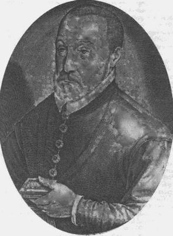
Рис. 11 Блез де Виженер Хотя и Альберти, и Тритемий, и Порта, каждый внесли значительный вклад в создание нового шифра, но этот шифр известен как шифр Виженера, в честь человека, который придал ему окончательный вид. Стойкость шифра Виженера состоит в том, что для зашифровывания сообщения в нем используется не один, а 26 различных шифралфавитов. Шифрование начинается с построения так называемого квадрата Виженера, показанного в таблице 3: алфавит открытого текста с последующими 26 шифралфавитами, каждый из которых сдвинут на одну букву относительно предыдущего алфавита.
Таблица 3 Квадрат Виженера. 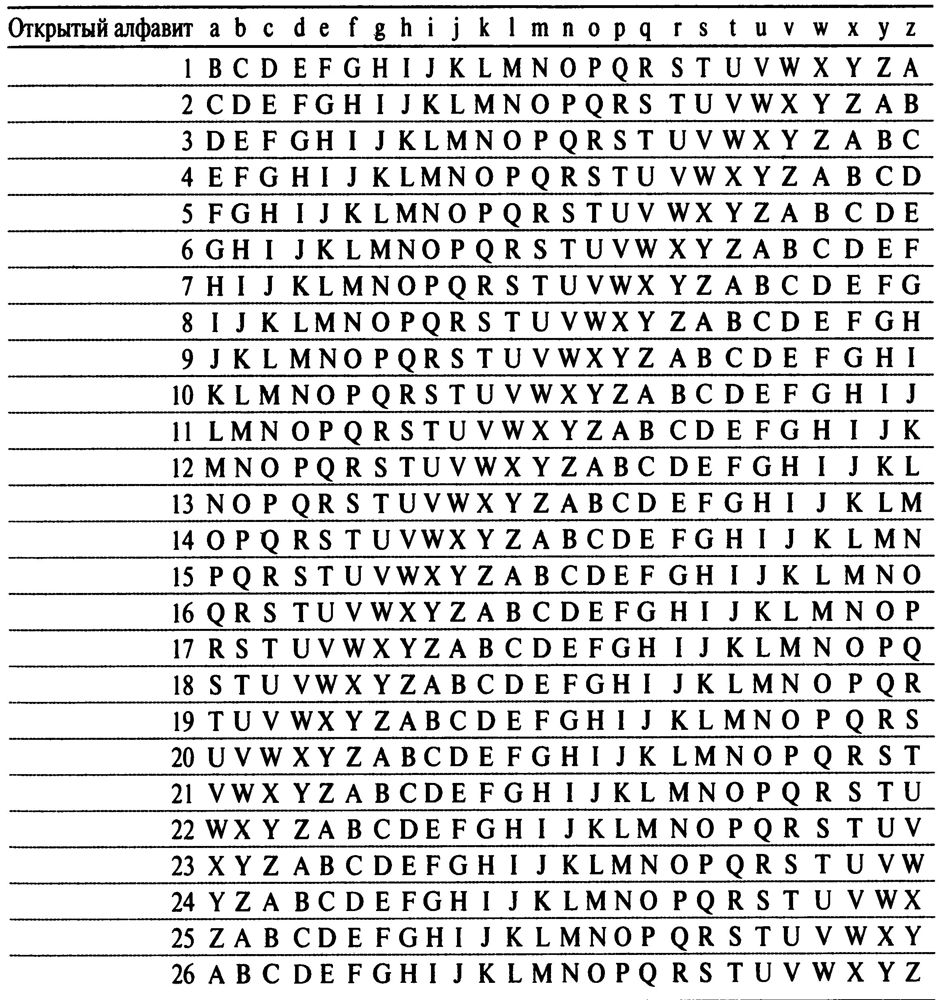
Здесь ряд 1 представляет собой алфавит шифра Цезаря со сдвигом на 1 позицию, то есть этот шифралфавит может использоваться в качестве алфавита шифра Цезаря, в котором каждая буква открытого текста заменяется буквой, расположенной в алфавите на одну позицию дальше. Точно так же ряд 2 представляет собой алфавит шифра Цезаря со сдвигом на 2 позиции и так далее.
Верхний ряд квадрата, со строчными буквами, представляет буквы алфавита открытого текста. Вы можете зашифровать каждую букву открытого текста с помощью любого из 26 шифралфавитов. Например, если используется шифралфавит номер 2, то буква
а зашифровывается как
С, если же используется шифралфавит номер 12, тогда
а преобразуется в
М.
Если отправитель, чтобы зашифровать сообщение, пользуется только одним из шифралфавитов, то это фактически будет простым шифром Цезаря, который является исключительно нестойким видом шифрования, так что сообщение может быть без труда дешифровано противником, перехватившим его. В шифре же Виженера для зашифровывания различных букв сообщения применяются различные строки квадрата Виженера (различные шифралфавиты). Другими словами, отправитель может зашифровать первую букву с помощью ряда 5, вторую букву с помощью ряда 14, третью букву с помощью ряда 21 и так далее.
Получателю сообщения, чтобы расшифровать его, следует знать, какая из строк квадрата Виженера использовалась для зашифровывания каждой из букв, поэтому должна быть задана система переходов между строками. Это обеспечивается с помощью ключевого слова. Чтобы показать, как применяется ключевое слово с квадратом Виженера для зашифровывания короткого сообщения, зашифруем следующую фразу
divert troops to east ridge с помощью ключевого слова
WHITE. Прежде всего ключевое слово буква за буквой записывается над сообщением, и его повторяют до тех пор, пока каждой букве в сообщении не будет сопоставлена буква ключевого слова. Далее приступим к созданию шифртекста, что делается следующим образом. Чтобы зашифровать первую букву,
d, определим вначале букву ключа над ней,
W, которая, в свою очередь задает строку в квадрате Виженера. Именно строка, начинающаяся с буквы
W, — двадцать вторая строка, — и является шифралфавитом, который будет использован для нахождения буквы, которой будет заменена буква
d открытого текста. Посмотрим, где столбец с буквой
d в первой строке пересекается со строкой, начинающейся с буквы
W; это будет буква
Z.
Следовательно, буква
d в открытом тексте будет буквой
Z в шифртексте.
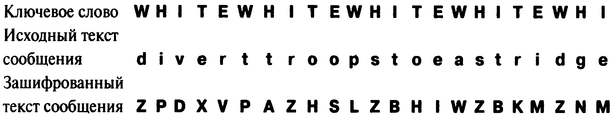
Точно так же поступим, чтобы зашифровать вторую букву сообщения,
i. Буквой ключа над
i является
Н, поэтому она зашифровывается по другой строке в квадрате Виженера, и новым шифралфавитом будет строка, начинающаяся с буквы
Н, — седьмая строка. Чтобы зашифровать
i, теперь посмотрим, где столбец с буквой
i в первой строке пересекается со строкой, начинающейся с буквы
Н; это будет буква
Р.
Поэтому буква
i в открытом тексте будет буквой
Р в шифртексте. Каждая буква ключевого слова задает конкретный шифралфавит в квадрате Виженера, и, поскольку ключевое слово состоит из пяти букв, отправитель зашифровывает сообщение, циклически проходя пять строк квадрата Виженера. Пятая буква сообщения зашифровывается по пятой букве ключевого слова,
Е, но, чтобы зашифровать шестую букву сообщения, мы должны вернуться к первой букве ключевого слова. При использовании более длинного ключевого слова или, к примеру, ключевой фразы в процесс зашифровывания будет вовлечено большее число строк и шифр усложнится. В таблице 4 приведен квадрат Виженера с выделенными пятью строками (т. е. пятью шифралфавитами), которые определяются ключевым словом
WHITE.
Таблица 4 Квадрат Виженера с выделенными строками, которые определяются ключевым словом WHITE. Зашифровывание осуществляется переходом между пятью выделенными шифралфавитами, задаваемыми буквами W, Н, I, Т и Е. 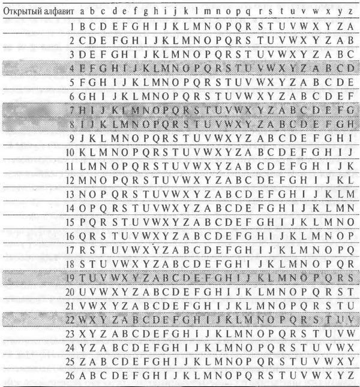
Неоспоримым достоинством шифра Виженера является то, что он неуязвим для частотного анализа, о котором рассказано в главе 1. К примеру, криптоаналитик, применяющий частотный анализ к фрагменту шифртекста, обычно начинает с того, что определяет, какая буква чаще всего встречается в шифртексте — в нашем случае это
Z, а затем делает предположение, что она является и наиболее часто встречающейся буквой в английском языке,
е. На самом деле буква
Z является тремя различными буквами:
d,
r и
s, но не
е. Несомненно, что для криптоаналитика это создает сложности. То, что буква, которая несколько раз появляется в шифртексте, может представлять собой различные буквы открытого текста, создает для криптоаналитика огромные затруднения. Равно как и то, что буква, которая появляется несколько раз в открытом тексте, может быть представлена различными буквами в шифртексте. Например, буква
о, которая дважды встречается в слове
troops, заменяется двумя различными буквами, и
оо преобразуется в
HS.
Помимо того, что сам шифр Виженера неуязвим для частотного анализа, здесь может использоваться гигантское количество ключей. Отправитель и получатель могут договориться об использовании любого слова из словаря, любой комбинации слов или даже придумать свои слова. А криптоаналитик не сможет дешифровать сообщение перебором всех возможных ключей, так как число возможных вариантов просто слишком огромно.
«Трактат о шифрах», который был опубликован в 1586 году, явился венцом работы Виженера. По иронии судьбы это произошло в тот самый год, когда Томас Фелиппес взломал шифр Марии, королевы Шотландии. Если бы только секретарь Марии прочел этот трактат, он бы узнал о шифре Виженера, и Фелиппес тщетно бы старался дешифровать сообщения Марии Бабингтону, а жизнь Марии могла бы быть спасена.
Благодаря стойкости этого шифра и тому, что он гарантировал секретность, представлялось вполне естественным, если бы шифр Виженера был немедленно принят на вооружение шифровальщиками всей Европы. Разве не помогло бы им, обрети они вновь надежный способ шифрования? Шифровальщики же, напротив, похоже, с презрением отнеслись к шифру Виженера. Этой, казалось бы, безупречной системой в течение двух последующих веков по большей частью пренебрегали.
От отвергнутого Виженера к человеку в железной маске
Традиционные виды шифров замены, которые существовали до появления шифра Виженера, назывались одноалфавитными шифрами замены, поскольку для зашифровывания сообщения в них использовался только один шифралфавит. В отличие от них шифр Виженера относится к классу шифров, известных
как многоалфавитные, поскольку здесь для зашифровывания сообщения применяется несколько шифралфавитов. Многоалфавитность шифра Виженера как раз и обеспечивает ему стойкость, но из-за этого же пользоваться им значительно сложнее — вот эта-то необходимость применения дополнительных усилий многим отбивала охоту от его использования.
Одноалфавитный шифр замены прекрасно подходил для многих целей семнадцатого века. Если вы хотели, чтобы ваш слуга не смог прочесть вашу частную переписку или если вы хотели защитить свой дневник от любопытствующих глаз своей жены или мужа, тогда вполне годился этот тип шифра. Одноалфавитная замена выполнялась быстро, она отличалась простотой и обеспечивала защиту от людей, не сведущих в криптоанализе. Фактически простой одноалфавитный шифр замены в той или иной форме служил в течение многих столетий (см. Приложение D). Для более серьезных целей, как, например, военная или правительственная связь, где обеспечение секретности является важнейшей задачей, использование одноалфавитного шифра было явно недостаточно. Профессиональным криптографам в противоборстве с профессиональными криптоаналитиками необходимо было что-то получше, однако они все еще не были расположены применять многоалфавитный шифр из-за его сложности. В частности, для военной связи требовались скорость и простота, а в дипломатических учреждениях ежедневно отправляли и получали сотни сообщений, поэтому время имело существенное значение. Вследствие этого криптографы искали некий промежуточный шифр, взломать который было бы сложнее, чем простой одноалфавитный шифр, но пользоваться которым было бы проще, чем многоалфавитным шифром.
Среди различных кандидатов на такой шифр был поразительно эффективный
омофонический шифр замены. Здесь каждая буква заменяется различными подставляемыми символами, причем количество возможных подставляемых символов для какой-либо буквы пропорционально частотности этой буквы. К примеру, частота появления буквы
а в английских текстах составляет около 8 процентов, поэтому мы поставим в соответствие этой букве восемь символов. Всякий раз, как в открытом тексте появится буква
а, она будет заменена в шифртексте одним из восьми выбираемых случайным образом символов, так что к концу зашифровывания частотность каждого символа в зашифрованном тексте будет составлять примерно 1 процент.
Для сравнения, частотность буквы
b составляет всего 2 процента, поэтому этой букве будут соответствовать только два символа. Каждый раз, как в открытом тексте появляется буква
b, для ее замены будет выбираться один из двух символов, и к концу зашифровывания частотность каждого символа в зашифрованном тексте также будет составлять около 1 процента. Данный способ назначения каждой букве различного количества символов, заменяющих эти буквы, проводится для всего алфавита, пока мы не доберемся до буквы
z, которая появляется настолько редко, что для ее замены потребуется всего один символ. В примере, приведенном в таблице 5, подставляемыми символами в шифралфавите служат двузначные числа, и для каждой буквы в алфавите открытого текста имеется от одного до двенадцати подставляемых символов в зависимости от распространенности каждой из букв.
Мы можем считать, что все двузначные числа, которые соответствуют букве а открытого текста, фактически представляют собой один и тот же звук в шифртексте, то есть звук, соответствующий букве
а. Поэтому в названии этого шифра — омофонический —
homos по-гречески означает «тот же самый», a
phonos — «звук». Смысл использования нескольких вариантов замены для часто встречающихся букв заключается в том, чтобы уравнять частотность появления символов в шифртексте.
Если мы зашифровали сообщение с помощью шифралфавита из таблицы 5, то частота появления каждого из чисел в тексте будет составлять примерно 1 процент. Если ни один из символов не появляется чаще остальных, то любая возможная атака с использованием частотного анализа окажется безуспешной. Абсолютная стойкость? Не совсем.
Для искусного криптоаналитика в шифртексте по-прежнему содержится множество тончайших нитей, ведущих к разгадке. Как мы видели в главе 1, каждая буква в английском языке имеет свои индивидуальные особенности, определяемые ее связью со всеми другими буквами, и эти черты можно разглядеть, даже если шифрование осуществляется путем омофонической замены. В английском языке самым наглядным примером буквы с ярко выраженной особенностью является буква
q, после которой всегда стоит только одна буква
u.
Таблица 5 Пример омофонического шифра замены. В верхней строке приведен алфавит открытого текста, строки ниже представляют собой шифралфавит с различными вариантами замены для часто встречающихся букв. 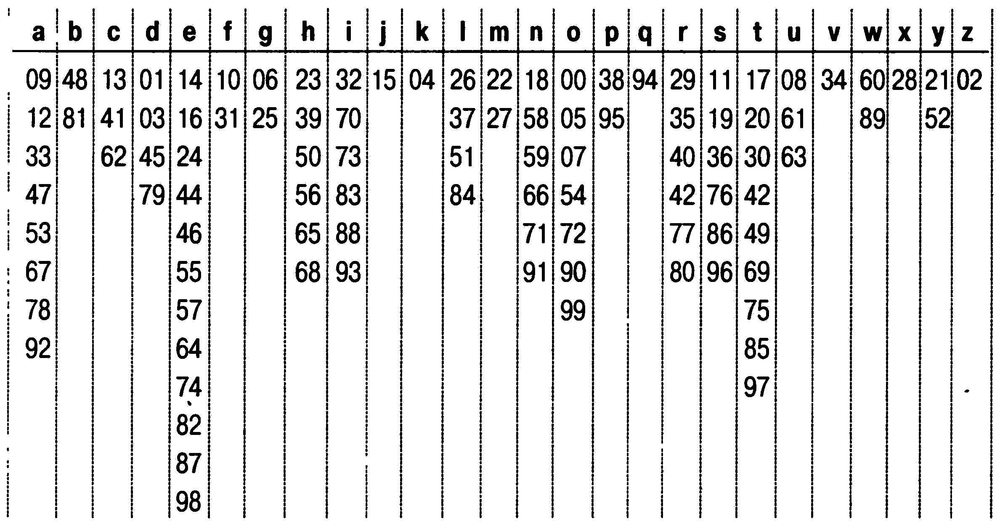
Если бы мы попытались дешифровать шифртекст, то мы могли бы начать с того, что подметили бы, что q является редко встречающейся буквой, и поэтому она, по всей видимости, представлена только одним символом; мы также знаем, что u, которая появляется примерно в 3 процентах, представляется тремя символами. Поэтому если мы найдем символ в шифртексте, за которым всегда следуют три определенных символа, то целесообразно предположить, что первым символом является q, а три остальных представляют собой u. Другие буквы распознать сложнее, но и их также можно определить по тому, как они связаны одна с другой. Хотя омофонический шифр можно взломать, но он гораздо более надежен, чем простой одноалфавитный шифр.
Омофонический шифр, возможно, и выглядит как многоалфавитный, поскольку каждая буква открытого текста может быть зашифрована множеством способов, но тут есть одно принципиальное отличие, и в действительности омофонический шифр является одним из видов одноалфавитного шифра. В таблице омофонов, приведенной выше, буква
а может быть представлена восемью числами. Существенно то, что эти восемь чисел являются обозначением только буквы
а. Другими словами, буква открытого текста может быть представлена несколькими символами, но каждый символ может представлять только одну букву. В многоалфавитном же шифре буква открытого текста также будет представлена различными символами, но больше всего в замешательство приводит тот факт, что в процессе шифрования эти символы будут представлять собой различные буквы.
Пожалуй, основная причина, почему омофонический шифр считается одноалфавитным, заключается в том, что после того, как шифралфавит был определен, он не меняется на протяжении всего процесса шифрования. То, что в шифралфавите заложено несколько возможных вариантов зашифровывания каждой буквы, несущественно. В то же время криптограф, применяющий многоалфавитный шифр, в процессе шифрования должен постоянно переходить от одного шифралфавита к другому.
Улучшив базовый одноалфавитный шифр различными способами, например, добавляя омофоны, становится возможным надежно зашифровать сообщения, не прибегая к сложностям многоалфавитного шифра. Одним из наиболее ярких примеров усовершенствованного одноалфавитного шифра был «великий шифр»
[11] Людовика XIV.
«Великий шифр» применялся для зашифровывания наиболее секретных сообщений короля, скрывая детали его планов, замыслов и политических интриг. В одном из этих сообщений упоминалась одна из наиболее загадочных личностей во французской истории, человек в железной маске, но стойкость «Великого шифра» означала, что сообщение останется нерасшифрованным и непрочитанным в течение двух столетий.
«Великий шифр» был придуман Россиньолями, отцом и сыном, Антуаном и Бонавентуром. Антуан впервые приобрел известность в 1626 году. Ему передали зашифрованное письмо, захваченное у курьера, пробирающегося из осажденного города Реальмон, и к концу дня он дешифровал его; из письма стало ясно, что армия гугенотов, которая удерживала город, находится на грани гибели. Французы, которые до этого не подозревали об отчаянном положении гугенотов, вернули письмо вместе с его расшифровкой. Теперь гугеноты знали, что их противник не отступит, и немедленно сдались. Так победа французов явилась результатом дешифрования.
Могущество криптографии стало очевидным, и Россиньоли получили Высокие должности при дворе. После службы у Людовика XIII они продолжали трудиться криптоаналитиками и при Людовике XIV, на которого их работа произвела такое впечатление, что он предоставил им кабинеты рядом со своими апартаментами с тем, чтобы Россиньоли,
и отец и сын, могли активно участвовать в формировании французской дипломатической политики. Данью всеобщего восхищения их умению взламывать шифры явилось то, что слово
россиньолъ стало французским жаргонным названием отмычки.
Выдающееся мастерство и накопленный опыт по взламыванию шифров позволило Россиньолям понять, как создать более стойкий шифр, и они придумали так называемый «великий шифр». «Великий шифр» оказался настолько надежен, что сумел противостоять усилиям всех криптоаналитиков той эпохи, пытающихся выведать французские секреты, и даже последующих поколений дешифровальщиков. К сожалению, после смерти отца и сына «великий шифр» перестал применяться, а его подробности были быстро утеряны, что означало, что зашифрованные бумаги во французских архивах больше нельзя было прочесть.
Историки понимали, что бумаги, зашифрованные «великим шифром», могли бы дать уникальную возможность разгадать интриги Франции семнадцатого века, но даже к концу девятнадцатого столетия они по-прежнему не могли дешифровать их. В 1890 году Виктор Гендрон, военный историк, изучавший кампании Людовика XIV, разыскал новую серию писем, зашифрованных «великим шифром». Не сумев разобраться в них, он передал их Этьену Базери, выдающемуся эксперту в шифровальном отделе французской армии. Базери расценил эти письма как вызов и потратил следующие три года в попытках дешифровать их.
Зашифрованные страницы содержали тысячи чисел, но только 587 из них были разными. Стало ясно, что «великий шифр» более сложен, чем обычный шифр замены, поскольку для него требовалось всего лишь 26 различных чисел, по одному на каждую букву. Первоначально Базери полагал, что остальные числа являются омофонами и что некоторые числа представляют собой одну и ту же букву. Проверка этого направления заняла месяцы кропотливого труда, но все оказалось напрасным. «Великий шифр» не был омофоническим шифром.
Затем его осенила идея, что каждое число может представлять пару букв, или
диграф. Имеется только 26 отдельных букв, но из них можно образовать 676 возможных пар букв, и это примерно равно количеству различных чисел в зашифрованных письмах. Базери попытался провести дешифрование, ища наиболее часто встречающиеся числа в зашифрованных письмах (
22,
42,
124,
125 и
341) и предположив, что они, возможно, обозначают самые распространенные французские диграфы (
es,
en,
ou,
de,
nt). Фактически он применил частотный анализ на уровне пар букв. Но, к сожалению, после нескольких месяцев труда и это предположение не дало никаких осмысленных результатов дешифрования.
Базери, похоже, уже был готов отказаться от этой идеи, когда ему пришло в голову использовать новый подход. Возможно, что мысль с диграфами была не так уж и далека от истины. Он начал обдумывать возможность того, что каждое число представляет не пару букв, а скорее целый слог. Он попытался сопоставить каждое число со слогом: может быть, чаще всего встречающиеся числа обозначают самые распространенные французские слоги.
Базери пробовал разные перестановки, но все они приводили к появлению тарабарщины — до тех пор, пока он не достиг успеха, отыскав одно отдельное слово. На каждой странице несколько раз появлялась группа чисел (
124-22-125-46-345), и Базери предположил, что они обозначают
les-en-ne-mi-s, то есть «
les ennemis». Это оказалось ключевым моментом.
Теперь уже Базери мог проверить остальные отрывки зашифрованных писем, где эти числа появлялись в других словах. Он вставлял в них полученные из «
les enemis» слоги, и открывались части уже других слов. Те, кто увлекается решением кроссвордов, знают, что, когда слово частично разгадано, нередко можно просто догадаться об остальной его части. По мере того как Базери определял новые слова, он находил новые слоги, которые, в свою очередь, давали возможность определить очередные слова, и так далее. Нередко он становился в тупик, отчасти из-за того, что силлабические значения никогда не были очевидны, отчасти потому, что некоторые числа представляли простые буквы, а не слоги, а иногда из-за того, что Россиньоли расставили в шифре ловушки. Так, например, одно из чисел не было ни слогом, ни буквой, а использовалось для того, чтобы удалить предыдущее число.
Когда дешифрование завершилось, Базери оказался первым за два столетия человеком, посвященным в тайны Людовика XIV. Вновь открывшиеся сведения привели в восторг историков, которые, в частности, уделяли большое внимание одному из писем, доставлявшее им танталовы муки. Похоже, что будет решена одна из величайших загадок семнадцатого века: кем же в действительности был «Человек в железной маске».
«Человек в железной маске» стал источником массы предположений с того самого момента, как был вначале заключен во французской крепости Пиньероль в Савойе. Когда в 1698 году его переводили в Бастилию, крестьяне старались хоть мельком увидеть этого человека, и каждый по-разному описывал его: низкий и высокий, светловолосый и темный, молодой и старый. Иные даже утверждали, что это был не мужчина, а женщина. Обладая столь ничтожным количеством противоречивых фактов, все, от Вольтера до Бенджамина Франклина, придумывали каждый свою теорию для объяснения истории «Человека в железной маске». Согласно наиболее популярной теории предполагалось, что «Маска» (как его иногда называли) был братом-близнецом Людовика XIV, приговоренным к заключению, дабы избежать любых разногласий в споре, кто является истинным претендентом на трон. В одном из вариантов этой теории приводятся доказательства, что у «Маски» были потомки и он был связан скрытым родством по королевской линии. В памфлете, выпущенном в 1801 году, утверждалось, что сам Наполеон был потомком «Маски», — слух, который император и не отрицал, так как он только укреплял его положение.
История «Маски» даже вдохновила поэтов, прозаиков и драматургов. В 1848 году Виктор Гюго начал создание пьесы «Близнецы», но когда выяснил, что Александр Дюма уже разработал этот же сюжет, то, несмотря на то что два акта уже были написаны, отказался от продолжения работы. С тех пор история «Человека в железной маске» для нас связана с именем Дюма. Успех его романа подкрепил идею, что «Маска» была связана с королевской фамилией, и эта теория сохранилась, несмотря на свидетельства, приведенные в одной из дешифровок Базери.
Базери дешифровал письмо, написанное Франсуа де Лувуа, военным министром при Людовике XIV, в котором тот подробно излагал преступления Вивьена де Булона, командира, ответственного за нападение на город Кунео на французско-итальянской границе. Булон, хотя ему было приказано удерживать свои позиции, испугался наступления австрийских войск и сбежал, бросив снаряжение и оставив на произвол судьбы многих своих раненых солдат. Военный министр заявлял, что такие действия поставили под угрозу всю пьемонтскую кампанию, и из письма ясно, что король расценивал поступок Булона как исключительную трусость:
Его Величество знает лучше, чем кто бы то ни было, последствия такого поступка, и он также осознает, насколько серьезно наша неудача нанесет вред нашему благому делу, неудача, которая должна быть исправлена за зиму. Его Величество желает, чтобы вы немедленно арестовали генерала Булона и препроводили его в крепость Пиньероль, где он должен будет находиться ночью запертым на замок в тюремной камере и под стражей, а днем ему разрешается прогулка по крепостной стене в маске.
Это было явным указанием на узника в маске, заключенного в крепости Пиньероль, на достаточно серьезное преступление, с датами, которые, похоже, соответствуют «Человеку в железной маске». Но раскрывает ли это тайну? Не удивительно, что те, кто отдает предпочтение разгадкам, связанным с заговорами, нашли изъяны в этой версии, по которой «Человеком в железной маске» является Булон. Например, приводится аргумент, что если бы Людовик XIV действительно попытался заключить в тюрьму без огласки своего непризнанного брата-близнеца, то он должен был бы оставить ряд ложных следов. Может быть, зашифрованное письмо как раз и предназначалось для того, чтобы его дешифровали? Может быть, дешифровальщик девятнадцатого века Базери попался в ловушку семнадцатого столетия?
«Черные кабинеты»
Усиление одноалфавитного шифра посредством применения его к слогам или добавления омофонов оказалось бы вполне достаточным в семнадцатом веке, но к восемнадцатому веку криптоанализ начал приобретать «промышленные» черты, с командами криптоаналитиков, состоящих на службе у правительства и совместно работающих над взломом многих наиболее сложных одноалфавитных шифров. В ведении каждой европейской державы был свой, так называемый «черный кабинет», — мозговой центр, занимающийся дешифрованием сообщений и сбором информации. Самым известным, славящимся строгой дисциплиной и эффективно действующим «черным кабинетом» был Geheime Kabinets-Kanzlei в Вене.
Он работал по жесткому графику, поскольку было жизненно важно, чтобы его гнусная деятельность не влияла на четкий ход работы почтовой службы. Письма, которые следовало доставить в посольства в Вене, вначале поступали в 7 утра в «черный кабинет». Секретари растапливали печати, а несколько стенографистов, работая параллельно, составляли копии писем. Если возникала необходимость, то для копирования документа на редком языке привлекался знающий этот язык специалист. В течение трех часов письма снова раскладывались по конвертам, запечатывались и возвращались в центральное почтовое ведомство, чтобы теперь уже их можно было доставить по назначению. Письма, просто пересылаемые транзитом через Австрию, поступали в «черный кабинет» в 10 утра, а письма, отправляемые из венских посольств за границу, передавались в «черный кабинет» в 4 часа пополудни. Со всех этих писем, перед тем как отправлять их дальше, также снимались копии. Ежедневно через венский «черный кабинет» проходили сотни сообщений.
Затем копии передавались криптоаналитикам, сидевшим в небольших будках в готовности препарировать сообщения, чтобы выискать в них смысл. Венский «черный кабинет» поставлял бесценную информацию императорам Австрии, но, помимо этого, он также продавал собранные им сведения и в другие государства Европы. В 1774 году в обмен на 1000 дукатов аббат Жоржель, секретарь французского посольства, получил возможность дважды в неделю просматривать полученные сведения, а затем отослал письма, в которых, предположительно, содержались секретные планы монархов различных стран, непосредственно Людовику XV в Париж.
«Черные кабинеты» действовали настолько эффективно, что все виды одноалфавитных шифров перестали быть надежными. Столкнувшись с таким профессиональным криптоаналитическим противодействием, криптографы, наконец, оказались вынуждены использовать более сложный, однако и более стойкий шифр Виженера. Постепенно шифровальщики начали переходить на применение многоалфавитных шифров. Наряду с тем, что криптоанализ стал более эффективным, существовала еще одна причина, повлиявшая на переход к более надежным видам шифрования — развитие телеграфа и необходимость защищать телеграммы от перехвата и дешифрования.
Хотя телеграф появился в девятнадцатом столетии, но его история началась еще в 1753 году, когда в шотландский журнал поступило письмо без подписи, в котором описывался способ, с помощью которого, связав отправителя и получателя 26 кабелями, — по одному на каждую букву алфавита, — можно было бы передавать сообщения на значительные расстояния. В этом случае отправитель смог бы передавать сообщение побуквенно, посылая по каждому проводу электрические импульсы. Так, чтобы передать слово
hello, отправитель должен вначале послать сигнал по проводу
h, затем по проводу
е и так далее. Получатель должен будет каким-то образом определить наличие электрического тока в каждом из проводов и прочитать сообщение. Однако этот «быстрый способ передачи сведений», как его назвал изобретатель, так никогда и не был реализован, поскольку для этого необходимо было преодолеть определенные сложности технического характера.
К примеру, инженерам нужна была достаточно чувствительная система для обнаружения электрических сигналов. В Англии сэр Чарльз Уитстон и Уильям Фозерджил Кук создали детекторы из магнитных стрелок, которые отклонялись, когда по кабелю протекал ток. В 1839 году система Уитстона-Кука была опробована для передачи сообщений на расстояние 29 км между железнодорожными станциями в Уэст Дрейтоне и Паддингтоне. Вскоре весть о телеграфе и о том, с какой поразительной скоростью осуществляется связь с его помощью, распространилась по всей Англии, рождение же 6 августа 1844 года в Виндзоре у королевы Виктории второго сына, принца Альфреда, привело к тому, что телеграф приобрел огромную популярность. Новость о рождении сына была передана по телеграфу в Лондон, а уже через час на улицах появилась газета «Таймс» с объявлением об этом событии. На следующий год телеграф получил еще большую известность, когда с его помощью был задержан Джон Тейвел, убивший в городке Слау свою госпожу и попытавшийся скрыться, вскочив на направляющийся в Лондон поезд. Местная полиция передала по телеграфу в Лондон описание Тейвела, и, как только он прибыл в Паддингтон, был сразу же арестован.
Тем, временем в Америке Сэмюэль Морзе как раз организовал свою первую телеграфную линию, протянувшуюся на 60 км между Балтимором и Вашингтоном. Для усиления сигнала Морзе использовал электромагнит; в результате приходящий получателю сигнал был достаточно сильным, чтобы на бумаге можно было напечатать ряд коротких и длинных знаков — точек и тире. Он также придумал код, носящий в настоящее время название «код Морзе», в котором каждая буква алфавита представлена в виде серии точек и тире и который приведен в таблице 6, и создал аппарат «клопфер», с помощью которого получатель мог принимать на слух каждую букву как последовательность точек и тире.
В Европе телеграф, созданный с использованием принципа Морзе, постепенно вытеснил систему Уитстона-Кука, а в 1851 году на континенте была принята европейская форма кода Морзе, куда вошли буквы со знаком ударения. С каждым годом код Морзе и телеграф во все большей степени оказывали влияние на мир, помогая полиции задерживать преступников, а газетам доносить до читателей самые свежие новости, предоставляя ценную информацию для делового мира и давая возможность далеко расположенным друг от друга компаниям мгновенно заключать сделки.
Однако главной заботой было обеспечить защиту этой связи. Код Морзе по своей сути не является видом криптографии, потому что здесь не происходит сокрытия сообщения. Точки и тире являются просто удобным способом представления букв для передачи по телеграфу, и этот код является ни чем иным, как алфавитом другого вида. Проблема обеспечения безопасности возникла главным образом из-за того, что тот, кто хотел послать сообщение, должен был передать это сообщение телеграфисту, который, перед тем как его передавать, должен был вначале его прочесть. Телеграфисты имели доступ ко всем сообщениям, и поэтому существовала опасность, что какая-нибудь компания могла бы подкупить телеграфиста для получения доступа к переписке конкурента. Эта проблема была изложена в статье, посвященной телеграфу и опубликованной в 1853 году в английском журнале «Ежеквартальное обозрение»:
Следует также принять меры, чтобы устранить один крупный недостаток, ныне ощущаемый при отправке частных сообщений по телеграфу, — полное нарушение секретности, поскольку в любом случае полдюжины людей должны знать каждое слово, адресованное одним человеком другому. Служащие английской телеграфной компании принесли клятву о сохранении секретности, но мы часто пишем такие вещи, что видеть посторонних людей, читающих их перед нашими глазами, невыносимо. Это серьезный недостаток телеграфа, и его необходимо устранить тем или иным способом.
Таблица 6 Символы международного кода Морзе. 
Решение заключалось в шифровании сообщения перед тем, как передать его телеграфисту. После этого телеграфист переводил зашифрованный текст в код Морзе и передавал его. Шифрование, помимо того что не давало возможности телеграфистам знакомиться с содержанием текста, также сводило на нет усилия любого шпиона, который мог подключиться к телеграфному проводу. Многоалфавитный шифр Виженера явно был наилучшим способом обеспечения секретности для важной деловой переписки. Этот шифр считался невзламываемым и получил название
нераскрываемый шифр. Хотя бы на время, но криптографы добились явного превосходства над криптоаналитиками.
Бэббидж против шифра Виженера
Наиболее любопытной фигурой в криптоанализе девятнадцатого века был Чарльз Бэббидж, эксцентричный английский гений, более всего известный разработкой прототипа современного компьютера. Чарльз Бэббидж родился в 1791 году в семье Бенджамина Бэббиджа, богатого лондонского банкира. Когда Чарльз женился без отцовского благословения, доступ отныне к состоянию Бэббиджа был ему закрыт, но все же у него хватало средств, чтобы быть финансово независимым, и он вел жизнь свободного ученого, занимаясь всем, что занимало его воображение. Среди его изобретений были спидометр и скотосбрасыватель — приспособление, которое могло крепиться перед паровозом и предназначенное для освобождения железнодорожных путей от скота. Что касается научных открытий, то Бэббидж был первым, кто догадался, что ширина годовых колец дерева зависит от того, какая погода была в том году, когда образовалось кольцо. На основании этого Бэббидж пришел к выводу, что, изучая древние деревья, можно определить, каким был климат в прошлом. Он также интересовался статистикой и в качестве развлечения составил набор статистических таблиц смертности — основной инструмент современного страхового дела.
Бэббидж не ограничивался только научными и техническими проблемами. Стоимость пересылки письма обычно зависит от расстояния, но Бэббидж показал, что затраты на подсчет стоимости каждого письма превышают стоимость почтовых расходов. Вместо этого он предложил систему, которой мы продолжаем пользоваться и по сей день: единая цена для всех писем, независимо от того, где проживает адресат. Его также интересовали политика и социальные проблемы; к концу своей жизни он начал кампанию за то, чтобы избавиться от бродивших по Лондону шарманщиков и уличных музыкантов. Он жаловался, что «зачастую под музыку танцуют малолетние уличные оборванцы, а иногда и полупьяный люд, которые своими визгливыми голосами порой присоединяются к шуму.
Еще одной группой больших приверженцев уличной музыки являются леди легкого поведения с гибкими понятиями о морали и свободных взглядов, которым она дает изрядный повод для демонстрации своих прелестей в открытых окнах». В ответ музыканты собирались большими группами вокруг его дома и играли как можно громче.
Поворотным моментом в научной карьере Бэббиджа стал 1821 год, когда они с астрономом Джоном Гершелем проверяли наборы математических таблиц, используемых для астрономических, инженерных и навигационных расчетов. Они* оба негодовали по поводу огромного количества ошибок в таблицах, которые, в свою очередь, приводили к ошибкам в важных вычислениях. Так, например, только в «Навигационных астрономических таблицах для определения широты и долготы на море» было больше тысячи ошибок. Вот именно эти-то ошибки и приводили к многочисленным кораблекрушениям и авариям.
Математические таблицы рассчитывались вручную, а потому ошибки в них были просто результатом ошибок вычислений, выполняемых человеком. Это вынудило Бэббиджа воскликнуть: «Как бы мне хотелось, чтобы эти вычисления выполнялись паром!» Тем самым было положено начало попыткам построить машину, способную безошибочно вычислять таблицы с высокой степенью точности. В 1823 году Бэббидж разработал «разностную машину № 1» — великолепный вычислитель, состоящий из 25 000 точно подогнанных деталей, который предполагалось создать с помощью финансирования за счет государственных средств. Бэббидж был блестящим изобретателем, но никак не великим конструктором. После десяти лет тяжелого труда он отказался от «разностной машины № 1», придумал абсолютно новую конструкцию и принялся за создание «разностной машины № 2».
Когда Бэббидж отказался от своей первой машины, правительство потеряло в него веру и решило списать убытки, отказавшись от участия в проекте — оно уже и так потратило 17 470 фунтов, — достаточно, чтобы построить пару линкоров. Возможно, что именно этот отказ в поддержке побудил Бэббиджа позднее посетовать: «Предложите англичанину какую-нибудь идею или какой-нибудь инструмент, и, как бы она ни была превосходна, Вы увидите, что все усилия английского ума будут направлены на поиск в ней недостатков, изъянов или ее неосуществимости. Если Вы обсуждаете с ним машину для очистки картофеля, он заявит, что создать ее невозможно; если Вы очистите ею картофель перед его глазами, он объявит ее бесполезной, потому что она не режет ананас ломтиками».
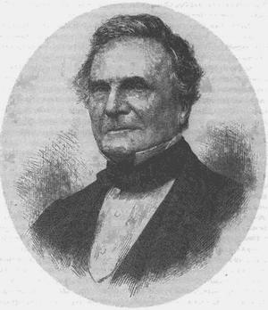
Рис. 12 Чарльз Бэббидж Отсутствие финансовой поддержки со стороны правительства означало, что Бэббидж никогда не сможет закончить «разностную машину № 2». Трагедия заключалась в том, что машина Бэббиджа являлась как бы ступенькой на пути создания аналитической машины.
Аналитическая машина могла не просто рассчитывать определенный набор таблиц, а решать различные математические задачи в зависимости от задаваемых ей инструкций. Фактически аналитическая машина являлась прототипом современных компьютеров. В ее конструкцию входили «хранилище» (память) и «мельница» (процессор), благодаря которым она могла принимать решения и повторять выполнение команд, что эквивалентно командам «If… then…» и «цикл» в современном программировании.
Столетием позже, во время Второй мировой войны, первые электронные воплощения машины Бэббиджа оказали значительное влияние на криптоанализ, однако и при жизни Бэббидж внес существенный вклад в этом направлении: ему удалось взломать шифр Виженера, и это стало величайшим достижением в криптоанализе с тех пор, как арабские ученые в девятом веке взломали одноалфавитный шифр, изобретя частотный анализ. Для этого Бэббиджу не потребовалось проводить никаких вычислений или сложных выкладок. Единственное, что оказалось необходимым, это сообразительность.
Бэббидж заинтересовался шифрами в очень юном возрасте. Позднее он вспоминал, как его детское увлечение временами доставляло ему неприятности: «Старшие ребята придумывали шифры, но если мне попадалось хотя бы несколько слов, то я, как правило, находил ключ. Последствия этого бывали подчас болезненны: владельцы раскрытых шифров иногда задавали мне трепку, хотя виной всему была их собственная глупость». Эти колотушки не обескураживали Бэббиджа; криптоанализ по-прежнему пленял его. В своей автобиографии он писал: «…дешифрование, на мой взгляд, является одним из самых захватывающих искусств».
Очень скоро он приобрел известность в лондонском обществе как дешифровальщик, готовый взяться за любое зашифрованное сообщение, и к нему стали обращаться со всевозможными задачами. Так, Бэббидж помог отчаявшемуся биографу, пытающемуся дешифровать стенографические записи Джона Флемстида, первого королевского астронома Англии. Он также пришел на помощь историку, разгадывающему шифр Генриетты-Марии, жены Карла I. В 1854 году Бэббидж сотрудничал с адвокатом и использовал криптоанализ, чтобы представить в судебном разбирательстве решающее доказательство. За эти годы он собрал значительную картотеку зашифрованных сообщений, которые он собирался использовать в качестве основы для авторитетной книги по криптоанализу под названием «Основные принципы дешифрования». В книге были бы даны по два примера каждого вида шифра; на одном из примеров было бы показано, как взломать шифр, а второй предназначался бы в качестве упражнения для читателя. К сожалению, как это случилось и со множеством других его грандиозных замыслов, книга не была закончена.
Несмотря на то что большинство криптоаналитиков уже оставили всякую надежду когда-либо взломать шифр Виженера, Бэббиджа побудил попытаться дешифровать его обмен письмами с Джоном Холом Бруком Твэйтсом, дантистом из Бристоля, имевшим довольно наивное представление о шифрах. В 1854 году Твэйтс заявил, что он придумал новый шифр, который по сути был аналогичен шифру Виженера. Он написал в «Джорнел оф зе Сэсайети оф Артс» с намерением запатентовать свою идею, явно не осознавая, что опоздал на несколько столетий. Бэббидж написал в журнал, указав, что «данный шифр… известен уже очень давно и его можно найти во многих книгах». Твэйтс был непримирим и потребовал от Бэббиджа, чтобы тот раскрыл его шифр. Можно ли было взломать этот шифр или нет, никак не зависело от того, был ли он старым или новым, но любопытство Бэббиджа было достаточно разбужено, чтобы попробовать найти слабое место в шифре Виженера.
Взламывание сложного шифра напоминает восхождение по обрывистой отвесной скале. Криптоаналитик стремится отыскать любую трещинку или выступ, которые могли бы дать хоть сколь-нибудь мельчайшую зацепку. В одноалфавитном шифре криптоаналитик будет отталкиваться от частотности появления букв, потому что чаще всего встречающиеся буквы, как, например,
е,
t и
а, будут просто бросаться в глаза, независимо от того, как они были замаскированы. В многоалфавитном же шифре Виженера буквы появляются более равномерно, поскольку для перехода от одного шифралфавита к другому применяется ключевое слово. Поэтому на первый взгляд поверхность скалы кажется совершенно ровной.
Вспомните, что исключительная стойкость шифра Виженера обеспечивается тем, что одна и та же буква будет зашифрована различными способами. Например, если ключевым будет слово
KING, тогда каждая буква в открытом тексте может быть зашифрована четырьмя различными способами, потому что в ключевом слове содержится четыре буквы. Как показано в таблице 7, каждая буква ключевого слова задает различные шифралфавиты в квадрате Виженера. Здесь в квадрате выделен столбец
е, чтобы показать, почему зашифровывание, в зависимости от того, какой буквой ключевого слова задается шифрование, происходит различным образом:
Если для зашифровывания буквы
е используется
К из слова
KING, то в шифртексте будет стоять буква
О.
Если для зашифровывания буквы
е используется
I из слова
KING, то в шифртексте будет стоять буква
М.
Если для зашифровывания буквы
е используется
N из слова
KING, то в шифртексте будет стоять буква
R.
Если для зашифровывания буквы
е используется
G из слова
KING, то в шифртексте будет стоять буква
К.
Точно так же различными способами будут зашифрованы и цельте слова: слово
the, например, в зависимости от его положения относительно ключевого слова, может быть зашифровано как
DPR,
BUK,
CNO или
ZRM. Хотя это и усложняет проведение криптоанализа, но он все же возможен. Следует отметить следующий важный, момент: если существует всего лишь четыре способа зашифровывания слова
the, и если в исходном тексте это слово появляется несколько раз, то некоторые из этих четырех возможных зашифрованных слов почти наверняка встретятся в шифртексте. Это показано в следующем примере, где строка
The Sun and the Man in the Moon была зашифрована с помощью шифра Виженера и ключевого слова
KING.
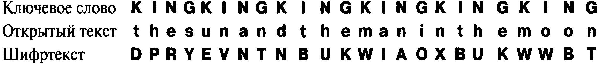
Слово the зашифровывается как
DPR в первом случае и как
BUK во втором и третьем случаях. Причина повторного появления
BUK заключается в том, что второе
the отстоит от третьего
the на восемь букв, а восемь кратно длине ключевого слова, которое состоит из четырех букв. Другими словами, второе
the было зашифровано в соответствии с тем, как оно располагается относительно ключевого слова (
the находится прямо под
ING), и к тому моменту, как мы дойдем до третьего the, ключевое слово повторится точно два раза.
Таблица 7 Квадрат Виженера, применяемый совместно с ключевым словом KING. Ключевое слово задает четыре различных шифралфавита, так что буква е может быть зашифрована как О, М, R или К. 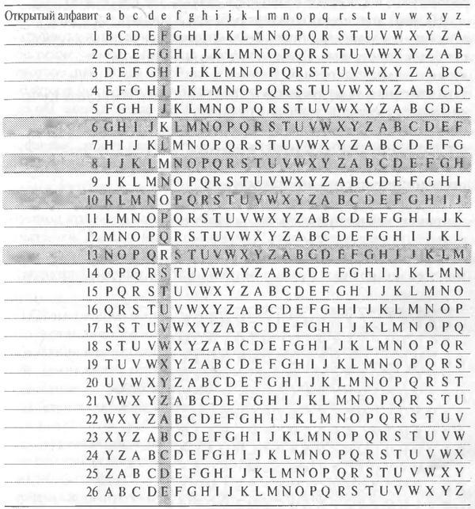
Бэббидж понял, что такой характер повторения дает ему точку опоры, которая необходима, чтобы раскрыть шифр Виженера. Он сумел определить ряд сравнительно простых действий, следуя которым любой криптоаналитик сможет взломать до того момента
нераскрываемый шифр. Чтобы продемонстрировать его блистательный метод, представим себе, что у нас есть перехваченный шифртекст, представленный на рисунке 13. Мы знаем, что он был зашифрован с помощью шифра Виженера, но нам ничего не известно об исходном сообщении, и ключевое слово представляет для нас загадку.
Первый этап криптоанализа Бэббиджа заключался в том, чтобы отыскать последовательности букв, которые появляются в шифртексте более одного раза. Существуют две причины, почему могут возникнуть такие повторения. Первая, и наиболее вероятная, состоит в том, что одна и та же последовательность букв в открытом тексте была зашифрована с помощью одной и той же части ключа. Но есть также определенная, хотя и незначительная, вероятность того, что две разных последовательности букв в открытом тексте, зашифрованных различными частями ключа, случайно образуют идентичные последовательности в шифртексте.
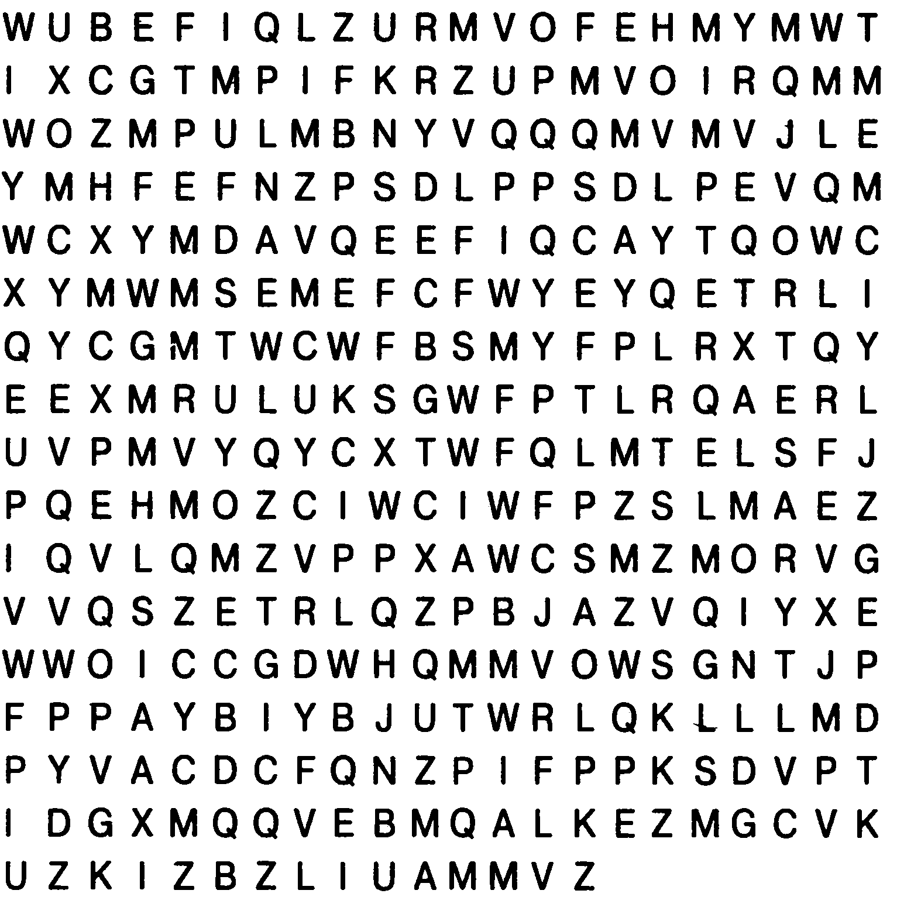
Рис. 13 Шифртекст, созданный с помощью шифра Виженера. Если мы ограничимся только длинными последовательностями, например, как в данном случае, когда будем рассматривать повторяющиеся последовательности, только если они состоят из четырех или более букв, то вторая причина станет практически нереализуемой и ее можно будет в расчет не принимать. В таблице 8 приведены эти повторяющиеся последовательности, а также указаны интервалы между повторениями этих последовательностей. К примеру, последовательность
Е-F-I-Q появляется в первой строке шифртекста, а затем в пятой строке; интервал составляет 95 букв.
Ключевое слово, помимо того что оно служит для преобразования открытого текста в зашифрованный, используется также получателем, чтобы расшифровать зашифрованный текст. Поэтому, если бы мы смогли определить ключевое слово, то дешифровать текст было бы очень просто. На этом этапе у нас нет пока достаточно информации, чтобы подобрать ключевое слово, но таблица 8 дает несколько очень ценных подсказок о его длине. Здесь перечислены, какие последовательности повторяются и интервал между этими повторениями, а остальная часть таблицы посвящена определению
множителей интервала между повторениями — чисел, на которые можно разделить нацело интервал между повторениями.
Например, последовательность
W-C–X-Y-M повторяется через 20 букв, так что множителями будут числа 1, 2, 4, 5, 10 и 20, поскольку на них 20 делится без остатка. Эти множители означают наличие шести возможностей:
(1) Длина ключа составляется 1 букву, и он повторяется 20 раз.
(2) Длина ключа составляется 2 буквы, и он повторяется 10 раз.
(3) Длина ключа составляется 4 буквы, и он повторяется 5 раз.
(4) Длина ключа составляется 5 букв, и он повторяется 4 раза.
(5) Длина ключа составляется 10 букв, и он повторяется 2 раза.
(6) Длина ключа составляется 20 букв, и он повторяется 1 раз.
Первая возможность может быть исключена, так как ключ, длина которого составляет всего 1 букву, сразу же приводит к одноалфавитному шифру; для шифрования всего текста будет использоваться только одна строка квадрата Виженера, и шифралфавит не будет меняться. Крайне маловероятно, чтобы криптограф так поступил. Чтобы показать все другие возможности, в соответствующей колонке таблицы 8 поставлен символ Ѵ. Каждый символ Ѵ указывает возможную длину ключа.
Чтобы определить, какова длина ключа, то есть будет ли она составлять 2,4, 5,10 или 20 букв, нам понадобится рассмотреть множители и всех остальных интервалов между повторениями. Поскольку, по всей видимости, длина ключевого слова составляет 20 букв или меньше, в таблице 8 для всех этих интервалов указаны те множители, которые не превышают 20. Здесь явно прослеживается тенденция делимости интервалов на 5. Фактически на 5 делятся все интервалы. Первая повторяющаяся последовательность,
Е-F-I-Q, может быть объяснена следующим образом: ключевое слово длиной 5 букв девятнадцать раз повторяется между первой и второй последовательностями. Вторая повторяющаяся последовательность,
Р-S-D-L-Р, может быть объяснена тем, что между первой и второй последовательностями ключевое слово длиной 5 букв повторилось только один раз.
Третья повторяющаяся последовательность,
W-С-Х-Y-М, может быть объяснена тем, что ключевое слово длиной 5 букв между первой и второй последовательностями повторилось четыре раза. Четвертая повторяющаяся последовательность,
Е-Т-R-L, может быть объяснена тем, что ключевое слово длиной 5 букв между первой и второй последовательностями повторилось двадцать четыре раза. Короче говоря, все указывает на наличие пятибуквенного ключевого слова.
Предположим, что длина ключевого слова действительно составляет 5 букв; тогда следующий этап будет заключаться в том, чтобы найти эти буквы. Пока обозначим ключевое слово в виде
L1-L2-L3-L4-L5, где
L1будет первой буквой ключевого слова,
L2 — второй, и так далее. Тогда процесс шифрования начнется с зашифровывания первой буквы открытого текста в соответствии с первой буквой ключевого слова Буква определяет строку квадрата Виженера и, тем самым, задает одноалфавитный шифр замены для первой буквы открытого текста. Однако когда наступает время для зашифровывания второй буквы открытого текста, криптограф должен использовать
L2, чтобы определить другую строку квадрата Виженера, задавая тем самым уже иной одноалфавитный шифр замены. Третья буква открытого текста будет зашифровываться в соответствии с
L3, четвертая — в соответствии с
L4, а пятая — в соответствии с
L5. Каждая буква ключевого слова задает для шифрования свой отличающийся шифралфавит. Но затем шестая буква открытого текста будет опять зашифровываться в соответствии с
L1, седьмая буква — в соответствии с
L2, и далее цикл повторяется. Другими словами, в нашем случае многоалфавитный шифр состоит из пяти одноалфавитных шифров, причем каждый одноалфавитный шифр отвечает за шифрование
1/
5 части всего сообщения. Но самое главное состоит в том, что нам уже известно, как проводить криптоанализ одноалфавитных шифров.
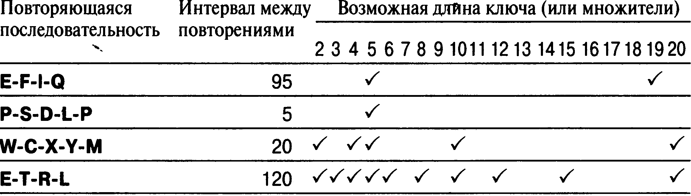
Таблица 8 Повторяющиеся последовательности и интервалы между ними в шифртексте. Поступим следующим образом. Мы знаем, что одна из строк квадрата Виженера, определяемая буквой задает шифралфавит, которым зашифрованы 1-я, 6-я, 11-я, 16-я… буквы сообщения. Поэтому если возьмем 1-ю, 6-ю, 11-ю, 16-ю… буквы шифртекста, то мы сможем применить добрый, старый частотный анализ для определения данного шифралфавита. На рисунке 14 показано частотное распределение букв, которые стоят на 1-м, 6-м, 11-м, 16-м… местах шифртекста; это буквы
W,
I,
R,
Е… Здесь следует напомнить, что каждый шифралфавит в квадрате Виженера — это просто обычный алфавит, сдвинутый на 1… 26 позиций. Поэтому частотное распределение на рисунке 14 должно иметь те же особенности, что и частотное распределение стандартного алфавита, за исключением того, что оно будет сдвинуто на некоторое расстояние. Сравнивая распределение
L1 со стандартным распределением, можно определить величину сдвига. На рисунке 15 показано стандартное частотное распределение для отрывка английского открытого текста.
В стандартном распределении имеются пики, плато и впадины, и, чтобы сравнить его с распределением шифра
L1 поищем наиболее заметные особенности и их комбинации. Так, весьма характерную особенность в стандартном распределении (рис. 15) составляют три пика у
R-S-Т и длинная ложбина справа от них, которая захватывает шесть букв от
U до
Z включительно. В распределении (рис. 14) есть только один похожий участок с тремя пиками у
V-W-Х и последующей впадиной, простирающейся вдоль шести букв от
Y до
D. А это означает, что все буквы, зашифрованные в соответствии с
L1 были сдвинуты на четыре позиции, и
L1 определяет шифралфавит, который начинается с
Е,
F,
G,
Н…, то есть первая буква ключевого слова,
L1 это, по всей видимости,
Е. Данное предположение может быть проверено путем сдвига распределения на четыре буквы назад и сравнения его со стандартным распределением. На рисунке 16 даны для сравнения оба распределения. Совпадение между основными пиками очень хорошее, так что нет никаких сомнений, что ключевое слово действительно начинается с буквы
Е.
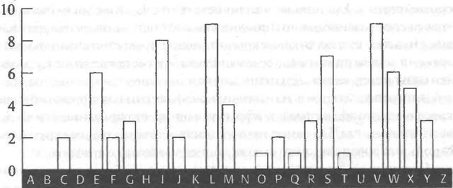
Рис. 14 Частотное распределение букв в зашифрованном с помощью шифралфавита L1 тексте (число появлений букв). 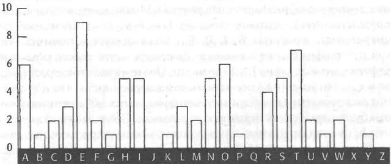
Рис. 15 Стандартное частотное распределение букв (число появлений букв на основе отрывка открытого текста, содержащего то же самое количество букв, что и в шифртексте). Подведем итоги. Поиск повторений в шифртексте позволил нам определить длину ключевого слова, которое, как оказалось, состоит из пяти букв. Это позволило нам разделить шифртекст на пять частей, где каждая часть зашифрована с помощью шифра одноалфавитной замены, который определяется одной буквой ключевого слова. При анализе той части шифртекста, которая была зашифрована в соответствии с первой буквой ключевого слова, мы смогли показать, что эта буква,
L1, является, по-видимому, буквой
Е. Этот же прием применяется и для поиска второй буквы ключевого слова. Выясняется распределение частот появления 2-й, 7-й, 12-й, 17-й… букв в шифртексте, и получившееся распределение, приведенное на рисунке 17, снова сравнивается со стандартным распределением, после чего находится величина сдвига.
Это распределение анализировать сложнее. Явных кандидатов для трех соседствующих пиков, которые соответствуют буквам
R-S-T, не находится. Однако отчетливо видна ложбина, которая тянется от
G до
L и которая, видимо, соответствует ложбине, идущей от
U до
Z в стандартном распределении. Если это так, то можно ожидать, что пики, соответствующие
R-S-T, появятся у букв
D,
Е и
F, однако пика у буквы
Е не наблюдается.
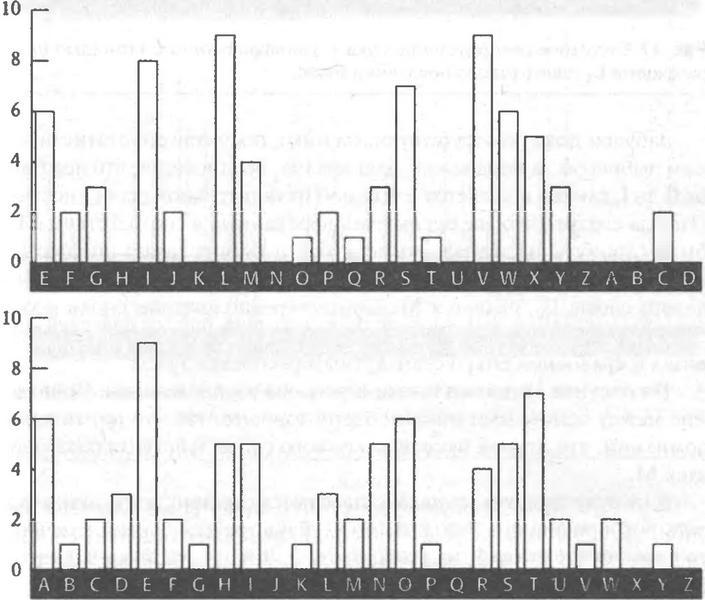
Рис. 16 Распределение L1 сдвинутое на четыре буквы назад (вверху), в сравнении со стандартным частотным распределением (внизу). Совпадают все основные пики и впадины. 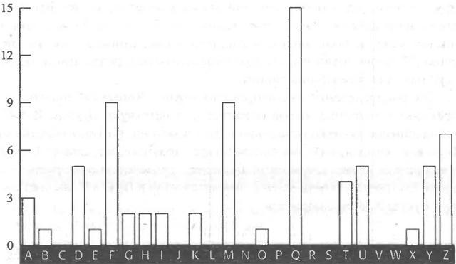
Рис. 17 Частотное распределение букв в зашифрованном с помощью шифралфавита L2 тексте (число появлений букв). Забудем пока об отсутствующем пике, посчитав его статистическим выбросом, и продолжим наш анализ, предполагая, что ложбина от
G до
L как раз и является той самой отличительной особенностью. Отсюда следует, что все буквы, зашифрованные в соответствии с
L2, были сдвинуты на двенадцать позиций, и
L2 определяет шифралфавит, который начинается с
М,
N,
О,
Р…, то есть второй буквой ключевого слова,
L2, является
М. Данное предположение вновь может быть проверено путем сдвига распределения
L2 на двенадцать букв назад и сравнения его со стандартным распределением.
На рисунке 18 даны для сравнения оба распределения. Совпадение между основными пиками очень хорошее, так что нет никаких сомнений, что второй буквой ключевого слова действительно является м.
Я не буду продолжать дальнейшее рассмотрение; достаточно сказать, что при анализе 3-й, 8-й, 13-й… букв третьей буквой ключевого слова будет буква
I, при анализе 4-й, 9-й, 14-й… букв четвертой буквой ключевого слова будет
L, а при анализе 5-й, 10-й, 15-й… букв пятой буквой ключевого слова будет
Y. Ключевым словом является
EMILY. Теперь можно завершить криптоанализ. Первая буква шифртекста —
W, и она была зашифрована в соответствии с первой буквой ключевого слова
Е. Будем действовать в обратном порядке:
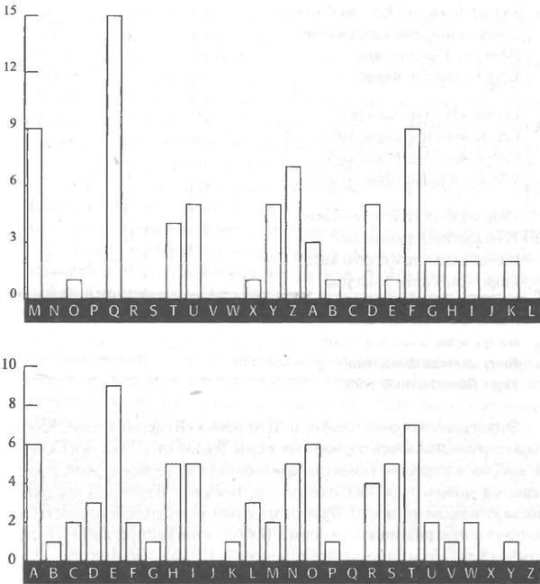
Рис. 18 Распределение L2, сдвинутое назад на двенадцать букв (вверху), в сравнении со стандартным частотным распределением (внизу). Совпадают все основные пики и впадины возьмем квадрат Виженера и поищем
W в ряду, начинающемся с буквы
Е, а затем посмотрим, какая буква находится вверху этого столбца. Этой буквой будет буква в, которая и будет первой буквой открытого текста. Повторяя эту операцию шаг за шагом, мы получим открытый текст, который начинается следующим образом:
sittheedow-nandhavenoshamecheekbyjol… Вставив в соответствующих местах пробелы между словами и знаки пунктуации, приведем открытый текст к окончательному виду:
Sit thee down, and have no shame,
Cheek by jowl, and knee by knee:
What саге I for any name?
What for order or degree?
Let me screw thee up a peg:
Let me loose thy tongue with wine:
Callest thou that thing a leg?
Which is thinnest? thine or mine?
Thou shalt not be saved by works:
Thou hast been a sinner too:
Ruined trunks on withered forks,
Empty scarecrows, I and you!
Fill the cup, and fill the can:
Have a rouse before the morn:
Every moment dies a man,
Every moment one is born.
Это стихи из поэмы Альфреда Теннисона «Видение греха». Ключевым словом оказалось первое имя жены Теннисона, Эмилии Селлвуд. Я выбрал в качестве примера криптоанализа отрывок этой замечательной поэмы, так как именно он побудил Бэббиджа направить письмо великому поэту. Будучи строгим ревнителем статистики и составителем таблиц смертности, Бэббидж не был согласен со строками: «Каждую минуту умирает человек, Но каждую минуту человек рождается», — последними строками приведенного выше незашифрованного текста. И он предложил подправить «во всем остальном превосходную» поэму Теннисона:
Следует указать, что если это было бы так, то тогда численность населения Земли не менялась бы… поэтому я беру на себя смелость предложить, чтобы в следующем издании Вашей поэмы Вы исправили бы эти строчки следующим образом: «Каждую минуту умирает человек, Но 11/16 человека рождается»…На самом деле число настолько длинное, что я не могу записать его в одну строку, но полагаю, что 11/16 будет достаточно точным для поэзии.
Остаюсь в Вашем распоряжении,
Чарльз Бэббидж
По-видимому, успеха во взломе шифра Виженера Бэббидж добился в 1854 году, вскоре после разногласий с Твэйтсом, но о его открытии никто так и не узнал, потому что Бэббидж не опубликовал его. Это обнаружилось только в двадцатом веке, когда ученые принялись разбирать его многочисленные заметки. А тем временем этот же способ независимо от Бэббиджа был найден Фридрихом Вильгельмом Касиски, отставным офицером прусской армии. С 1863 года, когда он опубликовал в «Die Geheimschriften und die Dechiffrirkunst» («Тайнопись и искусство дешифрования») работу о своем крупном открытии в криптоанализе, этот алгоритм известней как «тест Касиски», имя же Бэббиджа и его вклад вспоминают нечасто.
Так почему же Бэббидж не сообщил о том, что он сумел взломать этот имеющий столь важное значение шифр? Несомненно, была у него такая привычка — бросать незавершенными значительные и многообещающие начинания и не сообщать о своих открытиях, и в данном случае это могло бы являться просто еще одним примером его равнодушного к этому отношения. Имеется, однако, и другое объяснение. Бэббидж сделал свое открытие вскоре после того, как разразилась Крымская война, а в одной из теорий было выдвинуто предположение, что оно давало Британии явное преимущество над Россией, ее противником. Вполне возможно, что британская секретная служба потребовала от Бэббиджа, чтобы он сохранил свою работу в секрете, тем самым обеспечив себе девятилетнюю фору перед остальным миром. И если это так, то это полностью соответствует многолетней традиции умалчивания о достижениях в области криптоанализа в интересах национальной безопасности, — обычай, который сохранился и в двадцатом столетии.
От объявлений в газете о розыске родных до кладов
Благодаря достижениям Чарльза Бэббиджа и Фридриха Касиски шифр Виженера более не был безопасным. Теперь, когда криптоаналитики вновь обрели контроль в коммуникационной войне, криптографы не могли гарантировать секретности. Хотя они и пытались разрабатывать новые шифры, но во второй половине девятнадцатого столетия не появилось ничего существенного, и профессиональные криптографы были в смятении. Однако как раз в это же самое время у широкой публики появился огромный интерес к шифрам.
Развитие телеграфа, которое вызвало рост интереса коммерческого характера к криптографии, привело также и к формированию общественного интереса к ней. Люди осознали необходимость защищать свои сообщения сугубо личного характера, и если в том возникала необходимость, то применялось шифрование, хотя это и требовало больше времени на их отправку, тем самым увеличивая стоимость телеграмм. Скорость работы телеграфистов, использовавших азбуку Морзе, с открытым незашифрованным английским текстом доходила до 35 слов в минуту, поскольку они могли запоминать фразы целиком и целиком же передавать их, в то время как передавать мешанину букв, которые образуют шифртекст, получалось значительно медленнее, потому что телеграфист должен был постоянно обращаться к письменному сообщению отправителя, чтобы проверять порядок следования букв. Шифры, используемые широкими массами, не смогли бы противостоять профессиональному криптоаналитику, но их вполне хватало для защиты от посторонних людей, любящих совать нос не в свои дела.
По мере того как люди все увереннее выполняли шифрование, они начинали выражать свое умение в криптографии разнообразными способами. Например, юным влюбленным в викторианской Англии часто запрещалось в открытую выражать свои чувства, и они не могли даже переписываться, поскольку их родители могли перехватить письмо и прочитать его. В результате этого влюбленные стали посылать друг другу зашифрованные сообщения посредством газетной колонки частных объявлений. Эти «объявления о розыске родных», как их стали называть, вызвали любопытство криптоаналитиков, которые стали просматривать объявления и старались дешифровать их содержание. Как было известно, не отказывал себе в этом даже Чарльз Бэббидж со своими друзьями* сэром Чарльзом Уитстоном и бароном Леоном Плейфером, которые вместе разработали
шифр Плейфера (приведен в Приложении Е). Как-то раз Уитстон расшифровал объявление в «Таймс» от оксфордского студента, который предлагал тайно бежать своей возлюбленной. Спустя несколько дней Уитстон поместил свое собственное сообщение, зашифрованное тем же самым шифром, советуя паре не действовать так бунтарски и поспешно. Вскоре после этого там же появилось и третье сообщение, уже от леди, на сей раз незашифрованое: «Дорогой Чарли, больше не пиши. Наш шифр раскрыт».
Со временем в газетах появлялось всё большее количество разнообразных зашифрованных объявлений. Криптографы начали помещать там зашифрованные сообщения, просто чтобы бросить вызов своим коллегам. В других случаях зашифрованные объявления использовались в целях критики общественных деятелей или организации. Однажды «Таймс» разместила следующее сообщение, содержащее в себе непреднамеренно зашифрованный подтекст: «“Таймс” — это Джеффрис прессы». Газета, по сути, приравняла себя печально известному судье-вешателю семнадцатого века Джеффриру, что означало, что она являлась жестоким, беспощадным печатным органом, который действовал как рупор правительства.
Еще одним примером знакомства общества с криптографией было широко распространенное использование булавочных проколов для шифрования сообщений. Древнегреческий историк Эней Тактик предлагал передавать тайные послания прокалывая точечные отверстия под определенными буквами во внешне безобидном тексте, точно так же, как поставлены точки под некоторыми буквами в этом абзаце. С помощью этих букв получатель, которому предназначается это секретное послание, сможет легко его прочесть. Однако если страницу будет разглядывать кто-то еще, то он, скорее всего, не обратит внимания на крошечные булавочные проколы и не будет подозревать о наличии секретного послания. Спустя два тысячелетия британцы применяли точно такой же криптографический метод, правда, не для того, чтобы обеспечить секретность переписки, а просто чтобы избежать чрезмерных почтовых расходов. До модернизации почтовой системы в середине девятнадцатого столетия стоимость отправки письма составляла примерно один шиллинг на каждые сто миль, что было не по средствам для большинства людей. Однако газеты можно было отправить по почте бесплатно, и это стало лазейкой для бережливых англичан Викторианской эпохи. Вместо того чтобы писать и отправлять письма, люди начади пользоваться булавочными проколами, чтобы составить сообщение на титульном листе газеты. После чего они посылали газету через почтовое отделение, не платя ни пенни.
Растущая притягательность криптографических методов для широкой публики означала, что очень скоро коды и шифры стали использоваться в литературе девятнадцатого столетия. В романе Жюль Верна «Путешествие к центру Земли» дешифрование пергамента, заполненного руническими письменами, явилось первым шагом героического путешествия. Эти письмена представляют собой часть шифра замены, который образует текст на латинском языке, и который, в свою очередь, приобретает смысл только тогда, когда буквы идут в обратном порядке: «Спустись в кратер вулкана Снайфельдс, который тень Скартариса ласкает перед июльскими календами, отважный странник, и ты достигнешь центра Земли». В 1885 году Верн в своем романе «Матиас Шандор» также использовал шифр в качестве центрального элемента. В Британии одним из наиболее выдающихся авторов художественных произведений, посвященных криптографии, был сэр Артур Конан Дойль. И не удивительно, что Шерлок Холмс был экспертом в криптографии и, как он сообщил доктору Ватсону, был «автором небольшого научного труда, в котором проанализировано сто шестьдесят различных шифров». О самом известном случае дешифрования, которое выполнил Холмс, говорится в рассказе «Пляшущие человечки»; в этом рассказе использовался шифр, состоящий из человечков, напоминающих детские рисунки, но при этом каждая поза этих человечков является отдельной буквой.
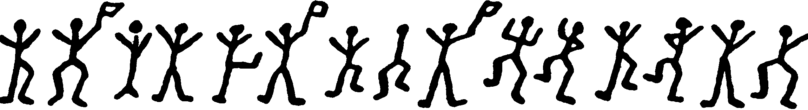
Рис. 19 Часть зашифрованного сообщения из рассказа «Пляшущие человечки», написанного сэром Артуром Конан Дойлем о приключениях Шерлока Холмса. Благодаря Эдгару Аллану По интерес к криптоанализу рос также и по другую сторону Атлантики. Он бросил вызов читателям филадельфийского журнала «Александер Уикли Мессенджер», заявив, что сумеет дешифровать любой одноалфавитный шифр замены. Сотни читателей прислали свои зашифрованные тексты, и все они были успешно дешифрованы. Читатели были удивлены его достижениями, хотя для этого нужно было всего лишь знать частотный анализ. Один из его почитателей даже провозгласил его «самым выдающимся и искусным из когда-либо живших криптографов».
В 1843 году, стремясь поддержать пробудившийся интерес, По написал короткий рассказ о шифрах «Золотой жук», которому профессиональными криптографами была дана высокая оценка как великолепному произведению художественной литературы в этой области. В нем рассказывается об Уильяме Легране, который находит необычного жука золотого цвета и подбирает его лежащим неподалеку клочком бумаги. Тем же вечером он делает набросок золотого жука на этом клочке, а затем подносит его к свету огня, чтобы проверить точность рисунка.
Однако его набросок уничтожен невидимыми чернилами, которые проявились под действием высокой температуры пламени. Легран исследует появившиеся знаки и убеждается, что в его руках находится зашифрованный документ, в котором даются указания, как отыскать сокровища Капитана Кидда. Остальная часть рассказа — это классическая демонстрация применения частотного анализа, который приводит к дешифрованию ключей Капитана Кидда и обнаружению его спрятанного сокровища.
Хотя рассказ «Золотой жук» — чистый вымысел, однако существует под линная история, произошедшая в девятнадцатом веке, история, в которой присутствуют многие детали рассказа Эдгара По. Случай с шифрами Биля — это и авантюрные похождения на Диком Западе, и ковбой, собравший огромное богатство, и спрятанное сокровище стоимостью 20 миллионов долларов, и таинственный комплект зашифрованных бумаг, в которых даны указания на то место, где оно находится. Многое из того, что мы знаем об этой истории, включая зашифрованные бумаги, содержится в брошюре, изданной в 1885 году. Эта брошюра, состоящая всего-навсего из 23 страниц, ставила в тупик поколения криптоаналитиков и манила сотни искателей сокровищ.
История начинается в гостинице «Вашингтон» городка Линчберг штата Вирджиния за шестьдесят пять лет до выхода в свет брошюры. Как было в ней сказано, и о гостинице, и о ее владельце, Роберте Моррисе, сложилось высокое мнение: «Его покладистый характер, неподкупная честность, превосходное управление и хорошо организованное ведение хозяйства вскоре создало ему известность как хозяину гостиницы, а о его репутации было известно даже в других штатах. Его дом был лучшим в городе, и только здесь собиралось светское общество». В январе 1820 года незнакомец по имени Томас Биль въехал в Линчберг и зарегистрировался в гостинице «Вашингтон». Как вспоминал Моррис: «Ростом он был шести футов, черные, как смоль, глаза и волосы того же цвета, одежда чуть длиннее, чем было принято носить в то время. Он был стройным и производил впечатление необычайно сильного и деятельного человека, его отличительной особенностью был темный и смуглый цвет лица, как если бы он много времени проводил на солнце и открытом воздухе. Это, однако, не портило его внешности, и я считал его самым красивым человеком, которого когда-либо видел». Хотя Биль провел остаток зимы с Моррисом и «чрезвычайно нравился всем, особенно женщинам», он никогда не говорил о своем прошлом, о своей семье и о цели своего приезда. Затем, в конце марта, он уехал так же внезапно, как и приехал.
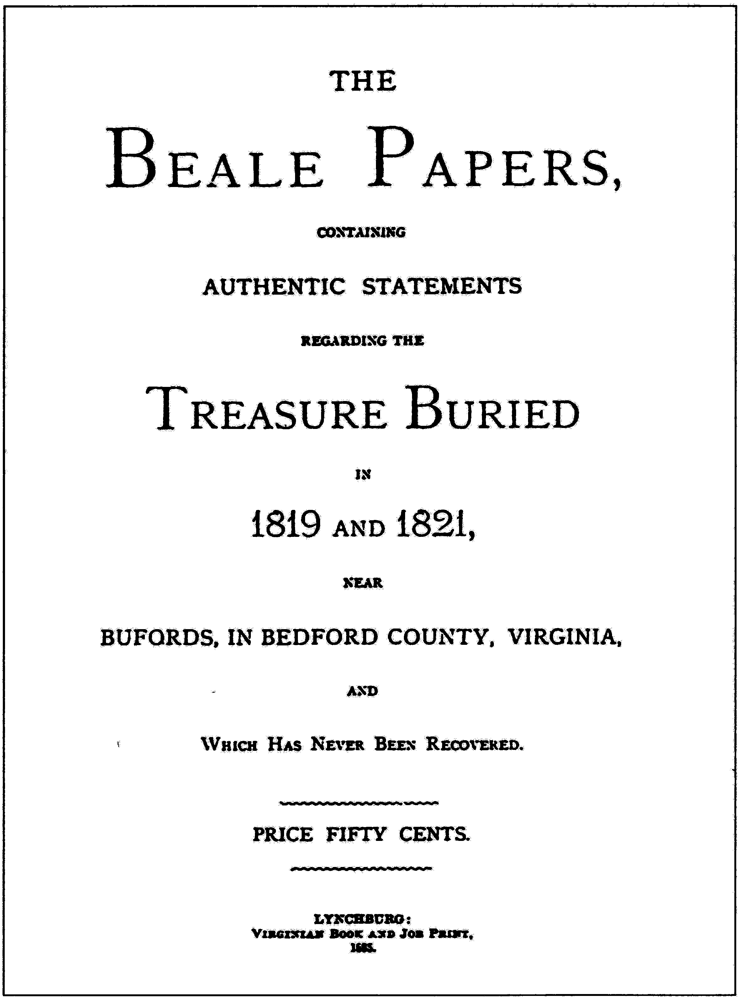
Рис. 20 Титульный лист брошюры «Документы Биля», в которой содержится все, что мы знаем о загадке сокровища Биля. Через два года, в январе 1822 года, Биль вернулся в гостиницу «Вашингтон» «более темным и смуглым, чем когда-либо». Остаток и этой зимы он провел в Линчберге, снова исчезнув весной, но перед этим он вручил Моррису запертую железную коробку, в которой, как он сказал, находятся «ценные и важные бумаги». Моррис положил коробку в сейф и не вспоминал ни о ней, ни о ее содержимом, пока не получил письмо от Биля, датированное 9 мая 1822 года и отправленное из Сент-Луиса. После нескольких шуток и абзаца, посвященного предполагаемой поездке в прерии, «чтобы поохотиться на бизонов и помериться силами со свирепыми гризли», в письме наконец-то была раскрыта значимость этой коробки:
В коробке находятся бумаги, жизненно важные для меня и многих других людей, занятых общим делом со мной, и в случае моей смерти ее потеря стала бы непоправимым бедствием. Поэтому необходимо беречь ее и позаботиться о том, чтобы с ней ничего не случилось. Если ни один из нас никогда не вернется, пожалуйста, бережно храните эту коробку еще в течение десяти лет, считая с даты отправки этого письма, и если ни я, и никто другой с доверенностью от меня за это время не потребует выдать ее, взломайте замок и вскройте коробку. Наряду с бумагами, адресованными Вам, Вы найдете там и другие бумаги, которые нельзя будет прочитать не зная ключа. Этот ключ я оставил здесь, в руках друга, запечатанным и адресованным лично Вам, с припиской, чтобы это послание было Вам доставлено не ранее июня 1832 года. С помощью этого ключа Вы поймете все, что Вам необходимо будет сделать.
Исполненный сознанием долга, Моррис продолжал хранить коробку, ожидая, пока Биль не заберет ее, но смуглый таинственный незнакомец так и не вернулся в Линчберг. Он исчез без объяснений, и его никто никогда больше не видел. Спустя десять лет Моррис мог выполнить указания, данные в письме, и открыть коробку, но делать этого он, похоже, не собирался. В письме Биля упоминалось, что в июне 1832 года Моррису будет послано сообщение, которое должно было объяснить, как дешифровать содержимое коробки. Однако сообщение так никогда и не пришло, и, видимо, Моррис понимал, что не имело никакого смысла открывать коробку, если он не сумеет расшифровывать то, что было внутри нее. В конце концов, в 1845 году, любопытство победило и Моррис взломал замок. В коробке лежало три листа с зашифрованным текстом и небольшое письмо, написанное Билем на английском языке.
Письмо оказалось прелюбопытным; в нем рассказывалась вся правда о Биле, о коробке и о шифрах. Из письма стало ясно, что в апреле 1817 года, почти за три года до первой встречи с Моррисом, Биль и еще 29 человек предприняли поездку по Америке. Проехав через богатые дичью равнины Запада, они прибыли в город Санта-Фе и остановились на зиму в «маленьком мексиканском городишке». В марте они направились на север и начали двигаться за «огромным стадом бизонов», отстреливая столько, сколько было возможно. И вот тут-то, как писал Биль, им улыбнулась удача:
Как-то раз, преследуя бизонов, наша группа стала лагерем в небольшом ущелье, примерно в 250 или 300 милях к северу от Санта-Фе; привязав лошадей, мы принялись готовить ужин, как вдруг кто-то обнаружил в расщелине меж скал некий кусок, который по всем признакам походил на золотой, и показал его остальным. Внимательно осмотрев его, все единодушно решили, что это золото и есть. Открытие привело всех в огромное возбуждение.
Далее в письме говорилось, что Биль и его товарищи с помощью индейцев местного племени в течение последующих восемнадцати месяцев проводили разработку этого участка и за это время они добыли большое количество золота, а также немного серебра, найденного неподалеку. Все были согласны, что их богатство следует укрыть в безопасном месте, и решили переправить его домой, в Вирджинию, где оно должно быть надежно спрятано. В 1820 году Биль отправился в Линчберг с золотом и серебром, нашел подходящее место и закопал его. Именно тогда он в первый раз остановился в гостинице «Вашингтон» и познакомился с Моррисом. Уехав в конце зимы, Биль вернулся к своим товарищам, которые продолжали трудиться во время его отсутствия.
Еще через восемнадцать месяцев Биль снова приехал в Линчберг, чтобы пополнить свой тайник, причем на этот раз золота и серебра было даже больше. Но для его поездки сюда имелась еще одна причина:
Перед тем как я покинул своих товарищей, остающихся в прериях, мы решили, что если с нами произойдет что-то непредвиденное, то спрятанные сокровища будут потеряны для наших родных, если не принять некоторых мер против таких непредвиденных обстоятельств. Поэтому мне было поручено найти нескольких абсолютно надежных людей, если таковые вообще найдутся, кому можно было бы открыться, чтобы они выполнили наши пожелания и передали бы наши соответствующие части нашим родным.
Биль был уверен, что Моррис — честный человек, вот почему он доверил ему коробку с тремя листами, зашифрованными так называемыми шифрами Биля. На каждом зашифрованном листе находилось множество чисел (они были перепечатаны из брошюры и приведены здесь в виде рисунков 21, 22 и 23), и их дешифрование даст все важные детали.
Первый лист давал описание места, где спрятаны сокровища, второй — сообщал в общих чертах о том, что это были за сокровища, а в третьем был список родных тех, кто должен был получить свою часть сокровищ. Когда Моррис читал это письмо, минуло уже примерно 23 года после того, как он в последний раз видел Томаса Биля. Будучи уверенным, что Биль и его люди мертвы, Моррис почувствовал себя обязанным найти это золото и разделить его среди родных этих людей. Однако, не имея ключа, ему пришлось начать дешифрование «с нуля», — задача, решению которой он посвятил последующие двадцать лет и которая закончилась безуспешно.
В 1862 году в возрасте восьмидесяти четырех лет Моррис понял, что его жизнь подходит к концу и что он должен поделиться с кем-нибудь тайной шифров Биля, иначе все надежды исполнить желания Биля умрут вместе с ним. Моррис открылся своему другу, но, к сожалению, кто он, так и остается загадкой. Все, что мы знаем о друге Морриса, так это то, что именно он написал в 1885 году брошюру, поэтому далее я буду называть его просто
автор. В брошюре автор так объяснил причины своей анонимности:
Я предвижу, что эти документы будут опубликованы большим тиражом, и, чтобы избежать огромного количества писем, которыми меня будут забрасывать со всех концов Америки, задавая всевозможные вопросы и требуя ответы, что, если уделять им всем внимание, полностью поглотило бы все мое время и только изменило бы характер моей работы, я решил, чтобы мое имя не упоминалось в издании, заверяя всех заинтересовавшихся, что я сообщил все, что я знаю об этом деле, и что я не могу добавить ни одного слова к содержащимся здесь заявлениям.
Чтобы скрыть свою личность, автор попросил Джеймса В. Уорда, уважаемого члена местной общины и окружного инспектора дорог, действовать в качестве его агента и издателя.
Все, что нам известно, напечатано в брошюре, поэтому следует выразить признательность автору за то, что у нас есть и шифры Биля, и удивительный рассказ Морриса об этой истории. Кроме того, автору также удалось успешно дешифровать второй шифр Биля. Аналогично первому и третьему шифрам, второй шифр состоял из страницы чисел, и автор предположил, что каждое число представляло собой букву. Однако диапазон чисел намного превышает количество букв в алфавите, поэтому автор понял, что он имел дело с шифром, в котором для записи одной и той же буквы используются несколько чисел.
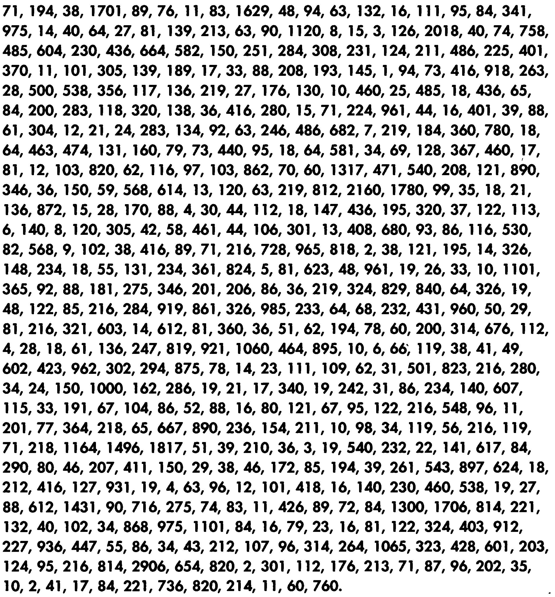
Рис. 21 Первый шифр Биля. 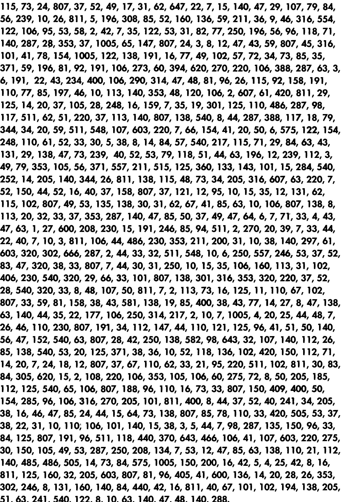
Рис. 22 Второй шифр Биля. 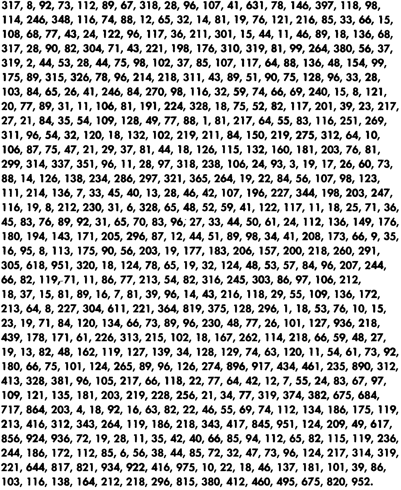
Рис. 23 Третий шифр Биля. Одним из шифров, который удовлетворяет этому критерию, является так называемый
книжный шифр, в котором книга или любой другой отрывок текста сами являются ключом.
Сначала криптограф последовательно присваивает номера каждому слову в ключевом тексте. После этого каждое число заменяет начальную букву слова.
1For
2example,
3if
4the
5sender
6and
7receiver
8agreed
9that
10this
11 sentence
12were
13to
14be
15the
16keytext,
17then
18every
19word
20would
21be
22numerically
23labelled,
24each
25number
26providing
27the
28basis
29for
30encryption. Затем необходимо составить список, в котором каждое число сопоставляется с начальной буквой слова:
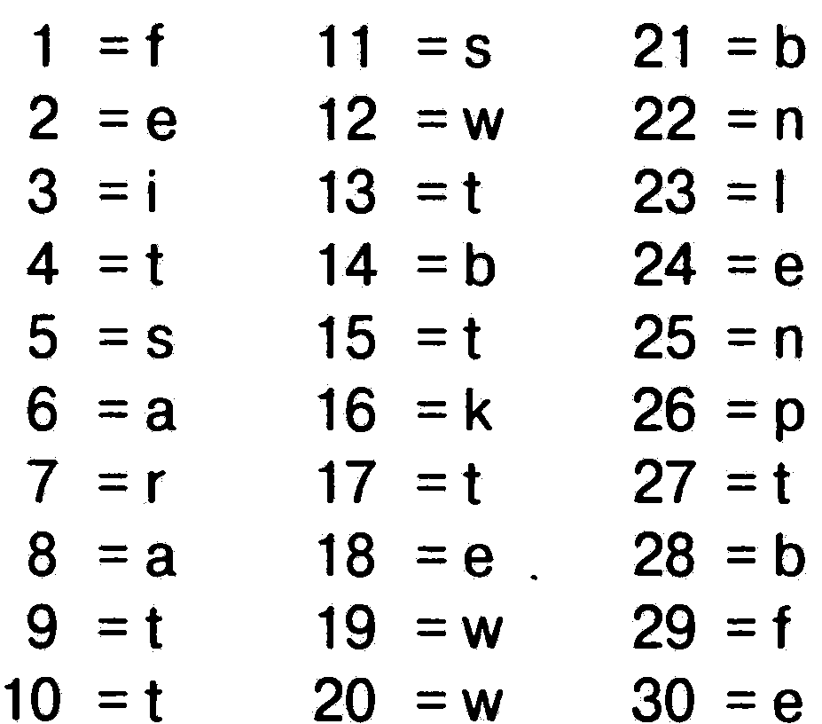
Теперь сообщение может быть зашифровано путем замены букв в открытом тексте на числа в соответствии с составленным списком. Таким образом, буква открытого текста
f будет заменяться на 1, а буква открытого текста
е может быть заменена любым из чисел: 2, 18, 24 или 30. Из-за того что наш ключевой текст является очень коротким предложением, у нас нет чисел, с помощью которых мы смогли бы заменить такие редко встречающиеся буквы, как
х и
z, но их вполне достаточно, чтобы зашифровать слово
Beale, которое может быть записано как 14-2-8-23-18. Если у получателя есть копия ключевого текста, то расшифровка зашифрованного сообщения элементарна. Однако если злоумышленник перехватит один только зашифрованный текст, то криптоанализ будет заключаться в том, чтобы каким-то образом определить ключевой текст. Автор брошюры писал: «Увлеченный этой идеей, я проверял каждую книгу, какую мог достать, нумеруя их буквы и сравнивая числа с числами из брошюры; однако все было тщетно, пока мне не попалась Декларация Независимости, которая дала ключ к одной из бумаг и воскресила все мои надежды».
Декларация Независимости явилась ключевым текстом для второго шифра Биля, и, нумеруя слова в Декларации, оказалось возможным разгадать его.
На рисунке 24 показано начало Декларации Независимости, в которой рядом с каждым десятым словом поставлен номер, чтобы читатель смог увидеть, как производится дешифрование. На рисунке 22 приведен зашифрованный текст; здесь первое число 115, а 115-м словом в Декларации будет слово «instituted», поэтому первое число обозначает букву
i. Второе число в зашифрованном тексте 73, и 73-е слово в Декларации — «hold», поэтому второе число обозначает букву
h. В брошюре полностью приведен дешифрованный текст:
В округе Бедфорд, примерно в четырех милях от Бафорда я поместил в выкопанное на глубине шести футов хранилище следующие предметы, принадлежащие совместно сторонам, чьи имена указаны на листе под номером «3», при этом:
Первый вклад состоял из одной тысячи четырнадцати фунтов золота и трех тысяч восьмисот двенадцати фунтов серебра; внесен в ноябре 1819 года. Второй вклад был сделан в декабре 1821 года и состоял из тысячи девятисот семи фунтов золота и тысячи двухсот восьмидесяти восьми фунтов серебра, а также драгоценных камней, полученных в Сент-Луисе в обмен на серебро, в целях экономии на перевозку, и оцененных в 13000 долларов.
Вышеупомянутое надежно упаковано в железных горшках с железными крышками. Хранилище грубо отделано камнем, горшки стоят на одном большом камне и закрыты другими камнями. В бумаге под номером «1» описывается точное местонахождение хранилища, так что найти его не составит никакого труда.
Следует отметить, что в зашифрованном сообщении вкралось несколько ошибок. К примеру, в дешифрованном тексте есть слова «four miles
(четыре мили)», которые определяются 95-м словом в Декларации Независимости, начинающимся с буквы
u. Однако 95-м стоит слово «inalienable». Так могло случиться из-за небрежности при шифровании или из-за того, что у Биля была копия Декларации, где 95-м словом было слово ««inalienable»», что встречалось в некоторых вариантах Декларации в начале девятнадцатого века. Но как бы то ни было, благодаря успешному дешифрованию стала ясна стоимость сокровищ — не менее 20 миллионов долларов при нынешних ценах на слитки из драгоценных металлов.
Не удивительно, что как только автор узнал о стоимости сокровищ, он потратил куда больше времени, пытаясь дешифровать остальные два листа, в особенности лист с первым шифром Биля, в котором указывается место, где они спрятаны. Но, несмотря на все усилия, он потерпел неудачу и шифры не принесли ему ничего, кроме разочарования:
Я потратил на расшифровку массу времени, и из-за этого, будучи в начале пути относительно обеспеченным, скатился в полную нищету, что навлекло страдания на тех, кого моим долгом было защищать, и это — невзирая на все их уговоры. В конце концов мои глаза открылись на то, в каком положении они оказались, и я решил раз и навсегда покончить с этим делом и, если еще возможно, исправить свои ошибки. Чтобы избавиться от искушения, я решил предать гласности все, что я знаю, и этим снять со своих плеч ответственность перед Моррисом.
Результатом такого решения явилась брошюра, изданная в 1885 году, в которой наряду с шифрами было опубликовано все, что было известно автору. Хотя пожар на складе уничтожил большую часть тиража, но те брошюры, которые уцелели, вызвали в Линчберге настоящий переполох. Среди наиболее ревностных охотников за сокровищами, привлеченных шифрами Биля, были братья Джордж и Клейтон Харт. В течение нескольких лет они внимательно изучали два оставшихся шифра, разрабатывая и осуществляя различные способы криптоаналитических атак, порой даже якобы находя решение. При неверном выборе способа атаки среди огромного количества бессмысленных слов иногда встречаются несколько осмысленных, что окрыляет криптоаналитика и заставляет его придумывать объяснения бессмыслице. Для беспристрастного наблюдателя такой дешифрованный текст является ни чем иным, как принятием желаемого за действительное, но для охотника за сокровищами он полон смысла. Один из вариантов дешифровки текста даже воодушевил братьев Харт применить динамит, чтобы вынуть грунт на определенном участке; но, к сожалению, в образовавшемся котловане никакого золота не оказалось. Хотя Клейтон Харт бросил заниматься шифрами Биля в 1912 году, но Джордж продолжил работать над ними вплоть до 1952 года. Еще более упорным оказался Хайрам Герберт-младцшй, который впервые заинтересовался этой проблемой в 1923, а попытки разгадать шифры Биля оставил в 70-х годах. Его усилия также оказались бесплодными.
When, in the course of human events, it becomes 10necessary for one people to dissolve the political bands which 20have connected them with another, and to assume among the 30powers of the earth, the separate and equal station to 40which the laws of nature and of nature’s God entitle 50them, a decent respect to the opinions of mankind requires 60that they should declare the causes which impel them to 70the separation.
We hold these truths to be self-evident, 80that all men are created equal, that they are endowed 90y their Creator with certain inalienable rights, that among these 100are life, liberty and the pursuit of happiness; That to 110secure these rights, governments are instituted among men, deriving their 120just powers from the consent of the governed; That whenever 130any form of government becomes destructive of these ends, it 140is the right of the people to alter or to 150abolish it, and to institute a new government, laying its 160foundation on such principles and organizing its powers in such 170form, as to them shall seem most likely to effect 180their safety and happiness. Prudence, indeed, will dictate that governments 190long established should not be changed for light and transient 200causes; and accordingly all experience hath shewn, that mankind are 210more disposed to suffer, while evils are sufferable, than to 220right themselves by abolishing the forms to which they are 230accustomed.
But when a long train of abuses and usurpations, 240pursuing invariably the same object evinces a design to reduce them 250under absolute despotism, it is their right, it is their 260duty, to throw off such government, and to provide new 270Guards for their future security. Such has been the patient 280sufferance of these Colonies; and such is now the necessity 290which constrains them to alter their former systems of government. 300The history of the present King of Great Britain is 310a history of repeated injuries and usurpations, all having in 320&direct object the establishment of an absolute tyranny over these 330States. To prove this, let facts be submitted to a 340candid world.
Рис. 14 Первые три абзаца Декларации Независимости; у каждого десятого слова поставлен номер. Декларация является ключом для дешифрования второго шифра Биля. Профессиональные криптоаналитики также старались напасть на след сокровища Биля. Герберт О. Ярдли, основавший в конце Первой мировой войны Бюро шифров США (известный как американский «черный кабинет»), был заинтригован шифрами Биля, точно так же, как и полковник Уильям Фридман — фигура первой величины в американском криптоанализе в первой половине двадцатого столетия. Ярдли, когда возглавлял Службу радиоразведки, включил шифры Биля в программу обучения, возможно, потому, что, как однажды сказала его жена, он считал, что шифры обладают «дьявольской привлекательностью, специально предназначенной, чтобы заманить неосторожного читателя».
Достаточно часто в архиве Фридмана, созданном после его смерти в 1969 году в исследовательском центре Джорджа Маршалла, проводятся консультации под руководством военных историков, однако подавляющее большинство посетителей — это энтузиасты, надеющиеся довести дело до конца и расшифровать документы Биля. Позднее одной из наиболее заметных фигур, занимающихся поиском сокровищ Биля, был Карл Хаммер, ушедший на пенсию руководитель отдела теории вычислительной техники компании Сперри Унивак и один из основоположников компьютерного криптоанализа. Как полагал Хаммер: «Шифры Биля занимали по меньшей мере 10 % лучших криптоаналитических умов страны. И не стоит жалеть потраченных на это усилий. Такая работа, даже те направления, которые завели в тупик
г окупится сторицей при проведении исследований по развитию и усовершенствовании компьютеров». Хаммер был видным членом Ассоциации шифров Биля и сокровищ, учрежденной в 60-х годах двадцатого века с целью поддержания интереса к загадке Биля. Первоначально в Ассоциации требовалось, чтобы любой, кто обнаружит клад, разделил его с другими, но, по-видимому, это отпугнуло многих охотников за сокровищами от того, чтобы примкнуть к Ассоциации, и поэтому вскоре это условие было снято.
Несмотря на все усилия членов Ассоциации, охотников за сокровищами и профессиональных криптоаналитиков, первый и третий шифры Биля так и остались неразгаданными в течение всего этого времени; и золото, и серебро, и драгоценные камни еще только предстоит отыскать. Множество попыток по дешифрованию вращалось вокруг Декларации Независимости, которая явилась ключом для второго шифра Биля. Хотя при непосредственной нумерации слов Декларации первый и третий шифры не поддались, криптоаналитики пробовали применить и другие схемы, как-то: нумерация слов в обратном порядке, нумерация слов через одно и т. п., но пока безрезультатно. Кроме того, в первом шифре есть номер 2906, Декларация же состоит всего из 1322 слов. В качестве возможных ключей были проверены другие тексты и книги. Многими криптоаналитиками даже рассматривалась возможность того, что была использована совершенно другая система шифрования.
Возможно, что вас удивляет стойкость неразгаданных шифров Биля, особенно если учесть, что в непрерывно длящемся поединке между шифровальщиками и дешифровальщиками именно дешифровальщики всегда одерживали верх. Бэббидж и Касиски придумали способ, как взломать шифр Виженера, и шифровальщики изо всех сил старались найти какой-нибудь другой шифр взамен него. Как же Биль сумел сделать так, что шифр оказался таким непреодолимым? Ответ заключается в том, что шифры Биля были созданы при таких обстоятельствах, которые обеспечили криптографу огромное преимущество.
Документы предназначались для разового использования, и, поскольку они касались такого огромного богатства, Биль мог придумать специальный, предназначенный для данного случая ключевой текст для первого и третьего шифров. В самом деле, если ключевой текст был написан самим Билем, то этим можно было бы объяснить, почему поиски по опубликованным изданиям не дали результата. Мы можем предположить, что Биль, например, написал рассказ об охоте на бизонов длиной 2000 слов, который существовал всего в одном экземпляре. И только тот, у кого был этот рассказ, — уникальный ключевой текст, — смог бы дешифровать первый и третий шифры Биля. Биль упоминал, что он оставил ключ в «руках друга» в Сент-Луисе, но если друг потерял или уничтожил ключ, то вполне возможно, что криптоаналитики никогда не смогут разгадать шифры Биля.
Создание для сообщения ключевого текста одноразового использования является несравненно более надежным, чем применение ключа на основе опубликованной книги, но практическую ценность это имеет только в том случае, если у отправителя есть время для подготовки ключевого текста и у него есть возможность передать его получателю, а эти требования невыполнимы для обычной повседневной переписки. В случае же Биля, он мог на досуге составить, не спеша, свой ключевой текст, в любой момент, когда бы ему ни пришлось проезжать через Сент-Луис, передать его там своему другу, а затем, когда потребуются сокровища, попросить друга выслать ключевой текст по почте или забрать его самому.
По другой теории, в которой объясняется нераскрываемость шифров Биля, автор брошюры сознательно изменил их перед тем, как опубликовать. Возможно, автор просто не хотел, чтобы можно было воспользоваться ключом, который находился в руках друга Биля в Сент-Луисе. Если бы он опубликовал шифры в точности в том виде, как они были, то друг смог бы дешифровать их и забрать золото, а автор не получил бы никакой награды за свои труды. Однако, если шифры были каким-то образом искажены, то друг, в конце концов, сумел бы понять, что ему потребуется помощь автора, и связался бы с издателем, Уордом, который, в свою очередь, связался бы с автором. После чего автор передал бы точные шифры в обмен на свою часть сокровищ.
Также вполне возможно, что сокровище было найдено уже много лет назад и что тот, кто обнаружил его, тайно вывез сокровище не замеченный местными жителями. Некоторые из энтузиастов, занятых поисками сокровищ Биля, предполагают, что сокровища уже найдены NSA (Агентством национальной безопасности, АНБ). Центральное американское правительственное ведомство, занимающееся шифрами, имеет доступ к самым мощным компьютерам и имеет возможность привлекать к работе некоторых из наиболее блестящих умов мирового уровня, и они могли обнаружить в шифрах что-то такое, что ускользнуло от внимания остальных.
Отсутствие каких бы то ни было заявлений вполне в духе АН Б — даже высказывалось предположение, что АНБ означает не Агентство национальной безопасности, а организацию под названием «никому ничего не говори» или вообще «нет такого агентства»
[12].
Наконец, мы не можем исключить возможность того, что шифры Биля являются тщательно разработанной мистификацией и что в действительности Биля никогда не существовало. Скептики полагали, что неизвестный автор, вдохновленный рассказом Эдгара По «Золотой жук», придумал всю эту историю и опубликовал брошюру в качестве способа нажиться на алчности других людей. Сторонники теории мистификации отыскали противоречия и ошибки в истории Биля. Так, согласно брошюре, в письме Биля, которое было заперто в железном ящике и, предположительно, написано в 1822 году, есть слово «stampede», но этого слова не встречалось в печати до 1834 года. Однако вполне возможно, что оно еще задолго до того широко употреблялось на Диком Западе, и Биль вполне мог слышать его во время своих путешествий.
Одним из самых главных скептиков был криптограф Луис Крух, объявивший, что нашел доказательство того, что автор брошюры написал и письма Биля: одно, которое, предположительно, было послано из Сент-Луиса, и другое, которое, предположительно, находилось в ящике. Он провел текстовый анализ слов, приписываемых автору, и слов, приписываемых Билю, чтобы определить, нет ли в них каких-нибудь сходных черт. Крух сравнивал такие аспекты, как процент предложений, начинающихся со слов «The», «Of» и «And», усредненное количество запятых и точек с запятой на предложение и стиль письма: использование отрицаний, отрицаний в страдательном залоге, инфинитивов, относительных придаточных предложений и т. п. Помимо слов автора и писем Биля, анализировалась также манера письма еще трех жителей Вирджинии девятнадцатого века. Из пяти использованных для анализа документов максимально схожими оказались документы, написанные Билем и автором брошюры, что дает основание считать, что они могли быть написаны одним человеком. Другими словами, это наводит на мысль, что автор сфабриковал письма, приписывамые Билю, и придумал всю эту историю.
С другой стороны, из многочисленных источников получены свидетельства в пользу достоверности шифров Биля. Во-первых, если бы нераскрываемые шифры были сфальсифицированы, мы могли бы полагать, что обманщик не обращал бы никакого внимания на выбор чисел или оно было бы минимальным. Однако числа образуют различные сложные комбинации. Одну из таких комбинаций можно найти с помощью Декларации Независимости в качестве ключа для первого шифра.
В ней отсутствуют явные слова, однако она образует последовательности вида
abfdefghiljklmmnohpp. Хотя это и не алфавитный список, но определенно и не случайный набор букв. Джеймс Джиллольи из Американской криптологической ассоциации не уверен в подлинности шифров Биля, однако по его оценку, в предположении, что в основе первого шифра лежит криптографический принцип, вероятность случайного появления таких последовательностей составляет менее 10
-14. По одной из теорий, Декларация действительно является ключом, но для получающегося в результате текста требуется второй этап дешифрования; другими словами, первый документ Биля был зашифрован в два этапа, с помощью так называемого многократного шифрования. Если это действительно так, то алфавитная последовательность может рассматриваться как свидетельство того, что первый этап дешифрования был успешно завершен.
Новым доказательством в пользу истинности шифров служит проведенное историческое исследование, которое может быть использовано для проверки истории Томаса Биля. Питер Виемейстер, местный историк, собрал и включил в свою книгу «Сокровища Биля — история загадки» значительную часть материала, полученного в результате поисков. Виемейстер прежде всего задался вопросом, а есть ли какое-нибудь доказательство того, что Томас Биль действительно существовал? Используя данные переписи 1790 года и другие документы, Виемейстер выявил нескольких Томасов Б ил ей, которые родились в Вирджинии и чьи биографические данные совпадают с немногими известными деталями. Виемейстер также попытался подкрепить другие факты из брошюры, например такие, как поездка Биля в Санта-Фе и то, что он обнаружил золото. Так, в Шайенне существует легенда, возникшая примерно в 1820 году, в которой говорится о золоте и серебре, привезенном с Запада и закопанном в Восточных горах. Кроме того, в реестре почтовой службы города Сент-Луис от 1820 года значится «Томас Билл», что согласуется с утверждением, приведенным в брошюре, что Биль проезжал через этот город в 1820 году, когда отправлялся на запад, уехав из Линчберга. В брошюре также говорится, что Биль послал письмо из Сент-Луиса в 1822 году.
Так что, видимо, история шифров Биля имеет под собой основание и продолжает манить криптоаналитиков и кладоискателей, таких как Джозеф Янцик, Мэрилин Парсонс и их пес Мафин. В феврале 1983 года их обвинили в «осквернении могилы», поймав производящими раскопки среди ночи на кладбище Маунтин Вью Черч. Не найдя ничего, кроме гроба, они провели остаток уикэнда в окружной тюрьме, и в итоге были оштрафованы на 500 долларов.
Эти дилетанты-гробокопатели могут утешиться тем, что они вряд ли были менее удачливы, чем Мэл Фишер, профессиональный охотник за сокровищами, который поднял с затонувшего испанского галеона «Нуэстра Сеньора де Атоха», обнаруженного им в 1985 году неподалеку от городка Ки-Уэст во Флориде, золото стоимостью 40 миллионов долларов. В ноябре 1989 года Фишер получил конфиденциальную информацию от эксперта по шифрам Биля во Флориде, который считал, что клад Биля был зарыт у завода Грэхема в округе Бедфорд штата Вирджиния. При поддержке нескольких состоятельных вкладчиков Фишер приобрел участок, зарегистрировав его, чтобы не вызвать никаких подозрений, на имя мистера Вода. Но несмотря на тщательные поиски он так ничего и не обнаружил.
Кое-кто из охотников за сокровищами отказался от попыток дешифровать два оставшихся нерасшифрованными листа и сосредоточился на тщательном отыскании ключей в уже дешифрованном тексте. Так, наряду с описанием спрятанного сокровища, в нем говорится, что оно было закопано «примерно в четырех милях от Бафорда»; по-видимому, это название относится к населенному пункту Бафорд, или, точнее, к таверне Бафорда, расположенной в центре рисунка 25. В шифре также упоминается, что «хранилище грубо отделано камнем», и поэтому многие охотники за сокровищами искали вдоль русла реки Гус Крик места выхода крупных камней. Каждое лето этот район привлекает огромное количество питающих надежды найти сокровища людей, некоторые из них вооружены металлоискателями, других сопровождают экстрасенсы или лозоходцы. В близлежащем городке Бедфорд целый ряд компаний с удовольствием предоставляют снаряжение для проведения поисков, включая даже крупные экскаваторы. Но местные фермеры гораздо менее приветливы к чужакам, которые нередко посягают на их землю, ломают изгороди и роют гигантские ямы.
Изложенная здесь история о шифрах Биля может сподвигнуть вас самому взяться за эту задачу. Соблазн в виде неразгаданного шифра девятнадцатого века, наряду с сокровищем стоимостью 20 миллионов долларов, способен оказаться неодолимым. Но прежде чем отправиться по следу сокровища, выслушайте совет, который дал автор брошюры:
Прежде чем я передам эти бумаги широкой общественности, мне бы хотелось обратиться к тем, кто мог бы проявить к ним интерес, и дать им небольшой совет, исходя из своего горького опыта. Это — уделяйте этой задаче столько времени, сколько Вы можете выкроить из своих дел, но если у Вас нет ни капли свободного времени, оставьте ее… И еще раз повторю, никогда не приносите в жертву, как это случилось со мной, свои интересы и интересы своей семьи тому, что может оказаться иллюзией; но, как я уже говорил, когда день позади и вся работа сделана, а Вы уютно сидите перед очагом, немножко времени, посвященного этой задаче, никому не смогут принести вред, а лишь только пользу и награду.
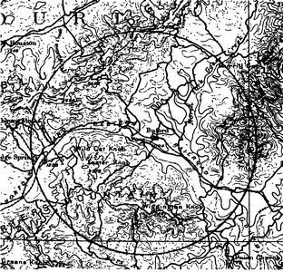
Рис. 25 Часть карты геологической съемки США 1891 года. Радиус круга — четыре мили, а его центр расположен в таверне Бафорда, месте, о котором упоминается во втором шифре.
3 Механизация шифрования
В конце девятнадцатого века криптография пребывала в замешательстве. С тех пор, как усилиями Бэббиджа и Касиски шифр Виженера перестал быть надежным, криптографы искали новый шифр, шифр, который смог бы заново обеспечить секретность связи, давая тем самым возможность бизнесменам и военным пользоваться оперативностью телеграфа, не опасаясь, что их сообщения будут перехвачены и дешифрованы. Кроме того, на рубеже двух столетий итальянский физик Гульельмо Маркони изобрел гораздо более эффективный способ передачи сообщений на дальние расстояния, для которого необходимость В надежном шифровании стала еще более актуальной.
В 1894 году Маркони начал эксперименты с любопытным свойством электрических цепей. При бпределенных условиях, если по одному проводу протекал электрический ток, то он вызывал возникновение тока и в другом проводе, находящемся на некотором расстоянии и изолированном от первого. Усовершенствовав конструкцию двух цепей, повысив мощность и добавив антенны, Маркони вскоре сумел передавать и получать сигналы на расстояние до 2,5 км. Телеграф существовал уже полвека, но для него требовались провода, чтобы передать сообщение от отправителя адресату. У системы же Маркони перед ним было огромное преимущество, поскольку для нее не требовалось никаких проводов — сигнал распространялся, словно по волшебству, через воздух.
В 1896 году в поисках финансовой поддержки своей идеи Маркони переехал в Британию, где подал первую патентную заявку. Продолжая свои эксперименты, он увеличил дальность радиосвязи, вначале передав сообщение на 15 км через Бристольский залив, а затем и на 53 км через пролив Ла-Манш во Францию. В это же время он начал искать коммерческое применение своему изобретению, указывая потенциальным спонсорам на два основных преимущества радио: для него не требуется строительства дорогостоящих телеграфных линий и с его помощью можно посылать сообщения между отдаленными пунктами.
Он провернул великолепный рекламный трюк в 1899 году, оснастив два корабля радио, так что журналисты, освещающие гонку «Кубок Америки» — важнейшую гонку парусных яхт в мире, — могли посылать репортажи о ходе гонки в Нью-Йорк для завтрашних выпусков газет.
Интерес возрос еще больше, когда Маркони развеял миф, что радиосвязь ограничивается горизонтом. Критики аргументировали это тем, что поскольку радиоволны не могут изгибаться и идти вдоль поверхности Земли из-за ее кривизны, радиосвязь будет ограничена сотней километров или около того. Маркони попытался доказать их неправоту, посылая сигналы из Полду в Корнуолле в Сент-Джон в Ньюфаундленде на расстояние 3500 км. В декабре 1901 года, в течение трех часов ежедневно, передатчик из Полду снова и снова посылал букву в (точка-точка-точка), а в это время Маркони стоял на продуваемых всеми ветрами скалах Ньюфаундленда, стараясь поймать радиосигналы. День за днем он запускал ввысь гигантского воздушного змея, который, в свою очередь, поднимал высоко в воздух антенну. 12 декабря вскоре после полудня Маркони наконец услышал три очень слабых точки, — это было первое трансатлантическое радиосообщение. Успех Маркони оставался необъяснимым до 1924 года, когда физики обнаружили наличие ионосферы — слоя атмосферы, нижняя граница которого находится на высоте примерно 60 км над поверхностью Земли. Ионосфера действует как зеркало, отражая радиоволны. Радиоволны также отражаются и от поверхности Земли, поэтому радиосигналы, несколько раз отразившись от ионосферы и Земли, могут достичь любой точки планеты.
Изобретение Маркони раздразнило военных, которые смотрели на него со смесью вожделения и смятения. Тактические преимущества радио бесспорны: оно позволяет установить прямую связь между любыми двумя точками, не требуя для этого проводов. Прокладка такого провода зачастую нецелесообразна, иногда попросту невозможна. Прежде, например, у командующего флотом, находящегося в порту, не было возможностей поддерживать связь со своими кораблями, которые могли пропадать месяцами напролет, радио же позволит ему координировать действия кораблей, где бы они ни находились. Точно также радио даст возможность генералам управлять войсками во время кампаний, обеспечивая непрерывную связь с ними независимо от их передвижений. Все это становится возможным благодаря природе радиоволн, которые распространяются во всех направлениях и доходят до получателей, где бы те ни находились.
Однако такая способность радиоволн распространяться во всех направлениях является огромным недостатком с военной точки зрения, поскольку сообщения будут попадать и к тому, кому они предназначены, и, неизбежно, к противнику. Поэтому неотвратимо встала задача обеспечения стойкого шифрования. Если противник сможет перехватывать все передаваемые по радио сообщения, тогда криптографы должны будут отыскать способ воспрепятствовать им дешифровать эти сообщения.
Благо и проклятие радио — простота осуществления связи и легкость перехвата — особенно отчетливо проявились, когда разразилась Первая мировая война. Все ее участники стремились воспользоваться его возможностями, но не представляли, как обеспечить секретность. Таким образом, оба этих фактора, появление радио и Первая мировая война, резко обострили потребность в стойком шифровании. Имелась надежда, что будет придуман какой-нибудь новый шифр, который сможет обеспечить секретность в интересах военного командования. Однако в период между 1914 и 1918 годами ничего существенного сделано не было, был лишь только составлен каталог криптографических ошибок и неудач. Шифровальщики изобрели несколько новых шифров, но, один за другим, все они были раскрыты.
Одним из самых известных военных шифров был немецкий
шифр ADFGVX, который стал применяться 5 марта 1918 года, как раз перед крупным немецким наступлением, начавшимся 21 марта. Успех немецкого наступления, как и любого другого, основывался на факторе внезапности, и рабочая группа криптографов выбрала шифр
ADFGVX из ряда предложенных, считая, что он обеспечивает наилучшую стойкость. Фактически же они были уверены, что этот шифр является невзламываемым. Стойкость этого шифра заключается в его запутанной структуре, в которой сочетались и замена, и перестановка (см. Приложение Р).
К началу июня 1918 года немецкая артиллерия находилась всего в 100 км от Парижа и готовилась к завершающему удару. У союзников оставалась единственная надежда — взломать шифр
ADFGVX, чтобы установить, где именно немцы планируют прорвать их оборону. К счастью, у них имелось секретное оружие — криптоаналитик по имени Жорж Пэйнвин. Этот смуглый, стройный француз с острым умом открыл в себе призвание к разгадыванию криптографических головоломок только после случайной встречи с сотрудником французского Бюро шифров вскоре после того, как разразилась война.
Впоследствии его бесценное умение было посвящено выявлению слабых мест немецких шифров. Круглыми сутками он старался взломать шифр
ADFGVX и за это время похудел на 15 кг.
В конце концов, ночью 2 июня он сумел дешифровать сообщение, зашифрованное шифром
ADFGVX. Удача Пэйнвина привела к возникновению лавины других дешифровок, среди которых было сообщение, содержащее приказ: «Боеприпасы для стремительного наступления. Даже днем, если не видно».
Из вводной части к приказу стало ясно, что он был направлен из места, находящегося где-то между Мондидье и Компьеном, примерно в 80 км к северу от Парижа. Срочная нужда в боеприпасах означала — именно здесь следует ожидать наступления немецких войск. Воздушная разведка подтвердила, что это действительно так. Чтобы укрепить линию фронта, туда были отправлены солдаты коалиции, а неделей позже начался штурм немцев. В жестоком сражении, которое длилось пять дней, атака немецкой армии, утерявшая элемент внезапности, была отбита.
Взлом шифра
ADFGVX олицетворял собой криптографию времен Первой мировой войны. Хотя появилось множество новых шифров, но все они были вариациями или комбинациями шифров девятнадцатого столетия, которые уже были взломаны. Несмотря на то, что некоторые из них первоначально обеспечивали секретность, это длилось недолго, — только до тех пор, пока криптоаналитики не брали верх над ними. У криптоаналитиков была только одна основная задача — суметь справиться с объемом поступающей информации. До появления радио сообщения перехватывались редко, а потому все они были крайне ценными, и криптоаналитики холили и лелеяли каждое. Однако в Первой мировой войне количество передаваемых и принимаемых радиограмм было огромным, и можно было перехватить каждую, что порождало неиссякаемый поток шифртекстов, занимающих умы криптоаналитиков. По приблизительным оценкам во время Первой мировой войны французы перехватили сотню миллионов слов, передававшихся по немецким линиям связи.
Из всех военных криптоаналитиков французские были самыми лучшими. Когда французы вступили в войну, у них уже существовала сильнейшая команда дешифровальщиков Европы, что являлось следствием унизительного разгрома во франко-прусской войне. Популярность Наполеона III стремительно падала, и, чтобы удержать ее, он в 1870 году вторгся в Пруссию, но не предполагал, что Пруссия заключит союз с южными немецкими государствами. Во главе с Отто фон Бисмарком прусские войска сокрушили французскую армию, аннексировав области Эльзас и Лотарингию и положив конец доминированию Франции в Европе. Из-за постоянной угрозы вновь объединившейся Германии французские криптоаналитики оказались вынуждены овладеть навыками, необходимыми, чтобы у Франции всегда имелась подробная информация о планах противника.
Такова была обстановка в мире, когда Огюст Керкхофф написал свой трактат «Военная криптография». Хотя Керкхофф был родом из Нидерландов, но большую часть своей жизни он провел во Франции, и благодаря его трудам французы получили исключительное руководство по принципам криптоанализа. Спустя три десятилетия, к моменту начала Первой мировой войны, в вооруженных силах Франции идеи Керкхоффа были реализованы практически полностью. В то время как гении-одиночки, такие как Пэйнвин, стремились взламывать новые шифры, команды специалистов, каждый из которых был знатоком конкретного шифра, концентрировали свои усилия на будничных, ежедневных дешифровках. Время имело существенное значение, и с помощью криптоанализа, выполняемого конвейерным способом, информация могла предоставляться быстро и эффективно.
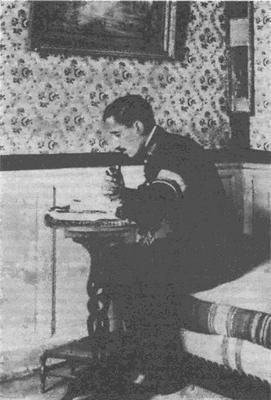
Рис. 26 Лейтенант Жорж Пэйнвин Сунь Цзы, автор «Искусства войны», руководства по военной стратегии, датированное четвертым веком до н. э., говорил, что: «… нет дел более близких, чем со шпионами; нет наград более щедрых, чем даваемые шпионам; нет дел более секретных, чем касающиеся шпионов». Французы были пылкими приверженцами слов Сунь Цзы, и, оттачивая свое криптоаналитическое мастерство, они разработали также несколько вспомогательных методов по перехвату радиопередач противника, методов, для которых не требовалось выполнения дешифрования. Так, например, французские посты подслушивания и перехвата информации научились распознавать радистов по
почерку. После того как сообщение зашифровано, оно передается кодом Морзе, в виде серии точек и тире, и каждый радист может быть опознан по скорости передачи, паузам и пот относительной длительности точек и тире. Почерк радиста равносилен манере написания рукописного текста. Помимо постов подслушивания и перехвата радиограмм французы установили шесть радиопеленгаторных станций, с помощью которых можно было определить, откуда поступала каждая радиограмма. Для этого вращают антенну станции до тех пор, пока мощность входящего сигнала будет максимальной; направление антенны и будет указывать, откуда идет сигнал. По данным о направлении от двух или большего количества станций можно точно определить место, из которого ведет передачу противник. Имея сведения о почерке радиста и данные радиопеленгации, можно было установить место дислокации, допустим, Определенного батальона. После этого французская разведка могла проследить его маршрут движения за несколько последних дней и дать предварительное заключение о пункте назначения и о задачах, поставленных перед данным батальоном. Такой вид сбора разведывательных данных был особенно ценен после введения в действие нового шифра. Каждый новый шифр на какое-то время делал криптоаналитиков беспомощными, но даже если сообщение нельзя было дешифровать, оно все же могло дать определенную информацию посредством проведения анализа перемещения вражеских подразделений.
Бдительность французов резко контрастировала с отношением к криптографии немцев, которые вступили в войну не имея у себя военного криптографического бюро. Лишь в 1916 году они создали Abhorchdienst организацию, которая занималась перехватом сообщений союзников
[13]. Отчасти причина, почему Abhorchdienst была учреждена с таким опозданием, заключалась в том, что немецкая армия вторглась на территорию Франции на раннем этапе войны.
Французы, отступая, уничтожали наземные линии связи, вынуждая наступающие немецкие войска пользоваться радиосвязью. Это дало французам возможность постоянно получать перехваты немецких сообщений, в то время как немцы перехватывать французские сообщения не могли. Поскольку французы отступали по своей территории, они могли пользоваться своими наземными линиями связи и в использовании радио не было необходимости. А в отсутствии радиосообщений возможности осуществлять большое количество перехватов у немцев не было, и поэтому еще два года военных действий вопрос создания своего криптографического подразделения их не волновал.
Важный вклад в развитие криптоанализа союзников внесли также англичане и американцы. Превосходство дешифровальщиков союзников и их влияние на ход Первой мировой войны лучше всего иллюстрируется дешифровкой немецкой телеграммы, перехваченной англичанами 17 января 1917 года. История этой дешифровки показывает, как криптоанализ может повлиять на ход войны на самом высочайшем уровне, и демонстрирует возможные ужасающие последствия использования недостаточной криптографической защиты. Дешифрованная телеграмма вынудила Америку за несколько недель пересмотреть свою политику нейтралитета, изменив, тем самым, баланс сил в войне.
Невзирая на обращения политиков Англии и Америки, президент Вудро Вильсон первые два года войны был непреклонен, отказываясь отправить американские войска в поддержку союзников. Помимо того, что он не желал приносить в жертву молодежь своей страны на кровавых полях сражений Европы, президент был убежден, что война может быть закончена только путем переговоров, и считал, что сможет лучше послужить миру, если не будет участвовать в войне, а будет действовать в качестве посредника. В ноябре 1916 года у Вильсона появилась надежда на проведение мирных переговоров, когда на должность министра иностранных дел Германии был назначен Артур Циммерман, веселый, общительный гигант, который представлялся провозвестником новой эпохи просвещенной германской дипломатии. Американские газеты выходили под заголовками «НАШ ДРУГ ЦИММЕРМАН» и «ЛИБЕРАЛИЗАЦИЯ ГЕРМАНИИ», а в одной из статей он был провозглашен как «один из самых благоприятных предвестников будущих немецко-американских отношений». Однако, о чем не было известно американцам, у Циммермана не было намерения стремиться к миру. Напротив, он замышлял расширение военной агрессии Германии.
Еще в 1915 году немецкая подводная лодка из подводного положения потопила океанский лайнер «Лузитания»; при этом утонули 1198 пассажиров, в том числе 128 граждан США. Потеря «Лузитании» заставила бы Америку вступить в войну, если бы не заверения Германии, что впредь перед атакой подводные лодки будут всплывать на поверхность, — ограничительная мера, предназначенная для того, чтобы случайно не атаковать гражданские суда. Однако 9 января 1917 года на крайне важном совещании в немецком замке Плес, где присутствовал Циммерман, члены Верховного командования старались убедить кайзера, что настало время отказаться от своего обещания и вступить на путь неограниченной подводной войны. Немецкие командующие знали, что их подводные лодки практически неуязвимы, если торпеды выпускались из-под воды, и полагали, что это окажет решающее значение на исход войны. Германия создала флот из двухсот подводных лодок, и члены Верховного командования приводили доводы в пользу того, что боевые действия подводных лодок, ведущиеся безо всяких ограничений, позволят перерезать морские пути снабжения Англии и взять ее измором не позднее, чем через шесть месяцев.
Нужна была быстрая победа. Неограниченная подводная война и то, что при этом неизбежно будут топиться американские пассажирские суда, почти неизбежно заставит Америку объявить войну Германии. Понимая это, Германия должна была заставить союзников капитулировать прежде, чем Америка сможет мобилизовать свои войска и вмешаться в ход событий в Европе. К концу совещания в Плесе кайзера убедили в том, что быстрая победа достижима, и он подписал приказ о возобновлении неограниченной подводной войны, который вступал в силу 1 февраля.
За три оставшиеся недели Циммерман придумал способ подстраховаться. Если вследствие ведения неограниченной подводной войны возрастет вероятность того, что Америка вступит в войну, то у Циммермана был наготове план, который бы отсрочил и ослабил участие Америки в европейских событиях и который смог бы даже полностью помешать этому. По замыслу Циммермана, следовало заключить союз с Мексикой и убедить президента Мексики вторгнуться в Америку и потребовать обратно свои бывшие территории Техас, Нью-Мексико и Аризону. А Германия поддержит Мексику в борьбе против общего противника, предоставив ей финансовую и военную помощь.
Более того, Циммерман хотел, чтобы президент Мексики выступил в качестве посредника, склонив Японию к нападению на Америку. Тем самым Германия смогла бы угрожать восточному побережью Америки, Япония бы напала с запада, а Мексика бы вторглась с юга. Основной замысел Циммермана заключался в том, чтобы создать для Америки такие проблемы, чтобы она не смогла послать войска в Европу.
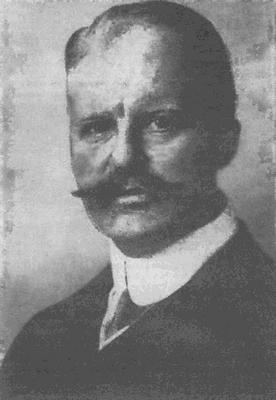
Рис. 27 Артур Циммерман Таким образом Германия смогла бы выиграть сражение на море, выиграть войну в Европе, а затем выйти из американской кампании. 16 января Циммерман изложил свои предложения в телеграмме немецкому послу в Вашингтоне, который должен был отправить ее немецкому послу в Мехико, а тот — вручить президенту Мексики. На рисунке 28 показана телеграмма в зашифрованном виде; содержание телеграммы следующее:
Начало неограниченной войны подводных лодок намечено на первое февраля. Несмотря на это приложим все усилия, чтобы Соединенные Штаты остались нейтральными. Если этого сделать не удастся, мы предложим Мексике союз на следующих условиях: совместное ведение войны, совместное заключение мира, щедрую финансовую помощь и согласие с нашей стороньц чтобы Мексика вновь заняла ранее потерянные ею территории в Техасе, Нью-Мексике и Аризоне. Урегулирование деталей — на Ваше усмотрение.
Как только начало войны с Соединенными Штатами станет неизбежным, Вам надлежит возможно более секретно довести вышеизложенное до сведения президента [Мексики] и предложить ему, чтобы он от своего имени призвал Японию £ безотлагательному участию и одновременно выступил посредником между Японией и нами.
Пожалуйста, разъясните президенту, что неограниченные действия наших подводных лодок дают возможность в течение несколько месяцев вынудить Англию заключить мир. Подтвердите получение.
Циммерман
Циммерман должен был зашифровать свою телеграмму, поскольку Германия знала, что союзники перехватывают все ее трансатлантические сообщения, — таков был результат первого наступательного действия Британии в этой войне. В первый же день Первой мировой войны английский корабль «Телкония» под покровом темноты — еще не наступил рассвет — подошел к немецкому побережью, стал на якорь и вытянул на поверхность связку подводных кабелей. Это были трансатлантические кабели Германии, связывающие ее с остальным миром. К тому моменту, как взошло солнце, все они были перерезаны. Этот диверсионный акт был направлен на то, чтобы уничтожить самые безопасные средства связи, вынуждая немцев использовать для передачи сообщений ненадежную радиосвязь или кабели, принадлежащие другим странам. Циммерману пришлось отослать свою зашифрованную телеграмму через Швецию и продублировать ее по более прямому, но принадлежащему Америке кабелю. И в первом, и во втором случае телеграмма шла через Англию, а это означало, что текст телеграммы Циммермана, как только о ней станет известно, попадет в руки англичан.
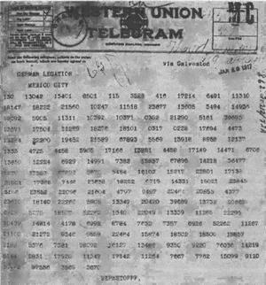
Рис. 28 Телеграмма Циммермана в том виде, в котором она была отправлена фон Бернсторфом, германским послом в Вашингтоне, Экхардту, германскому послу в Мехико. Перехваченная телеграмма была немедленно передана в «комнату 40» — бюро шифров Адмиралтейства, названное так по номеру кабинета, в котором оно первоначально располагалось. «Комната 40» представляла собой удивительное сочетание лингвистов, специалистов по классической филологии и заядлых любителей загадок и головоломок, способных разрешить самые затейливые и замысловатые проблемы криптоанализа. К примеру, преподобный отец Монтгомери, талантливый переводчик немецких теологических работ, сумел расшифровать послание, скрытое в почтовой открытке, адресованной сэру Генри Джонсу и отправленной по адресу: 184, Кингз Роуд, Тьенабрюэйх, Шотландия.
Открытка была отправлена из Турции, поэтому сэр Генри полагал, что она была от его сына, попавшего в плен к туркам. Он, однако, был немало озадачен тем, что на открытке ничего не было написано, да и адрес был весьма необычный — деревушка Тьенабрюэйх была настолько крошечной, что на домах не было номеров и в ней не было улицы Кингз Роуд. В конце концов, преподобный отец Монтгомери разгадал скрытый смысл сообщения открытки. Адрес открытки указывал на «Третью книгу царств Ветхого Завета», глава 18, стих 4: «…и когда Иезавель истребляла пророков Господних, Авдий взял сто пророков, и скрывал их, по пятидесяти человек, в пещерах, и питал их хлебом и водою»
[14]. Сын сэра Генри просто заверял свою семью, что те, у кого он находится в плену, хорошо о нем заботятся.
Когда зашифрованная телеграмма Циммермана поступила в «комнату 40», ее дешифрование было поручено Монтгомери и Найджелу де Грею, издателю, временно откомандированному из издательства Уильям Хайнеманн. Они сразу же поняли, что столкнулись с шифром, применяемым для исключительно важной дипломатической переписки, и безотлагательно принялись за телеграмму. Дешифрование было далеко не простым делом, но они воспользовались ранее проведенным анализом других телеграмм, зашифрованных схожим образом. Через несколько часов оба дешифровальщика сумели восстановить несколько фрагментов текста, достаточных, чтобы понять, что у них в руках сообщение чрезвычайной важности. Монтгомери и Де Грей продолжали упорно трудиться над задачей и к концу дня уже сумели понять основную идею Циммермана. Они осознавали ужасающие последствия неограниченной подводной войны, но в то же время могли видеть, что немецкий министр иностранных дел поддерживал нападение на Америку, что, по его мнению, заставит президента Вильсона отказаться от политики нейтралитета. В телеграмме содержались смертельные угрозы, но не исключалась также и возможность присоединения Америки к союзникам.
Монтгомери и де Грей вручили частично дешифрованную телеграмму адмиралу сэру Уильяму Холлу, начальнику разведывательного управления ВМС, в полной уверенности, что тот передаст информацию американцам и тем самым втянет их в войну. Но адмирал Холл просто положил полученный от них документ в сейф, поручив криптоаналитикам продолжать работу, заполняя оставшиеся пропуски. Он не хотел передавать американцам не до конца дешифрованный текст, поскольку тот мог содержать еще какую-либо жизненно важную информацию. Его также беспокоила еще одна мысль, таящаяся в глубине сознания.
Если бы англичане передали американцам дешифрованную телеграмму Циммермана и американцы отреагировали бы, публично осудив германскую агрессию, тогда противник смог бы догадаться, что его метод шифрования раскрыт, и это заставило бы его заняться разработкой новой, более стойкой системы шифрования, перекрыв тем самым жизненно важный канал поступления информации. В любом случае Холл понимал, что подводная война без правил начнется не позднее, чем через две недели, что само по себе может оказаться достаточным, чтобы вынудить президента Вильсона объявить войну Германии. Не было никакого смысла рисковать ценным источником информации, если так или иначе, но будет получен желаемый результат.
Первого февраля, согласно приказу кайзера, Германия перешла к боевым действиям на море без соблюдения каких-либо международных норм — к неограниченной подводной войне. Второго февраля Вудро Вильсон собрал кабинет, чтобы принять решение о том, каким будет ответ Америки. Третьего февраля он выступил перед Конгрессом и объявил, что Америка останется нейтральной, действуя в качестве миротворца, а не воюющей стороны. Этого не ожидали ни союзники, ни немцы. Нежелание Америки присоединиться к союзникам не оставило адмиралу Холлу выбора; теперь он должен был использовать телеграмму Циммермана.
Через две недели после того, как Монтгомери и де Грей впервые связались с Холлом, они завершили дешифрование. К тому времени Холл понял, каким образом сделать так, чтобы у немцев не возникло подозрений о том, что их шифр отныне не обеспечивает безопасности. Он выяснил, что фон Бернсторф, немецкий посол в Вашингтоне, отправил сообщение фон Экхардту, немецкому послу в Мексике, вначале внеся в сообщение отдельные незначительные изменения. Так, фон Бернсторф убрал инструкции, предназначенные только для него, и изменил адрес. После чего фон Экхардт вручил уже этот измененный вариант телеграммы, не расшифровывая ее, президенту Мексики. Если бы Холл смог каким-нибудь образом заполучить этот мексиканский вариант телеграммы Циммермана, то этот вариант можно было бы напечатать в газетах, и немцы посчитали бы, что телеграмма была выкрадена у мексиканского правительства, а не перехвачена и дешифрована англичанами, когда шла в Америку. Холл связался с английским агентом в Мексике, известным только как «мистер X», который, в свою очередь, был внедрен в мексиканскую телеграфную компанию. Мистер X сумел получить именно то, что было необходимо: мексиканский вариант телеграммы Циммермана.
Это был именно тот вариант телеграммы, который Холл передал Артуру Бальфуру, министру иностранных дел Британии. 23 февраля Бальфур вызвал американского посла Уолтера Пейджа и ознакомил его с телеграммой Циммермана, позднее назвав это «самым драматическим моментом в моей жизни». Четырьмя днями позже президент Вильсон получил «убедительное свидетельство», как он назвал это, того, что Германия поощряет прямую агрессию против Америки.
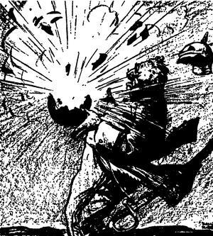
Рис. 29 «Взрыв в его руках», карикатура Роллина Кирби, опубликованная 3 марта 1917 года в «Таймс». Телеграмма была роздана журналистам для опубликования, и американский народ наконец-то осознал реальность замыслов Германии. Хотя у простых людей Америки почти не было сомнений, что они должны применить ответные меры, но в администрации США имелись определенные опасения, что телеграмма может оказаться фальшивкой, изготовленной англичанами, чтобы гарантировать вступление Америки в войну. Однако вскоре вопрос о подлинности, после того, как Циммерман публично признал свое авторство, был снят. На пресс-конференции в Берлине, без какого-либо давления извне, он просто заявил: «Я не могу отрицать этого. Это правда».
В Германии министерство иностранных дел начало расследование, как американцы получили телеграмму Циммермана. Они попались на уловку адмирала Холла и пришли к заключению, что «разнообразные признаки указывают, что предательство было совершено в Мексике». Тем временем Холл продолжал отвлекать внимание от работы британских криптоаналитиков. Он умышленно подбросил британской прессе материал, в котором критиковалась его собственная организация за то, что она не смогла перехватить телеграмму Циммермана, что, в свою очередь, привело к появлению лавины статей с нападками на британскую секретную службу и восхвалением американцев.
В начале года Вильсон сказал, что вести его народ к войне было бы «преступлением против цивилизации», но ко второму апреля 1917 года он изменил свое мнение: «Я сообщаю, что Конгресс объявил, что нынешний курс Имперского правительства является фактически ничем иным, как войной против правительства и народа Соединенных Штатов, и что он официально утвердил статус «в состоянии войны», который был нам навязан». Там, где три года интенсивной дипломатии потерпели неудачу, одно-единственное достижение криптоаналитиков «комнаты 40» принесло успех. Барбара Такман, американский историк и автор «The Zimmermann Telegram», дала следующий анализ:
Если бы телеграмма никогда не была перехвачена или никогда не напечатана, немцы все равно сделали бы что-нибудь еще, что в конце концов втянуло бы нас в войну. Но было уже поздно, и если бы мы задержались еще немного, союзники могли бы оказаться вынуждены пойти на переговоры. Вот до какой степени телеграмма Циммермана изменила ход истории… Сама по себе телеграмма Циммермана — всего лишь камешек на длинном пути истории. Но камнем можно убить Голиафа, и этот камень разрушил американскую иллюзию, что мы можем успешно заниматься своим делом независимо от других государств и народов. В мировом масштабе это была незначительная интрига министра Германии. В жизни американского народа это был конец невинности.
Святой Грааль криптографии
Первая мировая война продемонстрировала ряд побед криптоаналитиков; венцом стало дешифрование телеграммы Циммермана. С момента взлома шифра Виженера в девятнадцатом веке криптоаналитики постоянно одерживали верх над криптографами.
Но к концу войны, когда криптографы пребывали в полном отчаянии, ученые в Америке сделали поразительное открытие. Они обнаружили, что шифр Виженера может быть использован в качестве основы для нового, гораздо более труднопреодолимого вида шифрования. На самом деле этот новый шифр мог обеспечить абсолютную стойкость.
Основная слабость шифра Виженера заключается в том, что ему присуща периодичность. Если длина ключевого слова составляла пять букв, то каждая пятая буква открытого текста шифровалась с использованием одного и того же шифралфавита. Если криптоаналитик мог определить длину ключевого слова, то с зашифрованным текстом можно было поступать как с набором пяти одноалфавитных шифров, и каждый из них мог быть дешифрован с помощью частотного анализа. Посмотрим, однако, что произойдет по мере увеличения длины ключевого слова.
Допустим, что у нас есть открытый текст, состоящий из 1 000 букв и зашифрованный с помощью шифра Виженера; проведем криптоанализ имеющегося шифртекста. Если длина ключевого слова, используемого для шифрования открытого текста составляет всего 5 букв, то на завершающем этапе криптоанализа потребуется провести частотный анализ 5 наборов из 200 букв, что не представляеттруда. Но если ключевое слово состоит из 20 букв, то на завершающем этапе необходимо будет провести частотный анализ 20 наборов из 50 букв, что уже значительно сложнее. Если же ключевое слово состоит из 1000 букв, то вы столкнетесь с тем, что придется провести частотный анализ 1000 наборов, каждый из которых состоит из 1 буквы, что совершенно невыполнимо. Другими словами, если длина ключевого слова (или ключевой фразы) совпадает с длиной сообщения, то криптоаналитический метод, разработанный Бэббиджем и Касиски не работает.
Так что когда применяется ключ той же длины, что и сообщение, то все хорошо и прекрасно, правда, это требует от криптографа создания длинного ключа. Так что если сообщение состоит из сотен букв, то и длина ключа также должна составлять сотни букв. Однако чем придумывать длинный ключ, невольно напрашивается мысль использовать в качестве него, ну, скажем, лирическое стихотворение. Или же криптограф может приобрести книгу по ловле птиц и создать ключ на основе нескольких случайно выбранных названий птиц. Но такие упрощенные ключи по своей сути порочны.
В следующем примере я зашифровал отрывок текста с помощью шифра Виженера, используя ключевую фразу такой же длины, что и сообщение. Применение любых методов криптоанализа, о которых я писал раньше, окажется безуспешным. Но сообщение все же можно дешифровать.
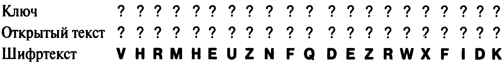
Этот новый способ криптоанализа начинается с предположения, что в шифртексте содержатся общеупотребительные слова, к примеру,
the. Далее, как показано ниже, мы произвольным образом подставляем
the в различные места в открытом тексте и определяем, какими должны быть буквы ключа, чтобы преобразовать
the в соответствующий шифртекст. Итак, мы решили, что
the будет являться первым словом открытого текста. Первая буква ключа будет зашифровывать
t в
V. Чтобы определить первую букву ключа, возьмем квадрат Виженера и будем двигаться сверху вниз по столбцу, начинающемуся с буквы
t, пока не дойдем до
V; буква, с которой начинается эта строка —
С. Повторим этот процесс для
h и
е, которые были зашифрованы как
Н и
R соответственно; в конечном счете мы получим возможные значения первых трех букв ключа —
CAN. Все это получено в предположении, что слово
the является первым словом открытого текста. Подставим
the в несколько других мест и вновь поищем соответствующие буквы ключа. (Вы можете проверить соответствие между каждой буквой открытого текста и буквой шифртекста, обратившись к квадрату Виженера в таблице 9.)
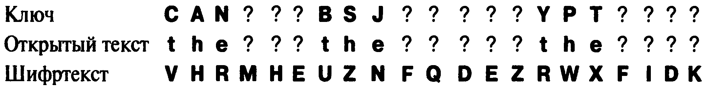
Мы проверили три слова
the в трех произвольно выбранных местах шифртекста и выдвинули три предположения относительно элементов определенных частей ключа. Можем ли мы сказать, что какое-нибудь из слов
the стоит в нужном месте? Мы предполагаем, что ключ состоит из осмысленных слов; попробуем использовать это в наших целях. Если
the стоит не на своем месте, то это приведет, скорее всего, к тому, что ключ будет состоять из хаотичного набора букв. Если же оно стоит в нужном месте, то буквы ключа должны иметь какой-то смысл. Например, первое
the дает буквы ключа
CAN, что обнадеживает, поскольку это вполне нормальный английский слог. Так что возможно, что это слово the стоит на своем месте. Второе
the дает
BSJ, — весьма странное сочетание согласных, что позволяет предположить, что второе
the, скорее всего, неверно. Для третьего
the получается
YPT, — редко встречающийся слог, но ею все же стоит проверить. Если
YPT действительно является частью ключа, то оно должно находиться внутри более длинного слова; такими словами могут быть только
APOCALYPTIC,
CRYPT и
EGYPT и производные от этих слов. Как мы сможем определить, является ли одно из этих слов частью ключа?
Мы может проверить каждое предположение, подставляя все эти три слова в ключ над соответствующим куском шифртекста и находя соответствующий открытый текст:
Если слово не является частью ключа, то, скорее всего, это опять-таки приведет к тому, что фрагмент открытого текста будет состоять из хаотичного набора букв; если же оно является частью ключа, то получающийся открытый текст должен иметь определенный смысл. При использовании в качестве части ключа слова
APOCALYPTIC, получающийся открытый текст состоит из абсолютно бессмысленного набора букв. При использовании в качестве части ключа слова
CRYPT, в открытом тексте получается
cithe, что, в общем-то, не является невозможным куском открытого текста. Однако если в качестве части ключа использовать
EGYPT, то при этом получается
atthe — более обещающая комбинация букв, которая, видимо, представляет собой слова
at the.
Предположим пока, что скорее всего в качестве части ключа используется
EGYPT. Возможно, что в качестве ключа используется перечень стран. А это означает, что
CAN, часть ключа, которая соответствует первому
the, является началом слова
CANADA. Мы можем проверить эту гипотезу, предполагая, что
CANADA, как и
EGYPT, являются частями ключа, если откроем бóльший фрагмент открытого текста:
Похоже, что наше предположение имеет смысл.
CANADA означает, что открытый текст начинается с
themee, что, по-видимому, является началом
the meeting. Теперь, когда мы определили новые буквы открытого текста,
ting, мы можем найти соответствующую им часть ключа; это будет
BRAZ, которое, несомненно, является началом слова
BRAZIL. Используя в качестве ключа комбинацию
CANADABRAZILEGYPT, мы получим следующее:
the meeting is at the????. Чтобы найти завершающее слово открытого текста — место встречи, — лучше всего завершить составление ключа путем проверки перебором названий всех возможных стран, оценивая получающийся при этом открытый текст. Осмысленный открытый текст получается только в случае, когда конечным элементом ключа будет слово
CUBA:
Таблица 9 Квадрат Виженера. Поэтому для обеспечения стойкости недостаточно, чтобы ключ имел такую же длину, что и само сообщение. В приведенном выше примере уязвимость возникла из-за того, что ключ был создан из смысловых слов. Мы начали с того, что стали случайным образом подставлять слово
the в открытый текст и определять соответствующие буквы ключа. Мы могли с уверенностью сказать, когда
the попадает на надлежащее место, потому что буквы ключа в этом случае приобретали вид части смысловых слов. После чего мы использовали эти фрагменты в ключе, чтобы определить слова целиком. А это, в свою очередь, давало нам больше кусков в тексте, из которых мы могли составить целые слова, и так далее. Весь этот процесс переходов вперед-назад между сообщением и ключом оказался возможен только потому, что у ключа была определенная внутренняя структура и он состоял из слов, которые можно было распознать. Однако в 1918 году криптографы начали экспериментировать с ключами, которые были лишены структуры. В результате получился невзламываемый шифр.
Когда Первая мировая война уже приближалась к концу, майор Джозеф Моборн, руководитель криптографического исследовательского подразделения армии США, ввел понятие случайного ключа, т. е. такого ключа, который состоит не из распознаваемого набора слов, а из случайной комбинации букв. Он высказывался за применение таких случайный ключей, используемых как часть шифра Виженера, для обеспечения беспрецедентной степени стойкости. Первым этапом в системе Моборна была подготовка толстого блокнота, состоящего из сотен бумажных листов; на каждом листе находится уникальный ключ в виде случайной последовательности строчек букв. Подготавливаются два экземпляра блокнота, один для отправителя, а второй — для получателя. Чтобы зашифровать сообщение, отправитель применял шифр Виженера, пользуясь первым листом блокнота в качестве ключа. На рисунке 30 показаны три листа из такого блокнота (на самом деле, на каждом листе содержатся сотни букв) и сообщение, зашифрованное с использованием случайного ключа, находящегося на первом листе. Получатель сможет легко расшифровать шифртекст, пользуясь идентичным ключом и шифром Виженера. После того как сообщение было успешно отправлено, получено и расшифровано, оба — и отправитель, и получатель — уничтожают лист, использованный в качестве ключа, чтобы никогда уже больше им не пользоваться. При шифровании очередного сообщения применяется следующий случайный ключ из блокнота, который в дальнейшем также уничтожался, и так далее. Поскольку каждый лист используется только один раз, эта система известна как
одноразовый шифрблокнот, или
шифрблокнот одноразового назначения[15].
Рис. 30 Три листа из одноразового шифрблокнота, каждый из которых является возможным ключом для шифра. Сообщение зашифровано с помощью листа 1. Шифр из одноразового шифрблокнота свободен от всех вышеозначенных слабостей. Представим, что сообщение
attack the valley at dawn было зашифровано, как показано на рисунке 30, передано по радио и перехвачено противником.
Криптоаналитик противника получает шифртекст и пытается дешифровать его. Первый камень преткновения: по определению в случайном ключе повторений нет, поэтому методом Бэббиджа и Касиски взломать криптографический ключ одноразового использования не удастся. Как вариант, криптоаналитик противника может попытаться подставлять слово
the в различные места текста и определять соответствующий фрагмент ключа, как это делали мы, когда старались дешифровать предыдущее сообщение. Если криптоаналитик попробует поставить
the в начале сообщения, что неверно, тогда соответствующий сегмент ключа будет иметь вид
WXB, иначе говоря, он получит хаотичный набор букв. Если же криптоаналитик подставит
the таким образом, что начало слова будет совпадать с седьмой буквой сообщения, то есть в нужное место, тогда соответствующий сегмент ключа будет иметь вид
QKJ, что также является беспорядочным набором букв. Другими словами, криптоаналитик не сумеет определить, на своем месте стоит пробное слово или нет.
В отчаянии криптоаналитик мог бы даже подумывать о поиске методом полного перебора всех возможных ключей. Шифртекст состоит из 21 буквы, так что криптоаналитик знает, что и ключ также состоит из 21 буквы. Это означает, что следует проверить примерно 500 000 000 000 000 000 000 000 000 000 возможных ключей, что абсолютно неосуществимо ни для человека, ни для механического устройства. Однако даже если криптоаналитик смог бы проверить все эти ключи, то в этом случае возникнет еще более значительная сложность. Проверяя каждый возможный ключ, криптоаналитик, несомненно, обнаружит истинное сообщение, но будут также представлены и все ложные сообщения. Так, например, если применить к предыдущему шифртексту следующий ключ, то получится совершенно иное сообщение:
Если бы мог быть проверен каждый возможный ключ, то при этом будут появляться все мыслимые и немыслимые сообщения длиной в 21 букву, и криптоаналитик не сумел бы отличить истинное сообщение от всех остальных. Этой проблемы не возникло бы, если бы ключ представлял собой набор слов или фразу, поскольку неправильные сообщения почти наверняка будут связаны с не имеющими смысла ключами, а истинное сообщение будет получено при осмысленном ключе.
Стойкость шифра одноразового шифрблокнота целиком и полностью обусловлена случайным характером ключа. Ключ вносит разупорядоченность в шифртекст, и если шифртекст является неупорядоченным, то нет никаких закономерностей, никакой структуры, — ничего, за что мог бы зацепиться криптоаналитик. В действительности можно математически доказать, что криптоаналитик не сможет вскрыть сообщение, зашифрованное с помощью шифра из одноразового шифрблокнота. Другими словами, шифр одноразового шифрблокнота не просто считается невзламываемым, как считался невзламываемым шифр Виженера в девятнадцатом веке,
он на самом деле абсолютно надежен. Одноразовый шифрблокнот гарантирует стойкость — воистину Святой Грааль криптографии.
Наконец-то криптографы нашли невзламываемую систему шифрования. Однако безупречность шифра одноразового шифрблокнота не означает, что поиск обеспечения стойкости на этом закончился: дело в том, что им пользовались крайне редко. Хотя он теоретически и совершенен, но в действительности ему присущи две принципиальные сложности. Во-первых, на практике затруднительно создавать большое количество случайных ключей. В самый обычный день в армии могут передавать и получать сотни сообщений, каждое из тысяч знаков, поэтому радистам потребуется дневной запас ключей, эквивалентный миллионам расположенных в случайном порядке букв. А это исключительно сложная задача — создание такого колоссального количества случайных последовательностей букв.
Ранее некоторые криптографы полагали, что они могут создать огромное количество случайных ключей, наобум печатая на печатной машинке. Однако при этом машинистка (или оператор печатающего устройства) всякий раз стремилась печатать буквы следующим образом: одну букву левой рукой, следующую — правой и так далее, поочередно ударяя по клавишам то на одной, то на другой стороне. Таким способом и в самом деле можно было быстро создать ключ, но получающаяся при этом последовательность обладала структурой и вследствие этого более не являлась случайной — если машинистка ударяла по клавише с буквой D, находящейся на левой части клавиатуры, то следующей буквой, скорее всего, будет буква, находящаяся на правой части клавиатуры. Если же криптографический ключ одноразового использования действительно случаен, то примерно в половине всех случаев за буквой с левой части клавиатуры должна следовать другая буква с левой же части клавиатуры.
Криптографы осознали, что для создания случайного ключа потребуется много времени, сил и средств. Лучшие случайные ключи создаются на основе естественных физических процессов, например, радиоактивности, которая, как известно, действительно имеет случайный характер. Криптограф может взять крупный кусок радиоактивной руды и измерять излучение с помощью счетчика Гейгера. Иногда ионизирующие частицы излучения испускаются одна за одной очень быстро, иногда между отдельными актами испускания проходит довольно длительное время, поэтому время между этими актами есть величина непредсказуемая и случайная. В таком случае криптограф может подсоединить к счетчику Гейгера дисплей, на экране которого в циклическом режиме быстро, но с постоянной скоростью пробегает алфавит, моментально останавливающийся при срабатывании счетчика. Какой бы ни была буква на экране, она может использоваться в качестве очередной буквы случайного ключа. После этого на экране дисплея опять начинается пролистывание алфавита в циклическом режиме до следующего срабатывания счетчика, которое происходит в результате попадания в него ионизирующей частицы; замершая на экране буква добавляется к ключу, и процесс идет далее. Такое устройство гарантированно создавало бы действительно случайный ключ, но оно непригодно для повседневной криптографии.
Даже если бы вы смогли создать достаточно случайные ключи, то возникла бы еще одна проблема: сложность их распределения. Представьте себе район боевых действий, где сотни радистов составляют единую коммуникационную сеть. Для начала все они должны иметь идентичные экземпляры одноразового шифрблокнота. Затем, когда подготовлены новые шифрблокноты, их необходимо одновременно передать всем. Наконец, все должны быть уверены, что нужный лист одноразового шифрблокнота используется в нужное время. При широком применении одноразовых шифрблокнотов на поле боя будет просто столпотворение курьеров и писарей. Более того, если противник захватит хотя бы один комплект ключей, то надежность всей коммуникационной системы будет нарушена.
Представляется соблазнительным сократить усилия на подготовку и распределение ключей путем повторного использования одноразовых шифрблокнотов, но это смертный грех криптографии.
Повторное использование одноразового шифрблокнота позволит криптоаналитику противника легко дешифровать сообщения. Принцип, с помощью которого вскрываются два фрагмента шифртекста, зашифрованного одним и тем же криптографическим ключом одноразового использования, объясняется в Приложении G, но пока следует запомнить, что в использовании одноразового шифрблокнота нельзя делать никаких упрощений. Для каждого сообщения отправитель и получатель должны использовать новый ключ.
Одноразовый шифрблокнот полезен только тем, кому нужна сверхнадежная связь и кто может позволить себе заплатить огромную цену за создание и надежное распределение ключей. Например, безопасность телефонной «горячей линии» между президентами России и Америки обеспечивается посредством использования одноразового шифрблокнота.
Практические недостатки теоретически совершенного одноразового шифрблокнота означали, что идею Моборна никогда не удастся применить в разгаре сражения. По окончании Первой мировой войны и всех криптографических неудач продолжался поиск практичной системы, которую можно было бы применить в следующем конфликте. К радости криптографов это продолжалось недолго; вскоре они совершили прорыв, благодаря которому была восстановлена надежность связи на поле сражения. Чтобы упрочить свои шифры, криптографы, для обеспечения криптостойкости при зашифровывали сообщений, были вынуждены отказаться от использования бумаги и карандаша и применять самые последние достижения.
Усовершенствование шифровальных машин — от шифровальных дисков до «Энигмы»
Самым первым криптографическим устройством был шифровальный диск, придуманный в пятнадцатом веке итальянским архитектором Леоном Альберти, одним из отцов многоалфавитного шифра. Он взял два медных диска, один чуть шире другого, и нанес алфавит по краям обоих дисков. Поместив меньший диск сверху диска большего размера и скрепив их иглой, действующей как ось, он получил шифровальный диск, который показан на рисунке 31. Оба эти диска могут вращаться независимо друг от друга, так что оба алфавита могут занимать различное положение друг относительно друга и тем самым использоваться для зашифровывания сообщения с помощью простого шифра Цезаря. Например, чтобы зашифровать сообщение шифром Цезаря со сдвигом на одну позицию, установите
А на наружном диске напротив
В на внутреннем; наружный диск будет алфавитом открытого текста, а внутренний диск будет представлять шифралфавит. На наружном диске ищется буква из открытого текста сообщения, а соответствующая буква с внутреннего диска записывается как часть шифртекста. Чтобы зашифровать сообщение шифром Цезаря со сдвигом на пять позиций, просто поверните диски так, чтобы
А на наружном диске стояла напротив
Р на внутреннем, а затем пользуйтесь шифровальным диском в этом новом положении.
Рис. 31 Шифровальный диск, применявшийся конфедератами во время Гражданской войны в США. Даже при том, что шифровальный диск был исключительно простым приспособлением, он существенно облегчил процесс шифрования и широко использовался целых пять столетий. На рисунке 31 приведен вариант конструкции шифровального диска, который применялся в Гражданской войне в США. На рисунке 32 показан кодограф — шифровальный диск
капитана Миднайта, одноименного героя одной из первых американских радиопостановок. Слушатели программы могли получить собственный кодограф, написав организаторам программы — компании Ovaltine — и приложив этикетку от одной из упаковок. Время от времени программы заканчивались секретным сообщением от капитана Миднайта, которое могло быть расшифровано радиослушателями с помощью кодографа.
Рис. 32 Кодограф Капитана Миднайта, который зашифровывал каждую букву открытого текста (наружный диск) в виде числа (внутренний диск), а не буквы. Шифровальный диск может рассматриваться как «скремблер», который берет каждую букву открытого текста и преобразует ее в некую другую букву. При том способе применения шифровального диска, который мы рассматривали до сих пор, взломать получающийся шифр довольно просто, однако существует возможность использования шифровального диска и более сложным образом. Его изобретатель, Альберти, предложил менять установку диска во время подготовки сообщения, что фактически означает применение многоалфавитного шифра вместо одноалфавитного. Так, чтобы зашифровать слово
goodbye с помощью ключевого слова
LEON, Альберти мог бы поступить следующим образом. Он бы начал с того, что установил диск по первой букве ключевого слова, совместив букву
А на наружном диске с буквой
L на внутреннем. Далее он бы зашифровал первую букву сообщения,
g, отыскав ее на наружном диске и отметив соответствующую ей букву на внутреннем диске,
R. Затем, чтобы зашифровать вторую букву сообщения, он бы установил диск по второй букве ключевого слова, совместив букву А на наружном диске с буквой
Е на внутреннем. После чего зашифровал бы букву
о, найдя ее на наружном диске и отметив соответствующую ей букву на внутреннем диске,
S. Процесс шифрования продолжается: шифровальный диск последовательно устанавливается по буквам ключа —
О, затем N, вслед за этим снова на
L и так далее. Фактически Альберти зашифровал бы сообщение с помощью шифра Виженера, где в качестве ключевого слова использовалось его первое имя. Но если сравнивать с квадратом Виженера, то шифровальный диск ускоряет процесс зашифровывания и уменьшает количество ошибок.
При таком применении шифровального диска существенным является то, что способ шифрования меняется в процессе зашифровывания. Хотя из-за этого дополнительного усложнения взломать шифр труднее, но оно все же не делает его невзламываемым, поскольку здесь мы имеем дело просто с механизированным вариантом шифра Виженера; шифр же Виженера был взломан Бэббиджем и Касиски. Однако спустя пять столетий реинкарнация шифровального диска, придуманного Альберти, в более усложненном виде привела к появлению нового поколения шифров, взломать которые было на порядок сложнее, чем любой из ранее используемых.
В 1918 году немецкий изобретатель Артур Шербиус и его близкий друг Ричард Рйттер основали компанию Шербиус-энд-Риттер, конструкторскую фирму, которая занималась всем — от турбин до подушек с подогревом. Шербиус отвечал за проведение исследований и конструкторских работ и постоянно изыскивал новые возможности. Один из лелеемых им замыслов заключался в замене несовершенных систем криптографии, применявшихся в Первой мировой войне, когда обменивались шифрами, подготовленными вручную карандашом на бумаге, способом шифрования, в котором применялась бы технология двадцатого века. Изучив электротехнику в Ганновере и Мюнхене, он разработал криптографическое устройство, которое являлось по сути электрическим вариантом шифровального диска Альберти. Под названием «Энигма» изобретение Шербиуса станет самой грозной системой шифрования в истории.
«Энигма» Шербиуса состояла из ряда остроумно выполненных деталей, которые он соединил в огромную и сложную шифровальную машину. Однако если мы разберем машину на комплектующие и поэтапно станем воссоздавать ее заново, то станут понятны ее основные принципы. Основой изобретения Шербиуса являются три соединенных проводами узла: клавиатура для ввода каждой буквы открытого текста, шифратор, который зашифровывает каждую букву открытого текста в соответствующую букву шифртекста, и индикаторное табло, состоящее из различных ламп для высвечивания букв шифртекста. На рисунке 33 показана стилизованная конструкция машины, ограниченная, для простоты, алфавитом, содержащим шесть букв. Чтобы зашифровать букву открытого текста, оператор нажимает на клавиатуре клавишу с нужной буквой открытого текста, которая посылает электрический импульс через центральный шифратор на противоположную сторону, где на панели с лампочками высвечивается соответствующая буква шифртекста.
Рис. 33 Упрощенный вариант «Энигмы» с алфавитом, состоящим всего из шести букв. Самым важным элементом машины является шифратор. При наборе на клавиатуре буквы b ток поступает в шифратор, проходит по проводам внутри него, а затем зажигает лампочку А. Короче говоря, b зашифровывается как А. Справа в прямоугольнике показано, как зашифровывается каждая из шести букв. Шифратор, толстое колесо из резины, пронизанное проводами, является важнейшей частью машины. Провода с клавиатуры входят в шифратор в шести точках, затем несколько раз изгибаются и выходят в шести точках на другой стороне. То, как провода идут внутри шифратора, и определяет, как будут зашифровываться буквы открытого текста. Например, при таком расположении проводов, которое показано на рисунке 33:
при наборе
а будет высвечиваться буква
В, которая означает, что
а зашифрована как
В,
при наборе
b будет высвечиваться буква
А, которая означает, что
b зашифрована как
А,
при наборе с будет высвечиваться буква
D, которая означает, что
с зашифрована как
D,
при наборе
d будет высвечиваться буква
F, которая означает, что
d зашифрована как
F,
при наборе
е будет высвечиваться буква
Е, которая означает, что
е зашифрована как
Е,
при наборе
f будет высвечиваться буква
С, которая означает, что
f зашифрована как
С.
Сообщение
cafe будет зашифровано как
DBCE. По сути, при данной базовой схеме шифратор определяет шифралфавит, и в машине применяется простой одноалфавитный шифр замены.
Однако идея Шербиуса заключалась в том, чтобы после того, как очередная буква будет зашифрована, шифрующий диск автоматически поворачивался на
1/
6 (или на
1/
26, в случае, если используется алфавит из 26 букв). На рисунке 34 (а) показано то же самое устройство, что и на рисунке 33; и точно так же при наборе буквы
b будет высвечиваться буква
А. Однако на сей раз, сразу же после того, как будет набрана буква и загорится лампочка на панели, шифратор сделает
1/
6 оборота и перейдет в положение, показанное на рисунке 34 (b). Здесь, если еще раз ввести букву
b, загорится уже другая буква —
С. Тотчас же шифратор повернется снова и окажется в положении, показанном на рисунке 34 (с). Теперь уже, если снова набрать букву
b, высветится буква
Е. Вводя букву
b шесть раз подряд, мы получим шифртекст
ACEBDC. Другими словами, шифралфавит меняется после каждого зашифровывания, и способ зашифровывания буквы
b постоянно меняется. Вращающееся шифрующее устройство фактически задает шесть шифралфавитов, и в машине реализуется использование многоалфавитного шифра.
Рис. 34 Каждый раз после того, как на клавиатуре будет набрана и зашифрована буква, шифратор поворачивается на одну позицию, изменяя, тем самым способ, которым может быть зашифрована каждая буква. В (а) шифратор зашифровывает b как А, в (b) шифратор в новом положении зашифровывает b как С. В (с), после поворота на следующую позицию, шифратор зашифровывает b как Е. После того как будут зашифрованы еще четыре буквы и шифратор повернется еще на четыре позиции, он окажется в своем исходном положении. Вращение шифратора является самым важным в конструкции Шербиуса. Однако у машины в данной ситуации есть заведомо слабое место. Если набрать
b шесть раз, то шифратор окажется в исходном положении; при дальнейшем вводе букв
b комбинации символов будут повторяться. Вообще говоря, криптографы всеми силами стремятся избегать повторений, поскольку они приводят к появлению упорядоченности и структуры в шифртексте, что является признаком слабости шифра. Эта проблема может быть частично разрешена за счет использования второго шифрующего диска.
На рисунке 35 дано схематическое изображение шифровальной машины с двумя шифраторами. Поскольку показать трехмерный вид шифратора с трехмерной внутренней разводкой сложно, на рисунке 35 дано только двумерное представление. Всякий раз после зашифровывания буквы первый шифратор поворачивается на одну позицию, то есть на двумерной диаграмме каждая распайка перемещается вниз на одну позицию. В отличии от первого, второй шифрующий диск почти все время остается неподвижным. Он приходит в движение только после того, как первый шифратор совершит полный оборот. У первого шифратора имеется зубец и только когда этот зубец доходит до определенной точки, он поворачивает второй шифратор на одну позицию.
На рисунке 35 (а) первый шифратор находится в положении, когда он готов повернуть второй шифратор. При наборе и зашифровывании очередной буквы первый шифратор поворачивается на одну позицию, заставляя при этом повернуться на одну позицию и второй шифратор (рис. 35 (b). После набора и зашифровывания следующей буквы первый шифратор снова поворачивается на одну позицию (рис. 35 (с), но на сей раз второй шифратор остается неподвижным. Второй шифратор не будет двигаться, пока первый шифратор не совершит полный оборот, что произойдет после набора и зашифровывания еще пяти букв. Такая конструкция напоминает одометр автомобиля — быстрее всего вращается барабанчик, который показывает километры, и когда этот барабанчик сделает полный оборот, достигнув цифры «9», он переведет на одно деление барабанчик, показывающий десятки километров.
Рис. 35 При добавлении второго шифратора комбинации зашифрованных символов не будут повторяться до тех пор, пока не будут зашифрованы все 36 букв, то есть пока оба шифратора не вернутся в исходное положение. Для простоты шифраторы представлены на диаграмме в двухмерном виде: здесь, вместо поворота на один шаг шифратора, на одну позицию вниз смещается распайка. Хотя создается впечатление, что провод (или провода) сверху или снизу шифратора обрывается, но на самом деле его продолжением служит соответствующий провод снизу или сверху этого шифратора. В (а)
b зашифровывается как
D. После зашифровывания первый шифратор поворачивается на одну позицию, заставляя при этом повернуться на одну позицию и второй шифратор; это происходит только раз за один полный оборот первого ротора. Это новое положение показано на (b), где
b зашифровывается как
F. После зашифровывания первый шифратор поворачивается на один шаг, но второй шифратор при этом остается неподвижным. Это новое положение показано на (с), где
b зашифровывается как
В.
Преимущество добавления второго шифратора заключается в том, что комбинации символов не будут повторяться до тех пор, пока второй шифратор не вернется в начальное положение, что потребует шести полных оборотов первого шифратора, то есть зашифровывания 6x6, или 36 букв. Другими словами, существует 36 различных положений шифратора, которые эквивалентны переходам между 36 шифралфавитами. Если же взять полный алфавит, состоящий из 26 букв, то шифровальная машина будет переключаться между 26 х 26, или 676 шифралфавитами. Поэтому объединяя несколько шифраторов (которые иногда называются роторами), можно создать шифровальную машину, которая будет постоянно выполнять переход между различными шифралфавитами.
Оператор набирает определенную букву и, в зависимости от положения шифратора, она может быть зашифрована с помощью любого из сотен шифралфавитов. После этого положение шифратора меняется, так что когда в машину вводится следующая буква, она зашифровывается уже с помощью другого шифралфавита. К тому же все это производится исключительно эффективно и точно благодаря автоматическому перемещению шифраторов и высокой скорости электричества.
Прежде чем приступить к подробному объяснению, как Шербиус предполагал применять свою шифровальную машину, необходимо рассказать еще о двух элементах «Энигмы», которые показаны на рисунке 36. Во-первых, в стандартной шифровальной машине Шербиуса в целях увеличения стойкости использовался третий шифратор; для полного алфавита из 26 букв эти три шифратора дают 26 х 26 х 26, или 17 576 различных положений шифраторов. Во вторых, Шербиус добавил
отражатель. Отражатель, как и шифратор, также представляет собой резиновый диск с проводами внутри, но его отличие от шифратора состоит в том, что он не вращается, а провода входят с одной стороны и затем выходят с той же стороны. Когда отражатель установлен, оператор вводит букву, посылая электрический сигнал через три шифратора. Поступающий в отражатель сигнал отражается и идет обратно через те же три шифратора, но уже по другому пути. Например, для приведенной на рисунке 36 схемы, при вводе с клавиатуры буквы
b сигнал пройдет через три шифратора, попадет в отражатель, отразится и вернется назад к букве
D. На самом деле сигнал попадает не в клавиатуру, как это могло бы показаться из рисунка 36, а поступает на панель с лампочками.
Рис. 36 Конструкция «Энигмы» Шербиуса с третьим шифратором и отражателем, который направляет ток обратно через шифраторы. Для данного расположения ввод с клавиатуры буквы b приведет к загоранию D на панели с лампочками, которая показана рядом с клавиатурой. На первый взгляд кажется бессмысленным добавлять к машине неподвижный отражатель, который не приводит к увеличению количества шифралфавитов. Однако польза от него станет ясна, когда мы будем рассматривать, как же в действительности используется эта машина для шифрования и расшифрования сообщения.
Допустим, оператор хочет отправить криптограмму. Прежде чем приступить к шифрованию, оператор должен вначале повернуть шифраторы, установив их в определенное начальное положение. Существует 17 576 возможных расположений и, соответственно, 17 576 возможных начальных установок. Начальные положения шифраторов будут определять, каким образом зашифровывается сообщение. Мы можем рассматривать «Энигму» как обобщенную шифрсистему, в которой способ зашифровывания определяется начальными установками. Другими словами, начальные установки обуславливают ключ. Начальные установки обычно задаются в шифровальной книге, в которой указаны ключи на каждый день и которая имеется у всех в коммуникационной сети. Для распространения шифровальных книг требуется время и усилия, но поскольку в день нужен только один ключ, то можно, например, предусмотреть рассылку шифровальных книг, содержащих 28 ключей, только один раз в четыре недели. Для сравнения, если бы в войсках пришлось бы применять одноразовые шифрблокноты, то для каждого сообщения требовался бы новый ключ, и задача распределения ключей оказалась бы несоизмеримо сложнее. Как только шифраторы будут установлены в положения, задаваемые ключом текущего дня из шифровальной книги, отправитель может начинать зашифровывание. Он вводит с клавиатуры первую букву сообщения, смотрит, какая буква высвечивается на панели с лампочками, и записывает ее как первую букву шифртекста. Затем, как только первый шифратор автоматически повернется на одну позицию, отправитель вводит вторую букву сообщения и так далее. После того как шифртекст будет полностью подготовлен, он вручается радисту, который передает его получателю сообщения.
Чтобы расшифровать сообщение, получателю необходимо иметь другую «Энигму» и копию шифровальной книги, в которой указаны начальные положения шифраторов на текущий день. Получатель устанавливает машину в соответствии с книгой, набирает букву за буквой шифртекст, и на панели с лампочками считывает открытый текст. Другими словами, отправитель набирал открытый текст, чтобы получить шифртекст, а здесь получатель набирает шифртекст, чтобы получить открытый текст, то есть зашифровывание и расшифровывание являются зеркальными процессами. Простота расшифровывания обеспечивается благодаря отражателю. Из рисунка 36 можно видеть, что вводя с клавиатуры
Ь и двигаясь далее по электрической цепи, мы окажемся у
В. Но точно так же, вводя с клавиатуры
d двигаясь далее по электрической цепи, мы вернемся к
В.
Машина зашифровывает букву открытого текста в букву шифртекста, и до тех пор, пока машина находится в этом же положении, она будет преобразовывать в процессе расшифровывания эту букву шифртекста в первоначальную букву открытого текста.
Ясно, что ни ключ, ни шифровальная книга, в которой он содержится, ни при каких обстоятельствах не должны попасть в руки противника. Вполне может случиться, что противник сумеет заполучить «Энигму», но не зная начальных установок, используемых для зашифровывания, он не сможет дешифровать перехваченное сообщение. Без шифровальной книги криптоаналитик противника должен проверять все возможные ключи, что означает перебор всех 17 576 возможных начальных установок шифраторов. Доведенный до отчаяния криптоаналитик должен будет установить шифраторы на захваченной «Энигме» в некотором положении, ввести короткий фрагмент шифртекста, и посмотреть, будет ли на выходе какой-нибудь осмысленный текст. Если нет, то он должен изменить положение шифраторов и повторить попытку еще раз. Если криптоаналитик смог бы проверять одно положение шифраторов в минуту и работать круглосуточно, то ему потребовалось бы почти две недели, чтобы проверить все установки. Это — средний уровень стойкости. Но если бы противник усадил за проверку дюжину людей, то все положения шифраторов можно было бы проверить за день. Поэтому Шербиус решил повысить стойкость своего изобретения, увеличив число начальных установок и, тем самым, количество возможных ключей.
Он мог бы повысить стойкость, добавив еще шифраторов (каждый новый шифратор увеличивает число ключей в 26 раз), но это привело бы к увеличению размеров «Энигмы». Вместо этого он поступил следующим образом. Прежде всего он просто сделал шифраторы съемными и взаимозаменяемыми. Так, к примеру, первый шифрующий диск мог бы быть установлен на место третьего диска, а третий шифрующий диск — на место первого. Расположение шифраторов влияет на процесс шифрования, поэтому точное расположение важно для зашифровывания и расшифровывания. Имеется шесть различных способов, которыми можно разместить три шифратора, так что число ключей, или количество возможных начальных установок, возрастает в шесть раз.
Кроме того между клавиатурой и первым шифратором он установил
штепсельную коммутационную панель. Штепсельная коммутационная панель дает возможность отправителю вставлять кабели, благодаря которым отдельные буквы, перед тем как попасть в шифратор, меняются местами. Например, кабелем можно было соединить гнезда
а и
b штепсельной коммутационной панели, так что когда криптограф хочет зашифровать букву
b, то электрический сигнал в действительности проходит через шифраторы по пути, по которому прежде шел сигнал от буквы
а, и наоборот.
У оператора «Энигмы» имелось шесть кабелей, то есть можно было осуществлять перестановку букв в шести парах букв. Переставляемые с помощью штепсельной коммутационной панели буквы являются частью задаваемой начальной установки машины и поэтому должны быть оговорены в шифровальной книге. На рисунке 37 схематично показана компоновка машины с установленной штепсельной коммутационной панелью. Поскольку здесь используется шестибуквенный алфавит, перестановка проводится только для одной пары букв,
а и
b. Рис. 37 Штепсельная коммутационная панель устанавливается между клавиатурой и первым шифратором. Вставляя кабели, можно переставлять местами пары букв; в нашем случае b меняется местами с а. Теперь зашифровывание b производится по пути, по которому прежде происходило зашифровывание а. При работе на реальной «Энигме», использующей алфавит с 26 буквами, у пользователя имелось шесть кабелей, позволяющих осуществлять перестановку в шести парах букв. В конструкции машины Шербиуса применяется также
кольцо, о котором пока не упоминалось. Хотя кольцо оказывает определенное влияние на процесс шифрования, но это наименее значимая часть «Энигмы», и я решил его здесь не рассматривать. (Читателям, кто хочет узнать о роли кольца, следует обратиться к книгам, приведенным в списке для дальнейшего чтения, например, «Захват Энигмы» Дэвида Кана. Там же указаны и адреса двух веб-сайтов с прекрасными эмуляторами «Энигмы», которые дадут вам возможность поработать с виртуальной «Энигмой»).
Теперь, когда мы познакомились со всеми основными элементами машины «Энигма» Шербиуса, и, зная количество кабелей штепсельной коммутационной панели и количество возможных расположений и ориентации шифраторов, мы сможем определить число ключей.
Ниже перечислены все параметры машины и соответствующее число возможных состояний для каждого:
Ориентация шифраторов. Каждый из 3 шифраторов может быть установлен в одном из 26 положений. Таким образом всего имеется 26 х 26 х 26 начальных установок: 17 576 Расположения шифраторов. Три шифратора (1, 2 и 3) могут располагаться в любом порядке из указанных ниже шести возможных: 123, 132, 213, 231, 312, 321. 6 Штепсельная коммутационная панель. Количество возможных способов соединений, с помощью которых осуществляются перестановки букв в шести парах из 26 букв, огромно: 100 391 791 500 Полное число ключей. Полное число ключей получается перемножением этих трех чисел: 17 576 х 6 х 100 391 791 500 ~ 10 000 000 000 000 000 Если и отправитель, и получатель заранее оговорили установку кабельных соединениий на штепсельной коммутационной панели, порядок расположения шифраторов и их ориентацию — все эти параметры определяют ключ, — то они смогут без труда зашифровывать и расшифровывать сообщения. Однако противник, который не знает ключа, должен перебрать все ключи из 10 000 000 000 000 000 возможных, чтобы дешифровать перехваченный шифртекст. Но для выполнения такой работы упорному криптоаналитику, который сумел бы проверять один ключ за минуту, потребовалось бы времени больше, чем возраст Вселенной. (В действительности же, так как я не учитывал в этих подсчетах наличие колец, количество возможных ключей возрастет, а значит, для взлома «Энигмы» потребуется еще больше времени.)Поскольку, без сомнения, самый весомый вклад в увеличение числа ключей вносит штепсельная коммутационная панель, вас может удивить, отчего же Шербиус так беспокоился о шифраторах? Сама по себе эта панель не делает ничего, кроме как реализует одноалфавитный шифр замены, переставляя местами в парах всего лишь 12 букв. Проблема здесь заключается в том, что в процессе зашифровывания перестановка букв в парах остается неизменной, поэтому при использовании одной только этой панели получается шифртекст, который можно дешифровать с помощью частотного анализа. Шифраторы же обеспечивают создание меньшего числа ключей, но их расположение все время изменяется, что означает, что для получающегося шифртекста частотный аналйз использовать не удастся.
Объединив шифраторы со штепсельной коммутационной панелью, Шербиус защитил свою машину от возможности применения частотного анализа и в то же время обеспечил создание огромного количества возможных ключей.
Рис 37. Артур Шербиус Шербиус получил свой первый патент в 1918 году. Его шифровальная машина помещалась в компактном корпусе размером всего 34 х 28 х 15 см, но весила целых 12 кг. На рисунке 39 показана готовая к работе «Энигма» с открытой крышкой. Видна клавиатура, с которой вводятся буквы открытого текста, а над ней панель с лампочками, где высвечиваются получающиеся буквы шифртекста. Под клавиатурой находится штепсельная коммутационная панель; с помощью этой панели можно осуществлять перестановку букв в более чем шести парах букв, поскольку на этом рисунке изображена «Энигма» более поздней модификации по сравнению с той моделью, о которой рассказывалось в тексте. На рисунке 40 представлена «Энигма» со снятой внутренней крышкой; здесь можно рассмотреть внутреннее устройство машины, в частности видны три шифратора.
Рис. 39 Готовая к работе армейская «Энигма». Рис. 40 «Энигма» со снятой внутренней крышкой; видны три шифратора. Шербиус верил, что «Энигма» неприступна и что ее криптографическая стойкость породит высокий спрос на нее. Он пытался заинтересовать ею и вооруженные силы, и деловые круги, предлагая для каждого круга потенциальных пользователей различные модификации шифровальной машины. Предприятиям и компаниям он предлагал базовую модификацию «Энигмы», а министерству иностранных дел — роскошную модель с принтером вместо панели с лампочками. По нынешним ценам стоимость одной машины составляла 20 тысяч фунтов стерлингов.
К сожалению, высокая стоимость машины отпугивала возможных покупателей. Предприятия и компании заявляли, что они не в состоянии позволить себе приобрести «Энигму», однако Шербиус полагал, что они не смогут обойтись без нее. Он аргументировал это тем, что важное коммерческое сообщение, перехваченное конкурентами, может стоить компании состояния, но лишь несколько бизнесменов обратили на это внимание. Немецкие вооруженные силы также не проявили энтузиазма, забыв, какой ущерб был понесен в мировой войне из-за нестойких шифров. Так, они продолжали считать, что телеграмма Циммермана была выкрадена американскими шпионами в Мехико, и потому винили в этой неудаче службу безопасности Мексики. Они все еще не осознавали, что на самом деле телеграмма была перехвачена и дешифрована англичанами и что фиаско Циммермана являлось провалом немецкой криптографии.
Разочарование Шербиуса росло с каждым днем, и в этом он был не одинок. Три других изобретателя в трех других странах независимо и почти одновременно натолкнулись на идею шифровальной машины на основе вращающихся роторов. В 1919 году в Нидерландах Александр Кох получил патент № 10700, но он не сумел превратить свою роторную машину в финансовый успех и в конце концов продал этот патент в 1927 году. В Швеции подобный патент был выдан Арвиду Дамму, однако и он не смог найти покупателей вплоть до 1927 года, когда умер. В Америке изобретатель Эдвард Хеберн был — абсолютно уверен в своем изобретении, названном им «сфинксом радиосвязи», но и его постигла неудача, которая оказалась самой значительной изо всех.
В середине 20-х годов Хеберн начал строить завод по производству этих машин, вложив в это дело 380 000 долларов, но, к сожалению, это был период, когда настроение в Америке менялось от паранойи до открытости. В предыдущее десятилетие, после Первой мировой войны, правительство США создало американский «черный кабинет» — эффективно действующее бюро шифров, штат которого составляли двадцать криптоаналитиков под руководством яркой и выдающейся личности — Герберта Ярдли. Позднее Ярдли писал, что «черный кабинет, запрятанный за надежными засовами, невидимый, скрытый, все видит и все слышит. Хоть ставни здесь закрыты, а окна плотно занавешены, его зоркие глаза видят, что творится на секретных совещаниях в Вашингтоне, Токио, Лондоне, Париже, Женеве и Риме. Его чуткие уши улавливают самый слабый шепот в столицах иностранных государств всего мира».
За десять лет американский «черный кабинет» прочел 45 000 криптограмм, но к тому времени, как Хеберн построил свой завод, президентом был избран Герберт Гувер, стремящийся в международных делах проводить новую эру доверия. Он расформировал «черный кабинет», а его государственный секретарь Генри Стимсон заявил, что «джентльмены не должны читать чужую переписку». Если государство считает неправильным читать чужие сообщения, то оно также полагает, что и другие также не будут читать его собственные сообщения, и в этом случае не видно необходимости в придумывании шифровальных машин. Хеберн продал всего лишь двенадцать машин общей стоимостью примерно 1200 долларов, а в 1926 году он был привлечен к суду недовольными акционерами и признан виновным согласно Акту о ценных бумагах корпорации штата Калифорния.
Однако, к счастью для Шербиуса, благодаря двум британским документам немецкие вооруженные силы в конце концов были вынуждены признать ценность его «Энигмы». Первым документом явился «Мировой кризис» Уинстона Черчилля, опубликованный в 1923 году, в котором содержалось сенсационное сообщение о том, как Британия получила доступ к ценнейшим немецким криптографическим материалам:
В начале сентября 1914 года в Балтийском море был потоплен немецкий легкий крейсер «Магдебург». Несколькими часами позже русские моряки подобрали тело утонувшего немецкого унтер-офицера, к груди он крепко прижимал судорожно сжатыми после смерти руками шифровальные и сигнальные книги немецких военно-морских сил и точные карты Северного моря и Гельголандской бухты. 6 сентября русский военно-морской атташе пришел повидаться со мной. Он получил сообщение из Петрограда о том, что произошло и что русское Адмиралтейство с помощью этих шифровальных и сигнальных книг смогло дешифровать часть депеш немецкого флота. Русские посчитали, что и британскому Адмиралтейству следует иметь эти книги и карты. Если мы пошлем судно в Александров, то русские офицеры доставят их в Англию.
Эти материалы помогли криптоаналитикам из «Комнаты 40» регулярно вскрывать немецкие зашифрованные сообщения. В конце концов, спустя почти десятилетие, немцы осознали, что их средства связи не обеспечивают безопасность. Наряду а этим в 1923 году Британские королевские военно-морские силы обнародовали свою официальную историю Первой мировой войны, в которой еще раз был упомянут тот факт, что перехват и криптоанализ сообщений немцев дал союзникам явное преимущество.
Эти похвальные достижения британской разведывательной службы явились результатом некомпетентности тех, кто нес ответственность за обеспечение безопасности и кто потом вынужден был признать в своем докладе что «немецкое военно-морское командование, чьи радиосообщения были перехвачены и дешифрованы англичанами, играло, если можно так выразиться, открытыми картами против британского командования».
Немецкие вооруженные силы задались вопросом, как в дальнейшем избежать повторения криптографического фиаско Первой мировой войны, и пришли к выводу, что наилучшим решением станет использование «Энигмы». К 1925 году Шербиус наладил массовое производство шифровальных машин «Энигма», которые начали поступать в армию уже в следующем году, а впоследствии использовались правительством и государственными организациями и предприятиями, к примеру, железнодорожными службами. Эти машины отличались от тех машин, которые Шербиус ранее продавал для коммерческого применения, — в них у шифраторов внутренняя проводка была иной. Поэтому владельцы коммерческого варианта «Энигмы» доподлинно не знали о правительственной и армейской модификациях.
За последующие два десятилетия немецкие вооруженные силы приобрели свыше 30 000 шифровальных машин «Энигма». Благодаря изобретению Шербиуса немецкие вооруженные силы получили самую надежную систему криптографии в мире, и накануне Второй мировой войны их связь была защищена не имеющим себе равных уровнем шифрования. Подчас казалось, что в победе нацистов «Энигма» будет играть главенствующую роль, но вместо этого она в конечном итоге привела к падению Гитлера. Шербиус прожил достаточно долго, чтобы самому увидеть успехи и провалы своей шифровальной системы. В 1929 году, катаясь на лошадях, он потерял управление повозкой и врезался в стену; умер он 13 мая от повреждений внутренних органов.
4 Взлом «Энигмы»
После Первой мировой войны британские криптоаналитики в «Комнате 40» продолжали как и прежде внимательно следить за немецкими коммуникациями. С 1926 года криптоаналитики начали перехватывать сообщения, которые ставили их в тупик. У противника появилась «Энигма», и по мере увеличения количества этих шифровальных машин возможности «Комнаты 40» по сбору разведывательных данных быстро шли на убыль. Раскрыть шифр «Энигмы» старались также американцы и французы, но и их попытки оказались безуспешными, так что вскоре они оставили надежду взломать его. Теперь у Германии стала самая безопасная в мире связь.
То, как быстро криптоаналитики союзников оставили надежду взломать «Энигму», резко контрастировало с их настойчивостью, которую они проявляли всего лишь десятилетием раньше, в Первую мировую войну. Стоящие перед перспективой поражения, криптоаналитики войск союзников не смыкая глаз трудились над тем, чтобы проникнуть в тайну немецких шифров. Создавалось впечатление, что страх являлся главной движущей силой, и что драматические события — это один из непременных факторов успешного дешифрования. Точно так же не что иное, как страх и неблагоприятная обстановка во Франции, столкнувшейся в конце девятнадцатого века с растущей мощью Германии, возродили к жизни криптоанализ. Однако после Первой мировой войны союзники больше уже никого не опасались. Вследствие разгрома Германия значительно ослабла, союзники заняли доминирующее положение, и, как следствие, их криптоаналитический пыл, казалось, угас. Численность криптоаналитиков союзников сократилась, а качество их работы ухудшилось.
Только одно государство не могло позволить себе расслабиться. После Первой мировой войны Польша возродилась как независимое государство, но ее вновь обретенному суверенитету грозили опасности. К востоку лежала Россия, государство, жаждущее распространить свой коммунизм, а на западе — Германия, отчаянно стремящаяся вновь заполучить территорию, отошедшую после войны к Польше. Для поляков, зажатых между этими двумя врагами, жизненно важна была разведывательная информация, и они создали новое шифровальное бюро — польское Бюро шифров.
Если необходимость — мать изобретения, то неблагоприятная обстановка и драматические события — это, пожалуй, мать криптоанализа. Успешность работы польского Бюро шифров иллюстрируется его достижениями во время русско-польской войны 1919–1920 гг. В августе 1920 года, когда армия большевиков стояла у ворот Варшавы, Бюро дешифровало 400 сообщений противника. Столь же результативным было и слежение за немецкими линиями связи — вплоть до 1926 года, когда Бюро также столкнулось с сообщениями, зашифрованными с использованием «Энигмы».
За дешифрование немецких сообщений отвечал капитан Максимилиан Чецкий
[16], верный патриот, выросший в городе Шамотулы, центре польского национализма. Чецкий имел доступ к коммерческой модели «Энигмы», в которой были заложены все основные принципы изобретения Шербиуса. Но, к сожалению, в том, что касалось распайки проводов внутри шифраторов, коммерческая модель существенно отличалась от модели для вооруженных сил. Не зная, как идут провода в армейской модификации, у Чецкого не было шансов на дешифрование депеш, посылаемых немецкой армией. Совершенно отчаявшись, он, чтобы извлечь хоть какой-то смысл из перехваченных шифровок, как-то даже привлек к работе человека, обладающего даром ясновидения. Ничего удивительного, что и ясновидящий не сумел решить эту задачу, в чем так нуждалось Польское Бюро шифров. Это выпало на долю немцу, Ханс-Тило Шмидту, который сделал первый шаг во взломе шифра «Энигмы».
Ханс-Тило Шмидт родился в 1888 году в Берлине и был вторым сыном знаменитого профессора и его жены из аристократической семьи. Шмидт начинал свою карьеру в немецкой армии и принимал участие в Первой мировой войне, но вследствие резкого сокращения численности вооруженных сил по Версальскому договору его не посчитали нужным оставить на службе. После этого он попытался сделать себе имя в сфере предпринимательства, однако из-за послевоенной депрессии и гиперинфляции принадлежащую ему фабрику по производству мыла пришлось закрыть, а он сам и его семья разорились.
Унижение Шмидта из-за неудач усугубилось успехами его старшего брата Рудольфа, который также воевал, а впоследствии был оставлен в армии. В 20-х годах Рудольф продвигался по службе, достигнув в итоге положения начальника штаба войск связи. Он отвечал за обеспечение защищенности связи, и фактически именно Рудольф официально санкционировал применение в армии «Энигмы».
После краха своего предприятия Ханс-Тило был вынужден просить своего брата о помощи, и Рудольф устроил его на работу в Берлин в Chiffrierstelle, — в ведомство, которое осуществляло контроль и управление зашифрованной связью в Германии. Это был командный пункт шифровальных машин «Энигма», сверхсекретное подразделение, имеющее дело с особо важной и секретной информацией. Когда Ханс-Тило отправился к своему новому месту работы, он оставил свою семью в Баварии, где стоимость жизни была не слишком высока. В Берлине он жил одиноко, замкнуто и практически без средств, завидуя благополучию своего брата и обиженный на государство, которое отвергло его. Результат был предсказуем. Продавая секретную информацию об «Энигме» иностранным государствам, Ханс-Тило Шмидт смог бы заработать денег и отомстить, подорвав безопасность своей страны и нанеся вред организации брата.
Рис 41. Ханс-Тило Шмидт 8 ноября 1931 года Шмидт прибыл в Гравд Отель в бельгийском городке Вервье на связь с французским тайным агентом Рексом. В обмен на 10000 марок (что соответствует нынешним 20 000 фунтов стерлингов) Шмидт позволил Рексу сфотографировать два документа: ‘Gebrauchsanweisung für die Chiffriermaschine Enigma’ и ‘Schlusselanleitung für die Chiffriermaschine Enigma’. Эти документы являлись по сути инструкциями по пользованию «Энигмой», и хотя в них не было точного описания того, как в шифраторах выполнена проводка, однако имелась информация, позволяющая сделать о ней определенные выводы.
Так, вследствие предательства Шмидта, союзники теперь могли создать точную копию армейской «Энигмы». Этого, однако, было недостаточно, чтобы дешифровать зашифрованные «Энигмой» сообщения. Стойкость шифра зависит не от того, чтобы держать машину в секрете, а от того, чтобы хранить в тайне ее начальные установки (ключ). Если криптоаналитик хочет дешифровать перехваченное сообщение, то ему потребуется иметь точную копию «Энигмы», но помимо этого он по-прежнему должен будет отыскать тот ключ из триллионов возможных, который был применен для зашифровывания. В немецком меморандуме по этому поводу было сказано так: «При оценке стойкости криптосистемы предполагается, что противник имеет шифровальную машину в своем распоряжении».
Французская секретная служба, безусловно, оказалась на высоте, найдя такой источник развединформации в лице Шмидта и получив документы, в которых сообщалось о расположении внутренней проводки в армейской «Энигме». Французские же криптоаналитики оказались несостоятельны, и, похоже, не желали и не были способны применить эту полученную информацию. После окончания Первой мировой войны они стали чересчур уж самонадеяны и у них не было стимулирующих факторов. Французское Бюро шифров даже не побеспокоилось изготовить точную копию армейской «Энигмы», поскольку были абсолютно уверены в невозможности отыскания ключа, необходимого для дешифровки зашифрованного с помощью «Энигмы» сообщения.
Между прочим, десятью годами ранее, французы подписали соглашение о военном сотрудничестве с Польшей. Поляки проявили горячий интерес ко всему, что связано с «Энигмой», поэтому в соответствии с этим соглашением десятилетней давности французы просто передали фотографии документов, полученных от Шмидта, своим союзникам, предоставив заниматься безнадежной задачей по взлому «Энигмы» польскому Бюро шифров. В Бюро быстро осознали, что эти документы являются всею лишь отправной точкой, но, в отличие от французов, их еще подгонял страх вторжения. Поляки посчитали, что должен существовать ускоренный способ поиска ключа к зашифрованному «Энигмой» сообщению, и что если они приложат достаточно усилий, изобретательности и ума, то смогут отыскать его.
В документах, полученных от Шмидта, наряду с расположением внутренней проводки в шифраторах, также подробно объяснялась структура шифровальных книг, используемых немцами. Ежемесячно операторы «Энигмы» получали новую шифровальную книгу, где указывалось, какой ключ должен применяться на каждый текущий день. К примеру, для первого дня месяца шифровальная книга могла задавать следующий
ключ текущего дня: Расположение шифраторов и их ориентация называются установками шифраторов. Чтобы использовать заданный ключ текущего дня, оператор «Энигмы» должен был установить свою «Энигму» следующим образом:
(1)
Установка штепсельной коммутационной панели: Осуществить коммутацию букв
А и
L, соединив их проводом на штепсельной коммутационной панели, а затем проделать ту же самую процедуру для букв
Р и
R,
Т и
D,
В и
W,
К и
F,
О и
Y.
(2)
Расположение шифраторов: Установить 2-ой шифратор в 1-ый паз шифровальной машины, 3-ий шифратор — во 2-ой паз, а 1-ый шифратор — в 3-ий паз.
(3)
Ориентация шифраторов: У каждого шифратора на наружной части выгравированы буквы алфавита, с помощью которых оператор устанавливает этот шифратор в определенном положении. В нашем случае оператор должен вначале повернуть первый шифратор так, чтобы сверху оказалась буква
О, затем второй шифратор, чтобы сверху оказалась буква
С и, наконец, третий шифратор, установив его таким образом, чтобы сверху была буква
W.
Один из способов зашифровывания сообщений состоит в том, что отправитель зашифровывает весь дневной поток информации в соответствии с ключом текущего дня. Это означает, что в течение всего дня перед началом зашифровывания каждого сообщения все операторы «Энигмы» должны будут устанавливать свои шифровальные машины по одному и тому же предписанному ключу текущего дня. Затем, всякий раз, как потребуется передать сообщение, его вначале вводят в машину с помощью клавиатуры, записывают результат зашифровывания и отдают радисту для отправки. На другом конце радист принимает радиограмму и передает ее оператору «Энигмы», а тот вводит ее в свою машину, которая к тому времени уже должна быть установлена в соответствии с заданным ключом текущего дня. В результате будет получено исходное сообщение.
Такой способ вполне безопасен, однако его стойкость снижается из-за многократного использования только одного ключа текущего дня для зашифровывания сотен сообщений, которые могут передаваться каждый день. Вообще-то, по правде говоря, если для зашифровывания огромного количества информации используется один-единственный ключ, то для криптоаналитика становится проще определить его. Большой объем идентичным образом зашифрованной информации дает криптоаналитику больше шансов отыскать этот ключ. Так, например, возвращаясь к простым шифрам, взломать одноалфавитный шифр с помощью частотного анализа гораздо легче, если имеется несколько страниц зашифрованного текста, а не лишь пара предложений.
Поэтому, в качестве дополнительной меры предосторожности, немцы сделали хитроумный ход: они использовали установки ключа текущего дня для передачи нового
разового ключа для каждого сообщения. Для разовых ключей установки на штепсельной коммутационной панели и расположение шифраторов будут теми же, что и для ключа текущего дня; отличие состоит только в ориентации шифраторов. Поскольку новой ориентации шифраторов в шифровальной книге нет, отправитель должен сообщить о ней получателю. Вначале отправитель настраивает свою машину в соответствии с установленным ключом текущего дня, в котором указана и ориентация шифраторов, допустим,
QSW. Затем для разового ключа он устанавливает новую, произвольно выбранную ориентацию шифраторов, скажем,
PGH. Далее отправитель зашифровывает
PGH в соответствии с ключом текущего дня. Разовый ключ вводится в «Энигму» дважды — для обеспечения двойного контроля получателем. К примеру, отправитель может зашифровать разовый ключ
PGHPGH как
KIVBJE. Обратите внимание, что два
PGH зашифровываются по-разному (первое как
KIV, а второе как
BJE); это происходит из-за того, что шифраторы «Энигмы» поворачиваются после зашифровывания каждой буквы и меняют способ шифрования. После этого отправитель меняет ориентацию шифраторов на своей машине на
PGH и зашифровывает основную часть сообщения с этим разовым ключом. У получателя машина первоначально установлена в соответствии с ключом текущего дня —
QCW. В машину вводятся первые шесть букв пришедшего сообщения,
KIVBJE, и в результате высвечивается
PGHPGH. В результате получатель узнает, что он должен установить свои шифраторы в положение
PGH, — это и есть разовый ключ, — и сможет после этого расшифровать основной текст сообщения.
Это эквивалентно тому, как отправитель и получатель договариваются об основном ключе шифрования. Только вместо использования этого единственного основного ключа шифрования для зашифровывания всех сообщений его применяют для зашифровывания нового ключа, а само сообщение зашифровывают этим новым ключом. Если бы немцы не ввели разовые ключи, тогда тысячи сообщений, содержащих миллионы букв, передавались бы зашифрованными одним и тем же ключом текущего дня. Если же ключ текущего дня используется только для передачи разовых ключей, то им зашифровывается небольшой кусочек текста. Допустим, в течение дня пересылается 1000 разовых ключей, тогда ключом текущего дня зашифровывается всего-навсего 6000 букв. И поскольку каждый разовый ключ выбирается случайным образом и используется для зашифровывания только одного сообщения, то с его помощью зашифровывается только текст незначительного объема, — лишь нескольких сотен знаков.
На первый взгляд система выглядит неуязвимой, но польских криптоаналитиков это не обескуражило. Они были готовы проверить каждую тропку, чтобы отыскать слабое место у шифровальной машины «Энигма» и в использовании ключей текущего дня и разовых ключей. В противоборстве с «Энигмой» главными теперь стали криптоаналитики нового типа. Веками считалось, что наилучшими криптоаналитиками являются знатоки структуры языка, но появление «Энигмы» заставило поляков изменить свою политику подбора кадров. «Энигма» была электромеханической шифровальной машиной, и польское Бюро шифров рассудило, что для ученого шансов взломать эту машину гораздо больше. Бюро организовало курс по криптографии и пригласило двадцать математиков; каждый из них поклялся хранить тайну. Все они были из познаньского университета. Хотя этот университет и не считался самым лучшим академическим учреждением в Польше, но его преимущество в данном случае заключалось в том, что располагался он на западе страны, на территории, которая до 1918 года была частью Германии. Поэтому-то эти математики свободно говорили по-немецки.
Трое из этих двадцати продемонстрировали способность раскрывать шифры и были приглашены на работу в Бюро. Самым способным из них был застенчивый, носящий очки, двадцатитрехлетний Мариан Реевский, который прежде изучал статистику, чтобы в будущем заняться страхованием. Он и в университете был весьма способным студентом, но только в польском Бюро шифров нашел свое истинное призвание. Здесь он проходил обучение, разгадывая обычные шифры, прежде чем перейти к более неприступной задаче «Энигмы». Трудясь в полном одиночестве, он полностью сосредоточился на запутанности машины Шербиуса. Будучи математиком, он постарался всесторонне проанализировать работу машины, изучая влияние шифраторов и кабелей штепсельной коммутационной панели. Но, как и все в математике, его работа требовала не только вдохновения, но и логического мышления. Как сказал один из военных математиков-криптоаналитиков, творческий дешифровальщик должен «волей-неволей ежедневно общаться с темными духами, чтобы совершить подвиг интеллектуального джиу-джитсу».
Реевский разработал стратегию атаки на «Энигму» исходя из того, что повторение является врагом безопасности: повторения приводят к возникновению характерного рисунка — структуры сообщения, и криптоаналитики благоденствуют на структурах. Самым явным повторением при шифровании с использованием «Энигмы» был разовый ключ, который зашифровывался дважды в начале каждого сообщения. Если оператор выбирал, к примеру, разовый ключ
ULJ, то он должен был зашифровать его дважды, так что
ULJULJ мог приобрести вид
PEFNWZ, и вначале посылался этот набор букв, а затем само сообщение. Немцы требовали такого повторения, чтобы избежать ошибок вследствие радиопомех или оплошности оператора. Но они не предполагали, что из-за этого возникнет угроза безопасности машины.
Каждый день Реевскому передавали новую пачку перехваченных сообщений. Все они начинались шестью буквами повторяющегося трехбуквенного разового ключа, все были зашифрованы с использованием одного и того же ключа текущего дня. Например, он мог получить четыре сообщения, начинающихся со следующих зашифрованных разовых ключей:
В каждом из этих случаев 1-я и 4-я буквы являются одной и той же зашифрованной буквой — первой буквой разового ключа. Точно так же 2-я и 5-я буквы являются одной и той же зашифрованной буквой — второй буквой разового ключа, а 3-я и 6-я буквы — третьей буквой разового ключа. Так, в первом сообщении,
L и
R являются одной и той же зашифрованной буквой — первой буквой разового ключа. Причина, почему одна и та же буква зашифровывается по-разному, вначале как
L, а затем как
R, заключается в том, что между двумя зашифровываниями первый шифратор «Энигмы» продвинется на три шага и способ шифрования изменится.
То, что
L и
R являются одной и той же зашифрованной буквой, позволило Реевскому вывести еле уловимую связь с начальной установкой машины. При некотором начальном положении шифратора, которое неизвестно, первая буква ключа текущего дня, который опять-таки неизвестен, зашифровывается в
L, а затем, при другом положении шифратора, который передвинулся на три шага от начального, по-прежнему неизвестного положения, та же буква ключа текущего дня, который также по-прежнему неизвестен, преобразуется в
R.
Эта связь представляется смутной, так как здесь полно неизвестностей, но она хотя бы показывает, что буквы
L и
R неразрывно связаны с исходной установкой «Энигмы» — с ключом текущего дня. При перехвате новых сообщений можно найти другие соответствия между 1-й и 4-й буквами повторяющегося разового ключа.
Все они отражают исходную установку «Энигмы». Например, из второго сообщения видно, что существует связь между М и
X, из третьего — между
J и
М и из четвертого — между
D и
Р. Реевский начал суммировать эти соответствия, сводя их в таблицу. Для четырех сообщений, которые мы пока имеем, таблица дает наличие связей между (
L, R), (
М, X), (
J, М) и (
D, Р):
Если бы у Реевского было достаточное количество сообщений, отправленных в какой-нибудь один из дней, то он смог бы завершить составление алфавита соответствия. Ниже приведена заполненная таблица соответствий:
У Реевского не было никаких догадок ни о ключе текущего дня, ни о том, какие выбирались разовые ключи, но он знал, что они есть в этой таблице соответствий. Если бы ключ текущего дня был другим, то и таблица соответствий была бы совершенно отличной. Следующий вопрос заключался в том, можно ли найти ключ текущего дня из этой таблицы соответствий. Реевский приступил к поиску в таблице характерных рисунков — структур, которые могли бы послужить признаком ключа текущего дня. В итоге он начал изучать один частный тип структуры, который характеризовал цепочку букв. В таблице, к примеру,
А в верхнем ряду связана с
F в нижнем ряду. Перейдя в верхний ряд и найдя там
F, Реевский выяснил, что
F связана с
W. Снова перейдя в верхний ряд и отыскав там
W, он обнаружил, что, оказывается, связана с
А, то есть он вернулся к тому месту, откуда начал поиск. Цепочка завершена.
Рис 42. Мариан Реевский Для остальных букв алфавита Реевский создал похожие цепочки. Он выписал все цепочки и отметил в каждой из них количество связей:
До сих пор мы рассматривали только соответствия между 1-й и 4-й буквами шестибуквенного повторяющегося ключа. В действительности же Реевский проделал то же самое для соответствий между 2-й и 5-й буквами и между 3-й и 6-й буквами определяя в каждом конкретном случае цепочки и количество связей в каждой из них.
Реевский обратил внимание, что каждый день цепочки изменялись. Иногда встречалось множество коротких цепочек, иногда лишь несколько длинных. И разумеется, в цепочках менялись буквы. То, какими были эти цепочки, зависело, несомненно, от параметров установки ключа текущего дня — совокупного влияния установок на штепсельной коммутационной панели, взаимного расположения и ориентации шифраторов. Однако оставался вопрос, как же Реевскому из этих цепочек найти ключ текущего дня? Какой ключ из 10 000 000 000 000 000 возможных ключей текущего дня соответствовал конкретной структуре цепочек? Количество вероятностей было просто огромным.
И именно в этот момент Реевского озарило. Хотя и установки на штепсельной коммутационной панели, и взаимное расположение, и ориентация шифраторов оказывали влияние на элементы цепочек, но их вклад можно было в какой-то степени разделить. В частности, у цепочек есть одно свойство, целиком зависящее от установок шифраторов и никак не связанное с установками на штепсельной коммутационной панели: количество связей в цепочках зависит исключительно от установок шифраторов. Возьмем, к примеру, вышеприведенный пример и предположим, что ключ текущего дня требует перестановки букв
S и
G на штепсельной коммутационной панели. Если мы изменим этот элемент ключа текущего дня, сняв кабель, с помощью которого осуществляется перестановка этих букв
S и
G, и используем его, чтобы выполнить перестановку, скажем, букв
Т и
К, то цепочки изменятся следующим образом:
Некоторые буквы в цепочках изменились, но, что важно, количество связей в каждой цепочке осталось тем же. Реевский нашел то свойство цепочек, которое зависело лишь от установок шифраторов.
Полное число установок шифраторов равно количеству взаимных расположений шифраторов (6), умноженному на количество ориентаций шифраторов (17 576), что составляет 105 456. Поэтому вместо того, чтобы беспокоиться о том, какой из 10 000 000 000 000 000 ключей текущего дня связан с конкретной группой цепочек, Реевский смог заняться гораздо более простой задачей: какая из 105 456 установок шифраторов связана с количеством связей в группе цепочек? Это число по-прежнему велико, но все же примерно в сотню миллиардов раз меньше общего числа возможных ключей текущего дня. Другими словами, задача стала в сотню миллиардов раз проще — уже в пределах человеческих возможностей.
Реевский поступил следующим образом. Благодаря шпионской деятельности Ханс-Тило Шмидта, он получил доступ к точным копиям шифровальных машин «Энигма». Его команда приступила к кропотливой проверке каждой из 105 456 установок шифраторов и каталогизации длин цепочек, которые образовывались при каждой установке. Потребовался целый год, чтобы завершить создание такого каталога, но, как только в Бюро были накоплены данные, Реевский смог, наконец, приступить к распутыванию шифра «Энигмы».
Ежедневно он просматривал зашифрованные разовые ключи — первые шесть букв перехваченных сообщений, и использовал данную информацию для подготовки своей таблицы соответствий. Это позволило ему выписать цепочки и установить количество связей для каждой из них. К примеру, анализируя 1-ю и 4-ю буквы, можно получить четыре цепочки с 3, 9, 7 и 7 связями. При анализе 2-й и 5-й букв также получаются четыре цепочки с 2 3, 9 и 12 связями. А анализ 3-й и 6-й букв дает в результате пять цепочек с 5, 5, 5, 3 и 8 связями.
У Реевского и сейчас не было никаких предположений о ключе текущего дня, но он знал, что в результате его применения получаются 3 группы цепочек; количество цепочек в группе и связей в каждой из них указаны ниже:
Реевский мог теперь воспользоваться своим каталогом, в котором были представлены все установки шифратора, проиндексированные в соответствии с тем, какой вид цепочек получается при каждой конкретной установке. Найдя запись в каталоге, содержащую требуемое количество цепочек с соответствующим количеством связей в каждой, он сразу же определял установки шифраторов для каждого конкретного ключа текущего дня. Цепочки оказались фактически «отпечатками пальцев», уликой, которая выдавала исходное взаимное расположение и ориентацию шифраторов. Реевский действовал словно детектив: он мог отыскать на месте преступления отпечаток пальца, а затем по базе данных выявить подозреваемого, которому этот отпечаток принадлежит.
Хотя Реевский и нашел ту часть в ключе текущего дня, которая определяется шифратором, но ему по-прежнему требовалось выяснить установки на штепсельной коммутационной панели. Несмотря на то что существует около сотни миллиардов возможностей для установок на штепсельной коммутационной панели, это было уже сравнительно несложной задачей. Реевский начал с того, что установил шифраторы на своей копии «Энигмы» в соответствии с вновь найденной частью ключа текущего дня, которая определяется шифратором. Затем он вытащил все кабели из штепсельной коммутационной панели, так что эта панель перестала оказывать какое-либо влияние. Далее он брал фрагмент перехваченного шифртекста и вводил его в «Энигму». По большей части это приводило к появлению совершенно бессмысленного текста, поскольку расположение кабелей на штепсельной коммутационной панели было неизвестно, и их у него на панели попросту не было. Однако время от времени появлялись смутно опознаваемые выражения, как, например,
alliveinbelrin, которое, по всей видимости, должно означать «
arrive in Berlin». Если предположение верно, то это значит, что буквы
R и
L должны быть соединены кабелем на штепсельной коммутационной панели, осуществляющим их перестановку, буквы же
А,
I,
V,
Е,
В и
N при этом кабелями не соединены. Анализируя другие фразы, можно найти другие пять пар букв, которые меняются местами друг с другом с помощью кабелей на этой панели.
Определив расположение кабелей на штепсельной коммутационной панели и используя уже найденные установки шифраторов, Реевский определил полный ключ текущего дня, и в результате он мог дешифровать любое сообщение, отправленное в этот день.
Реевский существенно упростил задачу нахождения ключа текущего дня, разделив задачу определения установок шифраторов и задачу определения установок на штепсельной коммутационной панели. Сами по себе обе эти задачи могут быть решены. По нашим первоначальным оценкам, чтобы проверить все возможные ключи «Энигмы», потребуется время, превышающее срок существования Вселенной. Однако Реевский потратил всего-навсего год, составляя свой каталог длин цепочек, после чего он мог определить ключ текущего дня еще до того, как день подойдет к концу. Имея ключ текущего дня, он владел той же информацией, что и получатель, которому она была направлена, и поэтому столь же легко был способен дешифровать сообщения.
В результате совершенного Реевским прорыва передаваемые немцами сообщения больше не представляли секрета. Польша не находилась в состоянии войны с Германией, но существовала угроза вторжениями то, что «Энигма» была покорена, стало для нее огромным облегчением. Если поляки смогут выяснить, что замышляют в отношении них немецкие генералы, то это давало им возможность защитить себя. Судьба Польши зависела от Реевского, и он не подвел свою страну. Атака Реевского на «Энигму» является одним из по-истине величайших достижений криптоанализа. Я был вынужден ограничиться всего несколькими страницами, чтобы рассказать о его работе, и поэтому опустил многие технические подробности и вообще не упоминал о путях, которые вели в тупики. «Энигма» — это сложная шифровальная машина, и взлом ее потребовал огромных интеллектуальных усилий. Мои упрощения не должны вводить вас в заблуждение, и из-за них не стоит недооценивать исключительный успех Реевского.
Успех поляков во взломе шифра «Энигмы» может быть объяснен тремя факторами: страх, математика и шпионаж. Если бы не было опасности вторжения, полякам помешала бы кажущаяся неуязвимость шифра «Энигмы». Без математики Реевский бы не смог проанализировать цепочки. А без Шмидта, которому был присвоен псевдоним Аше, и его документов не удалось бы получить представление о внутренней проводке шифраторов и невозможно было бы даже приступить к проведению криптоанализа. Реевский не стеснялся высказывать, насколько он обязан Шмидту: «Документы Аше были словно манна с небес, и все двери сразу же открылись».
В течение нескольких лет поляки с успехом применяли способ Реевского. Находясь в 1934 году с визитом в Варшаве, Герман Геринг и не подозревал, что все его сообщения перехватывались и дешифровывались.
Когда он вместе с другими немецкими официальными лицами возлагал венок к Могиле Неизвестного солдата неподалеку от польского Бюро шифров, Реевский мог наблюдать за ними из своего окна, удовлетворенный сознанием, что может прочесть их самые секретные сообщения.
Даже когда немцы незначительно изменили способ передачи сообщений, Реевский сумел справиться и с этим. Его старый каталог длин цепочек стал бесполезен, но вместо того, чтобы переписывать его заново, он придумал механизированную версию своей системы каталогизации, которая могла осуществлять автоматический поиск установок шифраторов. Изобретением Реевского стала переработанная и усовершенствованная «Энигма», способная быстро перебирать каждую из 17 576 установок, пока не будет получено совпадение. Поскольку шифраторы могли располагаться шестью различными способами, потребовалось шесть совместно работающих машин Реевского, в каждой из которых было установлено одно из возможных расположений шифраторов. Вместе они образовывали устройство высотой около метра и способное найти ключ текущего дня менее чем за два часа. Эти устройства были названы
«бомбами», возможно, из-за тиканья, которое они издавали во время проверки установок шифраторов. Рассказывают, правда, что Реевскому пришла идея назвать так машины в кафе, когда он ел
bombe — мороженое в виде половинки шарика. «Бомбы» успешно механизировали процесс дешифрования. Это был естественный ответ на «Энигму», которая представляла собой механическое устройство для зашифровывания.
Большую часть 30-х годов Реевский и его коллеги без устали трудились, чтобы вскрыть ключи «Энигмы». Месяц за месяцем команда вынуждена была постоянно исправлять механические неисправности в «бомбах» и непрерывно обрабатывать нескончаемый поток зашифрованных перехватов. Вся их жизнь стала подчинена поиску ключа текущего дня — этому исключительно важному элементу, с помощью которого раскрывается содержание зашифрованных сообщений. Однако, что было неизвестно польским дешифровальщикам, большая часть их работы была не нужна. У руководителя Бюро, майора Гвидо Лангера, уже имелись ключи текущего дня «Энигмы», но он держал их спрятанными в своем столе.
Лангер через французов продолжал получать информацию от Шмидта. Гнусные действия немецкого шпиона не закончились в 1931 году передачей двух документов по работе «Энигмы», а продолжались еще семь лет. Он двадцать раз встречался с французским секретным агентом Рексом, нередко в укромных шале в Альпах, где была гарантирована тайность их встреч. При каждой встрече Шмидт передавал одну или несколько шифровальных книг, в каждой из которых были указаны ключи текущего дня на месяц.
Это были шифровальные книги, которые вручались всем немецким операторам «Энигмы», и в них содержалась вся информация, которая была нужна, чтобы зашифровывать и расшифровывать сообщения. В итоге он передал шифровальные книги, в которых были представлены ключи текущего дня для 38 месяцев. Эти ключи помогли бы сэкономить Реевскому массу времени и сил, сократив потребность в «бомбах» и высвободив людские ресурсы, которые могли бы быть направлены на другие участки работы Бюро. Однако исключительно умный Лангер решил не сообщать Реевскому, что ключи уже есть. Лангер считал, что его следует подготовить к тому неизбежному моменту, когда эти ключи больше уже нельзя будет получить. Он знал, что если разразится война, то тайные встречи со Шмидтом не смогут продолжаться и Реевскому тогда придется действовать в одиночку. Лангер полагал, что Реевскому следует привыкать действовать самостоятельно в мирное время, что послужит ему в качестве подготовки к тому, что ждет его впереди.
Как профессионал, Реевский достиг своего потолка в декабре 1938 года, когда немецкие криптографы повысили стойкость «Энигмы». Всем операторам «Энигмы» были переданы два новых шифратора, так что в машине могли применяться любые три из пяти имеющихся шифраторов. Прежде имелось только три шифратора (обозначаемых 1, 2 и 3), и их можно было расположить всего лишь шестью различными способами, но теперь, когда появились два дополнительных шифратора (обозначаемых 4 и 5), количество способов их расположения возросло до 60, что показано в таблице 10. Первой задачей Реевского стало определение внутренней проводки двух новых шифраторов. Ему также пришлось в десять раз увеличить число «бомб», чтобы учесть все возможные расположения шифраторов. Стоимость создания такого количества «бомб» в пятнадцать раз превышала весь годовой бюджет Бюро на оборудование. На следующий месяц ситуация стала еще хуже, когда число кабелей для штепсельной коммутационной панели возросло с шести до десяти. Теперь, вместо двенадцати букв, для которых выполнялась перестановка перед прохождением шифраторов, их стало двадцать. А число возможных ключей увеличилось до 159 000 000 000 000 000 000.
Таблица 10 Возможные расположения с пятью шифраторами. В 1938 году число перехватов и дешифрования сообщений в Польше достигло максимума, но к началу 1939 года применение новых шифраторов и дополнительных кабелей штепсельной коммутационной панели приостановило поток информации. Реевский, который в прошлые годы раздвинул границы применения криптоанализа, пребывал в замешательстве. Он доказал, что шифр «Энигмы» не является нераскрываемым, но, не имея ресурсов, необходимых, чтобы проверить все возможные установки шифраторов, он не мог найти ключ текущего дня и дешифрование стало невозможным.
В таких отчаянных обстоятельствах Лангер, возможно, пошел бы на то, чтобы отдать ключи, полученные от Шмидта, но он их больше не получал. Как раз перед внедрением новых шифраторов Шмидт оборвал контакт с агентом Рексом. Семь лет он передавал ключи, которые были не нужны, а именно в тот момент, когда в них возникла потребность, их у поляков не оказалось.
То, что «Энигма» вновь стала неуязвимой, явилось для Польши потрясением, поскольку «Энигма» была не просто средством связи, она была заложена в основу стратегии блицкрига Гитлера. Идея блицкрига («молниеносной войны») заключалась в быстром, мощном и скоординированном наступлении, означающем, что крупные танковые дивизии должны были поддерживать связь между собой, а также с пехотой и артиллерией. Кроме того, должна быть обеспечена поддержка наземных сил с воздуха пикирующими бомбардировщиками «Штукас», что также опирается на эффективную и надежную связь между войсками на передовой линии и аэродромами. Дух блицкрига — это «быстрота наступления благодаря быстроте связи». Если поляки не смогут взломать «Энигму», у них не останется никакой надежды остановить нападение немцев, которое, как уже стало ясно, было вопросом нескольких месяцев. Германия уже оккупировала Судеты и 27 апреля 1939 года разорвала Пакт о ненападении с Польшей. Антипольские выступления Гитлера становились все более и более резкими. Лангер решил, что если Польша будет захвачена, то ее достижения в криптоанализе, которые до сих пор держались в секрете от союзников, не должны пропасть. Если Польша не способна извлечь пользу из работы Реевского, то пусть хотя бы союзники получат возможность попробовать построить ее. Может быть, Британия и Франция с их значительными ресурсами смогут в полной мере воспользоваться концепцией «бомбы».
30 июня майор Лангер телеграфировал своим французским и британским коллегам, приглашая их в Варшаву, чтобы обсудить некоторые безотлагательные вопросы, касающиеся «Энигмы». 24 июля ведущие криптоаналитики Франции и Англии прибыли в штаб-квартиру Бюро, не слишком понимая, чего им следует ожидать. Лангер ввел их в комнату, в которой стоял какой-то предмет, накрытый черной тканью. Сдернув ее театральным жестом, Лангер явил собравшимся одну из «бомб» Реевского. Все были поражены, услышав, как Реевский взламывал «Энигму» в течение нескольких лет. Поляки опередили всех в мире на десятилетие. Особенно были изумлены французы, потому что работа поляков основывалась на результатах, полученных французской разведкой. Французы передавали информацию от Шмидта полякам, считая, что ценности она не представляет, однако поляки доказали, что они ошибались.
Рис. 43 Передвижной командный пункт генерала Хайнца Гудериана. Слева внизу показана «Энигма» в работе. В завершение Лангер поразил их еще раз, предложив британцам и французам две точные копии «Энигмы» и рабочие чертежи «бомбы», которые следовало перевезти дипломатической почтой в Париж. Оттуда 16 августа одна из «Энигм» была переправлена в Лондон. Чтобы не вызывать подозрения немецких шпионов, которые следили за портами, ее тайно перевезли через Ла-Манш в качестве части багажа драматурга Саша Гитри и его жены, актрисы Ивонны Принтемпс. Двумя неделями позже, 1 сентября, Гитлер вторгся в Польшу. Началась война.
Гуси, которые никогда не гоготали
В течение тринадцати лет англичане и французы полагали, что шифр «Энигмы» взломать нельзя, но теперь появилась надежда. Поляки продемонстрировали, что в шифре «Энигмы» имеются изъяны, и это подняло моральный дух криптоаналитиков-союзников. Движение вперед поляков застопорилось с внедрением новых шифраторов и дополнительных кабелей штепсельной коммутационной панели, но было доказано, что шифр «Энигмы» больше не может считаться совершенным.
Достижения поляков послужили для союзников доказательством необходимости привлечения к работе математиков в качестве дешифровальщиков. В Британии, в «Комнате 40», всегда преобладали лингвисты и знатоки классических языков, но теперь совместными усилиями в штате стали появляться математики и ученые. Их приглашали главным образом через однокашников, тех, с кем ранее они учились в Оксфордском и Кембриджском университетах. На работу в «Комнату 40» приглашали также и выпускниц Ньюнем-колледжа и Гиртон-колледжа Кембриджского университета.
Вновь пришедших сотрудников направляли не в «Комнату 40» в Лондоне, а в Блечли-Парк, находящийся в графстве Бакингемшир, где располагалась правительственная школа кодов и шифров — организация, которая была не столь давно образована из «Комнаты 40» и занималась дешифрованием сообщений. В отличие от «Комнаты 40», в Блечли-Парке могло разместиться гораздо больше сотрудников, что было существенно, поскольку, как только начнется война, ожидалась просто лавина перехваченных зашифрованных сообщений. В Первую мировую войну Германия передавала два миллиона слов в месяц, однако во Второй мировой войне, вследствие широкого использования радиосвязи, эти два миллиона слов могли бы передаваться за день.
В центре Блечли-Парка стоял большой викторианский особняк в стиле тюдоровской готики, построенный сэром Гербертом Леоном, финансовым магнатом девятнадцатого столетия. Этот особняк, с его библиотекой, обеденным и изысканно убранным бальным залом, обеспечил центральную администрацию всем, что нужно для работы в Блечли. У капитана 3-го ранга Аластера Деннистона, руководителя правительственной школы кодов и шифров, был кабинет на первом этаже, из окон которого открывался прекрасный вид на сады; к сожалению, этот вид был вскоре испорчен строительством многочисленных казарм. В этих временных деревянных постройках были размещены различные дешифровальные службы и подразделения. Так, казарма 6 специализировалась на вскрытии немецких армейских сообщений, зашифрованных с помощью «Энигмы». Дешифрованные сообщения из казармы 6 передавались в казарму 3, где оперативные сотрудники разведки переводили их и старались использовать полученную информацию. Казарма 8 специализировалась на «Энигме» военно-морских сил; свои дешифровки они передавали на перевод и использование разведданных в казарму 4. Первоначально в Блечли-Парке насчитывалось всего двести человек, но за пять лет численность мужчин и женщин, размещающихся в особняке и казармах, возросла до семи тысяч.
Рис. 44 В августе 1939 года ведущие дешифровальщики Британии приехали в Блечли-Парк, чтобы оценить, насколько он подходит в качестве места для новой правительственной школы кодов и шифров. Чтобы не вызывать подозрений местных жителей, они выдавали себя за группу охотников капитана Ридли. За осень 1939 года ученые и математики в Блечли изучили хитросплетения шифра «Энигмы» и быстро овладели методом поляков. В сравнении с польским Бюро шифров в Блечли было больше сотрудников и больше ресурсов, и поэтому здесь могли справиться с большим числом расположений шифраторов и с тем, что «Энигму» теперь взломать стало в десять раз труднее. Каждый день британским дешифровальщикам приходилось выполнять одну и ту же процедуру. В полночь немецкие операторы «Энигмы» меняли ключ текущего дня на новый, и с этого момента все, чего достигли в Блечли в предыдущий день, пропадало втуне: дешифровать сообщения не удавалось. Дешифровальщики опять были вынуждены начинать поиск нового ключа текущего дня. Это могло занимать несколько часов, но как только становились известны установки «Энигмы» на текущий день, в Блечли тут же приступали к дешифрованию накопившихся за это время немецких сообщений, извлекая из них информацию, которая была просто бесценной для повышения обороноспособности страны.
Для любого, военачальника неожиданность является неоценимым козырем. Но после того, как в Блечли смогли взломать «Энигму», планы немцев стали ясны и англичане смогли заранее узнавать намерения немецкого верховного командования. Так, зная о предстоящем наступлении, можно было послать туда подкрепление или предпринять маневры, чтобы уклониться от столкновения. Союзникам, сумевшим дешифровать переговоры немцев о слабостях собственных позиций, представлялась возможность предпринимать там свои наступательные операции. Поэтому дешифровки Блечли были исключительно важны. Например, когда в апреле 1940 года Германия вторглась в Данию и Норвегию, в Блечли дали детальную картину немецких действий.
Точно так же во время битвы за Англию
[17] криптоаналитики могли заблаговременно предупреждать о налетах бомбардировщиков, указывая, в том числе, время и место налета. Они могли также постоянно информировать о состоянии Люфтваффе, к примеру, о потерях самолетов и о том, с какой скоростью происходила их замена. Из Блечли вся эта информация поступала в штаб-квартиру МИ6 (британская служба внешней разведки), откуда ее направляли далее в военное министерство, в министерство ВВС и в Адмиралтейство.
Однако иногда, в перерывах между своими усилиями влиять на ход войны, криптоаналитики находили время и для отдыха. Как писал Малькольм Маггеридж, сотрудник секретной службы, посещавший Блечли, излюбленным их развлечением была английская лапта:
Каждый день после обеда, если погода благоприятствовала, взломщики шифров играли в английскую лапту на лужайке у особняка с притворной серьезностью, которую напускают на себя университетские преподаватели, занимаясь чем-то, что они считают пустячным или малозначительным по сравнению с их более важными исследованиями. Так, они спорили о каких-то моментах игры с той же страстью, с какой могли бы обсуждать вопрос о свободе воли и детерминизме или о теории происхождения Вселенной — в результате ли «большого взрыва», или же то был процесс непрерывного созидания.
Рис. 45 Дешифровальщики Блечли за игрой в английскую лапту. Овладев методом поляков, криптоаналитики Блечли начали придумывать свои собственные ускоренные способы поиска ключей «Энигмы». Например, они обратили внимание на тот факт, что немецкие операторы «Энигмы» время от времени выбирали разовые ключи, которые никак нельзя было назвать случайными. Для каждого сообщения оператор должен был выбирать разовый ключ с тремя случайными буквами. Однако в пылу сражения перегруженные работой операторы иногда набирали на клавиатуре «Энигмы» три последовательно идущие буквы (рис. 46) —
QWE или
BNM. Такие предсказуемые разовые ключи были названы
силями (cillies). Другой тип си-лей — это неоднократное использование одного и того же разового ключа, к примеру, инициалов любимой девушки оператора; вполне возможно, что один из таких инициалов — C.I.L. — как раз и послужил в качестве источника этого названия. Перед тем как приступать к трудоемкому процессу взламывания шифра «Энигмы», для криптоаналитиков стало обычным делом сначала проверять наличие силей, и иногда их интуиция давала свои плоды.
Рис 46. Клавиатура «Энигмы» Сили не были слабым местом «Энигмы», они, скорее, являлись слабостью способа ее использования. Стойкость шифра «Энигмы» снижается также и из-за человеческих ошибок на более высоких уровнях. Те сотрудники, которые отвечают за составление шифровальных книг, должны решать, какие из шифраторов в какой день следует использовать и каково должно быть их расположение. Они стремились обеспечить случайные, непредсказуемые установки шифраторов, чтобы ни один из шифраторов не оставался на одном и том же месте два дня подряд. Так, если мы обозначим шифраторы номерами 1, 2, 3, 4 и 5, то в первый день их расположение может быть таким — 134, а на второй день — 215, но не 214, поскольку шифратор с номером 4 не должен оставаться в том же положении в течении двух дней подряд. Это, на первый взгляд, здравый подход, ведь шифраторы постоянно меняются местами, но на самом деле применение такого правила облегчает жизнь криптоаналитика.
Исключение определенных расположений, чтобы шифраторы не оставались на тех же самых местах, означает, что составители шифровальных книг наполовину уменьшают число возможных расположений шифраторов. Криптоаналитики Блечли осознали эту ситуацию и извлекли из нее максимальную пользу. Определив расположение шифраторов в какой-то из дней, они могли сразу же исключить половину возможных расположений шифраторов на следующий день. Тем самым объем их работы снижался вдвое.
Точно так же существовало правило, согласно которому не допускалась перестановка соседних букв с помощью штепсельной коммутационной панели, то есть
S могла меняться местами с любой буквой, кроме
К и
Т. Теоретически таких очевидных перестановок следовало избегать, но применение этого правила приводило опять-таки к существенному сокращению количества возможных ключей.
Поскольку «Энигма» продолжала усовершенствоваться и во время войны, то был необходим и поиск новых криптоаналитических ускоренных методов. Криптоаналитики были постоянно вынуждены модернизировать и совершенствовать «бомбы» и разрабатывать полностью новые подходы. Частично их успех заключался в причудливом сочетании математиков, ученых, лингвистов, знатоков классических языков, шахматных гроссмейстеров и любителей кроссвордов в каждой из казарм. Трудноразрешимая задача передавалась из казармы в казарму, пока не находился тот, кто мог ее решить, или хотя бы тот, кто сумеет решить ее частично, после чего ее передавали дальше Гордон Уэлчман, являвшийся руководителем казармы 6, говорил о своей команде как о «своре гончих, старающихся отыскать запах». Здесь трудилось множество великих криптоаналитиков, и они добились значительных успехов, но чтобы подробно описать вклад каждого из них, потребовалось бы несколько толстых томов. Однако если и была какая-то фигура, которую следовало бы отметить, так это Алан Тьюринг, который сумел отыскать самое слабое место в шифре «Энигмы» и воспользовался им. Благодаря Тьюрингу стало возможным взломать шифр «Энигмы» даже в таких крайне сложных обстоятельствах.
Алан Тьюринг был зачат осенью 1911 года в Чатрапуре, городе недалеку от Мадраса в южной Индии, где его отец, Джулиус Тьюринг, состоял на государственной гражданской службе. Джулиус и его жена Этель решили, что их сын должен родиться в Англии, и вернулись в Лондон, где 23 июня 1912 года родился Алан. Вскоре после рождения сына отец возвратился в Индию, а спустя пятнадцать месяцев за ним последовала и мать, оставив Алана на попечении нянь и друзей, пока он не подрос настолько чтобы его можно было отдать в школу-интернат.
В 1926 году четырнадцатилетний Алан Тьюринг стал учеником Шербурнской школы в графстве Дорсет. Начало его первого семестра совпало с общенациональной стачкой, но Тьюринг был полон решимости прибыть на занятия в первый же день и ради этого проехал 100 км от Саутгемптона до Шербурна на велосипеде — подвиг, который был отмечен в местной печати. К концу первого года обучения в школе Тьюринг приобрел репутацию трудного ребенка, интересующегося только наукой. Цель Шербурнской школы заключалась в том, чтобы сделать из детей широко образованных и гармонично развитых людей, годных для управления империей, но Тьюринг к этому не стремился, а преподаваемые предметы оставляли его равнодушным.
Его единственным настоящим другом в Шербурнской школе стал Кристофер Морком, который, как и Тьюринг, был всецело предан науке. Вместе они обсуждали последние научные новости, вместе проводили свои эксперименты. Их близость подогревала любознательность Тьюринга, но она, что более важно, оказала на него также и глубокое эмоциональное воздействие. Эндрю Ходжес, биограф Тьюринга, писал: «…это была первая приязнь, первая симпатия… Она способствовала озарению ума, словно вспышка искрящийся и переливающийся всеми цветами радуги в черно-белом мире». Их дружба длилась четыре года, но, похоже, Морком не осознавал всей глубины чувств, которые испытывал к нему Тьюринг. А в последний год пребывания в Шербурне Тьюринг навсегда утерял возможность сказать ему о них. 13 февраля 1930 года, в четверг, Кристофера Моркома не стало; он внезапно умер от туберкулеза.
Тьюринг был подавлен потерей единственного человека, которого искренне полюбил. Чтобы хоть как-то смириться со смертью Моркома, он целиком сосредоточился на научных исследованиях в попытке реализовать потенциал своего друга. Морком, который, по всей видимости, был более одарен, уже сдал экзамены в Кембриджский университет и получил стипендию. Тьюринг считал своим долгом также поступить в Кембридж, а затем совершить открытия, которые при других обстоятельствах сделал бы его друг. Он попросил мать Кристофера прислать ему фотографию и, когда получил ее, написал ответ, поблагодарив ее: «Теперь она стоит на моем столе, побуждая меня усиленно трудиться».
Рис. 47 Алан Тьюринг. В 1931 году Тьюринг поступил в Королевский колледж Кембриджа. Он приехал, когда шли жаркие дискуссии о природе математики и логики, и его окружали некоторые из великих людей того времени: Бертран Рассел, Альфред Норт Уайтхед и Людвиг Витгенштейн. В центре споров была статья логика Курта Геделя о
неразрешимости. Всегда считалось, что, по крайней мере в теории, на все математические вопросы можно найти ответ. Однако Гедель показал, что могут существовать задачи, которые нельзя решить логическим путем, так называемые неразрешимые задачи. Математики были потрясены новостью, что, оказывается, математика не так уж всесильна, как они всегда считали. Они попытались спасти свою науку, постаравшись отыскать способ выявления неудобных неразрешимых задач с тем, чтобы суметь надежно избавиться от них. Именно эта цель в конце концов вдохновила Тьюринга написать свою самую важную математическую статью «О вычислимых числах», опубликованную в 1937 году. В пьесе «Взлом шифра» Хью Уайтмора о жизни Тьюринга кто-то спросил Алана о значении его статьи. Тот ответил: «Она об истинном и ложном. В общем смысле. Это специальная статья о математической логике, но она также и о сложности отделения истины от ошибочного высказывания. Люди, причем большинство, считают, что в математике мы всегда знаем, что истинно, а что ложно. Это отнюдь не так. Больше не так».
В своей статье Тьюринг постарался идентифицировать неразрешимые задачи и дал описание воображаемой машины, которая предназначается для осуществления конкретной математической операции, или алгоритма. Другими словами, машина может выполнять определенную, заранее установленную последовательность шагов, в процессе которых будет происходить, к примеру, умножение двух чисел. Тьюринг полагал, что перемножаемые числа могли бы поступать в машину на бумажной ленте, наподобие ленты с дырочками, служащей для игры пианолы. Результат умножения будет выводиться на другой ленте. Его воображению рисовался целый ряд таких так называемых
машин Тьюринга, каждая из которых специально предназначена для выполнения определенной задачи, например, деления, возведения в квадрат или разложения на множители. Затем Тьюринг предпринял еще более радикальный шаг.
Он представил себе машину, работу которой можно менять, благодаря чему она сможет выполнять все действия всех возможных машин Тьюринга. Изменения будут производиться путем ввода тщательно подготовленных лент, которые превращают универсальную машину в машину для деления, машину для умножения или в машину любого другого типа. Тьюринг назвал такое гипотетическое устройство
универсальной машиной Тьюринга, так как она была способна дать ответ на любой вопрос, на который можно было бы дать логический ответ. К сожалению, как оказалось, не всегда можно логически ответить на вопрос о разрешимости или неразрешимости другой задачи, и поэтому даже универсальная машина Тьюринга не могла определить каждую неразрешимую задачу.
Математики, прочитав статью Тьюринга и узнав, что укротить монстра Геделя так и не удалось, были разочарованы, однако в качестве утешительного приза они получили от Тьюринга концепцию современного программируемого компьютера. Тьюринг знал о работе Бэббиджа, так что универсальная машина Тьюринга могла бы рассматриваться как реинкарнация разностной машины № 2
[18]. На самом же деле Тьюринг пошел гораздо дальше, — он заложил прочные теоретические основы программирования, благодаря чему у вычислительных машин появились немыслимые доселе возможности. Но это были 30-е годы, и технологии, способной помочь воплотить универсальную машину Тьюринга в реальность, пока еще не существовало. Однако Тьюринга вовсе не беспокоило, что его теории намного опередили технические возможности его времени. Он просто хотел получить признание со стороны математического сообщества, которое восприняло его статью как поистине одно из наиболее крупнейших достижений столетия. На тот момент ему исполнилось всего лишь двадцать шесть.
То был самый счастливый и успешный период жизни Тьюринга. К этому времени его избрали членом научного общества Королевского колледжа, ставшего родным домом для цвета мировой интеллектуальной элиты. Он вел жизнь типичного кембриджского преподавателя, сочетающего занятия «чистой» математикой с повседневной деятельностью. В 1938 году он с увлечением посмотрел фильм «Белоснежка и семь гномов», где на него произвела неизгладимое впечатление сцена, когда злая колдунья макает яблоко в яд. После коллеги неоднократно слышали, как Тьюринг напевал: «В напиток яблоко макнешь и навеки ты уснешь».
Годы в Кембридже для Тьюринга остались незабываемы. Помимо успехов на научном поприще, среда, в которой он очутился, отличалась благожелательностью и терпимостью. В университете был широко распространен гомосексуализм; здесь можно было свободно вступать в связь, не тревожась о том, обнаружит ли это кто-нибудь и что об этом скажут. Хотя у Тьюринга не было ни с кем длительных серьезных отношений, он казался доволен жизнью. Но в 1939 году академическая карьера Тьюринга внезапно завершилась. Правительственная школа кодов и шифров пригласила его в качестве криптоаналитика в Блечли, и 4 сентября 1939 года, на следующий день после того, как Невилл Чемберлен объявил Германии войну, Тьюринг перебрался из роскоши Кембриджа в гостиницу Кроун Инн в Шенли Брук Энде.
Каждый день он садился на велосипед и ехал 5 километров от Шенли Брук Энда до Блечли-Парка, где проводил часть времени в казармах, выполняя обыденную дешифровальную работу, а часть — в «мозговом центре» Блечли, занимающем помещение, где раньше у сэра Герберта Леона хранились яблоки, груши и сливы. Этот «мозговой центр», — группа ведущих ученых, — собирался в тех случаях, когда криптоаналитикам предстояло разрешить вставшие перед ними новые проблемы или спрогнозировать, какие проблемы могут возникнуть в будущем. Задача Тьюринга заключалась в том, чтобы понять, как поступать, если в немецкой армии изменится система обмена разовыми ключами. Прежний успех в Блечли был достигнут благодаря работе Реевского, которая опиралась на тот факт, что операторы Энигмы зашифровывали каждый разовый ключ дважды (например, при разовом ключе
YGB оператор будет его зашифровывать как
YGBYGB). Считалось, что такое повторение гарантирует получателя от ошибок, но оно же создавало брешь в надежности Энигмы. Британские криптоаналитики полагали, что это не сможет продлиться долго, что немцы заметят, что повторяющийся ключ компрометирует шифр Энигмы, и тут же операторам Энигмы будет предписано отказаться от его повторения, а это приведет к тому, что применяемые в Блечли способы дешифрования с этого момента окажутся бесполезными. Задача Тьюринга как раз и заключалась в том, чтобы отыскать альтернативный путь атаки Энигмы без использования повторяющегося разового ключа.
Несколько недель спустя Тьюринг узнал, что в Блечли накоплена обширная библиотека дешифрованных сообщений. Ознакомившись с ними, он заметил, что многие из них имеют неизменную структуру, благодаря чему, как он полагал, ему иногда удавалось бы предсказать часть содержания недешифрованного сообщения, зная только, когда и откуда оно было отправлено. Так, исходя из накопленною опыта, он знал, что немцы ежедневно в 6 утра или чуть позже посылали обычную зашифрованную сводку погоды. Поэтому в зашифрованном сообщении, перехваченном в 6.05 утра, почти наверняка будет присутствовать слово
wetter — немецкое слово «погода». Скрупулезное следование правилам в любой военной организации означало, что по стилю такие сообщения были жестко регламентированы, так что Тьюринг был уверен даже в том, где именно в зашифрованном сообщении стоит слово
wetter. Его опыт мог подсказать ему, что буквам открытого текста wetter соответствуют первые шесть букв некоторого зашифрованного текста. Когда часть открытого текста может быть сопоставлена части шифртекста, то такое сочетание называется крибом
[19].
Тьюринг был уверен, что теперь он сможет использовать крибы, чтобы разгадать «Энигму». Если бы у него был шифртекст и он бы знал, что некоторая его часть, к примеру, ETJWPX, является словом wetter, то задача состояла бы в том, чтобы найти такие установки «Энигмы», при которых wetter преобразуется в ETJWPX. Прямой, но в действительности неосуществимый способ — криптоаналитик берет «Энигму», вводит слово wetter и смотрит, появится ли правильный шифртекст.
Если нет, то он меняет установки машины, меняя местами кабели на штепсельной коммутационной панели, переставляя шифраторы или изменяя их положение, а затем снова вводит слово wetter. Если правильный шифртекст не появляется, криптоаналитик снова меняет установки и повторяет это до тех пор, пока не получит правильный шифртекст. Единственная проблема при использовании такого метода проб и ошибок заключается в том, что необходимо проверить 159 000 000 000 000 000 000 возможных установок, так что найти такую установку, при которой wetter будет преобразована в
ETJWPX, является, похоже, невыполнимой задачей.
Чтобы упростить данную ситуацию, Тьюринг попробовал следовать стратегии Реевского. Он хотел разделить задачу поиска установок шифраторов (какой из шифраторов в каком пазу расположен, и как они сориентированы относительно друг друга) от задачи, связанной с поиском расположения кабелей на штепсельной коммутационной панели. Так что если бы он сумел найти участок в крибе, на котором не сказывается расположение кабелей на штепсельной коммутационной панели, то ему оказалось бы вполне по силам проверить каждую из оставшихся 1 054 560 возможный комбинаций положений шифраторов (60 расположений х 17 576 ориентаций). Найдя нужные установки шифраторов, он смог бы затем определить, как расположены кабели на штепсельной коммутационной панели.
В конце концов, он остановился на особом типе криба, в котором имелись внутренние петли — аналогично цепочкам, которыми воспользовался Реевский. Цепочки Реевского связывали буквы в повторяющемся разовом ключе. Однако петли Тьюринга не имели никакого отношения к разовому ключу, так как он действовал в предположении, что немцы вскоре прекратят их посылать. Вместо этого петли Тьюринга связывали буквы открытого текста и шифртекста в крибе. К примеру, такая петля есть у криба, представленного на рисунке 48.
Вспомним, что крибы — это только предположения, но если мы допустим, что данный криб правилен, то мы можем связать в виде части петли буквы
w — > Е, е — > Т, t — > W. Хотя мы ничего не знаем об установках «Энигмы», мы можем обозначить первое положение, каким бы оно ни было, как S. Как мы знаем, в первом положении
w зашифровывается как
Е. После того как произойдет зашифровывание, первый шифратор повернется на один шаг и перейдет в положение S+1, в котором буква
е зашифровывается как
Т. Шифратор снова переместится на один шаг вперед и произведет зашифровывание буквы, которая не является частью петли, поэтому это зашифровывание мы не рассматриваем. Далее шифратор переместится вперед еще на один шаг, и мы вновь приходим к букве, которая является частью петли. Нам известно, что в положении S+3 буква
t зашифровывается как
W. Итак, мы знаем, что:
Рис. 48 Один из крибов Тьюринга, имеющий петлю. В положении S, «Энигма» зашифровывает w как Е.
В положении S+1, «Энигма» зашифровывает е как Т.
В положении S+3, «Энигма» зашифровывает t как W.
Пока что такая петля представляется ничем иным, кроме как любопытной структурой, но Тьюринг неукоснительно придерживался связей в петле и обнаружил, что они существенно облегчают ему задачу взлома «Энигмы». Вместо того чтобы задействовать только одну «Энигму» для проверки каждой установки, Тьюринг представил себе три отдельно работающие шифровальные машины, каждая из которых осуществляет зашифровывание только одного элемента петли. Первая машина будет стремиться зашифровать
w как
Е, вторая —
е как
Т, а третья —
t как
W. Все эти три машины будут иметь идентичные установки, за исключением того, что у второй машины ориентация шифратора будет соответствовать положению, обозначенному как S+1, то есть относительно первой машины он будет находиться на один шаг впереди, а у третьей машины ориентация шифратора будет соответствовать положению, обозначенному как S+3, то есть относительно первой машины он будет находиться на три шага впереди. Тьюринг затем вообразил доведенного до безумия криптоаналитика, непрерывно меняющего расположение кабелей на штепсельной коммутационной панели, переставляющего местами шифраторы и изменяющего их ориентацию, чтобы получить нужный шифртекст. Как бы ни менялись кабели на первой машине, их следовало таким же образом поменять и на двух других. Как бы ни менялось расположение шифраторов на первой машине, их следовало точно так же изменить и на двух других. И, что принципиально, какова бы ни была ориентация шифратора на первой машине, шифраторы на второй и третьей машинах должны иметь эту же ориентацию, только на второй — повернутым вперед на один шаг, а на третьей — на три шага.
Казалось бы, что Тьюринг добился немногого. Криптоаналитику, как и прежде, необходимо будет проверять все 159 000 000 000 000 000 000 возможных установок, но в довершение всего теперь он должен делать это одновременно на трех машинах вместо одной. Однако на следующем этапе Тьюринг видоизменил задачу и существенно упростил ее. Он представил, что входы и выходы всех трех машин соединены между собой электрическими проводами, как показано на рисунке 49. По сути, петля в крибе соответствует контуру электрической цепи. Тьюринг представил себе машины, меняющие свои соединения на штепсельной коммутационной панели и установки шифраторов, как описано выше, однако цепь станет замкнутой и через машины потечет ток только тогда, когда все установки правильны на всех трех машинах. Если в цепи есть лампочка, то при наличии тока она загорится, показывая, что найдены правильные установки. На данном этапе, чтобы зажглась лампочка, машины по-прежнему должны будут проверять все 159 000 000 000 000 000 000 возможных установок. Однако то, что делалось до сих пор, являлось просто подготовкой к завершающему логическому прыжку, благодаря которому задача одним махом стала в сотню триллионов раз легче.
Тьюринг сконструировал электрическую цепь таким образом, чтобы свести к нулю влияние штепсельной коммутационной панели; тем самым это позволило ему исключить из рассмотрения миллиарды возможных установок на ней. На рисунке 49 представлена следующая картина: на первую «Энигму» подается электрический ток, который течет через шифраторы и поступает к некоторой неизвестной букве; обозначим ее
L1. Далее он проходит через штепсельную коммутационную панель, преобразующую
L1 в
Е. Эта буква
Е подсоединена проводом к букве
е на второй «Энигме»; после того как ток пройдет через вторую штепсельную коммутационную панель, она вновь преобразуется в
L1. Другими словами, обе эти штепсельные коммутационные панели нейтрализуют друг друга. Точно таким же образом, выходящий из шифраторов на второй «Энигме» ток поступает к
L2, которая, после штепсельной коммутационной панели, превращается в
Т. Эта буква
Т подсоединена проводом к букве
t на третьей «Энигме»; после того как ток пройдет через третью штепсельную коммутационную панель, она вновь преобразуется в
L2. Короче говоря, все эти штепсельные коммутационные панели нейтрализуют влияние друг друга, вот почему Тьюринг мог их полностью игнорировать.
Тьюрингу необходимо было только подсоединить выход первой группы шифраторов, непосредственно ко входу второй группы шифраторов, также
L1и так далее. К сожалению, он не знал, какой именно буквой является
L1 поэтому ему пришлось подсоединить все 26 выходов первой группы шифраторов ко всем 26 соответствующим входам на второй группы и так далее. Фактически, здесь уже насчитывалось 26 электрических контуров, и в каждом имелась лампочка, сигнализирующая о замыкании электрической цепи. Теперь можно было просто проверить каждую из 17 576 ориентаций для всех трех групп шифраторов, принимая во внимание, что вторая группа шифраторов всегда на один шаг опережает первую группу, а третья группа шифраторов находится на два шага впереди второй группы. В конечном итоге, когда будет найдено правильное положение шифраторов, одна из цепей окажется замкнутой и загорится лампочка. Если положение шифраторов изменяется один раз в секунду, то, чтобы проверить все ориентации, потребуется всего лишь пять часов.
Рис. 49 Петля в крибе может быть представлена как контур электрической цепи. Три «Энигмы» устанавливаются идентично, за исключением того, что у второй машины шифратор повернут на один шаг вперед (положение S+1), а у третьей машины шифратор повернут вперед еще на два шага (положение S+3). Выход каждой «Энигмы» подсоединен ко входу следующей. Три группы шифраторов синхронно вращаются, пощелкивая, пока цепь не замкнется и не загорится лампочка. На приведенном рисунке цепь замкнута, что соответствует искомой установке. Остались нерешенными только две проблемы. Во-первых, может оказаться так, что на всех трех машинах расположение шифраторов будет неверным, поскольку «Энигма» работает с любыми тремя из имеющихся пяти шифраторов, установленных в любом порядке, что дает шестьдесят возможных способов их расположения. Поэтому если все 17 576 ориентации проверены, а лампочка не загорелась, то следует установить другое из шестидесяти возможных расположений шифраторов и повторять эту операцию до тех пор, пока цепь не окажется замкнутой. Или же у криптоаналитика должно быть шестьдесят комплектов «Энигм» с тремя шифраторами, работающих параллельно.
Вторая задача заключается в том, чтобы после того, как будут определены расположение шифраторов и их ориентация, найти расположение кабелей на штепсельной коммутационной панели. А это уже сравнительно несложно. Установив на «Энигме» требуемое расположение и ориентацию шифраторов, криптоаналитик вводит шифртекст и смотрит на получающийся открытый текст. Если в результате получается
tewwer, а не
wetter, то ясно, что кабели на штепсельной коммутационной панели должны располагаться таким образом, чтобы осуществлялась перестановка букв
w и
t. Ввод других отрывков шифртекста позволит определить расположение всех кабелей на штепсельной коммутационной панели.
Только лишь Тьюринг с его исключительным знанием математических машин смог предложить такое сочетание криба, петель и электрически связанных машин. Его воображаемые машины Тьюринга были предназначены для того, чтобы получить ответ на эзотерические вопросы о математической неразрешимости, но благодаря этому чисто академическому исследованию его ум оказался способен спроектировать реально существующую машину для решения вполне практических задач криптоанализа.
В Блечли смогли найти 100 000 фунтов стерлингов, чтобы претворить идею Тьюринга в работающие устройства, которые окрестили «бомбами», поскольку по принципу действия они напоминали «бомбу» Реевского. Каждая из «бомб» Тьюринга состояла из двенадцати электрически связанных шифраторов «Энигма», и могла тем самым справиться с гораздо более длинными петлями букв. В полностью собранном состоянии устройство составляло два метра в высоту, два метра в длину и один метр в ширину. Тьюринг завершил разработку конструкции в начале 1940 года, а заказ на изготовление машины был передан на завод счетно-аналитических машин в Летчворте.
В ожидании, пока доставят «бомбы», Тьюринг продолжал свою ежедневную работу в Блечли. Новости о его победе быстро распространились среди других ведущих криптоаналитиков, которые признали, что он оказался исключительно одаренным дешифровальщиком. По словам Питера Хилтона, его коллеги по работе в Блечли: «Алан Тьюринг был, несомненно, гением, но гением доступным и доброжелательным. Он всегда был готов потратить время и силы, чтобы объяснить свои идеи, однако узким специалистом он не был, — его гибкое мышление охватывало обширную область точных наук».
Впрочем, за пределами Блечли-Парка никто не знал о замечательном достижении Тьюринга, поскольку в правительственной школе кодов и шифров все носило на себе печать высшей формы секретности. К примеру, его родители даже и не подозревали, что Алан был дешифровальщиком, не говоря уже о том, что он был одним из ведущих криптоаналитиков Британии. Как-то раз он сказал своей матери, что его привлекли к военным исследованиям, но в подробности не вдавался. Мать только огорчилась, что это никак не отразилось на ее неряшливо выглядевшем сыне и его прическа не стала более приличной. Хотя руководство в Блечли осуществлялось военными, им пришлось смириться с неряшливостью и экстравагантностью этих «ученых профессоров». Тьюринг редко утруждал себя бритьем, под ногтями у него вечно забиралась грязь, одежда помята. Терпимы ли были военные также и к его гомосексуальности, остается неизвестным. Джек Гуд, ветеран Блечли, заметил: «К счастью, власти не знали, что Тьюринг был гомосексуалистом. В противном случае мы могли бы проиграть войну».
Первый опытный образец «бомбы», который был наречен «Победа», прибыл в Блечли 14 марта 1940 года. Машину сразу же запустили, но первые результаты оказались неудовлетворительными. Она работала гораздо медленнее, чем ожидалось; чтобы отыскать ключ, у нее уходило до недели времени. Объединенными усилиями эффективность «бомб» повысили, и несколькими неделями позже была представлена модифицированная конструкция. Потребовалось еще четыре месяца, чтобы построить усовершенствованную «бомбу». А тем временем криптоаналитикам пришлось столкнуться с той бедой, которую они ожидали. 1 мая 1940 года немцы изменили свой протокол обмена ключами. Они больше не повторяли разовый ключ, и в результате число успешно дешифрованных сообщений резко упало. Информация перестала поступать, и так длилось вплоть до 8 августа, когда прибыла новая «бомба». Эта машина, названная «Agnus Dei», или для краткости «Agnes»
[20], должна была удовлетворить всем ожиданиям Тьюринга.
В течение восемнадцати месяцев было изготовлено и запущено в работу еще пятнадцать «бомб», которые исследовали крибы, проверяли установки шифраторов и отыскивали ключи; при этом каждая стучала словно миллион вязальных спиц. Если все шло нормально, «бомба» могла найти ключ «Энигмы» в течение часа. После того, как определены расположение кабелей на штепсельной коммутационной панели и установки шифраторов (разовый ключ) для отдельного сообщения, установить ключ текущего дня не составляет труда. Вслед за этим могут быть дешифрованы и все другие сообщения, отправленные в этот день.
Даже притом, что «бомбы» явились исключительно важным достижением в криптоанализе, дешифрование не превратилось в формальный процесс. Предстояло преодолеть множество препятствий, прежде чем «бомбы» смогли хотя бы приступить к поиску ключа. Так, чтобы привести «бомбу» в действие, вначале понадобится криб. Старшие дешифровальщики выдавали крибы операторам «бомб», но не было никакой гарантии, что дешифровальщики угадали верный смысл шифртекста. И даже при наличии правильного криба, он мог оказаться не на том месте — криптоаналитики смогли догадаться, что зашифрованное сообщение содержит определенную фразу, но сопоставили эту фразу не с тем отрывком шифртекста. Существовал, однако, способ, чтобы проверить, в нужном ли месте находился криб.
Криптоаналитик уверен, что в нижеприведенном крибе открытый текст правилен, но сомневается, правильно ли он сопоставил его соответствующим буквам в шифртексте.
Одна из особенностей «Энигмы» заключалась в том, что она не могла зашифровывать букву саму в себя, что явилось следствием использования отражателя. Буква
а никогда не сможет быть зашифрована как
А, буква
b никогда не сможет быть зашифрована как
В и так далее. Поэтому указанный выше криб следует сдвинуть, поскольку первое
е в
wetter совпадает с
Е в шифртексте. Чтобы найти нужное выравнивание, мы просто передвигаем открытый текст и шифртекст друг относительно друга до тех пор, пока все буквы в парах букв открытого и шифртекста не станут различными. Если мы сдвинем открытый текст на одну позицию влево, совпадение по-прежнему присутствует, ибо в этом случае первая
s в
sechs совпадет с
S в шифртексте. Однако если мы сдвинем открытый текст на одну позицию вправо, то здесь недопустимых совпадений уже нет.
Так что этот криб стоит, по-видимому, в нужном месте и может использоваться в качестве основы для дешифрования с помощью «бомбы»:
К собранной в Блечли разведывательной информации имели доступ только высшие армейские чины и отдельные члены военного кабинета. Уинстон Черчилль полностью отдавал себе отчет в важности дешифровок, получаемых из Блечли, и 6 сентября 1941 года он посетил дешифровальщиков. Встречая некоторых криптоаналитиков, он был поражен той причудливой смесью людей, которые давали ему ценнейшую информацию: помимо математиков и лингвистов, среди них были специалист по фарфору, смотритель пражского музея, британский чемпион по шахматам и многочисленные знатоки бриджа.
Черчилль проворчал, обращаясь к сэру Стюарту Мензису, руководителю секретной разведывательной службы: «Я велел вам пустить в ход все средства, но не ожидал, что вы поймете меня так буквально». Но несмотря на это он испытывал глубокую нежность к этой пестрой команде, называя их «гусями, откладывающими золотые яйца и никогда не гогочущими».
Этот визит был предназначен для того, чтобы поднять моральный дух дешифровальщиков, показав им, что их работа по достоинству оценена на самом высоком уровне. Вследствие этого визита у Тьюринга и его коллег появилась уверенность, что в случае возникновения кризиса они смогут обратиться к Черчиллю напрямую. Чтобы использовать «бомбы» наилучшим образом, Тьюрингу нужны были еще сотрудники, но все его запросы задерживались капитаном 3 ранга Эдвардом Трэвисом, который стал руководителем Блечли и который чувствовал, что он не смог бы обосновать набор на работу дополнительного количества людей. 21 октября 1941 года криптоаналитики пошли на нарушение субординации и в обход Трэвиса написали прямо Черчиллю:
 Рис 50. «Бомба» в действии
Рис 50. «Бомба» в действии Уважаемый премьер-министр! Несколько недель назад Вы оказали нам честь своим визитом, и мы полагаем, что Вы считаете нашу работу важной. Вы видели, что, благодаря в значительной степени энергичным действиям и предусмотрительности капитана 3 ранга Трэвиса, мы вполне обеспечены всем необходимым для создания «бомб» для взлома шифров немецкой «Энигмы». Мы полагаем, однако, что Вам следует знать, что эта работа приостановлена, а в ряде случаев вообще не делается главным образом из-за того, что нам не хватает для этого людей. Причина, по которой мы пишем непосредственно Вам, заключается в том, что в течение месяцев мы делали все от нас зависящее по обычным каналам и что мы потеряли надежду на всякое улучшение положения в ближайшем будущем без Вашего вмешательства…
Покорно Ваши, сэр,
A.М. Тьюринг
B. Г. Уэлчман
К.Х.О’Д. Александер
П.С. Милнер-Барри
Черчилль ответил без промедления. Он сразу же подготовил и передал распоряжение своему офицеру штаба по вопросам личного состава:
ДЕЙСТВИЯ НА ТЕКУЩИЙ ДЕНЬ
В первую очередь удостоверьтесь, что они получили все, что им необходимо, и сообщите мне, что это сделано.
Отныне никаких препятствий для набора персонала и приобретения материалов не возникало. К концу 1942 года уже имелось 49 «бомб», и вскоре в Гэйхерст Мэнор, немного севернее Блечли, появился новый пункт дешифрования. В качестве части кампании по привлечению новых сотрудников правительственная школа кодов и шифров поместила объявление в газете «Дейли Телеграф», в котором читателям газеты был задан вопрос, сможет ли кто-нибудь решить опубликованный кроссворд (рис. 51) менее чем за 12 минут. Считалось, что те, кто хорошо решает кроссворды, также смогут стать и хорошими дешифровальщиками, пополнив ряды «ученых умов», которые уже были в Блечли, но, разумеется, ничего этого в объявлении упомянуто не было. 25 откликнувшихся читателей пригласили для испытания на Флит-Стрит. Пять из них решили кроссворд за заданное время, а еще одному оставалось разгадать последнее слово. Несколькими неделями позже представители военной разведки провели собеседование со всеми шестерыми, и все они были приняты на службу в Блечли-Парк.
Рис. 51 Кроссворд в газете «Дейли Телеграф», использованный в качестве теста при наборе новых дешифровальщиков (решение приведено в Приложении Н).
Захват шифровальных книг
В этой главе до сих пор поток обмена зашифрованных с помощью «Энигмы» сообщений рассматривался так, словно имелась единая всеохватывающая коммуникационная система, но в действительности существовало несколько различных сетей. Немецкие войска в северной Африке, к примеру, имели свою собственную сеть, и у операторов «Энигмы» здесь были свои шифровальные книги, которые отличались от шифровальных книг, используемых в Европе. Поэтому если в Блечли удавалось определить североафриканский ключ текущего дня, то там могли дешифровывать все немецкие сообщения, которые посылались из Северной Африки в этот день, но этот ключ текущего дня оказывался бесполезным для дешифровки сообщений, передаваемых в Европе. Точно так же и у Люфтваффе (военно-воздушные силы Германии) была своя собственная коммуникационная сеть, и поэтому, чтобы дешифровать зашифрованные сообщения Люфтваффе, в Блечли необходимо было разгадать их ключ текущего дня.
Одни сети было взломать проще, другие — сложнее. Сеть Кригсмарине (военно-морские силы Германии) была самой стойкой изо всех, поскольку на флоте применялась более сложная модификация «Энигмы». Здесь у операторов «Энигмы» имелся выбор из восьми, а не из пяти, шифраторов, что означало, что количество возможных расположений шифраторов было почти в шесть раз больше, а следовательно, в Блечли необходимо было проверять почти в шесть раз больше ключей. Еще одно отличие морской «Энигмы» заключалось в отражателе, посредством которого электрический сигнал проходил обратно через шифраторы. В стандартной «Энигме» отражатель был жестко закреплен в одном фиксированном положении, в морской же «Энигме» отражатель мог принимать любое из 26 возможных положений. Поэтому и количество возможных ключей возрастало в 26 раз.
Криптоанализ морской «Энигмы» был еще больше затруднен благодаря внимательной работе операторов, которые не посылали стереотипных сообщений, лишая тем самым Блечли крибов. Кроме того, в Кригсмарине была введена более надежная система выбора и передачи разовых ключей. Дополнительные шифраторы, вращающийся отражатель, отсутствие стереотипных сообщений и новая система обмена разовыми ключами — все это делало связь немецких военно-морских сил неприступной.
То, что в Блечли не могли взломать морскую «Энигму», означало, что Кригсмарине неизменно брала верх в битве за Атлантику. Адмирал Карл Дениц разработал крайне эффективную двухэтапную стратегию военно-морских сил. Начиналось все с того, что подводные лодки разворачивались и приступали к прочесыванию Атлантики в поисках караванов судов союзников. Как только одна из лодок отыскивала цель и сообщала об этом, в этот район стягивались другие подводные лодки. Атака начиналась, только когда собиралось большое количество подводных лодок. Непременным условием успешного проведения скоординированной атаки являлась скрытность переговоров Кригсмарине. Морская «Энигма» обеспечивала такую связь, и атаки подводных лодок были опустошительными для караванов транспортных судов союзников, которыми доставлялось в Британию столь необходимое ей продовольствие и боеприпасы.
Пока связь между подводными лодками оставалась скрытной, союзники не знали, где находятся подводные лодки, и потому не могли разработать безопасные пути движения караванов. Создавалось впечатление, что у Адмиралтейства есть только одна стратегия поиска мест нахождения подводных лодок — следить, где будут потоплены британские корабли. Между июнем 1940 и июнем 1941 года союзники теряли в среднем 50 кораблей ежемесячно, и существовала опасность, что они не смогут достаточно быстро строить новые суда, чтобы восполнить убыль. Но не только уничтожались корабли, потери в людях также были огромны; за годы войны погибли 50 ООО моряков союзнических войск. Пока эти потери не будут значительно снижены, Британия могла проиграть битву за Атлантику, что означало бы потерпеть поражение в войне. Черчилль позже напишет: «Среди лавины бурных событий надо всем господствовало только одно стремление. Сражения могут быть выиграны или проиграны, действия на поле боя могут быть успешными или неудачными, территории могут быть завоеваны или оставлены, но определяющим, главным условием для того, чтобы мы могли продолжать войну или хотя бы остаться в живых, заключается в нашем господстве на океанских путях, свободных подступах к нашим портам и входам в них».
Опыт поляков и история с Ханс-Тило Шмидтом показали Блечли-Парку, что если интеллектуальными усилиями вскрыть шифр не удается, то получить ключи противника можно, используя шпионаж, внедрив к противнику своего агента и похитив эти ключи. Время от времени в Блечли вскрывали шифр морской «Энигмы», благодаря хитрости, применяемой британскими ВВС: самолеты в определенных местах устанавливали мины, вынуждая немецкие суда посылать предупреждения другим кораблям. Эти зашифрованные с помощью «Энигмы» сообщения обязательно содержали координаты места на карте, которые были известны англичанам, а потому их можно было применять в качестве криба. Другими словами, в Блечли знали, что определенная часть шифртекста представляет собой набор координат. Для проведения минирования в целях получения крибов, — операция, которую называли «садоводство», — от британских ВВС требовалось выполнение специального полетного задания, поэтому делать это регулярно не удавалось. В Блечли следовало отыскать другой способ взлома морской «Энигмы».
Альтернативная возможность взлома морской «Энигмы» состояла в том, чтобы захватить ключи. Один из наиболее смелых планов захвата ключей был придуман Яном Флемингом, создателем Джеймса Бонда и сотрудником военно-морской разведки во время войны. Он предложил устроить крушение захваченного немецкого бомбардировщика в английском Ла-Манше неподалеку от немецкого же корабля. Моряки подойдут к самолету, чтобы спасти своих товарищей, и тогда члены экипажа — английские летчики, выдающие себя за немецких — поднимутся на корабль и захватят шифровальные книги. В этих немецких шифровальных книгах содержалась информация, необходимая для отыскания ключа шифрования, а поскольку корабли очень часто надолго покидают базу, шифровальные книги будут действовать по крайней мере месяц. Захватив эти шифровальные книги, Блечли сможет осуществлять дешифрование зашифрованных с помощью морской «Энигмы» сообщений в течение целого месяца.
После того как план Флеминга, получивший название «Операция «Жестокость», был одобрен, британская секретная служба приступила к подготовке бомбардировщика «Хенкель» к вынужденной аварийной посадке и подбору экипажа из знающих немецкий язык англичан. План был намечен на начало месяца, чтобы захватить свежую шифровальную книгу. Флеминг направился в Дувр для наблюдения за ходом операции, но, к сожалению, на этом участке немецких кораблей не было, так что план был отложен на неопределенный срок.
Четырьмя днями позже Фрэнк Берч, возглавлявший в Блечли морской отдел, отметил реакцию Тьюринга и его коллеги Питера Твинна: «Тьюринг и Твинн пришли ко мне с таким видом, словно владельцы похоронного бюро, у которых два дня тому назад из-под носа увели выгодного покойника, озадаченные отменой операции «Жестокость».
Со временем операцию «Жестокость» отменили, но немецкие морские шифровальные книги были в конце концов захвачены во время дерзких нападений на метеорологические суда и подводные лодки. Эти так называемые «щипки» дали необходимые Блечли документы. Как только морская «Энигма» стала ясна, в Блечли появилась возможность определить местонахождение подводных лодок и чаша весов в сражении за Атлантику начала клониться в пользу союзников. Караваны судов можно было вести по путям, свободным от подводных лодок, а британские эскадренные миноносцы смогли даже перейти к активным действиям, находя и топя подводные лодки.
Было крайне необходимо, чтобы у немецкого командования не возникло подозрений, что союзники завладели шифровальными книгами «Энигмы». Если бы немцы обнаружили, что их стойкость скомпрометирована, они бы модернизировали свои шифровальные машины «Энигма» и в Блечли все пришлось бы начинать заново. Как и в случае с телеграммой Циммермана, англичане предпринимали все меры предосторожности, чтобы не возбудить подозрений; так, немецкие суда, после захвата шифровальных книг, топили. Это убеждало адмирала Деница, что ключи к шифру покоятся на дне моря, а не попали в руки англичан.
Завладев книгами, следовало предпринять дальнейшие меры предосторожности. К примеру, при дешифровке сообщений, зашифрованных с помощью «Энигмы», было определено местонахождение многих подводных лодок, но атаковать каждую из них было бы неразумно, поскольку внезапный необъяснимый рост успешных действий англичан мог бы дать немцам понять, что их сообщения читаются. Следовательно, союзникам следовало позволить некоторым немецким подводным лодкам ускользнуть, а другие атаковать только тогда, когда о них вначале сообщит самолет-разведчик; появление в этом случае миноносца несколькими часами позднее будет вполне объяснимым. И наоборот, союзники могли посылать ложные сообщения, в которых говорится о визуальном обнаружении подводных лодок, что точно так же служило достаточным объяснением последующей атаки.
Несмотря на такую политику сведения до минимума признаков, свидетельствующих что «Энигма» раскрыта, действия англичан время от времени вызывали обеспокоенность среди экспертов по безопасности Германии. В одном случае в Блечли дешифровали сообщение «Энигмы», в котором было указано точное местоположение группы кораблей, состоящей из девяти немецких танкеров и транспортов снабжения. Адмиралтейство решило не топить все корабли, поскольку полное уничтожение всей группы вызвало бы у немцев подозрение.
Вместо этого они сообщили эскадренным миноносцам координаты только семи из них, дав возможность спастись «Гедании» и «Гонценхайму». Семь выбранных в качестве объекта атаки кораблей были действительно потоплены, но эскадренные миноносцы ВМС Великобритании случайно столкнулись с двумя кораблями, которые предполагалось пощадить, и также потопили их. Эскадренные миноносцы ничего не знали ни об «Энигме», ни о проводимой политике, направленной на то, чтобы у немцев не возникало подозрений, — они просто верили, что исполняют свой долг. В Берлине адмирал Курт Фрике инициировал расследования этой и, других похожих атак, выясняя возможность того, что англичане взломали «Энигму». В отчете был сделан вывод, что причиной многочисленных потерь является либо невезение, либо британский шпион, проникший в Кригсмарине; взлом же «Энигмы» невозможен и невероятен.
Безвестные криптоаналитики
Помимо взлома немецкого шифра «Энигмы», в Блечли-Парке добились также успеха в дешифровании итальянских и японских сообщений. Разведывательной информации, получаемой из этих трех источников, было присвоено условное наименование «Ультра», и благодаря оперативной картотеке разведывательной информации «Ультра» союзники добивались явного преимущества на всех основных аренах сражений. В северной Африке «Ультра» помогла разрушить немецкие коммуникации и уведомляла союзников о состоянии войск генерала Роммеля, позволяя 8-й армии сдерживать продвижение немцев. Благодаря «Ультра» было также получено предупреждение о немецком вторжении в Грецию, позволив британским войскам отступить без тяжелых потерь. Фактически «Ультра» давала точные сведения о расположении противника во всем Средиземноморье. Эта информация оказалась особенно ценной, когда союзники высадились в 1943 году в Италии и Сицилии.
В 1944 году «Ультра» сыграла важную роль во вторжении союзников в Европу. Так, еще за месяцы до дня высадки союзных войск в Европе, благодаря дешифровкам в Блечли была получена детальная картина расположения германских войск на побережье Франции. Сэр Гарри Хинсли, специалист по истории британской разведки периода Второй мировой войны, писал:
После того как информация по «Ультра» была накоплена, ее обработка вызвала ряд неприятных потрясений. В частности, во второй половине мая с ее помощью было показано, что, как вытекало из ранее тревожащих признаков, немцы пришли к выводу, что район между городами Гавр и Шербур являлся возможным и, по-видимому, даже главным плацдармом высадки десанта, и они послали подкрепления в Нормандию и на Шербурский полуостров.
Но все же эти сведения поступили вовремя, позволив союзникам изменить планы и высадиться на плацдарме «Юта»; и это знаменательный факт, что перед операцией оценка союзниками количества и местоположения всех пятидесяти восьми дивизий противника на западе, и что это были за дивизии, оказалась точной во всем, за исключением двух моментов, которые имели оперативное значение.
На протяжении всей войны дешифровальщики в Блечли знали, что их работа имела жизненно важное значение, а посещение Блечли Черчиллем укрепило их в этом мнении. Однако криптоаналитикам никогда не сообщали о каких-либо оперативных деталях и каким образом использовались их дешифровки. Так, дешифровальщикам не сообщили о дне высадки союзных войск на Атлантическом побережье Европы, и как-то вечером, как раз накануне высадки десанта, они устроили танцы. Это обеспокоило капитана 3 ранга Трэвиса, руководителя Блечли и единственного здесь человека, который был осведомлен о дате высадки. Он не мог приказать комитету по устроению танцев в казарме 6 отменить вечеринку, поскольку это было бы явным намеком на то, что наступление произойдет в ближайшем будущем, и тем самым нарушить секретность. Танцы разрешили продолжать. Оказывается, плохая погода вынудила отложить высадку десанта на двадцать четыре часа, так что у дешифровальщиков было время, чтобы восстановиться после этого легкомысленного поступка. В день высадки члены французского Сопротивления разрушили наземные линии коммуникаций, заставив немцев осуществлять связь только с помощью радио, что, в свою очередь, дало возможность перехватывать и дешифровывать в Блечли еще больше сообщений. В переломный момент войны в Блечли могли дать еще более подробную картину операций немецкой армии.
Стюарт Милнер-Барри, один из криптоаналитиков из казармы 6, писал: «Я не представляю, чтобы хоть в какой-нибудь войне, начиная с классических времен, если это вообще когда-либо происходило, одна сторона постоянно имела всю важнейшую информацию об армии и флоте другой стороны». В американском отчете было сделано похожее заключение: «Ультра» создала у старших офицеров и у политиков умонастроение, которое изменило процесс принятия решений. Чувство, что вы знаете своего противника, является крайне отрадным. Со временем оно мало-помалу усиливается, если вы постоянно следите за ним и хорошо знаете его мысли, и манеры, и привычки, и действия. Обладая знанием такого рода, вы уже осуществляете свое планирование менее умозрительно и более уверенно, менее мучительно и более легко».
Утверждалось, хотя это и сомнительно, что достижения в Блечли-Парке явились решающим фактором в победе союзников. Бесспорно, однако, то, что дешифровальщики в Блечли значительно сократили сроки войны. Это становится очевидным, если проанализировать, что могло бы случиться во время сражения за Атлантику, не будь у союзников развединформации «Ультра». Начнем с того, что было бы потоплено гораздо больше кораблей и потеряно материальных средств из-за господства подводных лодок, которые представляли угрозу для жизненно важного сообщения с Америкой, вследствие чего союзники вынуждены были бы направить людские и материальные ресурсы на строительство новых кораблей. По оценкам историков, это задержало бы выполнение планов союзников на несколько месяцев, то есть высадка десанта была бы отложена по меньшей мере до следующего года. Как заявил сэр Гарри Хинсли: «Если бы правительственная школа кодов и шифров не сумела бы прочитать шифры «Энигмы» и создать систему «Ультра», то война завершилась бы не в 1945, а в 1948 году».
Из-за этой задержки в Европе погибло бы гораздо больше людей, а Гитлер сумел бы своими самолетами-снарядами разрушить всю южную Англию. Историк Дэвид Кан так оценивает влияние взлома Энигмы: «Это спасло жизни. Не только жизни союзников и русских, но и, благодаря тому, что война закончилась раньше, жизни немцев, итальянцев и японцев. Если бы «Энигму» не удалось взломать, то ко-го-то, кто остался жив после Второй мировой войны, могло и не быть. Это то, чем весь мир обязан дешифровальщикам; это — венец их триумфа».
И после окончания войны достижения в Блечли оставались строго охраняемым секретом. Успешно дешифруя сообщения во время войны, Британия хотела продолжать сбор разведывательной информации, не собираясь раскрывать возможности Блечли. В действительности Англия захватила тысячи шифровальных машин «Энигма» и передала их своим прежним колониям, которые, как это же казалось и немцам, полагали, что этот шифр стоек. Англичане и не собирались разубеждать их в этом, в дальнейшем запросто расшифровывая их секретные сообщения.
Тем временем правительственная школа кодов и шифров в Блечли-Парке закрылась, тысячи же мужчин и женщин, внесших вклад в создание «Ультра», были уволены. «Бомбы» демонтировали, а каждый клочок бумажки, который относился к вопросам дешифрования времен войны, был либо надежно упрятан, либо сожжен. Функции дешифрования были официально переданы только что созданной штаб-квартире правительственной связи (ШКПС) в Лондоне, которая в 1952 году переехала в Челтенхем. Хотя некоторые криптоаналитики перебрались в ШКПС, но большинство вернулось к гражданской жизни, поклявшись хранить тайну, не имея права рассказывать о своей решающей роли в победе союзников. В то время как те, кто воевал и проливал свою кровь на полях сражений, могли поведать о своих героических подвигах, те же, кто принимал участие в интеллектуальных схватках, имевших не меньшее значение, вынуждены были испытывать замешательство от необходимости уклоняться от ответов о своей деятельности во время войны. Гордон Уэлчман рассказывал, как один из молодых криптоаналитиков, работавших с ним в казарме 6, получил резкое письмо от своего старого школьного директора, который назвал его позором школы, обвинив в том, что он не на фронте. Дерек Таунт, кто также трудился в казарме 6, так оценил истинный вклад своих коллег: «Нас, может, и не было рядом с королем Генрихом в День Святого Криспина
[21], но мы, разумеется, не в кроватях проводили время, и у нас нет ни малейших оснований упрекать себя за то, что мы были там, где были».
В конце концов, спустя три десятилетия молчания, в начале 70-х годов, покров секретности с Блечли-Парка был снят. Подполковник Ф.У. Уинтерботем, отвечавший за распределение разведданных «Ультра», начал изводить Британское правительство, доказывая, что страны Содружества прекратили пользоваться шифром «Энигмы» и что теперь уже ничего нельзя выгадать, скрыв тот факт, что Англия взломала его. С этим секретные службы скрепя сердце согласились и дали ему разрешение написать книгу о работе, проведенной в Блечли-Парке. Книга Уинтерботема «Операция «Ультра»», опубликованная летом 1974 года, явилась сигналом, что сотрудники Блечли наконец-то могут теперь свободно говорить о том, чем они занимались во время войны. Гордон Уэлчман почувствовал огромное облегчение: «И после войны я по-прежнему сторонился обсуждений военных событий из страха, что мог бы выдать сведения, полученные из «Ультра», а не из какого-либо опубликованного отчета… Я понял, что такой поворот дел освобождает меня от обязательств хранить тайну».
Те, кто так много сделал для победы, могли теперь получить заслуженное признание. Пожалуй, самым примечательным результатом откровений Уинтерботема было то, что Реевский осознал ошеломляющие последствия своих предвоенных достижений в борьбе против «Энигмы». После вторжения немцев в Польшу Реевский скрылся во Франции, а когда оказалась захваченной Франция, он бежал в Англию. Казалось бы вполне естественным, если бы он принял участие в работах англичан по взлому «Энигмы», но вместо этого его низвели до выполнения черновой работы с шифрами во второстепенном разведывательном подразделении в Бокс-муре, неподалеку от города Хемел-Хемпстед. Совершенно непонятно, почему такой блестящий ум не попал в Блечли-Парк, но из-за этого он совершенно ничего не знал о деятельности правительственной школы кодов и шифров. Вплоть до опубликования книги Уинтерботема Реевский понятия не имел, что его идеи явились основой для дешифрования сообщений, зашифрованных с помощью «Энигмы», на протяжении всей войны.
Для некоторых опубликование книги Уинтерботема произошло слишком поздно. Много лет спустя после смерти Аластера Деннистона, первого руководителя Блечли, его дочь получила письмо от одного из коллег: «Ваш отец был великим человеком, перед которым еще долгое время, если не навечно, останутся в долгу все, кто говорит на английском языке. И очень печально, что только немногим позволено знать, что он совершил».
Еще одним криптоаналитиком, который не успел получить общественное признание при жизни, стал Алан Тьюринг. Вместо того чтобы провозгласить его героем, его подвергли гонениям за гомосексуальность. В 1952 году, когда он заявил в полицию о краже со взломом, то по наивности открыл, что имел гомосексуальные связи. Полиции ничего не оставалось, кроме как арестовать и обвинить его согласно закону, запрещавшему гомосексуализм. Газеты сообщили о последующем судебном разбирательстве и о признании его виновным; тем самым Тьюринг был публично опозорен.
То, что хранилось Тьюрингом в тайне, теперь было выставлено на всеобщее обозрение, и его сексуальная направленность стала известна всем. Британское правительство лишило его доступа к секретным материалам. Ему запретили работать над исследовательскими проектами, связанными с разработкой компьютера. Его заставили пройти консультацию у психиатра и подвергнуться гормональному лечению, что сделало его импотентом и превратило в толстяка. В следующие два года его состояние стало крайне подавленным, и 7 июня 1954 года он вошел к себе в спальню с кувшином раствора цианида и яблоком. Двадцатью годами раньше он напевал песенку злой колдуньи: «В напиток яблоко макнешь и навеки ты уснешь». И вот теперь он был готов подчиниться ее заклинанию. Он окунул яблоко в раствор цианида и несколько раз откусил. В возрасте всего лишь сорока двух лет одни из истинных гениев криптоанализа покончил с собой.
5 Языковой барьер
В то время как британские дешифровальщики взламывали немецкий шифр «Энигма» и меняли ход войны в Европе, раскрытие американскими дешифровальщиками японского машинного шифра, известного как «Пурпурный», в не меньшей степени повлияло на события в Тихоокеанском регионе. Так, в июне 1942 года американцы сумели дешифровать сообщение, в котором в общих чертах излагался план японцев: отвлекающей атакой стянуть военно-морские силы США к Алеутским островам, что позволило бы японскому флоту овладеть атоллом Мидуэй, который и был их подлинной целью. Хотя американские корабли вроде бы оставили Мидуэй, как и предполагалось японцами, но они все время оставались неподалеку. Когда американские криптоаналитики перехватили и дешифровали приказ японцев атаковать Мидуэй, корабли смогли быстро вернуться и принять участие в одном из самых важных сражений на Тихоокеанском театре военных действий. Как сказал адмирал Честер Нимиц, американская победа при Мидуэе «была, по сути, победой разведывательной службы. Пытаясь застать врасплох, японцы были застигнуты врасплох сами».
Почти год спустя американские криптоаналитики дешифровали сообщение, в котором был указан предполагаемый маршрут посещения северных Соломоновых островов адмиралом Исороку Ямамото, главнокомандующим японским флотом. Нимиц, чтобы перехватить и сбить самолет Ямамото, решил послать истребители. Ямамото, известный своей маниакальной пунктуальностью, прибыл к месту своего назначения точно по графику, в 8.00 утра, как и было указано в перехваченном сообщении. Там-то и встретили его восемнадцать американских истребителей Р-38, которые сумели уничтожить одну из наиболее влиятельных фигур японского верховного командования.
Несмотря на то что и японский шифр «Пурпурный», и немецкий шифр «Энигма» были в конце концов раскрыты, но первоначально они обеспечивали безопасность связи, и для американских и британских криптоаналитиков оказались по-настоящему крепкими орешками. На самом деле, если бы шифровальные машины использовались как положено — без повторяющихся разовых ключей, без силей, без ограничений по установкам на штепсельной коммутационной панели и расположениям шифраторов и без шаблонных сообщений, которые приводили к появлению крибов, то вполне, вероятно, что их вообще никогда бы не смогли взломать.
Подлинная стойкость и возможности применения машинных шифров была продемонстрирована шифровальной машиной Турех (или Туре X), которая применялась в британской армии и воздушных силах, а также шифровальной машиной SIGABA (или М-43-С), которая использовалась в американских войсках. Обе они были сложнее Энигмы, обеими пользовались так, как следовало, а потому взломать их не удалось на протяжении всей войны. Криптографы союзников были уверены, что сложные шифры электромеханических шифровальных машин могут обеспечить надежную и безопасную связь. Но сложные машинные шифры — это не единственный способ обеспечения безопасности связи. И действительно, одна из наиболее надежных и стойких форм шифрования, которой пользовались во Второй мировой войне, была также одной из самых простых.
Во время тихоокеанской кампании американские военные стали понимать, что шифровальным машинам, таким как SIGABA, присущ принципиальный недостаток. Хотя электромеханическое зашифровывание давало сравнительно высокий уровень стойкости, оно происходило мучительно медленно. Сообщение следовало вводить в машину букву за буквой, далее буква за буквой выписывать то, что получалось в результате зашифровывания, а затем весь шифртекст должен был передаваться радистом. При получении зашифрованного сообщения радист должен был передать его шифровальщику, который выбирал правильный ключ и вводил зашифрованный текст в машину, выписывая буква за буквой получающийся текст. Эту непростую операцию можно выполнять в штабе или на борту корабля, когда позволяет время и есть для этого место, но если вокруг враги и обстановка напряженная, как то было, к примеру, на островах в Тихом океане, машинное шифрование не годится. Один из военных корреспондентов так описывал трудности осуществления связи в разгар сражения в джунглях: «Когда бой шел на пятачке, все должно было делаться в доли секунды. Для зашифровывания и расшифровывания времени не было. В такие моменты последней надеждой оставалась английская речь — и чем грубее, тем лучше». К несчастью для американцев, многие японские солдаты учились в американских колледжах и достаточно свободно говорили — и ругались — по-английски. Ценная информация об американской стратегии и тактике попала в руки противника.
Одним из первых, кто постарался решить эту проблему, был Филипп Джонстон, инженер, живущий в Лос-Анджелесе; он был слишком стар, чтобы участвовать в войне, но тем не менее хотел послужить своей стране. В начале 1942 года он приступил к разработке системы шифрования, вдохновленный собственным опытом, вынесенным из детства. Сын протестантского миссионера, Джонстон рос в резервациях индейцев племени навахо в Аризоне, в результате чего он полностью воспринял культуру навахо. Он был одним из немногих людей, свободно говорящих на их языке, что позволяло ему выступать в качестве переводчика при переговорах между индейцами навахо и правительственными чиновниками. Его деятельность в этом качестве достигла кульминации во время поездки в Белый дом, когда девятилетний Джонстон переводил для двух индейцев навахо, которые просили президента Теодора Рузвельта о более справедливом обращении с их народом. Полностью осознавая, насколько этот язык был непонятным для всех, кто не являлся членом племени, Джонстону пришла в голову идея, что язык индейцев навахо, или любых других аборигенов, мог бы служить в качестве практически нераскрываемого кода. Если бы в каждом батальоне на Тихом океане служили два коренных жителя Америки, то безопасная связь была бы гарантирована.
Он подал эту мысль подполковнику Джеймсу Е. Джонсу, начальнику связи района в Кемп-Эллиоте, неподалеку от Сан-Диего. Произнеся всего лишь несколько фраз на языке индейцев племени навахо озадаченному офицеру, Джонстон сумел убедить его, что эта идея заслуживала серьезного рассмотрения. Две недели спустя он вернулся с двумя индейцами навахо, готовый провести демонстрационные испытания перед старшими офицерами морской пехоты. Индейцев навахо изолировали друг от друга; одному из них дали шесть стандартных сообщений на английском языке, которые он перевел на язык навахо и передал по радио своему товарищу. Второй индеец, получив радиограммы, снова перевел их на английский язык и передал офицерам, которые сравнили их с оригиналами. Как оказалось, испытания прошли безупречно, и офицеры морской пехоты дали добро на экспериментальный проект, приказав немедленно приступить к их набору на военную службу.
Однако перед этим подполковник Джонс и Филипп Джонстон должны были решить, следовало ли привлечь для этого индейцев на-вахо или выбрать другое племя. В своей первой демонстрации Джонстон использовал индейцев навахо, поскольку он был лично знаком с этим племенем, но совсем необязательно, что они были наилучшим выбором. Самым важным критерием отбора был просто вопрос численности: морякам нужно было найти племя индейцев, которое могло бы дать много мужчин, свободно говорящих по-английски и грамотных. Отсутствие правительственных субсидий означало, что процент грамотного населения в большинстве резерваций был крайне низок, и потому все внимание было сосредоточено на четырех самых крупных племенах: навахо, сиу, чиппева и пима-папаго.
Самым большим по численности, однако наименее грамотным было племя навахо, в то время как индейцы племени пима-папаго были самыми грамотными, но в тоже время самыми малочисленными. Какого-либо явного преимущества ни у одного из этих четырех племен не было, поэтому в конечном счете решение было принято, основываясь на ином решающем факторе. Как было указано в официальном отчете относительно предложения Джонстона:
Племя навахо — это единственное племя в Соединенных Штатах, которое не осаждали немецкие студенты в последние двадцать лет. Эти немцы, изучавшие различные племенные диалекты под видом молодых художников, антропологов и т. п., без сомнения, хорошо овладели диалектами всех племен, за исключением племени навахо. По этой причине навахо является единственным племенем, способным обеспечить полную безопасность для рассматриваемого вида деятельности. Следует также указать, что диалект племени навахо совершенно непонятен для всех других племен и для всех других людей, за исключением 28 американцев, которые специализировались в этом диалекте. Данный диалект эквивалентен секретному коду для противника и превосходно подходит для обеспечения быстрой секретной связи.
Ко времени вступления Америки во Вторую мировую войну индейцы навахо жили в суровых условиях и считались низшими, второсортными людьми. И все же совет племен навахо поддержал деятельность правительства и объявил о своей лояльности: «Нет больших патриотов, чем коренные американцы». Индейцы навахо так стремились воевать, что некоторые из них лгали о своем возрасте или, чтобы набрать минимальный необходимый вес 55 кг, поедали бананы гроздьями и выпивали огромные количества воды. Не возникало также никаких сложностей в поиске подходящих кандидатов, которые бы пожелали служить в качестве радистов.
Через четыре месяца после бомбардировки Перл Харбора 29 индейцев навахо, — некоторым из них было всего лишь пятнадцать лет, — приступили к обучению на восьминедельных курсах связи с морскими пехотинцами.
Но до начала обучения в корпусе морской пехоты следовало преодолеть затруднение, связанное с языком коренных американцев. В северной Франции во время Первой мировой войны капитан Е.В. Хорнер из батальона D 141-го пехотного полка приказал использовать в качестве радистов восемь мужчин из племени чокто. Ясно, что никто из противников не понимал их языка, поэтому язык чокто обеспечивал безопасную связь. Однако этой системе шифрования был присущ принципиальный недостаток, поскольку в языке чокто не было эквивалентов, используемых в армейском жаргоне. Так что конкретный технический термин в сообщении при переводе на языке чокто мог выражаться расплывчатой фразой, в результате чего существовала опасность, что получатель неправильно его поймет.
Эта же проблема могла возникнуть и с языком индейцев навахо, но в корпусе морской пехоты планировали создать словарь из выражений и слов, используемых индейцами, для замены ими не имеющих аналогов в языке навахо английских слов, устранив тем самым любые неопределенности и неясности. Его помогли составить курсанты, стремясь для обозначения специальных военных терминов выбирать слова, которые применяются для описания окружающего мира. Так, для обозначения самолетов использовались названия птиц, а для кораблей — рыб (таблица 11). Командиры стали «военными вождями», взводы — «черными людьми», фортификационные сооружения превратились в «жилье-в-пещере», а минометы были известны как «ружья-которые-сидят-на-корточках».
Таблица 11 Слова из кода, которыми пользовались навахо для обозначения самолетов и кораблей. Даже несмотря на то, что полный словарь состоял из 274 слов, по-прежнему оставалась проблема с переводом слов, появления которых сложно предвидеть заранее, а также имен людей и названий мест. Решение заключалось в том, чтобы в случае, если встретятся слова, представляющие затруднение, произносить их по буквам, для чего использовать закодированный фонетический алфавит. К примеру, слово «Pacific (Тихий океан)» будет произноситься как «pig, ant, cat, ice, fox, ice, cat (свинья, муравей, кот, лед, лиса, лед, кот)», а далее это будет переведено на язык навахо как
bi-sodih, wol-la-chee, moasi, tkin, ma-e, tkin, moasi. Полный алфавит навахо приведен в таблице 12. За восемь недель курсанты заучили весь словарь и алфавит, так что отпала необходимость в шифровальных книгах, которые бы могли попасть в руки противника.
Для индейцев навахо запомнить все было очень просто, поскольку для их языка не было создано письменности и потому свои народные сказки и семейные предания им приходилось заучивать наизусть. Как сказал Уильям МакКейб, один из курсантов: «У навахо все хранится в памяти: песни, молитвы — все. Так уж мы созданы».
Таблица 12 Буквенный код навахо. В конце обучения для курсантов из числа индейцев провели испытания. Одни индейцы — отправители — перевели несколько сообщений с английского на язык навахо, передали их по радио, а другие — получатели — перевели затем полученные сообщения обратно на английский язык с помощью запомненного словаря и, в случае необходимости, алфавита. Результат оказался безупречным. Чтобы проверить надежность данного способа, запись передач предоставили в разведывательное управление военно-морских сил, подразделение, которое раскрыло самый стойкий японский шифр — «Пурпурный». Спустя три недели напряженного криптоанализа дешифровальщики ВМС все еще пребывали в растерянности. Они назвали язык навахо «причудливой последовательностью гортанных, носовых, шипящих и свистящих звуков… мы не можем даже транскрибировать его, не то что взломать». Код навахо был признан удачным выбором. Двух солдат из индейцев навахо, Джона Беналли и Джонни Мануэлито, попросили остаться и обучать новую партию новобранцев, в то время как остальные 27 радистов-навахо получили назначения и были направлены в четыре полка на Тихом океане.
Рис. 52 Традиционная фотография по окончании учебных курсов; первые 29 радистов-навахо. Японцы атаковали Перл Харбор 7 декабря 1941 года, и за короткое время они добились полного контроля над западной частью Тихого океана. 10 декабря японские войска разгромили американский гарнизон на Гуаме, 13 декабря они захватили Гуадалканал — один из островов архипелага Соломоновы Острова, 25 декабря капитулировал Гонконг, а 2 января 1942 года американские войска сдались на Филлипинах. Японцы планировали утвердиться на Тихом океане к следующему лету, построив аэродром на Гуадалканале и создав тем самым базу для бомбардировщиков, которые смогли бы помочь им разрушить линии снабжения союзников, сделав их контрнаступление практически неосуществимым. Адмирал Эрнст Кинг, главнокомандующий военно-морским флотом США, настоял на том, чтобы атаковать этот остров до того, как строительство аэродрома будет завершено, и 7 августа 1-я дивизия морской пехоты возглавила высадку на Гуадалканал. В состав передовых десантных отрядов впервые входила и впервые принимала участие в боевых действиях группа радистов-навахо.
Хотя индейцы-навахо были уверены, что их умение окажется полезным для морской пехоты, но первые их попытки только создавали путаницу и вносили замешательство. Многие из радиооператоров не знали об этой новой системе кодирования и слали панические сообщения по всему острову, утверждая, что на частотах американских войск ведут передачи японцы. Полковник, отвечающий за проведение операции, немедленно запретил ведение переговоров на языке навахо до тех пор, пока он сам, лично, не убедится в целесообразности применения этого способа. Один из радистов вспоминал, как в конце концов код навахо снова стал использоваться:
У полковника возникла идея. Он сказал, что поддержит нас, но при одном условии: если я смогу «обогнать» его «белый код» — механическую тикающую цилиндрическую штуку. Мы оба послали сообщения, он — с помощью белого цилиндра, и я — голосом. Мы оба получили ответ, и началась гонка — кто сумеет расшифровать ответ первым. Меня спросили: «Сколько это займет у тебя времени? Два часа?» «Скорее, две минуты», — ответил я. Другой парень все еще продолжал трудиться над расшифровкой, а я уже получил подтверждение на свое ответное сообщение, — примерно через четыре с половиной минуты. Я спросил его: «Полковник, когда вы намерены выбросить эту цилиндрическую штуку?» Он ничего не ответил, только закурил свою трубку и ушел.
Радисты-навахо вскоре доказали на поле боя, чего они стоят. Как-то раз на острове Сайпан батальон морских пехотинцев занял позиции, на которых ранее находились и с которых потом отступили японские солдаты. Внезапно поблизости раздались орудийные залпы. Батальон оказался под огнем своих же товарищей, которые не знали о его выдвижении на новые позиции. Морские пехотинцы попытались с помощью радиопередатчика по-английски объяснить свое расположение, но обстрел продолжался, поскольку атакующие американские подразделения подозревали, что сообщения посылались японцами, стремящимися одурачить их. И только когда сообщение поступило от радиста-навахо, атакующие осознали свою ошибку и прекратили наступление. Сообщения на языке навахо никогда не были ложными, и им всегда можно было доверять.
Вскоре известность о радистах-навахо облетела все подразделения, и к концу 1942 года поступил запрос еще на 83 человека. Индейцы-навахо служили во всех шести дивизиях морской пехоты, и их иногда даже «заимствовали» другие рода войск. «Война слов» вскоре превратила индейцев навахо в героев. Другие солдаты предлагали помочь нести радиопередатчики и винтовки, и им даже предоставляли личных телохранителей, отчасти чтобы защитить их от своих же товарищей. По меньшей мере в трех случаях радистов-навахо принимали за японских солдат и захватывали в плен соседние части. Отпускали их только после того, как за них поручались сослуживцы.
Непостижимость кода навахо всецело заключается в том, что язык навахо принадлежит к семейству языков на-дене, которое никак не было связано ни с одним азиатским или европейским языком. К примеру, спряжение глагола в языке навахо зависит не только от субъекта действия, но также и от объекта. Окончание глагола зависит от того, к какой категории принадлежит объект: длинный (например, труба, карандаш), тонкий и гибкий (например, змея, ремень), зернистый (например, сахар, соль), связанный в пучки (например, сено), вязкий (например, грязь, фекалии) и многие другие. К глаголу также присоединяются наречия, а кроме того, из него становится ясно, знает ли говорящий сам о том, о чем он говорит, или же это известно ему по слухам. Так что отдельный глагол может заменять собой целое предложение, и для не знающего язык человека практически невозможно разобраться в том, какой смысл он несет.
Несмотря на свою стойкость, коду навахо все же были присущи два принципиальных недостатка. Во-первых, слова, которых не было ни в обычном словаре языка навахо, ни в списке из 274 кодовых слов, приходилось произносить по буквам с помощью специального алфавита. Это отнимало много времени, поэтому было решено добавить в словарь еще 234 часто встречающихся термина. К примеру, навахо дали государствам такие прозвища: «Подвернутая шляпа» для Австралии, «Окруженный водой» для Англии, «Косички-на-голове» для Китая, «Железная шапка» для Германии, «Плавучий остров» для Филлипин и «Овечий недуг» для Испании.
Рис. 53 Капрал Генри Бейк-мл. (слева) и рядовой первого класса Джордж Г. Кирк используют для связи код навахо в зарослях джунглей на острове Бугенвиль в 1943 году. Вторая проблема касалась тех слов, которые по-прежнему приходилось диктовать по буквам. Если бы японцы сообразили, что слова произносятся побуквенно, то они бы сообразили применить частотный анализ для того, чтобы установить, какими словами индейцы навахо обозначают каждую из букв. Вскоре стало бы ясно, что чаще всего ими использовалось слово Dzeh, означающее «лось» и представляющее собой букву е — чаще всего встречающуюся букву английского алфавита. Если просто продиктовать по буквам название острова Гуадалканал (Guadalcanal) и повторить слово
wol-la-chee (ant, муравей) четыре раза, то это оказалось бы ключом к тому, каким словом обозначается буква
а. Решение заключалось в том, чтобы для чаще всего используемых букв использовать не одно, а несколько слов, которые бы служили в качестве заменителей (омофонов). Поэтому для каждой из шести чаще всего встречающихся букв
(е, t, а, о, і, n) было добавлено по два дополнительных слова, а для шести следующих по частоте использования букв
(s, h, г, d, i,
u) — по одному дополнительному слову. Букву
а, например, теперь можно было заменять словами
be-la-sana (apple, яблоко) или
tse-nihl (axe, топор). Так что теперь при произнесении слова «Гуадалканал» останется только одно повторение:
klizzie, shi-da, wol-la-chee, lha-cha-eh, be-la-sana, dibeh-yazzie, moasi, tse-nihl, nesh-chee, tse-nihl, ah-jad (goat, uncle, ant, dog, apple, lamb, cat, axe, nut, axe, leg; козел, дядя, муравей, собака, яблоко, ягненок, кот, топор, орех, топор, нога).
По мере усиления военных действий на Тихом океане, и по мере того, как американцы продвигались от Соломоновых островов к Окинаве, роль радистов-навахо все более и более возрастала. В первые дни атаки на остров Иводзима радистами-навахо было передано более восьмисот сообщений, и все безошибочно. По словам генерал майора Говарда Коннера: «Без индейцев навахо морские пехотинцы никогда не взяли бы Иводзима». Вклад радистов-навахо тем более примечателен, если учесть, что для выполнения своих обязанностей им зачастую приходилось сталкиваться и противостоять своим собственным, глубоко в них сидящим страхам перед духами. Индейцы навахо верили, что духи умершего,
chindi, будут мстить живым до тех пор, пока над телом не проведут ритуальные обряды.
Война на Тихом океане была особенно кровопролитной, поля сражений были просто усеяны трупами, и все же радисты-навахо собирали все мужество, чтобы продолжать свое дело, невзирая на
chindi, которые преследовали их. В книге Дорис Пауль «Радисты-навахо» один из индейцев навахо рассказывает о случае, который характеризует их храбрость, самоотверженность и хладнокровие:
Если бы вы приподняли голову хоть на шесть дюймов, вы были бы убиты, — настолько интенсивным был огонь. А затем, в первые часы после полуночи, не дождавшись никакого подкрепления — ни у нас, ни с их стороны, — наступила мертвая тишина. Должно быть, этот японец и не смог ее больше вынести. Он вскочил, завопил и завизжал во весь голос, и бросился к нашему окопу, размахивая длинным самурайским мечом. Я думаю, что в него выстрелили раз 25, а то и все 40, прежде чем он упал.
В окопе со мной находился мой товарищ. И этот японец рассек ему горло, прямо до позвоночника. Он судорожно пытался вдохнуть воздух горлом. И звук этот был ужасен. Конечно, он умер. Когда японец зарубил его, теплая кровь забрызгала мне всю руку, которой я держал микрофон. Кодом я позвал на помощь. Потом они сказали мне, что несмотря на то, что произошло, они разобрали каждое слово моего сообщения.
Всего было подготовлено 420 радистов-навахо. Хотя было общепризнано, что как солдаты они смелы и отважны, но их особая роль в обеспечении безопасности связи являлась засекреченной информацией. Правительство запретило им рассказывать о своей деятельности, и их исключительный вклад в победу гласности не предавался. О навахо, подобно Тьюрингу и криптоаналитикам в Блечли-Парке, замалчивали целые десятилетия. В конце концов, в 1968 году, материалы о коде навахо были рассекречены, и на следующий год радисты-навахо впервые собрались вместе. Затем, в 1982 году, им воздали должное, когда правительство США объявило 14 августа «Национальным днем радистов-навахо». Однако величайшей данью уважения работе навахо является то, что их код оказался одним из очень немногих на протяжении всей истории, которые так никогда и не были разгаданы. Генерал-лейтенант Сейдзо Арисуэ, руководитель японской разведки, признал, что хотя они вскрыли код американских военно-воздушных сил, но не сумели ничего сделать с кодом навахо.
Дешифрование мертвых языков и древних письменностей
Успех применения кода навахо заключался, главным образом, в том, что речь любого человека звучит абсолютно бессмысленно для всех, кто не знает этого языка. Ситуация, в которой оказались японские криптоаналитики, во многом напоминает проблему, с которой сталкиваются археологи, стараясь дешифровать давно забытый язык, представленный, возможно, исчезнувшей письменностью. Но в археологии эта задача, пожалуй, намного сложнее. Так, в то время как у японцев имелся непрерывный поток слов навахо, которые они могли попытаться распознать, доступная археологу информация иногда может заключаться всего лишь в небольшом наборе глиняных табличек. К тому же дешифровальщик в археологии часто не имеет никакого представления ни о контексте, ни о содержании древнего текста, — то есть у него нет тех ключей, на которые обычно могут рассчитывать военные дешифровальщики и которые помогают им раскрыть шифр.
Хотя дешифровка древних текстов представляется почти безнадежным делом, но, несмотря на это, множество мужчин и женщин посвящали себя этому трудному делу. Ими двигало стремление понять письмена наших предков, позволив нам говорить на их языке, постичь их мысли и узнать их жизнь. Эту страсть к разгадыванию древних письменностей лучше всего, пожалуй, сформулировал Морис Поуп, автор книги «История дешифрования»: «Дешифрование — это, несомненно, самое эффектное достижение ученых. В неизвестной письменности есть какое-то колдовское очарование, особенно если она из далекого прошлого, и слава осеняет того, кто первым разгадает ее тайну».
Дешифрование древних письменностей — не часть непрерывного поединка между шифровальщиками и дешифровальщиками, так как хотя в археологии и есть дешифровальщики, но шифровальщиков здесь нет. То есть в подавляющем большинстве случаев, связанных с дешифрованием археологических документов, у писца не было преднамеренного стремления скрыть смысл текста. Поэтому остальная часть этой главы, посвященной обсуждению дешифрования археологических документов, является некоторым отступлением от основной темы книги. Однако принципы дешифрования, используемые в археологии, по сути те же, что применяются и в обычном военном криптоанализе. В самом деле, многие военные дешифровальщики увлекались разгадыванием древних письменностей, — возможно, потому, что дешифрование археологических документов было для них своего рода разрядкой, отдыхом, представляя собой чисто интеллектуальную головоломку, а не военную задачу. Другими словами, стимулом здесь является любопытство, а не враждебность.
Самым известным и, пожалуй, самым фантастическим изо всех явилось дешифрование египетской иероглифики. В течение столетий иероглифика оставалась загадкой, и археологи могли только строить догадки о значении иероглифов. Однако благодаря безукоризненному применению криптоанализа, они были, в конечном счете, дешифрованы, и с этого момента археологи получили «из первых рук» сведения об истории, культуре и верованиях древних египтян. Дешифрование иероглифики перекинуло мост через тысячелетия между нами и цивилизацией фараонов.
Самая ранняя иероглифика датируется 3000 годом до н. э., и эта форма витиеватой письменности использовалась в течение следующих трех с половиной тысячелетий. Хотя замысловатые символы иероглифики идеально подходили для стен величественных храмов (греческое слово hieroglyphica означает «священные вырезанные знаки»), они были чересчур сложны для земных дел. Поэтому наряду с иероглификой развивалось
иератическое письмо — обиходная письменность, в которой каждый иероглифический символ заменялся его стилизованным изображением, написать который было быстрее и проще. Примерно в 600 году до н. э. иератическое письмо заменила еще более простая письменность, известная как
демотическое письмо; это название происходит от греческого слова demotica, означающее «народный», что отражает его мирскую функцию. Иероглифика, иератика и демотика являются, по сути, одной и той же письменностью, и их можно считать просто разновидностями шрифтов.
Все три формы письма являются фонетическими, то есть символы по большей части представляют собой различные звуки, аналогично буквам в английском алфавите. Более трех тысячелетий древние египтяне пользовались этими системами письма во всех аспектах своей жизни, точно так же как мы пользуемся письменностью сегодня. Однако к концу четвертого века н. э., всего за одно поколение, египетская иероглифика исчезла. Последние поддающиеся датировке образцы древней египетской письменности были обнаружены на острове Филы. Иероглифическая надпись на храме была высечена в 394 году н. э., а частично сохранившаяся надпись на стене, выполненная демотическим письмом, относится к 450 году н. э. К исчезновению египетской письменности привело распространение христианской церкви, запретившей ее использование, чтобы искоренить любую связь с языческим прошлым Египта. Древнюю письменность сменила коптская, состоявшая из 24 букв греческого алфавита и шести демотических букв, используемых для передачи звуков египетского языка, не имеющих аналогов в греческом. Доминирование коптской письменности было настолько подавляющим, что надписи, выполненные иероглификой, демотическим и иератическим письмом, уже никто не мог прочесть. Древнеегипетский язык остался разговорным и постепенно превратился в то, что получило название коптский язык, но и он со временем, в одиннадцатом веке, был вытеснен арабским языком. Последнее звено с древними царствами Египта было окончательно разорвано, и знания, необходимые для прочтения повествований о фараонах, были утеряны.
Интерес к иероглифике снова возник в семнадцатом веке, когда папа Сикст V перестроил Рим, заново распланировав улицы и возведя на каждом перекрестке привезенные из Египта обелиски. Ученые пытались дешифровать значение иероглифов на обелисках, но им мешало ложное предположение: никто из них не допускал и мысли, что иероглифы могли представлять собой фонетические знаки, или
фонограммы[22]. Считалось, что представление о фонетической записи было слишком сложным для такой древней цивилизации. Напротив, ученые семнадцатого века были убеждены, что иероглифы являются
семаграммами[23] и эти загадочные знаки представляют собой целые понятия, являясь ничем иным, как примитивным рисуночным письмом. Убеждение, что иероглифика — это просто пиктографическое письмо, широко поддерживалось даже иностранцами, посещавшими Египет, когда она все еще оставалась живой письменностью. Диодор Сицилийский, древнегреческий историк, живший в первом веке до н. э., писал:
И вот оказывается, что египетские знаки своими очертаниями принимают форму всех видов живых существ, и конечностей тела человека, и утвари… Ибо их письменность выражает задуманную мысль не объединением слогов вместе, но внешним видом символов и метафорическим смыслом, запечатленным в сознании из практики… Так, ястреб символизирует у них все, что происходит быстро, так как это создание почти самое быстрое из всех животных с крыльями. И это понятие переносится путем соответствующего метафорического переноса на все быстрые существа и на те вещи, которым присуща скорость.
В свете таких представлений нет ничего удивительного, что ученые семнадцатого века пытались дешифровать иероглифы, интерпретируя каждый из них как целое понятие. Так, в 1652 году немецкий иезуит Афанасий Кирхер опубликовал словарь аллегорических толкований, названный «Эдип Египетский», и использовал его для создания фантастических и поразительных переводов. Те несколько иероглифов, которые, как нам сейчас известно, просто обозначают имя фараона Априя
[24], были переведены Кирхером как «расположения божественного Осириса следует добиваться путем священных обрядов и через череду духов, чтобы Нил явил свою милость».
Сегодня переводы Кирхера кажутся смешными, но в то время их влияние на другие дешифровки было колоссальным. Кирхер был не только египтологом, — он написал книгу по криптографии, построил музыкальный фонтан, сконструировал волшебный фонарь (предшественник кинематографа) и спускался в кратер Везувия, заслужив этим звание «отца вулканологии». Кирхера считали самым авторитетным ученым своего века, и потому его идеи оказали влияние на поколения последующих египтологов.
Полтора столетия спустя, летом 1798 года, когда Наполеон Бонапарт отправил вслед за своей наступающей армией группу историков, ученых и рисовальщиков, памятники древнего Египта вновь оказались предметом тщательного изучения. Эти профессора, или «пекинесы», как называли их солдаты, проделали исключительную работу по составлению карт, выполнению зарисовок, измерению и описанию всего, что они видели. В 1799 году в руках французских ученых оказалась ставшая самой известной в истории археологии каменная плита, найденная отрядом французских солдат, располагавшихся в форте Жюльен близ города Розетта в дельте Нила. Чтобы расчистить место для расширения форта, солдатам поручили снести древнюю стену; при выполнении этой работы на одном из камней стены были обнаружены удивительные надписи: один и тот же отрывок текста на камне повторялся трижды — по-гречески, демотическим письмом и иероглифами. Розеттский камень, как его назвали, оказался, похоже, аналогом криптоаналитического криба, подобно крибам, которые помогли дешифровальщикам в Блечли-Парке взломать Энигму. Легко читаемый греческий текст являлся, по сути, фрагментом открытого текста, который можно было сравнить с демотическим и иероглифическим шифртекстами. Так что Розеттский камень позволял, по-видимому, разгадать значения древних египетстких символов.
Рис. 54 Розеттский камень (найден в 1799 году) с надписями, датируемыми 196 годом до н. э., содержит один и тот же текст, выполненный тремя различными способами: вверху иероглифы, посередине демотическое письмо и внизу греческий текст. Ученые сразу же осознали важность этого камня и отправили его в Национальный институт в Каире для детального изучения. Однако прежде, чем в институте смогли приступить к серьезному исследованию, стало ясно, что французская армия вот-вот будет разбита наступающими британскими войсками. Поэтому французы перевезли Розеттский камень из Каира в относительно безопасную Александрию, но — какова ирония судьбы, — когда французы в конце концов сдались, по параграфу XVI пакта о капитуляции, все предметы древности, находящиеся в Александрии, были переданы Британии, те же, которые оставались в Каире, вернулись во Францию. В 1802 году бесценная плита черного базальта (размерами 118 см в высоту, 77 см в ширину и 30 см в высоту и весом 3/4 тонны) была отправлена в Портсмут на борту британского корабля «Египтянин», и в том же году она заняла свое место в Британском музее, где и остается до сих пор.
Из перевода греческого текста вскоре стало ясно, что на Розеттском камне было высечено постановление, принятое общим советом египетских жрецов в 196 году до н. э. В тексте перечислены благодеяния, оказанные фараоном Птолемеем народу Египта, и подробно описаны чествования, которые, в свою очередь, жрецы воздали фараону. Они, например, объявили, что «празднество в честь царя Птолемея V, вечно живущего, любимца Птаха, богоподобного Эпифана Эвхариста, будет ежегодно проводиться в храмах по всей стране с первого числа месяца Тота в течение пяти дней, когда они будут носить венки и совершать жертвоприношения, и воздавать другие обычные почести». Если в двух других надписях содержалось это же самое постановление, то, казалось, что расшифровка иероглифического и демотического текстов не будет представлять никаких трудностей. Оставались, однако, три значительных препятствия. Во-первых, Розеттский камень, как видно на рисунке 54, сильно попорчен. Греческий текст состоит из 54 строк, из которых последние 26 повреждены. Демотический текст состоит из 32 строк, в которых повреждены начала первых 14 строк (следует заметить, что демотический текст и иероглифы писались справа налево). Иероглифический текст сохранился хуже всего: половина строк была полностью утрачена, а оставшиеся 14 строк (которые соответствовали последним 28 строкам греческого текста) уцелели лишь частично. Вторым препятствием для дешифрования было то, что обе египетские надписи представляли собой древнеегипетский язык, на котором никто не говорил уже как минимум восемь столетий. Можно было найти группы египетских символов, которые соответствуют греческим словам, что даст возможность археологам определить значение египетских символов, однако установить, как звучат египетские слова, было невозможно. А до тех пор, пока археологи не будут знать, как произносились египетские слова, они не смогут определить фонетическое значение символов. Наконец, интеллектуальное наследие Кирхера по-прежнему заставляло археологов рассматривать египетскую письменность как семаграммы, а не фонограммы, а потому лишь очень немногие пытались хотя бы просто провести фонетическое дешифрование иероглифики.
Одним из первых ученых, который усомнился, что иероглифика являлась рисуночным письмом, был англичанин Томас Юнг, необыкновенно одаренный и эрудированный человек. Юнг родился в 1773 году в Мильвертоне, в графстве Сомерсет, и уже в два года мог бегло читать. К четырнадцати годам он выучил греческий, латынь, французский, итальянский, иврит, халдейский, сирийский, самаритянский, арабский, персидский, турецкий и эфиопский языки, а когда стал студентом колледжа Эммануэль в Кембридже, то получил, благодаря своим способностям, прозвище Феномен Юнг. В Кембридже он изучал медицину, но, поговаривали, что его интересовали только болезни, а не больные. Постепенно его все больше стали занимать исследования, и все меньше — забота о больных.
Рис 55. Томас Юнг Юнг провел ряд выдающихся медицинских опытов, многие — с целью объяснить, как действует глаз человека. Он установил, что восприятие цвета является результатом наличия трех различных типов рецепторов, каждый из которых чувствителен только к одному из трех основных цветов. Затем, помещая металлические кольца вокруг двигающегося глазного яблока, он показал, что для фокусирования не требуется деформации всего глаза, и предположил, что всю работу выполняет хрусталик. Его интерес к оптике привел его в физику — и совершению ряда других открытий. Он опубликовал «Волновую теорию света» — классический труд о природе света; дал новое, и лучшее, объяснение приливов и отливов; определил понятие «энергия» и опубликовал основополагающие статьи по упругости. Казалось, что Юнг способен справиться почти с любой задачей, но это не вполне подходило ему. Его ум настолько легко пленялся новой проблемой, что он мог приступить к ней еще до того, как разделывался со старой.
Когда Юнг услышал о Розеттском камне, это оказалось для него непреодолимым искушением. Летом 1814 года он отправился в свой очередной отпуск в приморский курортный город Уортинг, взяв с собой копии всех трех надписей. Успех к Юнгу пришел, когда он обратил внимание на группу иероглифов, заключенных в овальную рамку, названную
картушем. Интуитивно он почувствовал, что эти иероглифы были заключены в овальную рамку, поскольку представляли собой что-то исключительной важности, возможно, имя фараона Птолемея, так как в греческом тексте упоминалось его греческое имя — Ptolemaios. Если это так, то ему удастся определить фонетическое значение соответствующих иероглифов, так как имя фараона будет произноситься примерно одинаково, вне зависимости от языка. На Розеттском камне картуш Птолемея повторялся шесть раз, иногда в так называемом стандартном написании, а иногда в более длинном и более сложном варианте.
Юнг предположил, что более длинное написание представляло собой имя Птолемея с добавлением титулов, поэтому он сосредоточился на символах, которые появлялись в стандартном написании, стараясь догадаться о звуковом значении каждого из иероглифов (таблица 13).
Юнгу удалось, хотя на тот момент он об этом и не подозревал, правильно сопоставить звуковые значения большинству иероглифов. По счастью, он поставил первые два иероглифа , которые находились один над другим, в нужном фонетическом порядке. Такой способ расположения иероглифов на письме был обусловлен чисто эстетическими причинами, хотя и в ущерб фонетической ясности. Писцы стремились к тому, чтобы не оставалось пробелов и текст был визуально гармоничным; иногда они даже вообще меняли буквы местами в явном противоречии с фонетическим произношением, — просто чтобы надпись стала более красивой. После завершения этой дешифровки Юнг обнаружил картуш в надписи, скопированной с Карнакского храма в Фивах, который, как он полагал, был именем царицы Береники из династии Птолемеев. Он вновь применил свой способ; результаты показаны в таблице 14.
Из тринадцати иероглифов на обоих картушах Юнг точно определил половину, а еще четверть — частично верно. Он также правильно идентифицировал символ окончания женского рода, стоявший после имен цариц и богинь. Несмотря на то что ему не было известно, насколько он прав, однако появление на обоих картушах , представляющих i в обоих случаях, подсказало Юнгу, что он находится на правильном пути, и придало ему уверенности, которая была ему нужна для продолжения дешифрования. Однако внезапно его работа застопорилась.
Похоже, он слишком благоговел перед доводами Кирхера, что иероглифы представляют собой семаграммы, и не был готов отказаться от этого воззрения. Он объяснял свои собственные фонетические открытия тем, что династия Птолемеев произошла от Птолемея Лага, одного из полководцев Александра Македонского. Другими словами, Птолемеи были иностранцами, и Юнг предположил, что их имена должны были произноситься фонетически, поскольку соответствующей семаграммы в стандартном наборе иероглифов не было. Он подытожил свои рассуждения путем сравнения египетских иероглифов с китайскими, которые европейцы только-только начали понимать:
Чрезвычайно интересно проследить за отдельными этапами, в ходе которых алфавитное письмо, по-видимому, возникло из иероглифического; процесс, который, несомненно, может в известной степени быть проиллюстрирован способом, каким в современном китайском языке выражаются сочетания несвойственных для него звуков, при этом, за счет использования соответствующего знака, символы становятся просто «фонетическими» и не сохраняют своего исходного значения. В ряде современных печатных книг этот знак очень напоминает рамку, окружающую иероглифические имена.
Юнг называл свои достижения «забавой нескольких часов досуга». Он утратил интерес к иероглифике и завершил свою работу, подведя итоги в статье для «Дополнения к Энциклопедии Британника» 1819 года.
А тем временем во Франции многообещающий молодой лингвист Жан-Франсуа Шампольон уже был готов подхватить идеи Юнга. Ему не исполнилось еще и тридцати лет, но из них почти двадцать иероглифика пленяла Шампольона. Тяга к ней возникла в 1800 году, когда французский математик Жан Батист Жозеф Фурье, который был одним из «пекинесов» Наполеона, познакомил десятилетнего Шампольона со своей коллекцией египетских древностей, многие из которых украшали причудливые надписи. Фурье объяснил, что никто не сумел прочесть эти загадочные письмена, на что мальчуган пообещал, что придет день, когда он решит эту загадку. Всего лишь семью годами позднее, в возрасте семнадцати лет, он представил статью, озаглавленную «Египет при фараонах». Это было настолько ново, что его избирают членом Гренобльской академии. Шампольон, узнав, что стал семнадцатилетним профессором, был так потрясен, что тут же потерял сознание.
Шампольон продолжал удивлять своих знакомых, изучая латынь, греческий, древнееврейский, эфиопский, санскрит, зендский, пехлеви, арабский, сирийский, арамейский, персидский и китайский языки, чтобы во всеоружии штурмовать иероглифику. Его одержимость иллюстрируется случаем, произошедшим в 1808 году. Встретившийся ему на улице приятель мимоходом упомянул, что Александр Ленуар, известный египтолог, опубликовал полную дешифровку иероглифов. Шампольон был настолько обескуражен услышанным, что пошатнулся. (У него, по-видимому, была склонность терять сознание.) Казалось, что всей целью его жизни было быть первым, кто прочтет письменность древних египтян. К счастью для Шампольона, дешифровка Ленуара была столь же фантастической, что и попытки Кирхе-ра в семнадцатом веке, так что проблема осталась нерешенной.
В 1822 году Шампольон применил подход Юнга к другим картушам. Британский натуралист В.Дж. Бэнкс приобрел в Дорсете обелиск с греческой и иероглифической надписями и опубликовал литографию этих двуязычных текстов, среди которых были и картуши Птолемея и Клеопатры. Получив копию, Шампольон сумел поставить в соответствие отдельным иероглифам их звуковые значения (таблица 15). Буквы
р,
t,
о,
l и е являются общими для обоих имен; в четырех случаях они представлены одними и теми же иероглифами как у Птолемея, так и у Клеопатры, и только в одном случае — для
t — имеется отличие. Шампольон предположил, что звук
t мог быть представлен двумя иероглифами, точно так же как твердый звук с в английском языке может быть представлен либо
с, либо
к, как, например, в словах «
cat» и «
kid».
Рис. 56 Жан-Франсуа Шампольон. Воодушевленный успехом, Шампольон принялся за картуши, у которых не было перевода на второй язык, заменяя, где возможно, иероглифы их звуковыми значениями, найденными из картушей Птолемея и Клеопатры. В его первом таком картуше (таблица 16) содержалось одно из величайших имен древности. Шампольону было ясно, что картуш, который читался
a-l-?-s-e-?-t-r-? как представлял собой имя alksentrs — Аlехапdros по-гречески, или Александр. Шампольону также стало очевидно, что писцы не любили пользоваться гласными и нередко опускали их, считая, что у читателей не возникнет никаких проблем с подстановкой пропущенных гласных. Определив два новых иероглифа, юный филолог изучил другие надписи и расшифровал несколько картушей. Однако все эти достижения были просто продолжением работы Юнга. Все эти имена, такие как Александр и Клеопатра, были иностранными, что подтверждало теорию о том, что к фонетическому написанию прибегали только в тех случаях, когда в обычном языке египтян таких слов не было.
Но вот 14 сентября 1822 года Шампольону доставили рельефы из храма Абу-Симбел с картушами, которые относились к периоду, предшествующему греко-римскому господству. Важность этих картушей заключалась в том, что они были достаточно древними, содержащими исконно использовавшиеся египетские имена, но в то же время их написание было тем не менее побуквенным — явное свидетельство против теории, что такого рода написание применялось только для иностранных имен.
Шампольон вплотную занялся картушем, содержащим всего четыре иероглифа: . Два первых символа были ему неизвестны, но повторяющуюся пару иероглифов в конце, , он уже знал из картуша Александра (Аlехапdros); оба они соответствовали букве
s. Это означало, что картуш имел вид
(?-?-s-s). Вот тут-то Шампольон и воспользовался своими обширными познаниями в области лингвистики. Хотя коптский язык, прямой потомок древнеегипетского языка, перестал быть живым в одиннадцатом веке н. э., он по-прежнему продолжал существовать в изолированной форме, и на нем велись службы в христианской Коптской церкви. Шампольон выучил коптский язык еще будучи подростком и настолько хорошо его знал, что пользовался им для ведения записей в своем журнале. Однако до сего момента он и не предполагал, что коптский язык может быть также и языком иероглифики.
Шампольон задался вопросом, может ли первый знак в картуше, , быть семаграммой, представляющей собой солнце, то есть было ли изображение солнца символом, обозначающим слово «солнце». В момент гениального прозрения он предположил, что звуковым значением семаграммы будет коптское слово «солнце» —
гa.
Это дало ему следующую последовательность (
ra-?-s-s). Ей соответствовало только одно известное имя фараона. Приняв во внимание вызывающие раздражение пропуски гласных и предположив, что пропущенной буквой была буква ш, можно было с уверенностью сказать, что это должно быть имя Рамзеса (Rameses), одного из величайших фараонов глубокой древности. С бытовавшим заблуждением было покончено. Даже обычные имена в древности записывали побуквенно, фонетически. Шампольон ворвался к брату в кабинет с криком «Я сделал это!», но, как и раньше, его чрезмерная страсть к иероглифике оказала на него губительное воздействие. От перенапряжения он сильно ослабел и следующие пять дней был прикован к постели.
Шампольон показал, что писцы иногда использовали принцип ребуса. В ребусе длинные слова разделяются на фонетические элементы, которые затем представляются семаграммами. Например, слово «belief» может быть разделено на два слога,
be-lief, а затем записано как
bee-leaf. Теперь это слово может быть записано не с помощью букв, а представлено в виде изображения пчелы
(bee) и листа растения
(leaf). В случае с Рамзесом только первый слог (
rа) представлен элементом ребуса — в виде изображения солнца, тогда как остальная часть слова записана обычным способом.
То, что в картуше Рамзеса присутствует семаграмма солнца, имеет поистине огромное значение, поскольку благодаря этому можно вполне определенно сказать, на каком языке говорили писцы. К примеру, писцы не могли говорить по-гречески, в противном случае картуш читался бы как «helios-meses». Картуш становится понятным, если писцы говорили на коптском языке, поскольку только в этом случае картуш будет читаться как «га-meses».
Хотя это был всего лишь еще один картуш, но его дешифровка наглядно продемонстрировала четыре фундаментальных принципа иероглифики. Во-первых, язык письменности по меньшей мере имеет отношение к коптскому языку; действительно, проверка других иероглифов показала, что это и на самом деле был коптский язык. Во-вторых, для представления некоторых слов используются семаграммы; например, рисунок солнца означает слово «солнце». В третьих, отдельные длинные слова, целиком или частично, составляются по принципу ребуса. Наконец, при выполнении большинства надписей древнеегипетские писцы пользовались сравнительно обычным фонетическим алфавитом. Этот последний принцип является самым важным, и Шампольон назвал фонетику «душой» иероглифики.
Благодаря своим глубоким знаниям коптского языка Шампольон уже без всяких затруднений приступил к дешифровке иероглифов, которые не входили в состав картушей. За два года он определил фонетические значения большинства иероглифов, причем оказалось, что некоторые из них представляли собой сочетание двух и даже трех согласных. И иногда это давало писцам возможность написать слово либо с помощью отдельных простых иероглифов, либо используя всего лишь несколько таких, состоящих из двух-трех согласных, иероглифов.
Шампольон посылает в письме свои первые результаты господину Дасье, постоянному секретарю Французской академии надписей. А в 1824 году, в возрасте тридцати четырех лет, Шампольон опубликовал все свои открытия в книге «Очерки иероглифической системы». Впервые за четырнадцать столетий стало возможным прочесть историю фараонов так, как она была записана писцами древнего Египта. Что касается лингвистов, то теперь у них появилась возможность изучить формирование и развитие языка и письменности на протяжении свыше трех тысяч лет: с третьего тысячеления до н. э. до четвертого века н. э. Более того, эволюция иероглифики могла быть сравнена с иератическим и демотическим письмом, которые теперь также могли быть дешифрованы.
В течение нескольких лет политические события и зависть не давали возможности повсеместно поведать об исключительном достижении Шампольона. Особенно ожесточенно критиковал его Томас Юнг.
В одних случаях Юнг отвергал, что иероглифика могла быть в значительной степени фонетической, в других же он признавал это, но при этом сетовал, что это он сам сделал этот вывод еще до Шампольона и что француз просто заполнил пробелы. По большей части враждебное отношение Юнга явилось следствием того, что Шампольон отказывался признавать его заслуги, даже несмотря на то, что, пожалуй, именно первоначальный прорыв Юнга послужил толчком для возможности осуществления полной дешифровки.
В июле 1828 года Шампольон предпринял свою первую экспедицию в Египет, которая продолжалась восемнадцать месяцев. Для него это была прекрасная возможность собственными глазами увидеть надписи, которые он прежде видел только на рисунках или литографиях. Тридцатью годами ранее экспедиция Наполеона делала совершенно дикие предположения о значении иероглифов, которыми были изукрашены храмы, но теперь Шампольон мог просто читать их знак за знаком и безошибочно переводить. Его поездка произошла как раз вовремя. Спустя три года, по окончании обработки заметок, рисунков и переводов, сделанных во время своей египетской экспедиции, у него случился тяжелый удар. Обмороки, от которых Шампольон страдал в течение всей своей жизни, были, по-видимому, симптомами более серьезной болезни, усугубленной его чрезмерно интенсивными научными изысканиями. Он умер 4 марта 1832 года; ему исполнился всего только сорок один год.
Загадка линейного письма В
В течение двух столетий с момента открытия Шампольона египтологи продолжали постигать хитросплетения иероглифики. Сейчас они уже настолько хорошо разбираются в ней, что способны справиться и с зашифрованными иероглифами, которые входят в число самых древних в мире шифртекстов. Оказалось, что ряд надписей, обнаруженных на гробницах фараонов, были зашифрованы; при этом использовались различные способы, включая использование шифра замены. Так, иногда вместо привычного иероглифа ставились придуманные символы, а в других случаях вместо правильного использовался визуально похожий, но фонетически отличающийся иероглиф. Например, вместо иероглифа, изображающего змею и представляющего собой
z, мог использоваться иероглиф, изображающий рогатую гадюку и который обычно соответствовал
f. Такие зашифрованные эпитафии предназначались, как правило, не для того, чтобы их нельзя было расшифровать; эти криптографические загадки предназначались, скорее, для того, чтобы пробудить любопытство проходящих мимо, вынуждая их тем самым задержаться у гробницы.
Расправившись с иероглификой, археологи взялись за дешифровку и других древних письменностей, среди которых были вавилонские клинописные тексты, руны кок-тюрков и индийское письмо брахми. Впрочем, до сих пор еще остаются неразгаданными несколько письменностей, ожидающих своих подрастающих Шампольонов, к примеру, письменность этрусков и индская письменность (см. Приложение I). Исключительная сложность при дешифровании остальных письменностей заключается в том, что в них нет крибов, — ничего такого, что позволило бы дешифровальщику разобраться в содержании этих древних текстов. В египетской иероглифике такими крибами послужили картуши, которые подсказали Юнгу и Шампольону, что в основе иероглифов лежит фонетика. Без крибов дешифровка древней письменности может оказаться безнадежной; имеется, правда, в истории широко известный пример дешифровки письменности без их помощи. Линейное письмо В — критская письменность, относящаяся к бронзовому веку, — было дешифровано без каких-либо ключей, завещанных писцами древности. Эта задача была решена благодаря логике и озарению — убедительный пример чистого криптоанализа. И действительно, дешифрование линейного письма В расценивается как величайшая из всех археологических дешифровок.
История линейного письма В начинается с раскопок, проводимых сэром Артуром Эвансом, одним из наиболее выдающихся археологов на рубеже двух столетий. Эванс интересовался периодом греческой истории, описанной Гомером в двух своих эпических поэмах — «Илиаде» и «Одиссее». Гомер дал подробное описание хода Троянской войны, рассказал о победе греков у Трои и о последующих подвигах героя-победителя Одиссея, — события, которые предположительно происходили в двенадцатом веке до н. э. Ряд ученых девятнадцатого века объявили эти поэмы Гомера ничем иным, как легендами, но в 1872 году немецкий археолог Генрих Шлиман обнаружил местонахождение самой Трои, неподалеку от западного побережья Турции, и внезапно вымыслы Гомера оказались историческими событиями. Между 1872 и 1900 годами археологи отыскали новые доказательства, свидетельствующие о существовании яркого, богатого событиями периода в доэлл и некой истории, примерно за шестьсот лет до классической эпохи Греции Пифагора, Платона и Аристотеля. Доэллинский период длился с 2800 по 1100 гг. до н. э., и в последние четыре столетия эта цивилизация достигла своего расцвета. На материковой Греции ее центром были Микены, где археологи обнаружили огромное количество памятников материальной культуры и сокровищ. Однако сэр Артур Эванс был немало озадачен тем, что археологи не смогли найти ничего похожего на письменность. Он не мог согласиться, что общество, стоящее на такой высокой ступени развития, могло быть абсолютно неграмотным, и решил доказать, что у микенской цивилизации имелась хоть какая-то форма письменности.
После встреч с различными афинскими продавцами древностей сэру Артуру в конце концов попались несколько камней с вырезанными на них знаками, которые, по-видимому, представляли собой печати, относящиеся к доэллинской эпохе. Знаки на печатях производили впечатление скорее символики, используемой в геральдике, нежели подлинной письменности. Но все же это открытие послужило для него стимулом продолжать поиски. Говорили, что эти печати были доставлены с острова Крит, и в частности из Кносса, где, как гласила легенда, находился дворец царя Миноса и который был центром «империи», господствующей над Эгеями. Сэр Артур выехал на Крит и в марте 1900 года приступил к раскопкам.
Результаты не заставили себя ждать и оказались поистине ошеломляющими. Он обнаружил остатки великолепного дворца, пронизанного причудливой системой коридоров и украшенного фресками, на которых были изображены юноши, перепрыгивающие через свирепых быков. Эванс предположил, что «танцы» на быках как-то связаны с легендой о Минотавре, чудовище с бычьей головой, пожиравшем юношей и девушек, и ему пришла в голову мысль, что сложность дворцовых переходов послужила прообразом лабиринта Минотавра.
Рис. 57 Древние города вокруг Эгейского моря. Обнаружив сокровища в Микенах в Греции, сэр Артур Эванс приступил к поиску табличек с надписями. Первые таблички с линейным письмом В были обнаружены на острове Крит, центре минойского царства. 31 марта сэр Артур приступил к откапыванию сокровища, которого он жаждал найти больше всего на свете. Сначала он обнаружил одну глиняную табличку с надписью, затем, спустя несколько дней, — деревянный сундук, полный этих табличек, а в дальнейшем запасы письменного материала превзошли все его ожидания. Изначально все эти глиняные таблички высушивались на солнце, а не обжигались, так что ими можно было пользоваться неоднократно, просто намочив их водой. За века дожди должны были размыть таблички, и они оказались бы потерянными навсегда. Однако случилось так, что Кносский дворец был уничтожен пожаром, в огне которого таблички отожглись и затвердели, что и помогло им сохраниться в течение трех тысячелетий. Они были в настолько хорошем состоянии, что на них можно даже разглядеть отпечатки пальцев писцов.
Таблички можно было разделить на три группы. На табличках первой группы, датируемых 2000–1650 гг. до н. э., были просто рисунки, возможно, семаграммы, сродни символам на печатях, приобретенных сэром Артуром Эвансом у торговцев в Афинах. На табличках второй группы, относящихся к 1750–1450 гг. до н. э., имелись надписи в виде символов, состоящих из простых линий, и потому этой письменности было дано название линейное письмо А. Таблички третьей группы, датируемые 1450–1375 гг. до н. э., были покрыты надписями, которые выглядели как более усовершенствованное линейное письмо А; и поэтому данная письменность была названа линейным письмом В. Поскольку на большинстве табличек надписи были выполнены линейным письмом В, и поскольку эта письменность была наиболее поздней, сэр Артур и другие археологи полагали, что для дешифрования лучше всего подходит линейное письмо В.
Многие из табличек представляли собой инвентарные списки. При таком большом количестве столбцов с цифрами сравнительно несложно было определить систему счета, но фонетические символы озадачивали. Они выглядели как бессмысленный набор палочек и закорючек, начертанных произвольным образом. Историк Дэвид Кан так описывал некоторые отдельные символы: «…готическая арка с вертикальной чертой внутри, лестница, сердце с пронзающим его стержнем, изогнутый трезубец с шипом, оглядывающийся назад трехногий динозавр, буква А с дополнительной горизонтальной чертой, перевернутое S, высокий, наполовину наполненный стакан для пива с привязанным к краю бантом; десятки символов вообще ни на что не похожи».
Относительно линейного письма В можно было сказать только следующее. Во-первых, без сомнения, надписи выполнялись слева направо, поскольку пробел в конце строки обычно находился справа. Во-вторых, имелось 90 различных символов, что указывало на то, что письменность почти наверняка была слоговой. В чисто алфавитных письменностях, как правило, имеется от 20 до 40 знаков. С другой стороны, в письменностях, которые основаны на семаграммах, существуют сотни и даже тысячи знаков (в китайском их более 5000). Слоговые письменности занимают промежуточное положение: в них используются от 50 до 100 слоговых знаков. За исключением этих двух фактов, линейное письмо В оставалось непостижимой загадкой.
Принципиальная сложность заключалась в том, что никто не мог с уверенностью сказать, на каком языке было написано линейное письмо В. Первоначально существовало предположение, что линейное письмо В было письменной формой греческого языка, поскольку семь символов очень похожи на знаки классического кипрского письма, которое, как известно, представляло собой вид греческой письменности, применявшейся между 600 и 200 гг. до н. э. Но стали возникать сомнения. Самой часто встречающейся конечной согласной в греческом языке является , и, следовательно, наиболее часто появляющимся в кипрском письме знаком является, который представляет собой слог se — поскольку знаки являются слоговыми, одиночная согласная должна быть представлена в виде комбинации согласная-гласная, при этом гласная будет немой. Этот же символ встречается и в линейном письме В, но лишь изредка в конце слова, свидетельствуя о том, что линейное письмо В не могло быть греческой письменностью. По единодушному мнению, линейное письмо В являлось более древней формой письменности, представляющей собой неизвестный и вымерший язык. Когда этот язык исчез, письменность осталась и за столетия развилась в кипрское письмо, которое использовалась для написания по-гречески. Поэтому-то обе письменности выглядят похоже, но на деле представляют собой совершенно различные языки.
Сэр Артур Эванс был ярым приверженцем теории, что линейное письмо В было не письменной формой греческого языка, а представляло исконный критский язык. Он был убежден в существовании убедительных археологических доказательств, подкрепляющих его аргументацию. Например, его открытия на острове Крит означали, что царство царя Миноса, известное как минойская «империя», было гораздо более развитым, чем микенская цивилизация на материке. Минойская «империя» была не доминионом микенского царства, а, скорее, соперником, возможно, даже господствующей державой. Миф о Минотавре подтверждал эту позицию. В легенде говорилось, что царь Минос требовал от афинян присылать ему группы юношей и девушек для принесения их в жертву Минотавру. Короче говоря, Эванс пришел к выводу, что минойцы были настолько удачливы и преуспевающи, что не переняли греческий — язык своих соперников, а сохранили свой родной язык.
Хотя и стало общепризнанным, что минойцы говорили на своем собственном, отличном от греческого языке (и линейное письмо В представляло собой этот язык), но оставались один-два еретика, которые утверждали, что минойцы говорили и писали по-гречески. Сэр Артур не был либерален к такому проявлению инакомыслия и использовал все свое влияние, чтобы расправиться с теми, кто не соглашался с ним. Когда А.Д.Б. Вейс, профессор археологии Кембриджского университета, высказался в поддержку теории, что линейное письмо В написано по-гречески, сэр Артур запретил ему принимать участие во всех раскопках и вынудил его уволиться из Британской школы
[25] в Афинах.
В 1939 году противостояние между «греками» и «не-греками» усилилось, когда Карл Блеген из университета Цинциннати обнаружил новую партию табличек с линейным письмом В во дворце Нестора в Пилосе. Это было весьма неожиданно, поскольку Пилос находился на материковой Греции и должен был бы быть частью микенского, а не минойского царства. Незначительная часть археологов, полагавших, что линейное письмо В было написано по-гречески, утверждали, что это поддерживает их гипотезу: линейное письмо В было обнаружено на материке, где говорили по-гречески, а посему линейное письмо В представляет собой греческий язык; линейное письмо В найдено также на Крите, так что минойцы также говорили по-гречески. Сторонники Эванса выдвигали в ответ свои возражения: минойцы Крита говорили на минойском языке; линейное письмо В найдено на Крите, поэтому линейное письмо В представляет собой минойский язык; линейное письмо В также найдено на материке, а значит, и там также говорили по-минойски. Сэр Артур подчеркивал: «Для говорящих по-гречески династий в Микенах нет места… культура, как и язык, была насквозь минойской».
Рис. 58 Табличка с линейным письмом В, датируемая 1400 годом до н. э На самом деле из открытия Блегена не следует, что у микенцев и минойцев был единый язык. В средние века во многих европейских государствах, независимо от того, на каком языке они говорили, записи велись на латыни. Возможно, что язык линейного письма В был точно так же неким общепонятным смешанным языком, используемым на побережье Эгейского моря, который облегчал ведение торговли между народами, не говорившими на общем языке.
В течение четырех десятков лет все попытки дешифровать линейное письмо В заканчивались неудачей. В 1941 году, в возрасте девяноста лет, сэр Артур умер.
Он не дожил до того, чтобы стать свидетелем дешифрования линейного письма В или самому прочесть тексты, которые он обнаружил. В тот момент казалось, что шансы когда-либо дешифровать линейное письмо В крайне малы.
Соединительные слоги
После смерти сэра Артура Эванса архив с табличками с линейным письмом В и его собственные археологические заметки были доступны только ограниченному кругу археологов, тех, кто поддерживал его теорию, что линейное письмо В представляло собой особый, минойский язык. Однако в середине 40-х годов Алисе Кобер, профессору математики бруклинского колледжа, удалось получить доступ к материалам и приступить к тщательному и беспристрастному анализу письма.
Для тех, кто знал ее недостаточно хорошо, Кобер казалась вполне заурядной — безвкусно одетая, ни очарования, ни обаяния, довольно сухая и скучная. Однако ее страсть к своим исследованиям была безмерна. «Она трудилась с подавляющей всех энергией», — вспоминает Ева Бранн, ее бывшая студентка, продолжившая изучение археологии в Йельском университете. «Как-то она сказала мне, что единственный способ узнать, что ты сделал что-то поистине значительное — это когда у тебя покалывает позвоночник».
Кобер поняла, что ей, чтобы разгадать линейное письмо В, следует отказаться от всех ранее принятых мнений. Она стала внимательно изучать систему всего письма и структуру отдельных слов. В частности, она обратила внимание, что отдельные слова образуют тройки; это выражалось в том, что одно и то же слово могло появляться в трех слегка отличающихся формах. Внутри троек основа слова оставалась неизменной, но при этом существовали три возможных окончания. Отсюда Кобер сделала заключение, что линейное письмо В представляло собой язык с развитой системой флексий, когда за счет изменения окончания слова указывается род, время, падеж и так далее. Английский язык является почти нефлективным, поскольку, например, мы говорим: «I decipher, you decipher, he deciphers» — в третьем лице глагол принимает окончание «s». Однако более древние языки проявляют гораздо большую строгость к использованию таких окончаний. Кобер опубликовала статью, в которой описала флективный характер двух отдельных групп слов, которые представлены в таблице 17; здесь в каждой группе сохраняется единый для данной группы корень слова, но в зависимости от трех различных падежей он принимает различные окончания.
Рис 59. Алиса Кобер Для простоты обсуждения каждому символу линейного письма В было присвоено двузначное число, как показано в таблице 18. С помощью этих чисел слова из таблицы 17 могут быть переписаны в виде, показанном в таблице 19. Обе группы слов могут быть именами существительными, изменяющими свое окончание в зависимости от падежа; например, падеж 1 может быть именительным падежом, падеж 2 — винительным, и падеж 3 — дательным. Ясно, что в обоих группах слов первые два числа
(25-67- и
70-52-) образуют корень, поскольку они повторяются во всех падежах. Однако, с третьим числом все не так просто. Если оно является частью корня, то должно в данном слове оставаться неизменным независимо от падежа, но этого не происходит. В слове А третьим числом является число
37 для падежей 1 и 2, и
05 для падежа 3. В слове В третьим числом является число
41 для падежей 1 и 2, и
12 для падежа 3. С другой стороны, если третье число не является частью корня, то тогда оно, возможно, часть окончания, но и это тоже сомнительно. Для всех случаев окончание должно быть одним и тем же независимо от слова, но для падежей 1 и 2 третьим числом будет
37 в слове А и
41 в слове В, а для падежа 3 третьим числом будет
05 в слове А и
12 в слове В.
Таблица 17 Два склоняемых слова в линейном письме В. Таблица 18 Знаки линейного письма В и присвоенные им числа. Таблица 19 Два склоняемых слова в линейном письме В, записанные с помощью чисел. Эти третьи числа казались непреодолимой трудностью, поскольку складывалось впечатление, что они не являются ни частью корня, ни частью окончания. Кобер разрешила этот парадокс, воспользовавшись гипотезой, что каждый знак представляет собой слог, вероятно, сочетание согласной с последующей гласной. Она предположила, что третий слог мог быть соединительным слогом, представляющим собой часть корня и часть окончания. Согласная могла принадлежать корню, а гласная — окончанию. Чтобы проиллюстрировать свою гипотезу, она привела пример из аккадского языка, в котором также есть соединительные слоги и в котором также развита система флексий. Одно из аккадских имен существительных в первом падеже имеет вид
sadanu, во втором падеже оно изменяется на
sadani и в третьем падеже — на
sadu (таблица 20). Ясно, что эти три слова состоят из корня
sad- и окончаний
— anu (падеж 1
), — ani (падеж 2) или
— u (падеж 3); при этом в качестве соединительных слогов выступают —
da-, -da- или
— du. Соединительные слоги одни и те же в падежах 1 и 2, но в падеже 3 он иной. Точно такая же картина наблюдается и в словах линейного письма В: третье число в каждом из слов Кобер будет соединительным слогом.
Таблица 20. Соединительные слоги в аккадском имен существительном sadanu Даже то, что Кобер просто определила флективный характер линейного письма В и наличие соединительных слогов, означало, что она продвинулась в дешифровании минойской письменности дальше, чем кто бы то ни был, и все же это было лишь начало. Она намеревалась сделать еще более глобальный вывод. В приведенном примере из аккадского языка соединительный слог менялся от
— da- к —
du, но в обоих слогах согласная оставалась неизменной. Аналогичным образом, в слогах
37 и
05 в слове А линейного письма В, как и в слогах
41 и
12 в слове В, должна использоваться одна и та же согласная. Впервые с тех пор, как Эванс обнаружил линейное письмо В, начали появляться сведения о фонетике символов. Кобер смогла также определить еще одну группу соответствий между символами. Ясно, что в линейном письме В слова А и В в падеже 1 должны иметь одно и то же окончание. Однако, соединительный слог меняется, принимая значения
37 и
41. А из этого следует, что числа 37 и 41 представляют собой слоги с различными согласными, но одинаковыми гласными. Этим можно объяснить, почему числа различны, несмотря на то, что окончания обоих слов идентичны. Точно так же слоги
05 и
12 имен существительных в падеже 3 будут иметь одну и ту же гласную, но отличающиеся согласные.
Кобер не могла точно определить, какая гласная является общей для
05 и
12 и для
37 и
41; равно как и выяснить, какая согласная является общей для
37 и
05, а какая — для
41 и
12. Но тем не менее, независимо от их абсолютных фонетических значений, она установила строгие соответствия между определенными символами. Свои результаты Алиса Кобер свела в таблицу (см. таблицу 21). Следует сказать, что Кобер не имела ни малейшего понятия, какой слог был представлен числом
37, но она знала, что его согласная совпадала с согласной числа
05, а его гласная — с гласной числа
41. Таблица 21. Таблица Кобер соответствий между символами линейного письма В. Точно также она совершенно не представляла, какой слог был представлен числом 12, но знала, что его согласная совпадала с согласной числа
41, а его гласная — с гласной числа
05. Она применила свой метод и к другим словам, построив, в конечном счете, таблицу, содержащую десять чисел: два столбца с гласными и пять строчек с согласными. Вполне возможно, что Кобер предприняла бы и следующий, решающий шаг в дешифровании и смогла бы даже разгадать письмо В полностью. Однако она не успела воспользоваться результатами своей работы; в 1950 году, в возрасте сорока трех лет, она умерла от рака легких.
«Пустая трата сил»
Всего лишь за несколько месяцев до своей смерти Алиса Кобер получила письмо от Майкла Вентриса, английского архитектора, с детства увлекшегося линейным письмом В. Вентрис родился 12 июля 1922 года в семье английского армейского офицера. Мать его была наполовину полька, и именно она привила ему интерес к археологии, регулярно посещая с ним Британский музей, где он мог дивиться и восторгаться чудесами античного мира. Майкл был смышленым ребенком; особенно легко ему давались языки. Когда он начал учиться в школе, то его отвезли в Гштаад, в Швейцарию, и он стал свободно говорить по-французски и немецки. А в шесть лет самостоятельно выучил польский язык.
Подобно Жану-Франсуа Шампольону, в Вентрисе рано пробудилась увлеченность древними письменами. В семь лет он прочел книгу, посвященную египетской иероглифике, — впечатляющее достижение для столь юного возраста, особенно если учесть, что эта книга была написана по-немецки. Этот интерес к письменности древних цивилизаций сохранялся у него на протяжении всего детства. В 1936 году, когда ему исполнилось четырнадцать лет, ему посчастливилось послушать лекцию сэра Артура Эванса, первооткрывателя линейного письма В, и интерес в нем разгорелся с новой силой.
Юный Вентрис изучил все связанное с минойской цивилизацией и загадкой линейного письма В и поклялся, что он дешифрует эту письменность. В этот день родилась одержимость, которая сопровождала Вентриса на протяжении всей его короткой, но такой яркой жизни.
Ему было всего лишь восемнадцать лет, когда он изложил свои первые размышления о линейном письме В в статье, которую впоследствии опубликовал в весьма крупном и уважаемом
Американском журнале археологии. Посылая статью в журнал, он постарался скрыть свой возраст от редакторов, опасаясь, что его не воспримут всерьез. В своей статье он поддержал сэра Артура в его критике гипотезы греческого языка, заявив: «Разумеется, теория, что минойский язык может являться греческим, основывается на умышленном пренебрежении исторической достоверностью». Сам он полагал, что линейное письмо В было связано с этрусским языком — разумная точка зрения, поскольку существовали доказательства, что этруски осели в Италии, придя туда с берегов Эгейского моря. Хотя его статья никак не касалась дешифрования, он самонадеянно сделал вывод: «Это может быть сделано».
Вентрис стал архитектором, а не профессиональным археологом, но по-прежнему оставался страстно влюблен в линейное письмо В, посвящая все свое свободное время изучению всех аспектов этой письменности. Когда он услышал о работе Алисы Кобер, ему страстно захотелось узнать о ее открытии и он написал ей, прося сообщить подробности. И хотя она умерла до того, как смогла ответить, ее идеи остались жить в ее публикациях, и Вентрис дотошно изучил их. Он вполне оценил всю мощь таблицы Кобер и попробовал отыскать новые слова с общими корнями и соединительными слогами. Вентрис расширил ее таблицу, включив в нее эти новые символы с другими гласными и согласными. Затем, после года интенсивных исследований, он заметил нечто весьма необычное — нечто, что, казалось, наводило на мысль об исключении из правила, гласящего, что все символы линейного письма В являются слогами.
Считалось общепринятым, что каждый символ линейного письма В представлял собой комбинацию согласной и гласной букв (С+Г); тем самым, для написания слова, его требовалось предварительно разбить на слоги (С+Г). Например, английское слово
«minute» будет записано в виде
mi-nu-te — последовательности трех слогов (С+Г). Однако многие слова не делятся на слоги (С+Г) удобным образом. Например, если мы разобьем на пары букв слово «visible», то получим
vi-si-bl-е, что создает проблемы, поскольку это разбиение не состоит из последовательности слогов (С+Г): здесь есть слог, состоящий из двух согласных, и есть одиночная
— е в конце. Вентрис предположил, что минойцы обходили это затруднение, вставляя немую букву
i для образования косметического слога
— bi-, так что слово теперь может быть записано как
vi-si-bi-ie, то есть комбинацией слогов (С+Г).
Однако со словом
«invisible» проблемы остаются. Здесь опять-та-ки необходимо вставить немые гласные, на этот раз после букв
n и
Ь, преобразуя их в слоги (С+Г). Более того, необходимо что-то сделать с одиночной гласной
i в начале слова:
i-ni-vi-si-bi-le. Начальную
i нелегко превратить в слог (С+Г), так как подстановка непроизносимой согласной в начале слова может запросто привести к путанице. Короче говоря, Вентрис пришел к заключению, что линейном письме В должны быть символы, представляющие собой простые гласные и использующиеся в словах, начинающихся с гласной. Эти символы отыскать несложно, поскольку они будут появляться только в начале слов. Вентрис определил, как часто каждый символ появляется в начале, в середине и в конце слов.
Он обнаружил, что два символа, обозначенные числами
08 и
61, встречались преимущественно в начале слов, и на основании этого пришел к выводу, что они представляют собой не слоги, а одиночные гласные.
Вентрис изложил свои мысли относительно гласных символов и то, как ему удалось расширить таблицу, в ряде «рабочих листков», которые рассылал другим исследователям линейного письма В. 1 июня 1952 года он опубликовал свой самый важный результат, «рабочий листок № 20», — поворотный момент в дешифровании линейного письма В. Он потратил последние два года на расширение коберовской таблицы, создав свой вариант — «решетку», которая представлена в таблице 22. «Решетка» состояла из 75 ячеек, образованных 5 столбцами и 15 рядами, при этом каждому столбцу соответствовала определенная гласная буква, а каждому ряду — согласная, и 5 дополнительных ячеек, предназначенных для одиночных гласных. Вентрис заполнил символами почти половину ячеек. Эта «решетка» оказалась просто кладезем информации.
Рис 60. Майкл Вентрис Например, можно сказать, что в шестом ряду в слоговых символах
37, 05 и 69 используется одна и та же согласная, VI, но различные гласные, 1, 2 и 4. Вентрис не имел ни малейшего представления о точных значениях согласной VI или гласных 1, 2 и 4 и до этого момента сопротивлялся искушению присваивать звуковые значения всем этим символам. Он, однако, чувствовал, что пришло время проверить некоторые догадки относительно нескольких звуковых значений и посмотреть, что из этого получится.
Таблица 22 Расширенная «решетка» Вентриса соответствий между символами линейного письма В. Хотя на основании этой «решетки» нельзя определить гласные или согласные, она показывает, в каких символах используются общие гласные и согласные. Например, во всех символах в первом столбце используется одна и та же гласная, обозначенная 1. Вентрис обратил внимание на три слова, которые то и дело появлялись на некоторых табличках с линейным письмом В:
08-73-30-12, 70-52-12 и 69-53-12. Руководствуясь только своей интуицией, он предположил, что эти слова могли быть названиями важных городов. Вентрис уже догадался, что символ
08 был гласной, и поэтому название первого города должно было начинаться с гласной. Единственным подходящим названием был Amnisos (Амнис), важный портовый город. Если он был прав, то второй и третий символы,
73 и
30, будут представлять собой —
mi- и —
ni-. Оба эти два слога содержат одну и ту же гласную в, поэтому символы
73 и
30 должны появляться в одном и том же столбце «решетки». Так и оказалось. Последний символ,
12, будет представлять собой —
во-; правда, не остается никакого символа, с которым можно было бы связать конечную
s. Вентрис решил не обращать пока что внимания на затруднение, связанное с отсутствующей конечной
s, и продолжил свой перевод:
Город 1 =
08-73-30-12 =
a-mi-ni-so = Amnisos (Амнис)
Это было всего лишь предположение, но оно оказало огромное влияние на «решетку» Вентриса. К примеру, символ 12, который, по-видимому, соответствовал —
so-, находится во втором столбце и в седьмом ряду. Так что если его предположение было правильно, то все остальные слоговые знаки во втором столбце будут содержать гласную
о, а все остальные слоговые знаки в седьмом ряду будут содержать согласную
s.
Когда Вентрис начал проверять второй город, он заметил, что в нем также имеется символ 12, -
so-. Два других символа,
70 и
52, находились в том же столбце, что и -
80-, а это означало, что и в этих знаках имеется гласная
о. Для второго города он смог в соответствующих местах вставить слог —
sо- и буквы
о, оставив пропуски для отсутствующих согласных; в результате у него получилось следующее:
Город 2 =
70-52-12 =
?o-?o-so =?
Может быть, это Knossos (Кносс)? Символы могли представлять собой
kо-nо-sо. Вентрис в очередной раз проигнорировал проблему отсутствующей конечной s, по крайней мере, пока. Он с удовлетворением отметил, что символ 52, который, предположительно, представлял собой —
nо-, находился в том же ряду согласных, что и символ
30, который, предположительно, представлял собой —
ni- в Avnisos (Амнис). Это обнадеживало, поскольку если они содержали одну и ту же согласную,
n, то они и в самом деле должны были находиться в одном ряду. Используя слоговые значения из Knossos (Кносс) и Amnisos (Амнис), он подставил следующие буквы в название третьего города:
Город 3 =
69-53-12 =?? — ?i-so
Единственным подходящим названием было Tulissos (Тулисс) (
tu-li-so) — город в центре Крита, игравший важное значение. И опять конечная
s отсутствовала, и опять Вентрис проигнорировал проблему. Он теперь опытным путем установил названия трех мест и звуковые значения восьми различных знаков:
Город 1 =
08-73-30-12 =
a-mi-ni-so = Amnisos (Амнис)
Город 2 =
70-52-12 =
kо-nо-sо = Knossos (Кносс)
Город 3 =
69-53-12 =
tu-li-so = Tulissos (Тулисс)
Определение восьми символов имело огромное значение. Вентрис мог теперь узнать о согласных и гласных многих других символов в «решетке», если они находились в том же ряду или в том же столбце. В результате во многих символах открылась часть их слоговых значений, а некоторые оказалось возможным установить целиком. Например, символ
05 находится в том же столбце, что и
12 (so), 52 (nо) и 70 (kо), и поэтому его гласной должна быть гласная
о. Рассуждая аналогичным образом, символ
05 находится в том же ряду, что и символ
69 (
tu), и поэтому его согласной должна быть согласная
t. Короче говоря, символ
05 представляет собой слог —
to-. Если взять символ
31, то он стоит в том же столбце, что и символ
08, в столбце, который обозначается гласной
a, и в том же ряду, что и символ
12, то есть в ряду, который обозначается согласной
s. Поэтому символ
31 обозначает слог —
sa-.
Определение слоговых значений этих двух символов,
05 и
31, было особенно важным, поскольку это дало Вентрису возможность прочитать целиком два слова,
05–12 и
05–31, которые неоднократно появлялись в конце списков. К тому времени Вентрис знал, что символ
12 представляет собой слог —
so-, так как этот символ появлялся в слове Tulissos (Тулисс), и поэтому
05–12 могло быть прочитано как
to-so. И второе слово,
05–31, могло быть прочитано как
to-sa. Это был удивительный результат. Поскольку эти слова появлялись в конце списков, у специалистов возникло предположение, что они означали «всего». Вентрис прочитал их как
toso и
tosa — поразительно похоже на древнегреческие слова
tossos и
tossa, мужской и женский род слова, означающего «столько».
С того момента, когда ему было четырнадцать лет и он услышал лекцию сэра Артура Эванса, он верил, что язык минойцев не мог быть греческим. Теперь же он обнаружил слова, которые служили явным доказательством в пользу того, что языком линейного письма В был греческий.
Это была древняя кипрская письменность, вследствие чего и появились основания считать, что языком линейного письма В не мог быть греческий, поскольку слова линейного письма В редко кончались на
s, в то время как это окончание является весьма обычным для слов греческого языка. Вентрис обнаружил, что и на самом деле слова линейного письма В редко заканчивались буквой
s, но это происходило, возможно, просто потому, что при написании
s могла обычно опускаться. Amnisos (Амнис), Knossos (Кносс), Tulissos (Тулисс) и
tossos — все они писались без конечного
s, указывая, что писцы просто не утруждали себя его написанием, позволяя читателю самому заполнять очевидные пропуски.
Вскоре Вентрис дешифровал несколько других слов, которые также имели сходство с греческими, но он по-прежнему не был абсолютно уверен, что линейное письмо В было греческой письменностью. Теоретически те несколько слов, которые он дешифровал, могли бы рассматриваться как заимствования, привнесенные в минойский язык. Иностранец, приехавший в отель в Англии, может ненароком услышать такие слова и выражения, как «rendezvous» или «bon appetit», но было бы неверным считать, что англичане говорят по-французски. Более того, Вентрису встретились слова, которые были ему совершенно непонятны, являясь, вроде бы, доказательством в пользу до сего времени неизвестного языка. В «рабочих листках № 20» он не отказался от греческой гипотезы, но назвал ее «пустой тратой сил». Его вывод был таким: «Я полагаю, что это направление дешифрования, если следовать ему, рано или поздно заведет в тупик или погрязнет в противоречиях».
Но несмотря на свои предчуствия, Вентрис продолжал разрабатывать гипотезу греческого языка. И вот когда «рабочие листки № 20» все еще продолжали рассылаться, он начал находить новые и новые греческие слова. Он смог определить такие слова, как
poimen (пастух),
kerameus (гончар),
khrusoworgos (ювелир) и
khalkeus (кузнец по бронзе), и даже перевел пару фраз целиком. Пока что ни одного из предвещавших беду противоречий на его пути не встретилось. Впервые за три тысячи лет снова заговорило ранее молчащее линейное письмо В, и язык его был, без сомнения, греческим.
Так вышло, что как раз в этот период, когда Вентрису начал сопутствовать успех, его попросили выступить на радио Би-би-си и рассказать о загадке минойской письменности. Он решил, что это было бы идеальной возможностью обнародовать свое открытие. После довольно скучной беседы о минойской истории и линейном письме В, он сделал свое революционное заявление: «За последние несколько недель я пришел к выводу, что таблички из Кносса и Пилоса были написаны все же на греческом языке — сложном и архаичном греческом языке, ввиду того, что он был на пятьсот лет старше Гомера, и написаны в довольно-таки сокращенном виде, но, тем не менее, на греческом». Одним из слушателей оказался Джон Чедвик, исследователь из Кембриджа, который интересовался дешифрованием линейного письма В с 30-х годов 20 века. Во время войны он служил криптоаналитиком сначала в Александрии, вскрывая итальянские шифры, а затем был переведен в Блечли-Парк, где занимался японскими шифрами. После войны он попытался еще раз дешифровать линейное письмо В, используя на этот раз методы, о которых узнал во время работы с военными шифрами. К сожалению, значительного успеха он не достиг.
Рис. 61 Джон Чедвик Когда он услышал передачу по радио, то был совершенно ошеломлен явно абсурдным утверждением Вентриса. Чедвик, как и большинство ученых, слушавших эту радиопередачу, не воспринял всерьез это заявление, посчитав его работой дилетанта — чем она в сущности и была. Однако в качестве преподавателя греческого языка Чедвик понял, что его забросают градом вопросов относительно утверждения Вентриса, и, чтобы подготовиться к ним, решил детально разобраться в доказательствах Вентриса. Он получил копии «рабочих листков» Вентриса и принялся тщательно изучать их в полной уверенности, что в них не счесть пробелов и изъянов. Прошло лишь несколько дней, и скептически настроенный ученый превратился в одного из первых сторонников «греческой» теории Вентриса о языке линейного письма В. А вскоре Чедвик стал восхищаться молодым архитектором:
Его мозг работал с удивительной быстротой, так что он мог обдумать все последствия выдвигаемого вами предложения едва ли не раньше, чем оно прозвучит из ваших уст. Его отличало стремление разобраться в реальном положении дел; микенцы были для него не смутной абстракцией, а живыми людьми, чьи мысли он мог постичь. Сам он делал упор на визуальном подходе к проблеме и настолько хорошо знал тексты, что большие куски запечатлелись в его мозгу просто как зрительные образы задолго до того, как дешифровка придала им смысл. Но одной фотографической памяти было недостаточно, и вот тут-то ему пригодилось его архитектурное образование. Глаз архитектора видит в здании не единственно лишь внешнюю сторону — беспорядочную мешанину декоративных элементов и конструктивных особенностей, он способен разглядеть то, что находится за ней: важные части орнамента, элементы конструкции и корпус здания. Так и Вентрис сумел разглядеть среди приводящего в замешательство многообразия загадочных символов и рисунков закономерности, которые раскрыли лежащую за ними внутреннюю структуру. Именно этим качеством — способностью разглядеть порядок в кажущемся беспорядке — характеризуются деяния всех великих людей.
Однако Вентрису не хватало одного — досконального знания древнегреческого языка. Греческий язык Вентрис изучал только в детстве, во время учебы в Став Скул, и потому не мог в полной мере воспользоваться результатами своего открытия. Так, ему не удалось дать объяснения некоторым из дешифрованных слов, потому что он их не знал. Специальностью же Чедвика была греческая филология, изучение исторического развития греческого языка, и потому он был в достаточной мере вооружен знаниями, чтобы показать, что эти загадочные слова согласуются с теориями о древнейших формах греческого языка. Вместе они, Чедвик и Вентрис, образовали великолепную компанию.
Греческий язык Гомера насчитывал три тысячи лет, но греческий язык линейного письма В был старше него еще на пятьсот лет. Чтобы перевести его, Чедвику потребовалось проводить обратную экстраполяцию от известных слов древнегреческого языка к словам линейного письма В, принимая во внимание три пути, по которым развивается язык. Во-первых, со временем меняется фонетическая транскрипция. К примеру, греческое слово, обозначающее «тот, кто наполняет бассейн», изменилось с
lewotrokhowoi в линейном письме В на
loutrokhowoi, слово, которое использовалось во времена Гомера. Во-вторых, происходят грамматические изменения. Так, в линейном письме В окончанием родительного падежа является —
оiо, но в классическом греческом языке оно заменяется на
— ои. И наконец, может существенным образом измениться словарный состав языка. Одни слова рождаются, другие отмирают, третьи меняют свое значение. В линейном письме В слово
harmo означало «колесо», но в более позднем греческом языке оно же означало «колесницу». Чедвик указал, что это похоже на использование в современном английском языке слова «колеса» для обозначения автомобиля.
Оба они, опираясь на практический опыт Вентриса в дешифровании и компетентность Чедвика в греческом языке, продолжали убеждать остальной мир, что линейное письмо В действительно написано на греческом языке. С каждым днем возрастала скорость, с которой выполнялся перевод. В отчете об их работе, «Дешифрование линейного письма В», Чедвик писал:
Криптография является наукой дедукции и контролируемого эксперимента; гипотезы создаются, проверяются и нередко отбрасываются. Но остаток, который остается после проверок, постепенно накапливается, и, наконец, наступает тот момент, когда экспериментатор обретает твердую почву под ногами: его предположения начинают стыковаться, а общая картина приобретает осмысленный вид. Шифр «расколот». Пожалуй, это лучше всего определить как тот самый момент, когда возможные подсказки появляются быстрее, чем успеваешь их проверить. Это похоже на начало цепной реакции в атомной физике — как только перейден критический порог, реакция развивается сама.
Это было незадолго до того, как они сумели продемонстрировать свое владение этой письменностью, написав друг другу короткие записки с помощью линейного письма В.
Неофициально проверка точности дешифрования определяется количеством богов в тексте. Нет ничего удивительного, что у тех, кто прежде шел неверным путем, образовывались бессмысленные слова, появление которых объяснялось тем, что они были именами неизвестных прежде богов. Однако Чедвик и Вентрис объявили только о четырех божественных именах, причем все это были уже хорошо известные боги.
В 1953 году, уверенные в своем анализе, они подробно написали о своей работе в статье, скромно озаглавив ее «Доказательство греческого диалекта в микенских архивах», которая была опубликована в «Джорнел оф Хелиник Стадиз». После этого археологи всего мира начали понимать, что оказались свидетелями подлинного переворота. В письме Вентрису немецкий ученый Эрнст Ситгиг выразил общее настроение академических кругов: «Я повторяю: ваши доводы с криптографической точки зрения являются самыми интересными, о которых я когда-либо слышал, и поистине впечатляющими. Если вы правы, то методы археологии, этнологии, истории и филологии последних пятидесяти лет сведены
ad absurdum». Таблички с линейным письмом В опровергали почти все, о чем заявлял сэр Артур Эванс и его последователи. Прежде всего, оказалось, что в действительности линейное письмо В было написано по-гречески. Во-вторых, если минойцы на Крите писали по-гречески и, предположительно, говорили по-гречески, то это должно заставить археологов пересмотреть свои взгляды на минойскую историю. Сейчас представляется, что доминирующей силой в этом регионе были Микены, а минойский Крит был меньшим государством, люди которого говорили на языке своих более сильных соседей. Существуют, однако, свидетельства, что до 1450 года до н. э. Миноя была полностью независимым государством со своим собственным языком. Примерно в 1450 году до н. э. на смену линейному письму А пришло линейное письмо В, и хотя обе эти письменности выглядят очень похоже, линейное письмо А пока еще никому не удалось дешифровать. Возможно, потому, что для линейного письма А использовался совершенно другой язык, чем для линейного письма В. Похоже, что около 1450 года до н. э. микенцы победили минойцев, навязали тем свой язык и преобразовали линейное письмо А в линейное письмо В, так что оно служило в качестве письменности для греческого языка.
Помимо внесения ясности в общую историческую картину, дешифрование линейного письма В позволяет также уточнить некоторые детали. Так, при раскопках в Пилосе не удалось найти никаких ценностей в богатом дворце, который был в конечном счете уничтожен пожаром. Это вызвало подозрение, что дворец был намеренно подожжен захватчиками, вначале очистившими дворец от ценных вещей. Хотя в табличках с линейным письмом В в Пилосе о таком нападении специально не говорилось, но в них имелись намеки о подготовке к вторжению. В одной табличке описывается создание специального воинского отряда для защиты побережья, а в другой говорится о реквизировании бронзовых украшений для переделки их в наконечники для копий. Третья табличка, менее аккуратно написанная по сравнению с двумя другими, описывает особенно сложную храмовую церемонию, связанную, вероятно, с человеческими жертвоприношениями. Большинство табличек с линейным письмом В были аккуратно сложены, означая, что писцы обычно приступали к работе с выполнения предварительных набросков, которые позднее стирались. В неаккуратно написанной табличке имеются значительные промежутки, линии наполовину заполнены, а текст заходит на обратную сторону. Единственное возможное объяснение — это что в табличке написана просьба о божественном вмешательстве перед угрозой вторжения, но до того, как табличку переписали, дворец был разгромлен.
По большей части таблички с линейным письмом В представляют собой описи и, по сути, отображают каждодневные торговые операции. Эти таблички, в которых записывались все мельчайшие подробности производства промышленных товаров и сельскохозяйственной продукции, указывают на существование бюрократии, которая могла посоперничать с бюрократическим аппаратом в любой иной период истории. Чедвик сравнивал архив табличек с Книгой Судного Дня, а профессор Дени Пейдж описал степень детализации таким образом: «Овцы могли быть подсчитаны до поражающего общего количества в двадцать пять тысяч, но тут же в записях может быть отражен такой факт, что одно животное было пожертвовано Комавенсом… Может показаться, что нельзя было ни посеять зернышка, ни обработать грамма бронзы, ни выткать ткань, ни вырастить козы, ни откормить свиньи без того, чтобы не заполнить бланк в королевском дворце». Эти дворцовые записи могли бы показаться мирскими, но они были по самой своей природе романтичными, поскольку были неразрывно связаны с «Одиссеей» и «Илиадой». В то время как писцы в Кноссе и Тилосе записывали свои повседневные операции, шла Троянская война. Язык линейного письма В — это язык Одиссея.
Таблица 23 Символы линейного письма В, соответствующие им номера и звуковые значения. 24 июня 1953 года Вентрис прочел публичную лекцию, посвященную дешифрованию линейного письма В. На следующий день об этой лекции сообщила «Таймс» рядом с заметкой о недавнем покорении Эвереста. Благодаря этой заметке успех Вентриса и Чедвика стал известен как «Эверест греческой археологии». На следующий год они решили написать официальный отчет в трех томах о своей работе, в который бы вошло описание дешифрования, подробный анализ трехсот табличек, словарь из 630 микенских слов и список звуковых значений почти всех символов линейного письма В, как указано в таблице 23. Этот труд, «Документы о микенском греческом языке», был завершен летом 1955 года и подготовлен к опубликованию осенью 1956 года. Однако 6 сентября 1956 года, за несколько недель до его сдачи в печать, Майкл Вентрис погиб. Когда он поздно ночью ехал домой по Грейт Норт Роуд, неподалеку от Хэтфилда его автомобиль столкнулся с грузовиком. Джон Чедвик отдал дань своему коллеге, человеку, который сравнялся с гением Шампольона и который умер в столь трагично молодом возрасте: «Но его дело живет, а его имя будут помнить до тех пор, пока изучают древнегреческий язык и цивилизацию».
6 Появляются Алиса и Боб
Во Второй мировой войне британские дешифровальщики одержали верх над немецкими шифровальщиками главным образом потому, что в Блечли-Парке, по примеру поляков, был разработан ряд технических средств для дешифрования сообщений противника. Помимо «бомб» Тьюринга, которые использовались для взлома шифра «Энигмы», англичане придумали и создали еще одно устройство, «Колосс», предназначенное для борьбы со значительно более стойким видом шифрования, а именно, с немецким шифром Лоренца. Из двух видов дешифровальных машин именно «Колосс» определил развитие криптографии во второй половине двадцатого столетия.
Шифр Лоренца использовался для связи между Гитлером и его генералами. Шифрование выполнялось с помощью машины Lorenz SZ40, которая действовала подобно «Энигме», но была намного сложнее, и из-за этого у дешифровальщиков в Блечли возникали огромные проблемы. Но все же двум дешифровальщикам, Джону Тилтману и Биллу Тьютте, удалось отыскать изъян в способе использования шифра Лоренца — то слабое место, которым сумели воспользоваться в Блечли и, благодаря этому, прочитать сообщения Гитлера.
Для дешифрования сообщений, зашифрованных шифром Лоренца, требовалось осуществлять перебор вариантов, сопоставлять их, проводить статистический анализ и на основании полученных результатов давать осторожную оценку, — ничего этого «бомбы» делать не могли. Они могли с огромной скоростью решать определенную задачу, но не обладали достаточной гибкостью, чтобы справиться с тонкостями шифра Лоренца. Зашифрованные этим шифром сообщения приходилось дешифровать вручную, что занимало недели кропотливых усилий, а за это время они по большей части уже устаревали. Со временем Макс Ньюмен, математик из Блечли, предложил способ, как механизировать криптоанализ шифра Лоренца.
В значительной степени позаимствовав концепцию универсальной машины Алана Тьюринга, Ньюмен спроектировал машину, которая была способна сама настраиваться на решение различных задач — то, что сегодня мы назвали бы программируемым компьютером.
Реализация конструкции Ньюмена считалась технически невозможной, так что руководство Блечли даже не стало рассматривать проект. По счастью, Томми Флауэрс, инженер, принимавший участие в обсуждении проекта Ньюмена, решил проигнорировать скептицизм Блечли и приступил к созданию такой машины. В исследовательском центре Управления почт и телеграфа в Доллис Хилл, в Северном Лондоне, Флауэрс взял чертежи Ньюмена и потратил десять месяцев, чтобы создать на его основе машину «Колосс», которую 8 декабря 1943 года передал в Блечли-Парк. Машина состояла из 1500 электронных ламп, которые действовали значительно быстрее медлительных электромеханических релейных переключателей, используемых в «бомбах». Но гораздо важнее скорости «Колосса» являлось то, что эту машину можно было программировать. Благодаря этому-то «Колосс» и стал предшественником современных цифровых ЭВМ.
После войны «Колосс», как и все остальное в Блечли-Парке, был демонтирован, а всем, кто так или иначе был связан с работой над «Колоссом», было запрещено даже упоминать о нем. Когда Томми Флауэрсу приказали уничтожить чертежи «Колосса», он послушно отнес их в котельную и сжег. Так были навсегда утрачены чертежи первого в мире компьютера. Такая секретность означала, что признание за изобретение компьютера получили другие ученые. В 1945 году Джон Преспер Эккерт и Джон Уильям Мочли в Пенсильванском университете завершили создание ЭНИАКа (электронного числового интегратора и компьютера), состоящего из 18 000 электронных ламп и способного выполнять 5000 вычислений в секунду. И в течение десятилетий именно вычислительная машина ЭНИАК, а не «Колосс», считалась прародительницей всех компьютеров.
Внеся вклад в рождение современного компьютера, криптоаналитики продолжали и после войны развивать компьютерные технологии и применять вычислительную технику для раскрытия любых видов шифров. Теперь они могли использовать быстродействие и гибкость программируемых компьютеров для перебора всех возможных ключей, пока не будет найден правильный ключ. Но время шло, и уже криптографы начали пользоваться всей мощью компьютеров для создания все более и более сложных шифров. Короче говоря, компьютер сыграл решающую роль в послевоенном поединке между шифровальщиками и дешифровальщиками.
Применение компьютера для зашифровывания сообщения во многом напоминает обычные способы шифрования. И в самом деле, между шифрованием с использованием компьютеров и шифрованием с использованием механических устройств, как, например, «Энигмы», существует всего лишь три основных отличия. Первое отличие состоит в том, что на деле можно построить механическую шифровальную машину только ограниченных размеров, в то время как компьютер может имитировать гипотетическую шифровальную машину огромной сложности. К примеру, компьютер мог бы быть запрограммирован так, чтобы воспроизвести действие сотен шифраторов, часть из которых вращается по часовой стрелке, а часть — против, некоторые шифраторы исчезают после каждой десятой буквы, а другие по ходу шифрования вращаются все быстрее и быстрее. Такую механическую машину в реальности изготовить невозможно, но ее виртуальный компьютеризованный аналог давал бы исключительно стойкий шифр.
Второе отличие заключается просто в быстродействии. Электроника может работать гораздо быстрее механических шифраторов; компьютер, запрограммированный для имитирования шифра «Энигмы», может вмиг зашифровать длинное сообщение. С другой стороны, компьютер, запрограммированный на использование существенно более сложного способа шифрования, по-прежнему способен выполнить свою задачу за приемлемое время.
Третье, и, пожалуй, наиболее существенное отличие — это то, что компьютер выполняет зашифровывание чисел, а не букв алфавита. Компьютеры работают только с двоичными числами — последовательностями единиц и нулей, которые называются
двоичными знаками, или, для краткости,
битами. Поэтому любое сообщение перед зашифровыванием должно быть преобразовано в двоичные знаки. Такое преобразование может выполняться в соответствии с различными протоколами, например, американским стандартным кодом для обмена информацией, широко известным как ASCII. В ASCII каждой букве алфавита сопоставляется число длиной 7 бит. Будем пока рассматривать двоичное число просто как последовательность единиц и нулей, которая однозначно определяет каждую букву (таблица 24), подобно тому, как в коде Морзе каждая буква обозначается своей последовательностью точек и тире. Существует 128 (2
7) способов расположения 7 двоичных знаков, поэтому в ASCII можно определить до 128 различных символов. Этого вполне достаточно, чтобы задать все строчные буквы (например,
а = 1100001), все необходимые знаки пунктуации (например,
! = 0100001), а также другие символы (например,
& =
0100110). После того как сообщение будет переведено в двоичный вид, можно приступать к его зашифровыванию.
Хотя мы имеем дело с компьютерами и числами, а не с машинами и буквами, зашифровывание по-прежнему выполняется с помощью традиционных способов замены и перестановки, при которых элементы сообщения заменяются другими элементами, либо элементы сообщения меняются местами, либо оба эти способа применяются совместно. Любой процесс зашифровывания — неважно, насколько он сложен — можно представить как сочетание этих двух простых операций. В следующих двух примерах наглядно показывается, насколько просто можно осуществить компьютерное шифрование с помощью элементарного шифра замены и элементарного шифра перестановки.
Допустим, что мы хотим зашифровать сообщение
HELLO с использованием простой компьютерной версии шифра перестановки. Перед тем как начать зашифровывание, мы должны вначале преобразовать сообщение в ASCII-код в соответствии с таблицей 24:
Открытый текст =
HELLO = 1001000 1000101 1001100 1001100 1001111
Здесь можно было бы воспользоваться одним из простейших видов шифра перестановки и поменять местами первую и вторую цифры, третью и четвертую цифры, и так далее. В этом случае последняя цифра останется на своем месте, поскольку их количество нечетно. Чтобы было более понятно, я убрал пробелы между группами чисел, представляющих собой ASCII-код исходного открытого текста, записал их сплошной строкой, а затем, для наглядности, выровнял относительно получившегося шифртекста:
При выполнении перестановок на уровне двоичных цифр возникает интересный аспект, заключающийся в том, что перестановки можно осуществлять внутри буквы. Более того, биты одной буквы можно менять местами с битами соседней буквы.
Так, например, если переставить седьмую и восьмую цифры, то поменяются местами последний
0 буквы
Н и первая
1 буквы
Е. Зашифрованное сообщение представляет собой сплошную строку из 35 двоичных цифр, которую можно передать получателю и из которой затем, путем обратной перестановки, можно воссоздать исходную строку двоичных цифр. После чего получатель преобразует двоичные цифры ASCII-кода и восстановит сообщение
HELLO.
Таблица 24. ASCII-код двоичного представления заглавных букв Допустим, что теперь мы хотим зашифровать это же сообщение,
HELLO, только на этот раз с помощью простой компьютерной версии шифра замены. Перед тем как приступить к зашифровыванию, мы вначале опять-таки преобразуем сообщение в ASCII-код. Как обычно, при замене используется ключ, который был согласован между отправителем и получателем. В нашем случае ключом будет слово
DAVID, преобразованное в ASCII-код, которое используется следующим образом. Каждый элемент открытого текста «добавляется» к соответствующему элементу ключа. «Добавление» двоичных цифр может выполняться, исходя из двух простых правил. Если элементы в открытом тексте и в ключе одинаковы, то элемент в открытом тексте заменяется на 0 в шифртексте. Если же элементы в сообщении и в ключе различны, то элемент в открытом тексте заменяется на 1 в шифртексте:
Получающееся зашифрованное сообщение представляет собой сплошную строку из 35 двоичных цифр, которую можно передать получателю, а тот уже с помощью этого же ключа проведет обратную замену, вновь воссоздав исходную строку двоичных цифр. После чего получатель преобразует двоичные цифры ASCII-кода и восстановит сообщение
HELLO.
Компьютерное шифрование ограничивалось только тем кругом лиц, у кого имелись компьютеры; первоначально это означало правительство и военных. Однако ряд научных открытий, и технологических и инженерных достижений сделали компьютеры и компьютерное шифрование гораздо более широко доступными. В 1947 году в компании AT&T Bell Laboratories был создан транзистор — дешевая альтернатива электронной лампе. Использование компьютеров для решения промышленных и коммерческих задач стало реальностью в 1951 году, когда такие компании, как Ферранти, начали изготавливать компьютеры на заказ. В 1953 году IBM выпустила свой первый компьютер, четыре года спустя она же представила Фортран — язык программирования, который позволил «обычным» людям писать компьютерные программы. А создание в 1959 году интегральных схем провозгласило новую эру компьютеризации.
В 60-х годах двадцатого века компьютеры стали более мощными и в то же время более дешевыми. Все больше и больше коммерческих компаний и промышленных предприятий могли позволить себе приобрести компьютеры и использовать их для зашифровывания важной информации, например, переводов денег или проведения щекотливых торговых переговоров. Однако по мере роста количества таких компаний и предприятий и в связи с тем, что шифрование между ними распространялось во все большей степени криптографы столкнулись с новыми сложностями, которых не существовало, когда криптография являлась прерогативой правительств и военных. Одним из первоочередных вопросов был вопрос стандартизации. В компании, для обеспечения безопасности внутренней связи, могла использоваться специфическая система шифрования, но с ее помощью нельзя было отправить секретное сообщение ни в какую другую организацию, если только получатель не пользовался той же самой системой шифрования. В итоге 15 мая 1973 года Американское Национальное бюро стандартов США наметило разрешить эту проблему и официально запросило предложения по стандартной системе шифрования, которая бы позволила обеспечить секретность связи между различными компаниями.
Одним из наиболее известных и признанных алгоритмов шифрования и кандидатом в качестве стандарта был продукт компании IBM, известный как Люцифер. Он был создан Хорстом Файстелем, немецким эмигрантом, приехавшим в Америку в 1934 году. Файстель уже вот-вот должен был получить гражданство США, когда Америка вступила в войну, что означало, что он находился под домашним арестом вплоть до 1944 года. После этого он еще несколько лет умалчивал о своем интересе к криптографии, чтобы не возбудить подозрений у американских властей. Когда же он в конце концов начал заниматься изучением шифров в Кембриджском научно-исследовательском центре ВВС США, то вскоре оказался под пристальным вниманием Агентства национальной безопасности (АНБ) — организации, отвечающей за обеспечение безопасности военной и правительственной связи, которая занималась также перехватом и дешифровкой иностранных сообщений. В АНБ работало больше математиков, она приобретала больше компьютерной техники и перехватывала больше сообщений, чем любая другая организация в мире. В общем, что касается совать нос в чужие дела, то тут оно является мировым лидером.
АНБ выдвигало обвинения не против прошлого Файстеля, оно просто хотело обладать монополией в области криптографических исследований, и, по-видимому, именно оно устроило так, что исследовательский проект Файстеля был закрыт. В 60-х годах Файстель перешел в компанию Mitre Corporation, но АНБ продолжало оказывать на него давление и вторично вынудило его бросить работу.
В конце концов Файстель оказался в исследовательской лаборатории Томаса Дж. Уотсона компании IBM неподалеку от Нью-Йорка, где в течение нескольких лет он мог без помех продолжать свои исследования. Там-то в начале 70-х он и создал систему Люцифер.
Люцифер зашифровывает сообщения следующим образом. Вначале сообщение преобразуется в длинную строку двоичных цифр. Далее эта строка разбивается на блоки из 64 цифр, и зашифровывание производится отдельно для каждого блока. Затем берется только один блок, 64 цифры этого блока перетасовываются, после чего его делят на два полублока, состоящих из 32 цифр и обозначаемых как Left
0 и Right
0. Потом к цифрам в полублоке Right
0 применяется «функция обжима», которая сложным образом заменяет цифры. Затем «обжатый» полублок Right
0 добавляется к полублоку Left
0, образуя новый полу-блок из 32 цифр, который обозначается как Right
1. Производится переобозначение исходного полублока Right
0 на Left
1. Данная последовательность операций называется раундом. Процесс повторяется во втором раунде, но начинается с новых полублоков, Left
1 и Right
1, и заканчивается полублоками Left
2 и Right
2, и так продолжается до тех пор, пока не будет выполнено 16 раундов. Процесс зашифровывания немного напоминает замешивание теста. Представьте себе длинный кусок теста в виде бруска с написанным на нем сообщением. Вначале этот длинный кусок делится на блоки длиной 64 см. Затем половинка одного из блоков подцепляется, обжимается, складывается пополам, добавляется к другой половине и растягивается, образуя новый блок. После чего процесс повторяется снова и снова, пока сообщение не станет основательно перемешанным. По завершении 16 циклов «замешивания» шифртекст отсылается; его расшифровка получателем производится точно так же, как и зашифровывание, но в обратном порядке.
Параметры «функции обжима» могут меняться; они определяются ключом, согласованным отправителем и получателем. Другими словами, одно и то же сообщение может быть зашифровано бесчисленным количеством различных способов в зависимости от того, какой был выбран ключ. Ключи, используемые в компьютерной криптографии, являются просто числами. Поэтому, чтобы выбрать ключ, и отправитель, и получатель должны просто договориться о числе. После этого для зашифровывания необходимо, чтобы отправитель ввел число-ключ и сообщение в Люцифер, который выдаст шифртекст. Получателю для расшифровывания требуется ввести в Люцифер это же самое число-ключ и шифртекст, после чего будет выдано исходное сообщение.
По всеобщему мнению Люцифер являлся одним из наиболее стойких, коммерчески доступных программных продуктов шифрования, вследствие чего он использовался рядом организаций. Казалось само собой разумеющимся, что эта система шифрования будет принята в качестве американского стандарта, но в работу Файстеля опять вмешалось АНБ. Люцифер оказался настолько стойким, что, будучи принятым в качестве стандарта шифрования, мог оказаться за пределами криптоаналитических возможностей АНБ; поэтому не удивительно, что АНБ не хотело видеть стандартом шифрования такой продукт, который они не смогут взломать. Ходили слухи, что АНБ, перед тем как разрешить принять Люцифер в качестве стандарта, пыталось ослабить один из его аспектов — сократить число возможных ключей.
Число возможных ключей является одним из решающих факторов, определяющих стойкость любого шифра. Криптоаналитик, стремящийся дешифровать зашифрованное сообщение, мог бы попытаться проверить все возможные ключи, и чем больше существует возможных ключей, тем больше времени придется затратить, чтобы найти правильный. Если существует всего 1 000 000 возможных ключей, то криптоаналитик мог бы воспользоваться мощным компьютером, чтобы найти верный, что заняло бы у него минуты, и тем самым дешифровать перехваченное сообщение. Однако, если число возможных ключей достаточно велико, отыскание правильного ключа становится практически невозможным. Если бы Люцифер стал стандартом шифрования, то АНБ хотело бы гарантировать, что в нем будет использоваться только ограниченное число ключей.
АНБ настаивало на том, чтобы число ключей составляло примерно 100 000 000 000 000 000 (или, иначе, 56 бит
[26], поскольку это число состоит из 56 цифр, если записать его в двоичном представлении). Видимо, АНБ полагало, что такой ключ обеспечит безопасность для гражданских организаций и лиц, так как ни в одной гражданской организации нет достаточно мощного компьютера, способного проверить все возможные ключи за приемлемое время. Однако само АНБ, имеющее доступ к самым мощным в мире вычислительным ресурсам, сможет раскрыть такие сообщения. 56-битовый вариант шифра Люцифер Файстеля, получивший название DES (стандарт шифрования данных), был официально принят 23 ноября 1976 года. Четверть века спустя DES по-прежнему остается официальным американским стандартом шифрования.
Принятие DES решило проблему стандартизации, содействуя использованию коммерческими компаниями и промышленными предприятиями криптографии для обеспечения безопасности. К тому же DES обладал достаточной стойкостью, чтобы гарантировать защиту от атак со стороны торговых конкурентов. Для компании, имеющей обычный компьютер, практически невозможно было взломать зашифрованное с помощью DES сообщение, поскольку число возможных ключей было достаточно велико. Но несмотря на стандартизацию и стойкость DES, коммерческие компании и промышленные предприятия по-прежнему сталкивались с еще одной значительной проблемой, известной как
проблема распределения ключей. Представьте, что банк хочет передать определенную конфиденциальную информацию клиенту по телефонной линии, но обеспокоен тем, что кто-нибудь может подключиться к линии и перехватить сообщение. Банк выбирает ключ и использует DES, чтобы зашифровать информационное сообщение. Чтобы расшифровать сообщение, клиенту нужно не только иметь копию DES на своем компьютере, но также знать, какой ключ использовался для зашифровывания сообщения. Каким же образом банк может сообщить о ключе своему клиенту? Он не может выслать ключ по телефонной линии, поскольку подозревает, что на линии имеется подслушивающее устройство. Единственный, действительно безопасный способ передать ключ, — это вручить его лично, что, несомненно, требует времени. Менее безопасное, но более практичное решение — это передать ключ через курьера. В 70-х годах банки пытались передавать ключи, используя для этого специальных связных из числа наиболее доверенных служащих. Эти связные мчались через весь мир с запертыми на замок портфелями, лично доставляя ключи тем, кто должен будет получить сообщения от банка в течение следующей недели. По мере роста масштабов коммерческих сетей, передачи все большего числа сообщений и необходимости доставки все большего количества ключей, банки пришли к заключению, что процесс распределения превратился в ужасающий кошмар, а накладные расходы стали непомерно высоки.
Проблема распределения ключей беспокоила криптографов на протяжении всей истории. Так, во время Второй мировой войны немецкое Верховное командование должно было каждый месяц передавать книги с ключами текущего дня всем своим операторам «Энигмы», что представляло собой огромную проблему, связанную с осуществлением их доставки. Это же касалось и подводных лодок, которые длительное время находились вне своих баз, но должны были каким-то образом бесперебойно получать ключи. А прежде пользователи шифра Виженера должны были найти способ передать ключевое слово от отправителя к получателю. Неважно, насколько теоретически надежен шифр, на поверку его ценность может оказаться нулевой как раз из-за проблемы распределения ключей.
Правительство и вооруженные силы способны до известной степени справиться с проблемой распределения ключей, вкладывая в ее решение средства и ресурсы. Их сообщения настолько важны, что они не остановятся ни перед чем, чтобы обеспечить безопасность распределение ключей. Контролем и распределением ключей правительства США ведает COMSEC — сокращенное название подразделения, обеспечивающего безопасность передачи данных. В 70-х годах СОМ Б ЕС отвечала за перевозку огромного количества ключей текущего дня. Когда корабли, перевозящие материалы СОМ8ЕС, швартовались у причала, сотрудники, ответственные за хранение криптоключей, поднимались на борт и забирали кипы перфокарт, бумажные перфоленты, дискеты и любые другие носители, на которых могли храниться ключи, доставляя их затем адресатам.
Распределение ключей может показаться рутинной задачей, но она стала важнейшей для послевоенных криптографов. Если две стороны хотят обеспечить безопасный обмен информацией, они вынуждены полагаться на третьего участника, который осуществляет доставку ключа, и это становится самым слабым звеном в цепи. Дилемма для коммерческих компаний и промышленных предприятий была проста: если правительства со всеми их деньгами изо всех сил пытаются обеспечить безопасность распределения ключей, то как могли гражданские компании даже хотя бы надеяться достичь надежного распределения ключей и при этом не разориться?
Несмотря на заявления, что проблема распределения ключей неразрешима, команда ярких личностей справилась с ней несмотря ни на что и в середине 70-х предложила блестящее решение. Они придумали систему шифрования, которая, казалось, попирала всякую логику. Хотя компьютеры неузнаваемо изменили применение шифров, разработка способов преодоления проблемы распределения ключей явилась поистине переворотом в криптографии двадцатого столетия. И это безусловно расценивается как величайшее криптографическое достижение с момента изобретения свыше двух тысячелетий назад одноалфавитного шифра.
Бог вознаграждает дураков
Уитфилд Диффи — один из криптографов-энтузиастов своего поколения. Внешний вид его поражает и создает отчасти противоречивый образ. Его безупречный костюм отражает тот факт, что большую часть 90-х годов он трудился в одной из американских компьютерных корпораций — ныне официально его должность звучит как «Заслуженный инженер компании Сан Микросистеме». В то же время его длинные, до плеч, волосы и белая бородка говорят о том, что сердце его принадлежит 60-м. Он проводит массу времени за компьютером, но выглядит так, словно столь же комфортно он чувствовал бы себя и в ашраме Бомбея. Диффи понимает, что его одежда и внешность вполне могут оказать влияние на других, и так комментирует это: «Люди всегда думают, что я выше, чем я есть на самом деле, но я говорю, что это — «эффект тигра»: неважно, сколько он весит фунтов и унций; из-за своих прыжков он всегда кажется крупнее».
Диффи родился в 1944 году и большую часть детства жил в Куинсе, одном из районов Нью-Йорка. Еще ребенком он увлекся математикой, читая все подряд от «Сборника математических таблиц для компаний по производству синтетического каучука» до «Курса чистой математики» Г.Х. Харди. Он продолжил ее изучение в Массачусетском технологическом институте, который окончил в 1965 году. И к началу 70-х годов, поработав в нескольких местах, стал одним из нескольких полностью независимых экспертов по безопасности, свободным криптографом, не состоящим на службе у правительства или каких-либо крупных корпораций. Оглядываясь назад, можно сказать, что он был первым шифрпанком
[27].
Рис. 62. Уитфилд Диффи Диффи особенно интересовался проблемой распределения ключей, и он понял, что тот, кому удастся найти решение, войдет в историю как один из самых величайших криптографов. Диффи настолько захватила проблема распределения ключей, что в его специальной записной книжке появилась даже запись «Задачи для величественной теории криптографии». Отчасти Диффи занялся этой проблемой еще и потому, что в воображении ему виделся мир, весь опутанный проводами. Еще в 60-е годы министерство обороны США стало финансировать организацию, занимающуюся самыми современными и перспективными исследованиями — Управление перспективных исследований
[28] (ARPA), и одна из задач, стоящих перед Управлением, заключалась в том, чтобы найти способ объединить компьютеры военного назначения, находящиеся на значительных расстояниях друг от друга. Это позволило бы в случае повреждения или выхода из строя какого-либо компьютера передать решаемые им задачи другому компьютеру в сети. Основной целью являлось создание более надежной и стойкой к ядерному удару инфраструктуры имеющихся в Пентагоне компьютеров, но эта сеть также позволила бы ученым пересылать друг другу сообщения и выполнять вычисления, используя резервные мощности удаленных компьютеров. Сеть ARPANet была создана в 1969 году, а к концу этого же года четыре рабочих места уже стали объединены. ARPANet постоянно расширялся, и в 1982 году на ее основе появился Интернет. В конце 80-х доступ к Интернету получили пользователи, не являющиеся сотрудниками учебных заведений и правительственными служащими; с этого момента число пользователей стало быстро возрастать. Сегодня более сотни миллионов людей используют Интернет для обмена информацией и отправки сообщений по электронной почте.
Еще когда ARPANet пребывал во младенческом возрасте, Диффи оказался достаточно прозорлив, чтобы предсказать появление информационной «супермагистрали» и того, что произойдет цифровая революция. В один прекрасный день у обычных людей появятся собственные компьютеры, и эти компьютеры будут соединены между собой по телефонным линиям. Диффи был убежден, что если люди будут пользоваться своими компьютерами для обмена сообщениями по электронной почте, то они должны обладать правом зашифровывать их для обеспечения секретности переписки. Однако для зашифровывания требуется безопасный обмен ключами. Если даже правительства и крупные корпорации испытывали трудности с распределением ключей, то население сочло бы это попросту невозможным и фактически оказалось бы лишено права на приватность.
Диффи представил себе, что двое незнакомых людей встретились в Интернете, и задался вопросом, как они могли бы послать друг другу зашифрованное сообщение? А если человек захочет приобрести товары через Интернет? Каким образом он мог бы передать по электронной почте письмо с зашифрованными данными своей кредитной карточки так, чтобы только продавец интернет-магазина смог расшифровать их? По всему выходило, что обоим участникам и в первом, и во втором случае следует пользоваться ключом, но как можно было бы обменяться ключами безопасным образом?
Число случайных контактов и количество передаваемых пользователями по электронной почте сообщений будет огромным, и это означает, что распределение ключей окажется практически невыполнимым. Диффи был полон опасений, что необходимость распределения ключей не позволит широким массам обеспечить конфиденциальность личных данных, хранящихся в компьютере и передаваемых по электронной почте, и им завладела идея поиска решения данной проблемы.
В 1974 году Диффи, тогда еще странствующий криптограф, посетил исследовательскую лабораторию Томаса Дж. Уотсона компании 1ВМ, где его попросили сделать доклад. Его выступление касалось различных стратегий решения задачи распределения ключей, но все его идеи были чисто умозрительными, и настроение аудитории было скептическим. Единственный положительный отзыв на доклад Диффи был дан Аланом Конхеймом, одним из старших экспертов по криптографии компании IВМ, упомянувшим, что кто-то не так давно приезжал в лабораторию и прочел лекцию, посвященную проблеме распределения ключей. Тем докладчиком был Мартин Хеллман, профессор Стэнфордского университета в Калифорнии. В тот же вечер Диффи сел в свой автомобиль и отправился на западное побережье, за 5000 км, чтобы встретиться с единственным человеком, который, похоже, как и он, разделял его увлеченность. Союз Диффи и Хеллмана станет одним из самых плодотворных в криптографии.
Мартин Хеллман родился в 1945 году в еврейском квартале Бронкса, но, когда ему исполнилось четыре года, его семья переехала в другой район, где жили преимущественно ирландцы-католики. Как говорил Хеллман, это навсегда изменило его отношение к жизни: «Другие дети ходили в церковь, и там они узнали, что евреи убили Христа; из-за этого меня звали «Христоубийцей» и нередко били. Сначала мне хотелось быть таким же, как и другие дети: хотелось, чтобы у меня была рождественская елка и рождественские подарки. Но потом я понял, что таким же я быть не смогу, и тогда, в целях самозащиты, я занял позицию «а кому хочется быть похожим на других?» Свой интерес к шифрам Хеллман относит на счет стремления быть не похожим на других. Его коллеги говорили ему, что он сошел с ума, решив заняться исследованиями по криптографии, потому что его конкурентом будет АНБ с его многомиллиардным бюджетом. Как мог он надеяться найти что-то, чего им еще не было известно? А если даже он что-нибудь и обнаружит, АНБ тут же это засекретит.
Когда Хеллман приступил к исследованиям, он наткнулся на книгу «Взломщики кодов» историка Дэвида Кана. В этой книге впервые подробно рассказывается о развитии шифров, и в этом качестве она являлась прекрасным учебником для начинающих криптографов. «Взломщики кодов» была единственным помощником Хеллмана вплоть до сентября 1974 года, когда ему неожиданно позвонил Уитфилд Диффи, только что пересекший весь контитент, чтобы встретиться с ним. Хеллман никогда прежде не слышал о Диффи и с неохотой согласился уделить ему полчаса попозже днем. Но к концу встречи Хеллман понял, что Диффи был самым знающим человеком, которого он когда-либо встречал. И это чувство было обоюдным. Как вспоминает Хеллман: «Я пообещал своей жене, что буду дома, чтобы присмотреть за детьми, поэтому он пошел со мной, и мы вместе пообедали. Он уехал где-то за полночь. Мы совершенно разные, он гораздо больше нигилист, чем я, но в конечном счете наше несходство пошло нам обоим только на пользу. Для меня это оказалось словно глоток свежего воздуха. Работать «в вакууме» было поистине тяжело».
Поскольку Хеллману не выделяли значительных средств, у него не было возможности нанять на работу своего нового единомышленника в качестве исследователя. Вместо этого Диффи был зачислен как аспирант. Теперь уже они вместе, Хеллман и Диффи, приступили к изучению проблемы распределения ключей, отчаянно пытаясь найти альтернативу неинтересной задаче физической перевозки ключей на большие расстояния. Через некоторое время к ним присоединился Ральф Меркль, сбежавший из другой исследовательской группы, руководитель которой не выражал никакой симпатии к неосуществимой мечте решить проблему распределения ключей. Говорит Хеллман:
Ральф, как и мы, хотел быть дураком. А единственным способом выбраться при начальном поиске — это быть дураком, поскольку только дураки не прекращают своих попыток. У вас появилась идея под номером 1, вы возбуждены, а она не оправдала надежд. Потом у вас появилась идея под номером 2, вы снова возбуждены, а она опять не оправдала надежд. Затем у вас появилась идея под номером 99, вы вновь чувствуете себя возбужденным, но и она не сработала. Только глупец ощутит возбуждение от сотой идеи, но может потребоваться проверить 100 предположений, прежде чем одно принесет свои плоды. Если только вы не глупы в достаточной мере, чтобы ощущать возбуждение, у вас не будет ни стимула, ни энергии, чтобы довести дело до конца. Бог вознаграждает дураков.
В целом, проблема распределения ключей является классическим парадоксом. Если два человека хотят обменяться секретным сообщением по телефону, отправитель должен его зашифровать. Чтобы зашифровать секретное сообщение, отправитель должен воспользоваться ключом, который сам является секретом, поэтому возникает проблема передачи секретного ключа получателю, чтобы передать секретное сообщение. Короче говоря, до того, как два человека смогут передать друг другу секрет (зашифрованное сообщение), оба они уже должны обладать этим секретом (ключом).
Рассматривая проблему распределения ключей, полезно представить себе Алису, Боба и Еву, трех вымышленных лиц, ставших нарицательными персонажами при обсуждении вопросов криптографии. В типичной ситуации Алиса хочет послать сообщение Бобу, или наоборот, а Ева старается перехватить его. Если Алиса отправляет конфиденциальные сообщения Бобу, она должна будет перед отправкой зашифровать каждое из сообщений, всякий раз используя иной ключ. Поскольку Алисе необходимо безопасным образом передавать ключи Бобу, иначе он не сможет расшифровать сообщения, она то и дело сталкивается с проблемой распределения ключей.
Один из способов решения этой проблемы заключается в том, что Алиса и Боб встречаются раз в неделю и обмениваются ключами, число которых должно быть достаточным для отправки сообщений в течение следующих семи дней. Обмен ключами при личной встрече является, несомненно, безопасным, но неудобным способом, ведь если Алиса или Боб заболеют, вся эта система перестанет работать. Или же Алиса и Боб могли бы нанять курьеров, что оказалось бы менее надежно и более затратно, но им хотя бы перепоручили часть работы. Так ли, иначе ли, но, похоже, распределения ключей не избежать. В течение двух тысяч лет это считалось аксиомой криптографии — непререкаемой истиной. Можно, однако, поставить мысленный эксперимент, который, кажется, опровергает эту аксиому.
Рис. 63 Мартин Хеллман Представьте себе, что Алиса и Боб живут в стране, в которой почтовая система совершенно аморальна и почтовые служащие читают всю незащищенную корреспонденцию. В один прекрасный день Алиса хочет отправить очень личное сообщение Бобу. Она кладет его в железную коробку, закрывает ее и запирает ключом замок. Затем она кладет запертую на замок коробку в почтовый ящик, а ключ оставляет себе. Но когда коробку доставляют Бобу, он не может открыть ее, так как у него нет ключа. Алиса может положить ключ в другую коробку, замкнуть ее на замок и отправить Бобу, но без ключа ко второму замку он не сможет открыть вторую коробку и достать оттуда ключ, которым откроет первую коробку. Для Алисы, по-видимому, единственный путь обойти эту проблему — это сделать дубликат своего ключа и заранее передать его Бобу, когда они встретятся за чашечкой кофе. До этого момента я просто переформулировал ту же старую задачу в новых условиях. Избежать распределения ключей кажется логически невозможным; если Алиса хочет запереть что-то в коробке так, чтобы только Боб мог открыть ее, она, безусловно, должна дать ему дубликат ключа. Или, на примере криптографии, если Алиса хочет зашифровать сообщение таким образом, чтобы только Боб мог расшифровать его, она должна передать ему копию ключа. Обмен ключами является неизбежной частью шифрования — или все-таки нет?
Теперь представим следующую картину. Как и прежде, Алиса хочет отправить очень личное сообщение Бобу. Она опять кладет свое секретное сообщение в железную коробку, запирает ее на замок и посылает Бобу. Когда коробка приходит, Боб навешивает свой собственный замок и высылает коробку обратно Алисе. Когда Алиса получит коробку, она уже заперта на два замка. Алиса снимает свой замок, оставляя на коробке только замок Боба, после чего посылает коробку назад Бобу. И вот здесь-то и заключается принципиальная разница: теперь Боб может открыть коробку, поскольку она заперта только на его собственный замок, к которому он один имеет ключ.
Значение этой небольшой истории огромно. В ней показано, что два человека могут безопасным образом обмениваться секретным сообщением, и при этом необходимости в обмене ключом нет. Впервые у нас появилось указание, что обмен ключами может не являться обязательной частью криптографии. Мы можем дать другое истолкование истории применительно к шифрованию. Алиса использует свой собственный ключ, чтобы зашифровать сообщение Бобу, который в свою очередь зашифровывает его уже своим ключом и возвращает его обратно. Когда Алиса получает дважды зашифрованное сообщение, она убирает свое шифрование и отсылает назад сообщение Бобу, который после этого может убрать уже свое шифрование и прочитать сообщение.
Кажется, что проблема распределения ключей может быть решена, поскольку в схеме с двойным зашифровыванием не требуется обмена ключами. Существует, однако, фундаментальное препятствие реализации системы, при которой Алиса зашифровывает, Боб зашифровывает, Алиса расшифровывает и Боб расшифровывает. Проблема состоит в том, в каком порядке выполняются зашифровывания и расшифровывания. Вообще говоря, порядок зашифровывания и расшифровывания является принципиальным и должен подчиняться принципу «последним пришел, первым ушел». Другими словами, последний этап при зашифровывании должен быть первым этапом при расшифровывании. В вышеприведенной же последовательности действий последним выполнял зашифровывание Боб, и поэтому при расшифровывании этот этап должен выполняться первым, но первой убирала свое шифрование Алиса — до того, как это сделал Боб. Важность порядка выполнения действий проще всего понять путем проверки чего-то такого, что мы выполняем каждый день. Утром мы надеваем носки, а затем ботинки, а вечером сначала снимаем ботинки, и только потом носки — не удастся снять носки раньше ботинок. Мы обязаны подчиняться принципу «последним пришел, первым ушел».
Некоторые самые элементарные шифры, такие как шифр Цезаря, являются настолько простыми, что порядок неважен. Однако в 70-х годах казалось, что любая форма стойкого шифрования должна подчиняться правилу «последним пришел, первым ушел». Если сообщение зашифровано ключом Алисы, а затем ключом Боба, то его необходимо вначале расшифровывать ключом Боба, а только потом — ключом Алисы. Порядок является критичным даже с одноалфавитным шифром замены. Представьте, что у Алисы и Боба имеются свои собственные ключи, как показано на следующей странице, и давайте взглянем, что случится, если порядок неправильный. Алиса использует свой ключ, чтобы зашифровать сообщение Бобу, затем Боб повторно зашифровывает то, что получилось, используя свой ключ; Алиса пользуется своим ключом, чтобы провести частичную расшифровку, и наконец, Боб своим ключом старается полностью расшифровать сообщение.
В результате получается бессмыслица. Вы можете, однако, сами проверить, что если расшифровывание будет производиться в обратном порядке — вначале Бобом, а затем Алисой, — то есть соблюдаться правило «последним пришел, первым ушел», то в результате будет получено исходное сообщение. Но если порядок настолько важен, то почему же, казалось бы, работала система с замками в шуточной истории о запертых коробках? Ответ заключается в том, что при использовании замков порядок неважен. Я могу навесить на коробку двадцать замков и отпирать их в любом порядке — в конце коробка будет открыта. К сожалению, системы шифрования в том, что касается порядка, оказываются гораздо более чувствительными, чем замки.
Несмотря на то что на практике принцип запертой на два замка коробки работать не будет, он вдохновил Диффи и Хеллмана на поиск способа, позволяющего избежать проблемы распределения ключей. Месяц за месяцем они старались найти решение. Хотя все предположения оканчивались ничем, они вели себя словно форменные дураки и настойчиво продолжали поиски. В своих исследованиях они занялись проверкой различных математических
функций. Функция — это любая математическая операция, которая преобразует одно число в другое число. Например, «удвоение» представляет собой один из видов функции, поскольку с ее помощью число 3 превращается в число 6, а число 9 — в 18. Более того, мы можем рассматривать все виды компьютерного шифрования как функции, так как с их помощью одно число (открытый текст) преобразуется в другое число (шифртекст).
Большинство математических функций относится к двусторонним функциям, поскольку их легко применять при вычислениях в прямом и обратном направлении. К примеру, «удваивание» является двусторонней функцией, поскольку с ее помощью можно без труда образовать новое число, вдвое увеличив исходное число, и так же просто применить функцию в обратном направлении и вернуться от удвоенного к исходному числу. Так, если мы знаем, что результатом удваивания является число 26, то совершенно очевидно, что, чтобы найти исходное число — 13, следует применить данную функцию в обратном направлении. Самый простой способ понять, что такое двусторонняя функция, — это рассмотреть ее на примере повседневной деятельности. Включение освещения является функцией, так как при этом загорается лампочка. Эта функция — двусторонняя, поскольку если выключатель включен, то его легко и выключить, погасив тем самым горящую лампочку.
Но Диффи и Хеллман не интересовались двусторонними функциями. Они обратили свое внимание на односторонние функции. Как следует из названия, одностороннюю функцию легко вычислить в прямом направлении, но очень сложно в обратном. Другими словами, двусторонние функции обратимы, а односторонние функции необратимы. И опять-таки самый простой способ показать, что такое односторонняя функция, — это рассмотреть ее на примере повседневной деятельности. Смешивание желтой и синей красок для получения зеленой краски является односторонней функцией, поскольку краски смешать несложно, но вот разделить их после этого снова на исходные невозможно. Односторонней функцией также будет разбивание яйца: разбить яйцо легко, но вернуть его в исходное состояние уже невозможно. Из-за этого односторонние функции иногда называются функциями Шалтай-Болтая.
Модулярная арифметика, иногда в школе называемая
арифметикой, оперирующей с абсолютными значениями чисел, является разделом математики, который богат односторонними функциями. В модулярной арифметике математики имею дело с циклически замкнутыми конечными группами чисел, подобно числам на циферблате часов. Например, на рис. 64 показан циферблат часов с модулем 7, на котором имеется только 7 цифр от 0 до 6. Чтобы вычислить 2 + 3 по модулю 7 (или mod 7), мы возьмем в качестве отправной точки 2 и передвинемся на 3 позиции, получив в результате 5, то есть получим тот же самый ответ, что и в обычной арифметике. Чтобы вычислить 2 + 6 по модулю 7, мы возьмем в качестве начальной точки 2 и передвинемся на 6 позиций, но на сей раз мы обойдем весь циферблат и окажемся на 1, а это уже не тот результат, который мы получили бы в обычной арифметике. Эти результаты могут быть выражены в следующем виде:
2 + 3 = 5 (mod 7) и 2 + 6 = 1 (mod 7)
Модулярная арифметика сравнительно проста, и на самом деле мы пользуемся ею ежедневно, когда говорим о времени. Если сейчас 9 часов, а у нас назначена встреча, которая состоится через 8 часов, мы скажем, что встреча произойдет в 5, а не в 17 часов.
Мы в уме сосчитали 9 + 8 по (mod 12). Представьте себе, циферблат часов, посмотрите на 9, а затем отсчитайте 8 делений, и вы остановитесь на 5:
9 + 8 = 5 (mod 12)
Математики, вместо того чтобы представлять себе циферблаты на часах, часто выбирают кратчайший путь, выполняя модулярные вычисления следующим образом. Вначале вычисление проводится по правилам обычной арифметики. Затем, если мы хотим узнать ответ по (mod
х), мы делим результат, полученный на предыдущем этапе, на
х и записываем остаток. Этот остаток и является ответом по (mod
x). Чтобы найти ответ в примере 11 x 9 (mod 13), мы поступим следующим образом:
11 х 9 = 99
99 + 13 = 7, остаток 8
11 x 9 = 8 (mod 13)
Функции, с которыми работают в модулярной арифметике, ведут себя хаотичным образом, что, в свою очередь, иногда делает их односторонними функциями. Это становится очевидным, если сравнить простую функцию в обычной арифметике с этой же простой функцией, но в модулярной арифметике. В первой арифметике данная функция будет двусторонней и легко вычисляемой в обратном направлении; во второй арифметике она станет односторонней, и обратные вычисления провести будет сложно. В качестве примера возьмем функцию 3
х. Это означает следующее: взять число
х, а затем умножить 3 само на себя
х раз, в результате получится новое число. Например, если
х = 2, и мы выполняем функцию, тогда:
3
x = З
2 = 3 х 3 = 9.
Другими словами, функция преобразует 2 в 9. В обычной арифметике по мере увеличения
х возрастает также и значение функции. Поэтому если нам дано значение функции, то сравнительно несложно выполнить обратное преобразование и найти исходное значение.
Например, если результат равен 81, мы можем установить, что
х равно 4, потому что 3
4 =_81. Если мы ошибемся и предположим, что
х равно 5, путем вычисления мы можем определить, что 3
5 = 243, а это подскажет нам, что мы выбрали слишком большое значение
х. После этого мы уменьшим
х до 4 и получим правильный ответ. Короче говоря, даже когда наше предположение неверно, мы можем исправить свою ошибку и получить точное значение х, выполнив тем самым обратное преобразование функции.
Однако в модулярной арифметике эта же самая функция ведет себя не так благоразумно. Представьте, что нам сообщают, что 3
х по модулю 7 (mod 7) дает 1, и просят найти значение
х. В голову ничего не приходит, поскольку мы, как правило, не знакомы с модулярной арифметикой. Мы можем предположить, что x = 5, и мы можем вычислить З
5 (mod 7). В ответе получится 5, что слишком много, так как нам нужно, чтобы в ответе было 1. Напрашивается желание уменьшать значения
х. Но так мы будем двигаться неверным путем, поскольку в действительности ответ будет x = 6.
Рис. 64 Модулярная арифметика выполняется на конечном множестве чисел, которые можно рассматривать как числа на циферблате часов. В этом случае мы можем вычислить 6 + 5 по модулю 7, если взять в качестве исходной точки 6 и отсчитать 5 делений, в результате чего мы окажемся на цифре 4. В обычной арифметике мы можем проводить проверку чисел и в состоянии понять, движемся ли мы в нужном направлении или выбранное направление неверно. Модулярная арифметика не дает нам
таких путеводных нитей, и выполнять обратное преобразование функции гораздо труднее. Зачастую, единственный способ выполнить обратное преобразование функции в модулярной арифметике — это составить таблицу, вычисляя значение функции для множества значений
х, пока не будет найден нужный ответ. В таблице 25 показан результат вычисления нескольких значений функции для обычной и для модулярной арифметики. Здесь ясно видно хаотическое поведение функции, когда расчеты проводятся в модулярной арифметике. До тех пор пока мы имеем дело со сравнительно небольшими числами, составление такой таблицы лишь слегка утомительно, но как же мучительно тягостно создавать таблицу, если имеешь дело с такой, к примеру, функцией, как 453
х (mod 21 997). Это классический пример односторонней функции, так как я могу выбрать значение для
х и вычислить результирующее значение функции, но если я сообщу вам значение функции, скажем, 5787, у вас возникнут огромные трудности при обратном преобразовании функции и вычислении выбранного мною значения
х. Чтобы провести вычисления и получить число 5787, мне понадобится лишь несколько секунд, вам же потребуются многие часы, чтобы составить таблицу и найти мое
х. Таблица 25 Вычисленные значения функции 3xв обычной арифметике (ряд 2) и модулярной арифметике (ряд 3). В обычной арифметике функция растет непрерывным образом, в модулярной арифметике ее поведение крайне хаотично. Спустя два года исследований в области модулярной арифметики и односторонних функций, «глупость» Хеллмана начала приносить плоды. Весной 1976 года он натолкнулся на алгоритм решения проблемы обмена ключами. За полчаса исступленной работы он доказал, что Алиса и Боб могут договориться о ключе, не встречаясь друг с другом, покончив, тем самым, с аксиомой, считавшейся непререкаемой в течение столетий. Идея Хеллмана основывалась на использовании односторонней функции вида
Yx (mod
Р). Вначале Алиса и Боб договариваются о значениях чисел
Y и
Р. Подходят почти любые значения за исключением некоторых ограничений; так, например,
Y должно быть меньше, чем
Р. Эти значения несекретны, так что Алиса может позвонить Бобу и предложить, скажем,
Y = 7 и
Р = 11. Даже если телефонная линия ненадежна и подлая Ева слышит этот разговор, это, как мы увидим позже, не имеет значения. Алиса и Боб договорились об односторонней функции
ТX (mod 11). Сейчас они уже могут начать процесс создания секретного ключа. Поскольку их работа идет параллельно, я объясню их действия в двух колонках таблицы 26.
Таблица 26 Общей односторонней функцией является Yx (mod Р). Алиса и Боб выбрали значения для Y и Р и тем самым договорились об односторонней функции 7х (mod 11). Внимательно изучив этапы в таблице 26, вы увидите, что и не встречаясь Алиса и Боб договорились об одном и том же ключе, который они могут использовать для зашифровывания сообщения. Например, они могут использовать свое число 9 в качестве ключа для DES-шифрования. (В действительности, в DES применяются в качестве ключа гораздо большие числа, и процесс обмена, описанный в таблице 26, будет выполняться с гораздо большими числами, соответственно давая в результате большой ключ DES.) Воспользовавшись схемой Хеллмана, Алиса и Боб смогли договориться о ключе; им не пришлось встречаться, чтобы шепотом сообщить этот ключ друг другу. Исключительность достижения состоит в том, что секретный ключ был создан путем обмена информацией по обычной телефонной линии. Но если Ева подключилась к этой линии, то будет ли также и она знать ключ?
Проверим схему Хеллмана с позиции Евы. Если она подключилась к линии, ей станут известны только следующие факты: что функцией является
ТX(mod 11), что Алиса отправила α = 2 и что Боб отправил β = 4. Чтобы определить ключ, она должна сделать либо то, что делает Боб, который, зная
В, преобразует в ключ α, либо то, что делает Алиса, которая, зная
А, преобразует в ключ β.
Однако Ева не знает, чему равны
А и
В, потому что Алиса и Боб не обменивались значениями этих чисел, держа их в секрете. Ева находится в безвыходном положении. У нее есть только одна надежда: теоретически, так как функция ей известна, она могла бы вычислить
А из α, поскольку а представляет собой результат подстановки в нее
А, или же она могла бы вычислить
В из β, поскольку β представляет собой результат подстановки в нее
В. К сожалению для Евы, эта функция является односторонней, так что хотя для Алисы преобразовать
А в α, а для Боба —
В в β не представляет сложности, Ева сможет выполнить обратное преобразование с огромным трудом, особенно в случае очень больших чисел.
Боб и Алиса передали друг другу ровно столько информаци, сколько нужно, чтобы дать им возможность создать ключ, но Еве для вычисления ключа ее оказывается недостаточно. Чтобы показать, как работает схема Хеллмана, представьте шифр, в котором в качестве ключа каким-то образом используется цвет. Допустим вначале, что у всех, включая Алису, Боба и Еву, имеется трехлитровая банка, в которую налит один литр желтой краски. Если Алиса и Боб хотят договориться о секретном ключе, они добавляют в свои банки по одному литру своей собственной секретной краски. Алиса может добавить краску фиолетового оттенка, а Боб — малинового. После этого каждый из них посылает свою банку с перемешанным содержимым другому. И наконец, Алиса берет смесь Боба и подливает в нее один литр своей секретной краски, а Боб берет смесь Алисы и добавляет в нее один литр своей секретной краски. Краска в обеих банках теперь станет одного цвета, поскольку в каждой находится по одному литру желтой, фиолетовой и малиновой краски. Именно этот цвет, полученный при добавлении дважды в банки красок, и будет использоваться как ключ. Алиса понятия не имеет, какую краску добавил Боб, а Боб также не представляет, какую краску налила Алиса, но оба они достигли одного и того же результата. Между тем Ева в ярости. Даже если она и сумеет перехватить банки с промежуточным продуктом, ей не удастся определить конечный цвет, который и будет согласованным ключом. Ева может видеть цвет краски, полученной при перемешивании желтой краски и секретной краски Алисы в банке, отправленной Бобу, и она может видеть цвет краски, полученной при перемешивании желтой краски и секретной краски Боба в банке, отправленной Алисе, но чтобы найти ключ, ей, на самом деле, необходимо знать цвета исходных секретных красок Алисы и Боба. Однако, рассматривая банки с перемешанными красками, Ева не сможет определить секретные краски Алисы и Боба. Даже если она возьмет образец одной из смешанных красок, ей не удастся разделить ее на исходные краски, чтобы найти секретную, поскольку смешивание краски является односторонней функцией.
Озарение снизошло на Хеллмана глубокой ночью, так что, когда он закончил расчеты, было уже слишком поздно, чтобы звонить Диффи и Мерклю. Ему пришлось ждать утра, когда он смог продемонстрировать свое открытие двум единственным в мире людям, кто верил в возможность решения проблемы распределения ключей. «Осенило меня, — говорит Хеллман, — но в разработке принципов участвовали мы все вместе». Диффи сразу же осознал всю мощь открытия Хеллмана: «Марти объяснил свою систему обмена ключами во всей ее простоте. Когда я слушал его, то понял, что ка-кое-то время эта идея крутилась и у меня в голове, но так и не выкристаллизовалась».
Как известно, схема обмена ключами Диффи-Хеллмана-Меркля дает возможность Алисе и Бобу установить секретную переписку посредством открытых переговоров. Это было одно из самых алогичных открытий в истории науки, вынудившее криптографический истэблишмент переработать правила шифрования. Диффи, Хеллман и Меркль во всеуслышание сообщили о своем открытии на национальной компьютерной конференции в июне 1976 года, чем поразили аудиторию, состоящую из экспертов по криптокрафии и криптоанализу. На следующий год они подали заявку на патент. Впредь Алисе и Бобу больше не было нужды встречаться, чтобы обменяться ключом. Вместо этого Алиса могла просто позвонить Бобу по телефону, обменяться с ним парой чисел, сообща создать секретный ключ, а затем приступить к зашифровыванию.
Хотя обмен ключами Диффи-Хеллмана-Меркля оказался гигантским шагом вперед, сама система была несовершенной, поскольку по своей сути оказалась неудобной. Представим, что Алиса живет на Гавайях и хочет послать сообщение по электронной почте Бобу, живущему в Стамбуле. Боб в этот момент, возможно, спит, но электронная почта удобна тем, что Алиса может послать сообщение в любой момент и оно будет находиться в компьютере Боба, ожидая, пока он не проснется. Однако, если Алиса желает зашифровать свое сообщение, то ей нужно согласовать ключ с Бобом, а чтобы осуществить обмен ключами, для Алисы и Боба лучше одновременно находиться в режиме онлайн, так как для создания ключа требуется обоюдный обмен информацией. Так что Алисе придется ждать, пока проснется Боб. Как вариант, Алиса могла бы отправить свою часть и ожидать 12 часов ответа Боба; при получении ответа Боба ключ будет создан, и Алиса сможет, если сама не будет спать в это время, зашифровать и отправить сообщение. Так или иначе, но система обмена ключами Хеллмана затрудняет непринужденное общение по электронной почте.
Хеллман разрушил один из догматов криптографии и доказал, что Бобу и Алисе не нужно встречаться, чтобы условиться о секретном ключе. Теперь уже кто-нибудь просто обязан был предложить более эффективную схему, позволяющую справиться с проблемой распределения ключей.
Мэри Фишер никогда не забудет тот день, когда Уитфилд Диффи впервые пригласил ее на свидание: «Он знал, что я была фанатично предана космосу, и поэтому предложил пойти посмотреть на запуск ракеты. Уит объяснил, что сегодня вечером он ушел, чтобы увидеть старт Скайлэба, и мы ехали всю ночь и прибыли туда примерно в 3 утра. Как в те дни говорили, «птичка уже летела к нам». У Уита было удостоверение представителя прессы, но у меня его не было. Поэтому, когда потребовали мое удостоверение личности и спросили, кто я такая, Уит ответил: «Моя жена». Это было 16 ноября 1973 года». В конце концов, они действительно поженились, и в первые годы Мэри поддерживала мужа во время его криптографических раздумий. Диффи все еще работал в качестве аспиранта, получая скудное жалованье. И чтобы свести концы с концами, Мэри, археолог по образованию, нанялась на работу в Бритиш Пертолеум.
Когда Мартин Хеллман открыл свой метод обмена ключами, Уитфилд Диффи разрабатывал совершенно иной подход к решению проблемы распределения ключей. У него часто случались долгие периоды бесплодных раздумий во время одного из которых, в 1975 году, он был настолько расстроен, что уверял Мэри, что он неудачник, который никогда ничего не добьется, и даже предложил ей найти кого-нибудь другого. Но в ответ Мэри возразила, что она беспредельно верит в него, а спустя всего лишь две недели Диффи предложил поистине блестящую идею.
Он до сих пор вспоминает, как идея мелькнула у него в голове, а затем чуть было не исчезла: «Я спускался вниз по лестнице, чтобы купить кока-колу, и почти забыл об идее. Я помнил, что думал о чем-то интересном, но совершенно не мог припомнить, что же это было. Затем она всплыла в памяти, и я почувствовал прилив возбуждения с настоящим адреналиновым шоком. Впервые с тех пор, как я начал заниматься криптографией, я понимал, что обнаружил что-то действительно стоящее. Все, что мне удавалось до сегодняшнего дня найти в этой области, представлялось просто техническими деталями». Это случилось в полдень, и Диффи пришлось томиться ожиданием еще пару часов, пока не вернулась Мэри. «Уит ждал у двери», — вспоминает она. «Он сказал, что должен что-то сообщить мне, и у него было забавное выражение лица. Я вошла, и он произнес: «Сядь, пожалуйста, я хочу поговорить с тобой. Я думаю, что сделал великое открытие; я знаю, что я — первый человек, который сделал это». В этот момент весь мир для меня замер. Я почувствовала себя так, словно я — героиня голливудского фильма».
Диффи придумал новый вид шифра — шифра, который включал в себя так называемый
асимметричный ключ. Все те алгоритмы шифрования, о которых до сих пор рассказывалось в этой книге, были
симметричными, то есть расшифровывание представляло собой просто процесс, обратный зашифровыванию. К примеру, чтобы зашифровать сообщение, в шифровальной машине «Энигма» используется определенный ключ, а получатель, чтобы его расшифровать, использует идентичную шифровальную машину с тем же самым ключом. Точно так же при зашифровывай и и с помощью алгоритма DES применяется ключ для выполнения 16 раундов шифрования, а затем при расшифровывании с помощью алгоритма DES используется этот же ключ для выполнения 16 раундов, только в обратном порядке. Оба, и отправитель, и получатель, фактически обладают равным знанием, и оба они используют один и тот же ключ для зашифровывания и расшифровывания, то есть их взаимоотношение является симметричным. С другой стороны, в системе с асимметричным ключом, как это следует из названия, ключ для зашифровывания и ключ для расшифровывания не идентичны. При использовании асимметричного шифра, если Алиса знает ключ для зашифровывания, она сможет зашифровать сообщение, но вот расшифровать его не сумеет. Чтобы расшифровать сообщение, Алиса должна иметь доступ к ключу для расшифровывания. Вот в этом-то различии между ключом для зашифровывания и ключом для расшифровывания и заключается особенность асимметричного шифра.
Здесь стоит подчеркнуть, что, хотя Диффи сформулировал общую концепцию асимметричного шифра, но на самом деле никакого конкретного примера такого шифра у него не было. Но даже просто концепция асимметричного шифра стала революционной. Если бы криптографы смогли найти действительно работающий асимметричный шифр — систему, которая отвечает требованиям Диффи, — то для Алисы и Боба это будет иметь огромное значение. Алиса могла бы создавать свою собственную пару ключей: один ключ для зашифровывания и один — для расшифровывания. Если предположить, что асимметричный шифр является видом компьютерного шифрования, тогда Алисин ключ для зашифровывания является одним числом, а ключ для расшифровывания — другим числом. Ключ для расшифровывания Алиса хранит в секрете, поэтому он обычно называется
секретным ключом Алисы. В то же время свой ключ для зашифровывания она предает гласности, так что все имеют к нему доступ, вот почему он обычно называется
открытым ключом Алисы. Если Боб хочет послать Алисе сообщение, он просто ищет ее открытый ключ, который будет указан в чем-то сродни телефонному справочнику. Затем Боб берет этот открытый ключ Алисы и зашифровывает сообщение. Он посылает зашифрованное сообщение Алисе, и, когда оно приходит, Алиса может расшифровать его с помощью своего секретного ключа для расшифровывания. Точно так же, если зашифрованное сообщение Алисе хотят послать Чарли, Дон или Эдвард, они также могут отыскать открытый ключ Алисы для зашифровывания, и в каждом случае только Алиса имеет доступ к секретному ключу, необходимому, чтобы расшифровать сообщения.
Важным достоинством этой системы является то, что здесь нет той суматохи, как при использовании алгоритма обмена ключами Диффи-Хеллмана-Меркля. Бобу больше нет нужды ждать, пока придет информация от Алисы, прежде чем он сможет зашифровать и послать ей сообщение; ему просто надо найти ее открытый ключ для зашифровывания. К тому же асимметричный шифр еще и позволяет разрешить проблему распределения ключей. Алисе не требуется секретно доставлять открытый ключ для зашифровывания Бобу; напротив, она может теперь всем и всюду сообщать о своем открытом ключе для зашифровывания. Она хочет, чтобы весь мир знал ее открытый ключ для зашифровывания, чтобы любой мог воспользоваться им и слать ей зашифрованные сообщения. Но в то же время, даже если весь мир будет знать открытый ключ Алисы, ни один человек, включая Еву, не сможет расшифровать зашифрованные этим ключом сообщения, поскольку знание открытого ключа не поможет в расшифровывании. Кстати, после того как Боб зашифрует сообщение с помощью открытого ключа Алисы, даже он не сможет расшифровать его. Одна лишь Алиса, у которой имеется секретный ключ, сумеет расшифровать сообщение.
То есть здесь, в отличие от традиционного симметричного шифра, когда Алисе приходилось идти на все, чтобы безопасным образом передать ключ для зашифровывания Бобу, ситуация прямо противоположная. В симметричном шифре ключ для зашифровывания и ключ для расшифровывания один и тот же, так что Алиса и Боб должны были принимать изрядные меры предосторожности, чтобы ключ не попал в руки Евы. Это — основа основ в проблеме распределения ключей.
Если вернуться к аналогии с замками, то шифрование с открытым ключом можно представить себе следующим образом. Любой способен запереть замок, просто защелкнув его, чтобы он закрылся, но отпереть его может только тот, у кого есть ключ. Запереть замок (зашифровывание) легко, почти все могут это сделать, но открыть его (расшифровывание) имеет возможность только владелец ключа. Понимание того, как защелкнуть замок, чтобы он закрылся, ничего не скажет вам, как его отпереть. Можно провести и более глубокую аналогию. Представьте, что Алиса проектирует замок и ключ. Она бдительно охраняет ключ, но при этом изготавливает тысячи дубликатов замков и рассылает их по почтовым отделениям по всему миру. Если Боб хочет послать сообщение, он кладет его в коробку, идет на местный почтамт, просит «замок Алисы» и запирает им коробку. Теперь уже ему не удастся открыть коробку, но когда коробку получит Алиса, она сможет открыть ее своим единственным ключом. Замок и защелкивание его, чтобы он закрылся, эквивалентны общему ключу для зашифровывания, поскольку все имеют доступ к замкам и все могут воспользоваться замком, чтобы закрыть сообщение в коробке. Ключ от замка эквивалентен секретному ключу для расшифровывания, потому что он имеется только у Алисы, только она сможет открыть замок, и только она сможет получить доступ к находящемуся в коробке сообщению.
Эта система представляется простой, если рассматривать ее применительно к замкам, но далеко не так-то легко найти такую математическую функцию, которая выполняет то же самое действие, функцию, которую можно было бы включить в работоспособную криптографическую систему. Чтобы перейти от прекрасной идеи к практической реализации асимметричных шифров, кто-то должен найти подходящую математическую функцию. Диффи рассматривал специальный тип односторонней функции — функции, которая могла бы быть обратимой при особых обстоятельствах. В асимметричной системе Диффи Боб зашифровывает сообщение с помощью открытого ключа, но он не может расшифровать его — это, по сути, односторонняя функция. Однако Алиса сможет расшифровать сообщение, поскольку у нее есть секретный ключ — специальная порция информации, которая дает ей возможность провести обратное вычисление функции. Еще раз — замки являются хорошей аналогией — запирание замка представляет собой одностороннюю функцию, поскольку обычно сложно открыть замок, если только у вас нет специального инструмента (ключа) — в этом случае функция становится легко обратимой.
Диффи опубликовал основные принципы своей идеи летом 1975 года, после чего другие ученые присоединились к поискам подходящей односторонней функции, функции, которая отвечала бы критериям, требующимся для асимметричного шифра. Вначале все были настроены крайне оптимистично, но к концу года никто так и не смог найти подходящую кандидатуру. Шли месяцы, и все больше и больше создавалось впечатление, что специальных односторонних функций не существует. Казалось, что идея Диффи работала только в теории, но не на практике. Тем не менее к концу 1976 года команда Диффи, Хеллмана и Меркля произвела переворот в мире криптографии. Они убедили всех, что решение проблемы распределения ключей существует, и создали алгоритм обмена ключами Диффи-Хеллмана-Меркля — работоспособную, хотя и несовершенную систему, а также предложили концепцию асимметричного шифра — совершенную, но пока что неработоспособную систему. Свои исследования они продолжили в Стэнфордском университете, стараясь отыскать специальную одностороннюю функцию, которая позволила бы сделать асимметричные шифры реальностью. Однако найти ее им не удалось. Состязания по поиску асимметричного шифра выиграла другая троица исследователей, которая находилась за 5000 км от них, на восточном побережье Америки.
Главные подозреваемые
«Я вошел в кабинет Рона Ривеста, — вспоминает Леонард Адлеман, — и Рон держал в руках эту статью. Он начал было говорить: «Эти парни из Стэнфорда действительно сделали эту ерунду». А я в этот момент, помнится, подумал: «Это прекрасно, Рон, но мне бы хотелось поговорить о другом». Я совсем не знал истории криптографии, и меня совершенно не интересовало, о чем он говорит». Статью, которая привела Рона Ривеста в такое возбуждение, написали Диффи и Хеллман, и в ней была дана концепция асимметричных шифров. В конце концов, Ривес убедил Адлемана, что в этой проблеме может заключаться интересная математика, и они решили вместе попытаться найти одностороннюю функцию, которая удовлетворяла бы требованиям асимметричного шифра. К ним присоединился также Ади Шамир. Все трое были исследователями и работали в лаборатории вычислительной техники на восьмом этаже Массачусетского технологического института.
Ривест, Шамир и Адлеман составили великолепную команду. Ривест был специалистом в области теории вычислительных машин и систем; он обладал исключительной способностью впитывать новые идеи и применять их в самых неожиданных областях. Он всегда был в курсе последних научных статей, служивших источником его идей, то и дело предлагая причудливые и поразительные кандидатуры на лежащие в основе асимметричного шифра односторонние функции. Но в каждой из них обнаруживались изъяны. Шамир, еще один ученый в той же области, имел быстрый ум, необычайную проницательность и способность концентрироваться на сути проблемы. Он также регулярно генерировал идеи по созданию асимметричного шифра, но и они также неизменно оказывались ошибочными. Адлеман, математик, отличающийся огромным упорством и терпением, был занят преимущественно тем, что выискивал в идеях Ривеста и Шамира недостатки и слабые места, гарантируя тем самым, что они не станут впустую тратить время. Ривест и Шамир потратили год, предлагая новые идеи, а Адлеман — разбивая их вдребезги. Троица начала терять надежду, но они и не предполагали, что череда непрерывных неудач послужила необходимой частью их исследований, мягко направляя их из области чистой математики на более благодатную почву. В должное время их усилия были вознаграждены.
В апреле 1977 года Ривест, Шамир и Адлеман отмечали еврейскую Пасху в студенческом общежитии колледжа и выпили значительное количество вина Манишевич, а где-то около полуночи отправились по домам. Ривест не мог уснуть и, лежа на кровати, читал учебник по математике. Непроизвольно он начал размышлять над вопросом, который занимал его уже много недель: можно ли создать асимметричный шифр? Существует ли односторонняя функция, которую можно было бы обратить, только если у получателя есть некая специальная информация? Внезапно туман в голове стал рассеиваться, и на него снизошло откровение. Остаток ночи он провел, формализуя свою идею, и, еще до того, как наступил рассвет, практически написал законченную научную статью. Ривест сделал открытие, но состоялось оно только благодаря длившемуся целый год сотрудничеству с Шамиром и Адлеманом, а без них оказалось бы невозможным. Закончил статью Ривест перечислением авторов в алфавитном порядке: Адлеман, Ривест, Шамир.
На следующее утро Ривест передал статью Адлеману, который, как обычно, постарался ее растерзать, но на сей раз он не смог найти ни одной ошибки. Единственно, он раскритиковал список авторов.
«Я попросил Рона, чтобы он убрал мое имя из статьи, — вспоминает Адлеман. — Я сказал ему, что это его открытие, а не мое. Но Рон отказался, и в результате завязался спор. Мы порешили, что я отправлюсь домой, поразмышляю над этим ночь и скажу, чего бы мне хотелось. На следующий день я вернулся и пред ложил Рону, чтобы он поставил меня третьим автором. Как мне сейчас вспоминается, тогда я думал, что эта статья будет самой неинтересной из всех, которые я когда-либо писал». Вряд ли Адлеман мог ошибиться сильнее. Алгоритм, получивший название RSA (Ривест, Шамир, Адлеман), а не ARS, стал важнейшим шифром в современной криптографии.
Перед тем как познакомиться с идеей Ривеста, напомним, что же искали ученые для создания асимметричного шифра:
(1) Алиса должна создать открытый ключ, который затем обнародует, так что Боб (и любой другой) смогут воспользоваться им, чтобы зашифровывать для нее сообщения. Поскольку открытый ключ является односторонней функцией, он должен быть таким, чтобы обратить эту функцию и расшифровать сообщения для Алисы не смог практически никто.
(2) Алисе, однако, необходимо расшифровывать присланные ей сообщения. Поэтому у нее должен иметься секретный ключ — некоторое количество специальной информации, которая позволит ей обратить действие открытого ключа. Тем самым Алиса (и лишь она одна) сумеет расшифровать все присланные ей сообщения.
Рис. 65 Рональд Ривест, Ади Шамир и Леонард Адлеман. Душой асимметричного шифра Ривеста является односторонняя функция, основанная на модулярной функции, описанной ранее в этой главе. Односторонняя функция Ривеста может применяться для зашифровывания сообщения; к сообщению, которое в нашем случает является числом, применяется функция, и в результате получается шифртекст — другое число. Я не буду подробно описывать одностороннюю функцию Ривеста (для этого см. Приложение J) один особый аспект, известный просто как
N, поскольку именно
N делает при определенных обстоятельствах одностороннюю функцию обратимой и, тем самым, идеальной для применения в качестве асимметричного шифра.
N важно, поскольку оно представляет собой изменяющийся элемент односторонней функции, благодаря чему каждый человек может выбирать различные значения N, образуя всякий раз различные односторонние функции. Чтобы выбрать свое собственное значение N, Алиса берет два простых числа,
р и
q перемножает их. Простое число — это число, у которого нет других делителей, кроме самого себя и 1. Например, 7 — это простое число, т. к. оно не делится без остатка ни на какое другое число, кроме 1 и 7. Точно так же и 13 — простое число, т. к. оно тоже не делится без остатка ни на какое другое число, кроме 1 и 13. А вот 8 уже является не простым, а составным числом, поскольку может делиться на 2 и на 4.
Итак, Алиса может выбрать свои простые числа, например,
р = 17 159 и
q = 10 247. Перемножая эти два числа, она получает 17 159 х 10 247 = 175 828 273. Полученное Алисой N фактически будет ее открытым ключом для зашифровывания, и она может напечатать его на своей визитной карточке, разместить в Интернете или опубликовать в справочнике открытых ключей вместе со значениями
N других людей. Если Боб захочет зашифровать сообщение для Алисы, он отыскивает ее значение
N (175 828 273), а затем вставляет его в одностороннюю функцию общего вида, которая также известна всем. Теперь у Боба есть односторонняя функция, сшитая с открытым ключом Алисы, поэтому ее можно назвать односторонней функцией Алисы. Чтобы зашифровать сообщение для Алисы, он берет одностороннюю функцию Алисы, вставляет сообщение, выписывает результат и отправляет его Алисе.
В этот момент зашифрованное сообщение становится секретным, поскольку никто не сможет расшифровать его. Сообщение было зашифровано с помощью односторонней функции, поэтому обращение односторонней функции и расшифровка сообщения по определению является исключительно трудным делом. Однако остается вопрос, как же Алиса сумеет его расшифровать? Чтобы прочитать присланные ей сообщения, у Алисы должен быть способ обращения односторонней функции. Ей необходимо иметь доступ к некоторой специальной порции информации, которая и даст ей возможность расшифровать сообщение. К счастью для Алисы, Ривест задумал и создал одностороннюю функцию таким образом, что она является обратимой для каждого, кто знает значения
p и
q — два простых числа, которые были перемножены для получения
N. Хотя Алиса сообщила всем, что у нее
N равняется 175 828 273, она не раскрыла значений
р и
q, поэтому только у нее есть специальная информация, необходимая для расшифровки своих сообщений.
Мы можем рассматривать
N как открытый ключ — информация, которая доступна всем и каждому и необходимая для того, чтобы зашифровывать сообщения для Алисы. Тогда как
р и
q являются секретным ключом, доступным только Алисе, — информация, необходимая для расшифровывания этих сообщений.
Подробности того, как можно использовать
р и
q для обращения односторонней функции приведены в Приложении J. Имеется, однако, один вопрос, который следует решить не откладывая. Если все знают открытый ключ
N, то разве нельзя найти
р и
q — секретный ключ — и прочесть сообщения Алисы? Как-никак,
Nбыло образовано из
р и
q. В действительности же оказывается, что если
N достаточно велико, то из него практически невозможно вычислить
р и
q, и это, пожалуй, самый превосходный и элегантный аспект в асимметричном шифре RSA.
Алиса образовала
N, выбрав
pи
qзатем перемножив их вместе. Основной момент здесь заключается в том, что это по своей сути односторонняя функция. Чтобы продемонстрировать односторонний характер умножения простых чисел, мы можем взять два простых числа, например, 9419 и 1933, и перемножить их. Используя калькулятор, нам понадобится всего лишь несколько секунд, чтобы получить ответ 18 206 927. Однако, если вместо этого нам дадут число 18 206 927 и попросят найти простые множители (два числа, которые перемножили, чтобы получить 18 206 927), это займет у нас гораздо больше времени. Если вы сомневаетесь в том, насколько трудно находить простые множители, то примите во внимание следующее. Мне понадобилось лишь десять секунд, чтобы образовать число 1 709 023, но у вас с калькулятором в руках, чтобы найти простые множители, это займет добрую часть дня.
Считается, что данная система асимметричной криптографии, известная как RSA, является одним из видов
шифрования с открытым ключом. Чтобы понять, насколько надежна RSA, мы можем проверить ее с точки зрения Евы и попробовать прочесть сообщение, посланное Алисой Бобу. Для того чтобы зашифровать сообщение для Боба, Алиса должна отыскать его открытый ключ. Для создания своего открытого ключа Боб берет выбранные им самим простые числа,
рB и
qB, и перемножает их, получая
NB. Он хранит
рB и
qB в секрете, ибо они составляют его секретный ключ для дешифровывания, но при этом публикует
NV, которое равно 408 508 091. Так что Алиса подставляет открытый ключ Боба
NB в общую одностороннюю функцию шифрования, а затем зашифровывает свое сообщение ему. Когда приходит зашифрованное сообщение, Боб может обратить функцию и расшифровать его, используя значения
рв и
qB, которые составляют его секретный ключ. Между тем Ева сумела во время передачи сообщения перехватить его. Ее единственная надежда расшифровать сообщение — обратить одностороннюю функцию, а это возможно только в том случае, если она знает
рB и
qB. Боб держит
рv и
qv в секрете, но, как и всем остальным, Еве известно
NB, равное 408 508 091. Далее Ева пытается найти значения
рB и
qB путем подбора чисел, которые при перемножении дают 408 508 091 — процесс, известный как
разложение на множители. Операция разложения на множители отнимает очень много времени, но сколько же на самом деле понадобится Еве времени, чтобы найти сомножители числа 408 508 091? Существуют различные способы разложения на множители числа
NB. Хотя одни из них быстрее, а другие — медленнее, но, по сути, во всех них проверяется, делится ли
NB без остатка на каждое из простых чисел. Например, 3 — это простое число, но оно не является множителем числа 408 508 091, так как 408 508 091 нацело на 3 не делится. Поэтому Ева берет следующее простое число — 5. 5 точно так же не является множителем, поэтому Ева переходит к следующему простому числу и так далее. В конце концов, Ева добирается до числа 18 313, 2000-го простого числа, которое является множителем числа 408 508 091. Найдя один из сомножителей, легко найти и другой — 22 307. Если у Евы есть калькулятор и она способна проверять четыре простых числа в минуту, то ей, чтобы отыскать
рB и
qB, потребуется 500 минут, или свыше 8 часов. Другими словами, Ева сможет раскрыть секретный ключ Боба и, тем самым, расшифровать перехваченное сообщение менее, чем за день.
Это не слишком-то высокий уровень стойкости, но Боб мог бы выбрать гораздо большие простые числа и повысить стойкость своего секретного ключа. Например, он мог бы выбрать простые числа, состоящие из 10
65 цифр (это означает 1 с 65 нулями, или сто тысяч миллионов миллионов миллионов миллионов миллионов миллионов миллионов миллионов миллионов миллионов). В результате величина
N будет приблизительно составлять 10
65 х 10
65, то есть 10
130 цифр. Компьютер смог бы перемножить оба простых числа и вычислить
N всего лишь за секунду, но если Ева захочет выполнить обратную операцию и определить
р и
q, на это потребуется не в пример больше времени. Насколько больше, зависит от быстродействия компьютера Евы. По оценке эксперта по безопасности Симеона Гарфинкеля, 100-MHz компьютеру Intel Pentium с 8 MB RAM, чтобы разложить на множители число, состоящее из 10
130 цифр потребуется около 50 лет. Криптографы проявляют тенденцию к параноидальности и учитывают при определении стойкости своих шифров наихудшие ситуации, как, например, глобальная секретность. Поэтому Гарфинкель рассматривал, что произойдет, если объединить вместе сотню миллионов персональных компьютеров (количество компьютеров, проданных в 1995 году). В результате он получил, что число, состоящее из 10
130 цифр, может быть разложено на множители примерно за 15 секунд. Так что в настоящее время общепринято, что для обеспечения подлинной стойкости необходимо использовать еще большие простые числа. Для ответственных банковских операций
N стремятся сделать как минимум 10
308, которое в десять миллионов миллиардов миллиардов миллиардов миллиардов миллиардов миллиардов миллиардов миллиардов миллиардов миллиардов миллиардов миллиардов миллиардов миллиардов миллиардов миллиардов миллиардов миллиардов миллиардов раз больше, чем 10
130. Объединенными усилиями сотне миллионов персональных компьютеров потребуется затратить более тысячи лет, чтобы раскрыть такой шифр. При достаточно больших значениях
р и
q, RSA является неуязвимой.
Единственное предупреждение относительно надежности использования алгоритма RSA шифрования с открытым ключом — это то, что в будущем кто-нибудь сможет найти способ быстро находить множители
N. Возможно, через десять лет или даже завтра, кто-то откроет способ быстрого разложения на множители, после чего RSA станет бесполезным. Однако свыше двух тысяч лет математики пытались и не смогли его отыскать, и на сегодняшний момент для разложения на множители требуется огромное количество времени.
Большинство математиков полагает,' что разложение на множители по своей природе является трудной задачей и что существует некий математический закон, который запрещает любые ускоренные вычисления. Если, допустим, они правы, то RSA останется надежной в течение обозримого будущего.
Огромным преимуществом алгоритма RSA шифрования с открытым ключом является то, что он избавляет от всех проблем, связанных с традиционными шифрами и обменом ключами. Алисе больше не надо волноваться о безопасности доставки ключа Бобу или что Ева сможет перехватить ключ. Более того, Алиса даже не беспокоится, кто увидит открытый ключ — чем больше, тем лучше, — так так открытый ключ помогает только при зашифровывании, а не при расшифровывании. Единственно, что следует хранить в секрете, — это секретный ключ, применяющийся для расшифровывания, и Алиса может всегда держать его при себе.
Об RSA впервые было объявлено в августе 1977 года, когда Мартин Гарднер написал статью, озаглавленную «Новый вид шифра, для взлома которого потребуются миллионы лет», для колонки «Математические игры» в «Сайентифик Америкен». Объяснив, как происходит шифрование с открытым ключом, Гарднер задал задачу своим читателям. Он напечатал зашифрованное сообщение и дал открытый ключ, который использовал для его зашифровывания:
N = 114 381 625 757 888 867 669 235 779 976 146 612 010 218 296 721 242 362 562 561 842 935 706 935 245 733 897 830 597 123 563 958 705 058 989 075 147 599 290 026 879 543 541.
Задача заключалась в том, чтобы разложить на сомножители
р и
q, а затем использовать эти числа, чтобы расшифровать сообщение. Призом были 100 долларов. У Гарднера не было места, чтобы объяснить все подробности алгоритма RSA; вместо этого он попросил читателей написать в лабораторию вычислительной техники Массачусетского технологического института, откуда им пришлют технический меморандум, который был как раз к тому времени подготовлен. Ривест, Шамир и Адлеман были поражены, получив три тысячи запросов. Однако ответили они не сразу, так как были обеспокоены, что открытое распространение их идеи могло бы поставить под угрозу получение патента. Когда же вопросы по выдаче патента были в конце концов разрешены, троица устроила праздничную вечеринку, на которой преподаватели и студенты уплетали пиццу, запивая ее пивом, и одновременно раскладывали по конвертам технические меморандумы для читателей «Сайентифик Америкен».
Что касается задачи Гарднера, то для ее решения потребовалось 17 лет. 26 апреля 1994 года команда из шестисот добровольцев сообщила о том, какие сомножители были у
N:
q = 3 490 529 510 847 650 949 147 849 619 903 898 133 417 764 638 493 387 843 990 820 577
р = 32 769 132 993 266 709 549 961 988 190 834 461 413 177 642 967 992 942 539 798 288 533.
Используя эти значения в качестве секретного ключа, они смогли расшифровать сообщение. Сообщение состояло из ряда чисел, но, преобразованное в буквы, гласило: «Волшебные слова: брезгливая скопа». Задача разложения на множители была распределена между добровольцами, проживающими в Австралии, Англии, США и Венесуэле. Они использовали свободное время своих рабочих станций, больших ЭВМ и суперкомпьютеров; при этом каждый занимался только частью задачи. По сути, чтобы решить задачу Гарднера, компьютеры, разбросанные по всему миру, объединялись в сеть и работали одновременно. Даже принимая во внимание огромную работу, которая велась параллельно, некоторые читатели могут удивиться, что RSA была взломана за такое короткое время, но следует заметить, что в задаче Гарднера использовалось относительно малое значение
N; оно составляло порядка 10
129. Сегодня, чтобы обеспечить безопасность жизненно важной информации, пользователи RSA могут брать гораздо большие значения. Ныне вполне обычное дело зашифровывать сообщение с использованием такого большого
N, что всем компьютерам в мире, чтобы взломать шифр, потребуется время, превышающее возраст Вселенной.
Альтернативная история шифрования с открытым ключом
За последние двадцать лет Диффи, Хеллман и Меркль приобрели мировую известность как криптографы, которые придумали способ шифрования с открытым ключом, а Ривесту, Шамиру и Адлеману приписывается слава создания RSA — самой превосходной реализации криптографии с открытым ключом. Однако появившаяся недавно информация означает, что учебники истории необходимо переписать.
Как заявило правительство Великобритании, шифрование с открытым ключом было первоначально разработано в Штаб-квартире правительственной связи (ШКПС) в Челтенхеме, сверхсекретном учреждении, которое было сформировано из остатков Блечли-Парка после Второй мировой войны. Это — рассказ о поразительной изобретательности, безвестных героях и о правительственном комплексе мер по обеспечению скрытности, что длилось несколько десятилетий.
История началась в конце 60-х годов, когда перед Вооруженными силами Великобритании встала проблема распределения ключей. Заглядывая в 70-е годы, высшие армейские чины представили себе ситуацию, когда миниатюризация и снижение стоимости радио приведет к тому, что у каждого солдата будет постоянная связь со своим офицером. Преимущества такого широкого распространения средств связи были бы неоспоримы, но информация при этом должна передаваться в зашифрованном виде, и проблема распределения ключей оказалась бы непреодолимой. То была эпоха, когда существовала единственно симметричная форма криптографии, так что каждому участнику коммуникационной сети следовало надежным образом передать отдельный ключ. Любое расширение линий коммуникации вело к тому, что они стали бы просто задыхаться под бременем проблемы распределения ключей. Поэтому в начале 1969 гот да представители вооруженных сил попросили Джеймса Эллиса, одного из ведущих правительственных криптографов Великобритании, изучить, каким образом можно было бы справиться с проблемой распределения ключей.
Эллис был любознательным и слегка эксцентричным человеком. Он с гордостью похвалялся, что объехал пол мира еще до рождения: зачат он был в Британии, а родился в Австралии. Затем, еще будучи ребенком, он вернулся в Лондон и в 20-е годы рос в Ист-Энде. В школе его прежде всего интересовала наука. После школы он продолжил изучение физики в Имперском колледже, а затем поступил на службу в исследовательский центр Управления почт и телеграфа в Доллис Хилл, где Томми Флауэрс построил «Колосс», первый компьютер для взлома шифров. Криптографическое отделение в Доллис Хилл было в итоге присоединено к ШКПС, и поэтому 1 апреля 1965 года Эллис был переведен в Челтенхем для работы во вновь созданном Отделении обеспечения скрытности работы средств связи и электронного оборудования, специальное подразделение в ШКПС, предназначенное для обеспечения безопасности британских средств коммуникации. В связи с тем, что его работа была связана с вопросами национальной безопасности, Эллис обязался хранить тайну в течение всего срока службы. Хотя его жена и семья знали, что он работал на ШКПС, им ничего не было известно о его открытиях, и они и не подозревали, что он являлся одним из самых выдающихся криптографов страны.
Рис 66 Джеймс Эллис Но несмотря на его высокую квалификацию как криптографа, Эллиса никогда не назначали руководителем любой мало-мальски важной исследовательской группы ШКПС. Он был гениален, но непредсказуем, интроверт, и его никак нельзя было назвать настоящим членом команды. Его коллега Ричард Уолтон вспоминал:
Он был довольно своеобразным работником и, по правде говоря, не годился для повседневной деятельности ШКПС. Но если надо предложить новые идеи, тут ему не было равных. Время от времени вам приходится разгребать груду макулатуры, он же был исключительно творческой личностью и всегда желал бросить вызов ортодоксальности и общепринятому порядку. Нас бы всерьез тревожило, если бы все в ШКПС были как он, но мы, в отличие от большинства организаций, можем вытерпеть большее число таких людей. Мы миримся с некоторым количеством похожих на него людей.
Что больше всего поражало в Эллисе, так это его широта знаний. Он прочитывал все научные журналы, которые попадали ему в руки, и никогда ничего не выбрасывал. В целях безопасности сотрудники ШКПС должны были каждый вечер освобождать свои столы и все складывать в запирающиеся шкафы, и поэтому шкафы Эллиса были набиты под завязку самыми непонятными изданиями. Он приобрел репутацию «криптогуру», и если кто-то из исследователей сталкивался с исключительно сложной задачей, он стучался к нему в дверь в надежде, что его обширные знания и оригинальность мышления позволят решить ее. Возможно, что именно благодаря такой своей репутации его и попросили исследовать проблему распределения ключей.
Затраты на распределение ключей уже были огромны, становясь фактором, сдерживающим любое расширение шифрования. Даже снижение затрат на распределение ключей на 10 процентов пробило бы значительную брешь в статье расходов на безопасность бюджета вооруженных сил. Однако Эллис не стал потихоньку подбираться к проблеме, он сразу же принялся за поиск радикального и полного ее решения. «Он обычно всегда приступал к решению задачи с вопроса: «Это действительно то, что мы хотим сделать? — говорит Уолтон. — Джеймс есть Джеймс, и первое, что он делал, это выяснял необходимость совместного пользования секретными данными, я имею в виду — ключом. Теоремы, гласящей, что вам требуется иметь совместно используемые секретные данные, не было. Это было нечто, вызывающее сомнения».
Эллис приступил к решению проблемы с того, что перерыл всю свою сокровищницу научных статей. Много лет спустя он записал тот миг, когда обнаружил, что распределение ключей не является обязательной частью криптографии:
Случаем, который изменил мою точку зрения, послужило то, что я нашел подготовленный в военное время отчет неизвестного автора из компании Белл Телефон, в котором описывалась остроумная идея, как обезопасить телефонные разговоры. Предлагалось, чтобы тот, кто слушает, маскировал речь говорящего, создавая шум в линии. Потом он смог бы отсечь шум, так как это он создал его и потому знает, каков он. Использовать такую систему не позволили ее очевидные практические недостатки, но в ней было несколько интересных моментов. Разница между этой системой и обычным шифрованием заключалась в том, что в данном случае тот, кто слушает, участвует в процессе шифрования… Так родилась идея.
Шумом называется любой сигнал, который накладывается на сигналы, используемые для связи. Обычно он создается естественными причинами, и больше всего в нем раздражает то, что он носит совершенно случайный характер, что означает, что убрать шум из сообщения крайне сложно. Если радиосистема хорошо спроектирована, то уровень шума низок и сообщение отчетливо слышно, но если уровень шума высок и он забивает сообщение помехами, то разобрать сообщение не удается. Эллис предложил, чтобы получатель, Алиса, намеренно создавала шум, который она может измерять перед тем, как подать его в канал связи, соединяющий ее и Боба. После этого Боб может послать сообщение Алисе; если же Ева подсоединится к каналу связи, она не сможет прочесть сообщение, потому что оно будет «утоплено» в шуме. Ева не сможет выделить сообщение из шума. Так что единственным человеком, который в состоянии устранить шум и прочесть сообщение, будет Алиса, поскольку она единственная знает точную природу шума. Эллис понял, что безопасность достигнута без обмена какими-либо ключами. Ключом здесь послужил шум, и только Алисе требовалось знать все об этом шуме.
В меморандуме Эллис подробно описал ход своих мыслей: «Следующий вопрос был очевиден. Может ли это быть выполнено при обычном зашифровывании? Можем ли создать надежным образом зашифрованное сообщение, которое сможет прочесть законный получатель без какого-то ни было предварительного секретного обмена ключом? Этот вопрос действительно как-то ночью, когда я лежал в кровати, пришел мне в голову, причем на доказательство теоретической возможности мне понадобилось всего несколько минут. Мы получили теорему существования. То, что представлялось немыслимым, на самом деле было возможно». (Теорема существования показывает, что конкретное решение возможно, но не затрагивает подробностей решения). Другими словами, вплоть до того момента поиск решения проблемы распределения ключей напоминал поиск иголки в стоге сена, причем была вероятность, что иголки там может и не быть вовсе. Однако благодаря теореме существования Эллис теперь знал, что иголка где-то там есть.
Идеи Эллиса очень напоминали идеи Диффи, Хеллмана и Мерк-ля, за исключением того, что он на несколько лет опережал их. Однако никто не знал о работе Эллиса, так как он был служащим Британского правительства и потому дал клятву хранить тайну. Похоже, что в конце 1969 года Эллис зашел в тот же тупик, что и стэнфордская троица в 1975 году. Он убедился, что криптография с открытым ключом (или, как он ее назвал, «несекретное шифрование») возможна, и развил концепцию раздельных открытых и секретных ключей. Он также знал, что ему необходимо найти специальную одностороннюю функцию — функцию, которая смогла бы стать обратимой, если получатель имел доступ к некоторому количеству специальной информации. К сожалению, Эллис не был математиком. Он поэкспериментировал с несколькими математическими функциями, но вскоре понял, что самостоятельно добиться большего не сможет.
На этом этапе Эллис представил свое открытие руководству. Какова была их реакция — до сих пор относится к засекреченным материалам, но в интервью Ричард Уолтон был готов изложить мне своими словами содержание различных меморандумов, которые были заменены. Он сидел с портфелем на коленях, так чтобы крышка его закрывала бумаги от моего взора, и бегло просматривал документы:
Я не могу показать вам бумаги, которые у меня сейчас есть, так как на них на всех все еще стоят сомнительные слова вроде «совершенно секретно». По сути, идея Джеймса дошла до самого главного начальника, который, как делают все начальники, перепоручил разобраться с ней, и чтобы на нее смогли взглянуть эксперты. Те заявили, что то, о чем говорит Джеймс, — истинная правда. Другими словами, они не могут отмахнуться от этого человека, посчитав его сумасбродом. В то же время они не могут представить себе, каким образом внедрить его идею на практике. Так что они поражены изобретательностью Джеймса, но им непонятно, как этим воспользоваться.
Следующие три года самые светлые умы ШКПС изо всех сил старались отыскать одностороннюю функцию, которая удовлетворила бы требованиям Эллиса, но ничего не вышло. В сентябре 1973 года к команде присоединился новый математик. Клиффорд Кокс недавно окончил Кембриджский университет, где он специализировался в теории чисел, разделе, который относится к чистой математике. Когда он пришел в ШКПС, он почти ничего не знал ни о шифровании, ни о призрачном мире военных и дипломатических средств связи, так что ему был выделен наставник, Ник Паттерсон, который инструктировал и направлял его первые несколько недель в ШКПС.
Примерно через шесть недель Паттерсон рассказал Коксу о «совершенно дурацкой идее». Он в общих чертах обрисовал теорию Эллиса относительно криптографии с открытым ключом и пояснил, что до сих пор никто не сумел отыскать требуемую математическую функцию. Паттерсон поделился с Коксом не потому, что ожидал от него, что тот попробует ее решить, а поскольку это была самая щекочущая нервы криптографическая идея. Однако в тот же день, чуть позже, Кокс принялся за эту работу. Как он объясняет: «Ничего особенного не происходило, так что я решил поразмыслить над этой идеей. Поскольку я работал в области теории чисел, было вполне естественно, что и думать я стал об односторонних функциях, с помощью которых вы можете что-то сделать, но вернуться обратно уже не удастся. Явными кандидатурами были простые числа и разложение на множители, и это стало моей отправной точкой».
Рис 67 Клиффорд Кокс Кокс начал разрабатывать алгоритм, который позднее стал известен как асимметричный шифр RSA. Ривест, Шамир и Адлеман нашли свой алгоритм для криптографии с открытым ключом в 1977 году, но четырьмя годами раньше юный выпускник Кембриджа шел тем же самым путем. Как вспоминает Кокс: «От начала и до конца это заняло у меня не более получаса. Я был вполне доволен собой. Я думал: «О, это здорово. Мне дали задачу, и я решил ее».
Кокс не мог в полной мере оценить всю значимость своего открытия. Он не знал, что самые светлые умы ШКПС целых три года всеми силами старались отыскать решение проблемы, и не подозревал, что совершил переворот в криптографии, сделав самое выдающееся открытие века. Отчасти причиной успеха Кокса могла быть его неискушенность, позволившая ему самонадеянно взяться за решение проблемы. Кокс рассказал своему наставнику о найденном им решении, а уже тот сообщил об этом руководству.
Кокс был очень застенчив и пока еще оставался слишком «зеленым» новичком, в то время как Паттерсон полностью разбирался в ситуации и в большей мере мог разрешить технические вопросы, которые неизбежно возникнут в дальнейшем. Вскоре к Коксу начали подходить и поздравлять его совершенно незнакомые люди. Одним из них был Джеймс Эллис, страстно желающий встретиться с тем, кто превратил его мечту в реальность. Поскольку Кокс все еще не понимал всей важности своего достижения, эта встреча не произвела на него сильного впечатления, и поэтому сегодня, спустя двадцать лет, он не помнит реакции Эллиса.
Когда в конце концов Кокс понял, что он сделал, его осенило, что это открытие могло бы разочаровать Г.Х. Харди, одного из величайших английских математиков начала века. В своей книге «Апология математика», написанной в 1940 году, Харди с гордостью заявлял: «Истинная математика никак не влияет на войну. Никто еще не обнаружил ни одной, связанной с военной деятельностью цели, для которой понадобилась бы теория чисел». Под истинной математикой подразумевается «чистая» математика, как, например, теория чисел, которая послужила основой для работы Кокса. Кокс доказал, что Харди был неправ. Теперь сложности теории чисел могли помочь генералам планировать свои сражения в абсолютной секретности. Поскольку работа Кокса имела значение для военной связи, ему, как и Эллису, было запрещено говорить кому бы то ни было за пределами ШКПС о том, что он сделал. Работа в совершенно секретном правительственном учреждении означала, что он не мог поделиться этим ни со своими родителями, ни со своими прежними коллегами из Кембриджского университета. Единственным человеком, с кем он мог общаться, была его жена, Джил, так как она тоже работала на ШКПС.
Несмотря на то что идея Кокса была одной из важнейших в ШКПС, она страдала от того, что время для нее еще не пришло. Кокс нашел математическую функцию, которая дала жизнь криптографии с открытым ключом, но по-прежнему оставалась сложность с реализацией данной системы. Для шифрования с использованием криптографии с открытым ключом требуются гораздо большие вычислительные мощности, чем для шифрования с использованием симметричного шифра, как, например, DES. Но в начале 70-х компьютеры были все еще сравнительно примитивными и не могли выполнять процесс шифрования с открытым ключом за приемлемое время. Так что ШКПС была не в состоянии использовать криптографию с открытым ключом. Кокс и Эллис доказали, что, казалось бы, невозможное было возможным, но никто не мог найти способ сделать возможное осуществимым.
В начале следующего, 1974 года Кокс рассказал о своей работе по криптографии с открытым ключом Малькольму Уильямсону, который недавно был принят в ШКПС в качестве криптографа. Так случилось, что оба они были давними друзьями. Оба ходили в манчестерскую среднюю школу, девизом которой был
Sapere aude — «Имей мужество пользоваться собственным умом». В 1968, еще учась в школе, оба мальчика представляли Великобританию на математической Олимпиаде, проводившейся в Советском Союзе. Оба поступили в Кембриджский университет, где их дороги на пару лет разошлись, но теперь они вновь воссоединились в ШКПС. Они обменивались математическими идеями уже в одиннадцать лет, но открытие Коксом криптографии с открытым ключом было самым поразительным, о чем когда-либо слышал Уильямсон. «Клиф объяснил мне свою идею, — вспоминает Уильямсон, — но я, вообще-то, не поверил в нее. Я был очень недоверчив, ведь это крайне специфическая вещь, чтобы суметь ее сделать».
Уильямсон ушел, решив попытаться доказать, что Кокс сделал ошибку и что криптографии с открытым ключом в действительности не существует. Он внимательно изучил математические выкладки в поисках изъянов и слабых мест. Криптография с открытым ключом казалась слишком хорошей, чтобы быть правдой, и Уильямсон был настолько полон решимости найти ошибку, что взял задачу домой.
Сотрудникам ШКПС запрещалось брать работу на дом, поскольку все, что они делали, было секретным, а семейная обстановка потенциально уязвима для шпионажа. Однако задача настолько засела в голове Уильямсона, что перестать думать о ней он не мог и, проигнорировав инструкции и предписания, забрал работу к себе домой. Он потратил пять часов, стараясь найти ошибку. «В конце концов я сдался, — говорит Уильямсон. — Вместо этого я предложил другое решение проблемы распределения ключей». Уильямсон нашел алгоритм обмена ключами Диффи-Хеллмана-Меркля, примерно в то же время, когда его открыл Мартин Хеллман. Начальная реакция Уильямсона отражала его циничный характер: «Выглядит это превосходно, — думал я про себя. — Интересно, смогу ли я найти здесь ошибку. Полагаю, что в тот день у меня было дурное настроение».
Рис 68 Малькольм Уильямсон К 1975 году Джеймс Эллис, Клиффорд Кокс и Малькольм Уильямсон нашли все фундаментальные аспекты криптографии с открытым ключом, но им по-прежнему приходилось молчать. Все три англичанина вынуждены были наблюдать, как в течение трех следующих лет их открытия были заново открыты Диффи, Хеллманом, Мерклем, Ривестом, Шамиром и Адлеманом. Любопытно, что в ШКПС шифр RSA был найден раньше алгоритма обмена ключами Диффи-Хеллмана-Меркля, в то время как во внешнем мире вначале появился алгоритм обмена ключами Диффи-Хеллмана-Меркля. В научной печати сообщалось о выдающихся достижениях в Стэнфорде и Массачусетском технологическом институте, а исследователи, которым было разрешено опубликовать свои работы в научных журналах, стали известны в криптографическом сообществе.
Если провести поиск в Интернете с помощью какой-нибудь из поисковых машин, то окажется, что Клиффорд Кокс упоминается на 15 веб-страницах, а Уитфилд Диффи — на 1382. Кокс относится к этому исключительно сдержанно: «Вы ввязались в это дело не для получения всеобщего признания». Так же спокоен и Уильямсон: «Моей реакцией было: «Ну что ж, так устроен мир». В сущности ведь жизнь продолжается».
Рис. 69 Малькольм Уильямсон (второй слева) и Клиффорд Кокс (крайний справа), прибывшие на математическую Олимпиаду 1968 года. Единственно, что тревожило Уильямсона, это то, что ШКПС не стала брать патент на криптографию с открытым ключом. Когда Кокс и Уильямсон совершали свои открытия, в руководстве ШКПС существовало мнение, что патентование невозможно по двум причинам. Во-первых, патентование означало бы раскрытие деталей их работы, что противоречило бы целям ШКПС. Во-вторых, в начале 70-х годов было далеко не ясно, могут ли быть запатентованы математические алгоритмы. Однако когда Диффи и Хеллман в 1976 году попробовали подать заявку на патент, оказалось, что патентовать их можно. В этот момент у Уильямсона появилось огромное желание предать гласности свое открытие и заблокировать заявку Диффи и Хеллмана, но ему было отказано руководителями высокого ранга, которые не были достаточно дальновидны, чтобы разглядеть возникновение цифровой революции и возможностей криптографии с открытым ключом. К началу 80-х руководство Уильямсона начало уже раскаиваться в своем решении, поскольку усовершенствования в компьютерах и зарождающийся Интернет убедительно показали, что RSA и алгоритм обмена ключами Диффи-Хеллмана-Меркля оказались бы продуктами, имеющими огромный коммерческий успех. В 1996 году компанией RSA Дата Секьюрити Инк. было продано продуктов RSA на сумму 200 миллионов долларов.
Несмотря на то что работа в ШКПС оставалась по-прежнему секретной, существовала еще одна организация, которой было известно об открытиях, совершенных в Великобритании. К началу 80-х годов американское Агентство национальной безопасности знало о работе Эллиса, Кокса и Уильямсона, и возможно, что именно от АНБ до Уитфилда Диффи дошел слух об открытиях в Великобритании. В сентябре 1982 года Диффи решил проверить, насколько слухи истинны, и со своей женой отправился в Челтенхем, чтобы с глазу на глаз поговорить с Джеймсом Эллисом. Они встретились в местном пабе, и очень скоро незаурядная личность Эллиса произвела впечатление на Мэри:
Мы сидели, беседуя, и внезапно я поняла, что это был самый удивительный человек, которого вы когда-либо могли себе представить. Я не могу с уверенностью утверждать, насколько обширны его познания в математике, но он был истинным джентльменом, чрезвычайно скромным, человеком исключительного благородства духа и аристократизма. Когда я говорю «аристократизма», я не имею в виду, что он был старомодным и косным. Этот человек был рыцарем. Он был хорошим человеком, действительно хорошим. Он был доброй душой.
Диффи и Эллис обсуждали различные темы: от археологии до вопроса о том, как крысы в бочке улучшают вкус сидра, но каждый раз, как разговор начинал переходить на криптографию, Эллис мягко менял тему. В конце своего визита Диффи, поскольку он уже готовился уезжать и больше не мог выжидать, без обиняков спросил Эллиса: «Расскажите мне, как вам удалось открыть криптографию с открытым ключом?» Последовала длинная пауза. Наконец Эллис прошептал: «Ну, я не знаю, сколько я могу рассказать. Позвольте мне только заметить, что вы сделали гораздо больше, чем мы».
И хотя криптографию с открытым ключом вначале нашли в ШКПС, не следует недооценивать достижения ученых, открывших ее «заново». Именно они первыми осознали возможности шифрования с открытым ключом, и именно они воплотили ее в жизнь. Более того, вполне возможно, что ШКПС никогда бы и не обнародовала их работу, воспрепятствовав тем самым появлению шифрования, которое позволит цифровой революции раскрыть все свои возможности. И наконец, открытие было сделано учеными совершенно независимо от открытия в ШКПС, а интеллектуально — наравне с нею. Засекреченная область закрытых исследований полностью обособлена от академической среды, и ученые академических институтов не имеют доступа к программным продуктам и секретным сведениям, которые могут быть скрыты от них в засекреченном мире. С другой стороны, у исследователей, работающих в засекреченной области, всегда есть доступ к академическим изданиям. Можно представить себе этот поток информации как одностороннюю функцию: информация свободно движется в одном направлении, но в обратном направлении передавать информацию запрещено.
Когда Диффи рассказывал Хеллману об Эллисе, Коксе и Уильямсоне, по его мнению, поступить надо было следующим образом: об открытиях ученых академических институтов следует указывать в виде примечания в историческом описании закрытых исследований, а об открытиях, сделанных в ШКПС, следует указывать в виде примечания в историческом описании академических исследований. Однако на данном этапе никто, кроме ШКПС, АНБ, Диффи и Хеллмана, не знал о закрытых исследованиях, и поэтому их не удалось бы дать даже в качестве ссылки.
К середине 80-х настроение в ШКПС изменилось и ее руководство подумывало о том, чтобы открыто объявить о работе Эллиса, Кокса и Уильямсона. Математика криптографии с открытым ключом была уже в достаточной мере разработана в открытых исследованиях, и не было причин продолжать держать ее в секрете. Более того, если бы Великобритания обнародовала свою выдающуюся работу по криптографии с открытым ключом, это принесло бы очевидные выгоды. Как вспоминает Ричард Уолтон:
В 1984 году мы носились с идеей рассказать всю правду. Мы стали осознавать преимущества для ШКПС, будь оно более известно в обществе. Это было время, когда сфера обеспечения секретности на государственном уровне стала расширяться, охватывая не только традиционных военных или дипломатических потребителей, но и тех, кто обычно не имел с нами дел, и нам необходимо было завоевать их доверие. То была середина периода правления Тэтчер, и мы старались противостоять духу того времени: «правительственное — это плохое, частное — это хорошее». Поэтому у нас было намерение опубликовать статью, но идею загубил этот тип, Питер Райт, написавший книгу «Ловец шпионов». Мы только-только начали «разогревать» руководство, чтобы оно дало разрешение на публикацию, когда вокруг «Ловца шпионов» поднялась вся эта шумиха. Время тогда было такое: «Нос в воротник, шляпа на глаза».
Питер Райт был отставным офицером британской секретной службы, и его мемуары «Ловец шпионов» привели Британское правительство в сильное замешательство. Это произошло за 13 лет до того, как о ШКПС в конце концов стало известно широкому обществу, и через 28 лет после первого важного открытия Эллиса. В 1997 году Клиффорд Кокс закончил имеющую важное значение несекретную работу по RSA, которая представляла интерес для широкой общественности, и которая, если бы ее опубликовали, не представляла угрозы системе безопасности. В результате его попросили представить статью на конференцию в Институт математики и ее приложений, которая должна была проводиться в Сиренчестере. Комната была переполнена экспертами-криптографами. Только некоторые из них знали, что Кокс, доклад которого будет посвящен только одному аспекту RSA, являлся на самом деле его невоспетым автором. Существовал риск, что кто-нибудь мог задать ему неуместный вопрос, например: «Это вы придумали RSA?» Если бы такой вопрос прозвучал, как должен был реагировать Кокс? Согласно политике ШКПС, ему следовало отрицать свое участие в разработке RSA и тем самым лгать в совершенно безобидном вопросе. Ситуация была совершенно смехотворной, и ШКПС решила, что настало время изменить свою политику. Коксу разрешили начать свой доклад с краткой предыстории
о вкладе ШКПС в криптографию с открытым ключом.
18 декабря 1997 года Кокс прочитал свой доклад. После почти трех десятилетий секретности Эллис, Кокс и Уильямсон получили заслуженное признание. К сожалению, Джеймс Эллис умер месяцем раньше, 25 ноября 1997 года, в возрасте семидесяти трех лет. Эллис попал в список британских экспертов по шифрам, чей вклад не был оценен при их жизни. О том, что Чарльз Бэббидж раскрыл шифр Виженера, никогда не сообщалось, пока он был жив, так как его работа была бесценной для английских войск в Крымской войне. А вся слава досталась Фридриху Касиски. Так же не имел себе равного в повышении обороноспособности страны и вклад Алана Тьюринга, и тем не менее, в целях обеспечения государственной секретности, потребовалось, чтобы его работа по Энигме не была обнародована.
В 1987 году Эллис написал секретный документ, который свидетельствует о его вкладе в криптографию с открытым ключом и в котором содержатся его размышления о секретности, которой столь часто окружен труд шифровальщика:
Криптография — самая необычная наука. Большинство ученых стремятся первыми опубликовать свою работу, потому что только путем распространения работа приобретает ценность. Наибольшая ценность криптографии, напротив, обеспечивается путем минимизации доступной возможному противнику информации. Поэтому профессиональные криптографы обычно работают в замкнутых сообществах, где можно создать условия для нормального профессионального взаимодействия в целях гарантирования качества и в то же время сохранения секретности от непосвященных. Раскрытие этих секретов обычно разрешается исключительно в интересах исторической точности после того, как станет ясно, что никакой пользы из дальнейшей секретности уже нельзя будет извлечь.
7 «Вполне достаточная секретность»
Как в начале 70-х предсказывал Уит Диффи, мы вступаем в информационный век — постиндустриальную эру, в которой информация является самым ценным товаром. Обмен цифровой информацией стал неотъемлемой частью нашего общества. Ежедневно отправляются уже десятки миллионов электронных писем, и электронная почта вскоре станет более популярной, чем обычная. Интернет, пока еще находящийся в младенческом возрасте, создал инфраструктуру для электронного рынка, в результате чего стала быстро развиваться электронная торговля. Деньги протекают через киберпространство, и, по оценке, ежедневно половина мирового валового внутреннего продукта проходит по сети международной межбанковской электронной системы платежей (СВИФТ). В будущем голосование в демократических государствах при проведении референдумов станет происходить в интерактивном режиме, а правительства будут пользоваться Интернетом, как средством, помогающим в управлении страной, предлагая, к примеру, такие возможности, как заполнение декларации о налогах в режиме on-line.
Однако процветание информационного века зависит от способности защищать информацию в процессе ее передвижения по миру, а это основано на могуществе криптографии. Шифрование может рассматриваться как замки и ключи информационного века. В течение двух тысячелетий шифрование имело значение только для правительства и военных, сегодня оно способствует ведению бизнеса, завтра же обычные люди станут пользоваться криптографией для защиты своей частной переписки. К счастью, как раз в начале информационного века, мы получили доступ к исключительно стойкому шифрованию. Появление криптографии с открытым ключом, в частности, шифра RSA, дало сегодняшнему поколению криптографов явное преимущество в их непрекращающемся противостоянии с криптоаналитиками. Если величина
N достаточно велика, то для нахождения
p и
q Еве потребуется неоправданно большое количество времени, так что шифрование RSA является практически нераскрываемым. Но важнее всего то, что криптография с открытым ключом не может быть ослаблена никакими проблемами распределения ключей. Короче говоря, RSA гарантирует почти нераскрываемые замки для наших самых ценных сообщений.
Рис. 70 Фил Циммерман. Однако как в любой технологии, у шифрования есть и негативная сторона. Наряду с защитой информации законопослушных граждан, оно также обеспечивает защиту информации преступников и террористов. Нынче, в исключительных случаях, если, например, вопрос касается организованной преступности или терроризма, полиция в целях сбора доказательств организует прослушивание телефонных разговоров, но это окажется невозможным, если преступники станут применять нераскрываемые шифры. Поскольку мы вступили в двадцать первый век, основная дилемма, стоящая перед криптографией, заключается в том, чтобы найти способ, дающий возможность пользоваться шифрованием обществу и бизнесу и не позволяющий в то же время преступникам злоупотребить им и избежать ареста. В настоящее время идут активные дебаты о наилучших путях решения данного вопроса, и значительная часть дискуссий вдохновлена историей Фила Циммермана, человека, чьи старания содействовать широкому применению стойкого шифрования вызвали панику среди американских экспертов по безопасности, представляли угрозу эффективности деятельности Агентства национальной безопасности с его многомиллиардным бюджетом и сделали его объектом пристального внимания со стороны ФБР и расследования Большим Жюри.
Фил Циммерман провел половину 70-х годов во Флоридском Атлантическом университете, где изучал физику, а затем программирование. Казалось, что после окончания учебы его ждет успешная деятельность и карьера в быстро развивающейся компьютерной индустрии, но политические события начала 80-х изменили его жизнь: его уже меньше интересовала технология кремниевых чипов, а больше тревожила угроза ядерной войны. Он был обеспокоен вторжением советских войск в Афганистан, выборами Рональда Рейгана, нестабильностью, вызванной старением Брежнева, и постоянно растущей напряженностью в холодной войне. Он даже подумывал перебраться с семьей в Новую Зеландию, полагая, что это одно из немногих мест на Земле, которое останется годным для жизни после ядерного конфликта. Но как раз, когда он получил паспорт и все необходимые бумаги для иммиграции, они с женой побывали на собрании, проводимом кампанией за замораживание ядерных вооружений. Теперь вместо того, чтобы бежать, чета Циммерманов решила остаться и принять участие в борьбе дома, став активистами движения за запрещение ядерного оружия; они просвещали политических кандидатов по вопросам военной политики, и были арестованы у ядерного испытательного полигона штата Невада вместе с Карлом Саганом и четырьмя сотнями других протестующих.
Несколькими годами позднее, в 1988 году, Михаил Горбачев стал главой Советсткого Союза, провозгласив перестройку, гласность и сокращение напряженности между Востоком и Западом. Опасения Циммермана начали притупляться, но страсти к демонстрациям и политическим митингам протеста он не потерял, а просто направил ее в другом направлении. Его внимание привлекла цифровая революция и необходимость в шифровании:
Криптография обычно считается малопонятной наукой, слабо связанной с повседневной жизнью. Исторически она всегда играла особую роль в военной и дипломатической переписке. Но в информационный век криптография становится политической силой, в частности, как мощный инструмент отношений между правительством и его народом. Это примерно как право на частную жизнь, свободу слова, свободу политических объединений, свободу печати, свободу от необоснованного преследования и цензуры, свободу быть предоставленным самому себе.
Эти убеждения могли бы показаться параноидальными, но, как заявлял Циммерман, между обычной и цифровой связью существует фундаментальное различие, которое имеет важное значение для обеспечения безопасности:
В прошлом, если правительство хотело вторгнуться в частную жизнь обычных граждан, оно должно было затратить определенные усилия, чтобы перехватить, распечатать с помощью пара и прочитать бумажную корреспонденцию, или прослушать и, при необходимости, записать телефонные разговоры. Это аналогично ловле рыбы на леску с крючком: за раз не больше одной рыбы. К счастью для свободы и демократии, этот вид слежки очень трудоемок и в широких масштабах не осуществим. Сегодня электронная почта постепенно заменяет бумажную корреспонденцию и вскоре станет нормой для всех, а не новинкой, как сейчас. В отличие от бумажной корреспонденции, электронные письма перехватить и проверить на наличие интересующих ключевых слов как раз гораздо проще. Это можно делать без труда, регулярно, в автоматическом режиме и скрытно в широких масштабах. И это уже напоминает ловлю рыбы дрифтерными сетями, становясь количественным и качественным. Напоминает описанное у Оруэлла отличие от процветания демократии.
Отличие между обычным и электронным письмом может быть продемонстрировано, если, например, представить, что Алиса хочет разослать приглашения на празднование своего дня рождения и что Ева, которую не пригласили, желает узнать время и место, где будет проходить празднование. Если Алиса пользуется обычным способом рассылки писем по почте, то Еве будет крайне трудно перехватить одно из приглашений. Во-первых, Ева не знает, откуда приглашения Алисы попадут в почтовую систему, потому что Алиса может воспользоваться любым почтовым ящиком в городе. Ее единственная надежда перехватить одно из этих приглашений — это каким-то образом выяснить адрес одного из Алисиных друзей и проникнуть в местное отделение, занимающееся сортировкой писем. После этого она должна проверить каждое письмо вручную. Если удастся найти письмо от Алисы, то Еве потребуется распечатать его с помощью пара, чтобы получить интересующую ее информацию, а затем придать письму исходный вид, чтобы не возникло никаких подозрений в его вскрытии.
Задача Евы станет не в пример проще, если Алиса рассылает свои приглашения по электронной почте. Как только сообщения покидают Алисин компьютер, они попадают на локальный сервер — основную точку входа в Интернет; если Ева достаточно умна, она сумеет влезть в этот локальный сервер, не выходя из своего дома. Поскольку на приглашениях будет стоять адрес электронной почты Алисы, то не составит труда установить электронный фильтр, который станет искать электронные письма, содержащие адрес Алисы. Как только приглашение будет найдено, то никакого конверта вскрывать не нужно, и потому не составит труда прочитать его. Более того, приглашение может быть отослано далее своим путем, и у него не будет никаких признаков того, что оно было перехвачено. Алиса и знать не будет о том, что произошло. Есть, однако, способ не позволить Еве читать Алисины электронные письма — это зашифровывание.
Ежедневно по всему миру отправляются более сотни миллионов электронных писем, и все они уязвимы для перехвата. Цифровая техника стала для связи незаменимым помощником, но породила также и возможность слежения за средствами коммуникации. По словам Циммермана, криптографы обязаны содействовать использованию шифрования и тем самым защищать частную жизнь граждан:
Будущее правительство может унаследовать технологическую инфраструктуру, которая наиболее эффективна для слежки, когда они могут отслеживать действия своих политических противников, следить за любой финансовой сделкой, за любыми средствами связи, за каждым битом электронных писем, за каждым телефонным звонком. Все может быть профильтровано, и просканировано, и автоматически распознано с помощью аппаратуры распознавания речи, и записано. Пора криптографии выйти из тени шпионов и военных на солнечный свет, чтобы ею могли воспользоваться и все остальные.
Когда в 1977 году был придуман RSA, он стал, теоретически, противоядием действиям «Старшего Брата»
[29], так как каждый мог создавать свои собственные открытые и секретные ключи, а затем отправлять и получать надежным образом защищенные сообщения. Однако на практике возникла существенная проблема, поскольку для шифрования RSA по сравнению с симметричными видами шифрования, например, DES, требуются значительно большие вычислительные мощности. Так что в 80-х годах использовали RSA только правительство, вооруженные силы и крупные предприятия и компании, обладающие достаточно мощными компьютерами. Не удивительно, что RSA Дата Секьюрити Инк. — компания, основанная для налаживания выпуска и продажи RSA, создавала свои программные продукты для шифрования, предназначенные только для этих рынков.
Циммерман же, напротив, считал, что каждый заслужил право на частную жизнь, которую предлагает шифрование RSA, и направил все свое рвение на создание программного продукта для шифрования RSA для масс. Он намеревался воспользоваться своим опытом в программировании для создания экономичной и эффективной программы, которая не вызовет перегрузки обычного персонального компьютера, а также хотел придать своему варианту RSA исключительно удобный интерфейс, чтобы пользователю не нужно было быть знатоком криптографии для работы с ним. Циммерман назвал свой проект Pretty Good Privacy, или, для краткости, PGP. На это его вдохновило название фирмы-спонсора одной из его любимых радиопостановок Гаррисона Кейлора.
В конце 80-х годов, трудясь у себя дома в Боулдере, штат Колорадо, Циммерман постепенно соединил воедино свой пакет программ, осуществляющий шифрование. Его основной целью было ускорить шифрование RSA. Обычно если Алиса хочет воспользоваться RSA, чтобы зашифровать сообщение Бобу, она ищет его открытый ключ, а затем применяет к этому сообщению одностороннюю функцию RSA. В свою очередь Боб расшифровывает зашифрованный текст, используя свой секретный ключ для обращения односторонней функции RSA. Для обоих процессов требуются изрядные математические преобразования, так что если сообщение длинное, то на персональном компьютере зашифровывание и расшифровывание могут занять несколько минут. Если Алиса отправляет сотню сообщений в день, она не может позволить себе тратить несколько минут на зашифровывание каждого. Для ускорения зашифровывания и расшифровывания Циммерман применил способ, при котором совместно используются асимметричное шифрование RSA и старое, доброе симметричное шифрование. Обычное симметричное шифрование может быть точно так же надежно, как и асимметричное шифрование, и выполнять его гораздо быстрее, но симметричное шифрование страдает от проблемы необходимости распределения ключа, который должен быть безопасным образом доставлен от отправителя получателю. Вот здесь-то и приходит на помощь RSA, потому что RSA можно использовать, чтобы зашифровать симметричный ключ.
Циммерман представил следующий план действий. Если Алиса хочет послать зашифрованное сообщение Бобу, она начинает с того, что зашифровывает его с помощью симметричного шифра. Циммерман предложил использовать шифр, известный как IDEA и который похож на DES. Для зашифровывания с помощью IDEA Алисе нужно выбрать ключ, но чтобы Боб смог расшифровать сообщение, Алисе надо каким-то образом передать этот ключ ему. Алиса справляется с этим затруднением: она находит открытый ключ RSA Боба, а затем использует его, чтобы зашифровать ключ IDEA. Таким образом Алиса завершает свои действия, высылая Бобу сообщение, зашифрованное симметричным шифром IDEA, и ключ IDEA, зашифрованный асимметричным шифром RSA. На другом конце Боб использует свой секретный ключ RSA, чтобы расшифровать ключ IDEA, а затем использует ключ IDEA, чтобы расшифровать сообщение. Это может показаться слишком сложным, но преимущество заключается в том, что сообщение, которое может содержать большой объем информации, зашифровывается быстрым симметричным шифром, и только симметричный ключ IDEA, состоящий из сравнительно небольшого количества информации, зашифровывается медленным асимметричным шифром. Циммерман предполагал включить эту комбинацию RSA и IDEA в свою программу PGP, но удобный интерфейс означает, что пользователя не должно волновать, что при этом происходит.
Разрешив, в основном, проблему быстродействия, Циммерман включил также в PGP ряд полезных свойств. Например, перед применением RSA, Алисе необходимо сгенерировать свои секретный и открытый ключи. Процесс создания ключа не прост, поскольку требует нахождения пары огромных простых чисел. Но единственное, что следует сделать Алисе, — это случайным образом подвигать своей мышкой, и программа PGP создаст ее секретный и открытый ключи; движениями мышки вводится случайный фактор, который используется в PGP и благодаря которому гарантируется, что у каждого пользователя будет своя отличающаяся от других пара простых чисел и, тем самым, своя уникальная комбинация секретного и открытого ключей. После этого Алиса должна просто известить о своем открытом ключе.
Еще одно полезное свойство PGP — простота выполнения электронной подписи на сообщениях, отправляемых по электронной почте. Как правило, на этих сообщениях подпись не ставится, что означает невозможность проверки подлинности автора электронного сообщения. Например, если Алиса воспользуется электронной почтой, чтобы послать Бобу любовное письмо, она зашифрует его открытым ключом Боба, а тот, когда получит, расшифрует его своим секретным ключом. Вначале Бобу это льстит, но может ли он быть уверен, что любовное письмо действительно от Алисы? Возможно, что злокозненная Ева написала это электронное письмо и подписалась именем Алисы в конце. Кроме заверения собственноручно написанной чернилами подписью другого явного способа проверить авторство нет.
Или же представьте себе, что банк получает электронное письмо от клиента, в котором отдаются распоряжения, чтобы все его денежные средства были перечислены на номерной банковский счет частного лица на Каймановых островах. Опять-таки без собственноручно написанной подписи как может банк знать, что это электронное письмо действительно пришло от клиента? Оно могло бы быть написано преступником, пытающимся переместить денежные средства на свой банковский счет на Каймановых островах. Для выработки доверия к Интернету важно, чтобы существовала какая-либо форма достоверной цифровой подписи.
Цифровая подпись в PGP основана на принципе, который был впервые разработан Уитфилдом Диффй и Мартином Хеллманом. Когда они предложили идею о раздельных открытых и секретных ключах, то поняли, что наряду с решением проблемы распределения ключей их открытие позволяет также создавать подписи для электронных писем. В главе 6 мы видели, что открытый ключ используется для зашифровывания, а секретный ключ — для расшифровывания. На самом деле эти операции можно поменять местами, так что для зашифровывания будет использоваться секретный ключ, а для расшифровывания — открытый ключ. Режим зашифровывания как правило, игнорируется, поскольку никакой безопасности он не обеспечивает. Если Алиса применяет свой секретный ключ, чтобы зашифровать сообщение для Боба, то каждый может расшифровать его, потому что у всех есть открытый ключ Алисы. Но как бы то ни было, данный режим подтверждает авторство, так как если Боб может расшифровать сообщение с помощью открытого ключа Алисы, значит, оно должно было быть зашифровано с использованием ее секретного ключа; но только у Алисы имеется доступ к своему секретному ключу, поэтому данное сообщение было отправлено Алисой.
В сущности, если Алиса хочет послать Бобу любовное письмо, у нее есть две возможности. Либо она зашифрует сообщение с помощью открытого ключа Боба, чтобы обеспечить секретность переписки, либо она зашифрует его своим собственным секретным ключом, чтобы подтвердить авторство. Однако если она объединит обе операции, то сможет гарантировать и секретность переписки, и авторство. Существуют более быстрые способы для достижения этого, но здесь приводится один из способов, которым Алиса может послать свое любовное письмо. Она начинает с того, что зашифровывает сообщение с помощью своего секретного ключа, а затем зашифровывает получающийся зашифрованный текст, используя открытый ключ Боба. Вообразите себе сообщение, окруженное хрупкой внутренней оболочкой, которая представляет собой шифрование, выполненное с помощью секретного ключа Алисы, и прочную наружную оболочку, представляющую шифрование с использованием открытого ключа Боба. Получающийся шифртекст может быть расшифрован только Бобом, потому что только он имеет доступ к секретному ключу, необходимому для того, чтобы разбить эту прочную наружную оболочку. Расшифровав наружную оболочку, Боб затем сможет легко расшифровать с помощью открытого ключа Алисы и внутреннюю оболочку; эта внутренняя оболочка служит не для того, чтобы защитить сообщение, она удостоверяет, что данное сообщение пришло от Алисы, а не от какого-нибудь мошенника.
К этому моменту отправка зашифрованного PGP сообщения становится довольно сложной. Шифр IDEA используется для того, чтобы зашифровать сообщение, RSA применяется для зашифровывания ключа IDEA, а если необходима цифровая подпись, то должен быть задействован еще один этап шифрования. Однако Циммерман разработал свою программу таким образом, что она все будет делать автоматически, так что Алисе и Бобу не придется беспокоиться о математике. Чтобы отправить сообщение Бобу, Алиса просто напишет свое электронное письмо и выберет из меню на экране своего компьютера нужную опцию PGP. Затем она введет имя Боба, после чего PGP отыщет открытый ключ Боба и автоматически выполнит зашифровывание. Одновременно с этим PGP будет проделывать все необходимые манипуляции, требующиеся для создания электронной подписи на сообщении. При получении зашифрованного сообщения Боб выберет опцию PGP, и PGP расшифрует сообщение и удостоверит подлинность автора. В PGP нет ничего нового: Диффи и Хеллман уже придумали цифровые подписи, а другие криптографы пользовались комбинацией симметричного и асимметричного шифров для повышения скорости шифрования, но Циммерман первым объединил все это в простом в применении программном продукте для шифрования, который оказался достаточно эффективным для использования на персональном компьютере средних размеров.
К лету 1991 года Циммерман уже готов был придать PGP законченный вид. Оставались только две проблемы, причем ни одна из них не являлась технической. Одна из них — и проблема эта стояла довольно длительное время — заключалась в том, что RSA, который лежал в основе PGP, являлся запатентованным продуктом, а по патентному законодательству, перед тем как выпустить PGP, Циммерману требовалось получить лицензию у компании RSA Дата Секью-рити Инк. Однако Циммерман решил пока отложить эту проблему. PGP задумывалась не как программа для предприятий и компаний, а скорее как программа для отдельных людей. Он полагал, что не станет непосредственно конкурировать с RSA Дата Секьюрити Инк., и надеялся, что компания без задержки предоставит ему свободную лицензию.
Более серьезной и требующей немедленного разрешения проблемой был законопроект по борьбе с преступностью сената США от 1991 года, в котором содержался следующий пункт: «Конгресс считает, что поставщики услуг электронных средств связи и производители оборудования электронных средств связи должны обеспечить, чтобы системы связи позволяли правительству получать содержание открытого текста при осуществлении связи по телефонной и радиотелефонной линиям, при передаче данных и при использовании других средств коммуникации, когда, соответственно, это разрешено законодательно».
Сенат был обеспокоен тем, что развитие цифровой техники, к примеру, появление сотовых телефонов, может лишить возможности сотрудникам правоприменяющих органов вести прослушивание телефонных разговоров. Однако этот законопроект, помимо того, что вынуждал компании обеспечивать возможность прослушивания, похоже, представлял угрозу для всех видов криптостойкого шифрования.
Объединенными усилиями RSA Дата Секьюрити Инк., индустрии услуг связи и групп, выступающих за гражданские свободы, данный пункт пришлось снять, но по единодушному мнению, это явилось только временной отсрочкой. Циммерман опасался, что рано или поздно, но правительство снова попытается внести данный проект на рассмотрение, который фактически поставил бы шифрование и, в частности, PGP вне закона. Он всегда предполагал заняться продажей PGP, но теперь он изменил свое решение. Чем ждать и рисковать, что PGP будет запрещено правительством, он решил, что важнее, пока не станет слишком поздно, сделать ее доступной для всех. В июне 1991 года он предпринял решительный шаг и попросил своего друга разместить PGP на электронной доске объявлений Usenet. PGP — это всего-навсего программный продукт, так что его мог свободно и бесплатно переписать с доски объявлений любой желающий. Так PGP попал в Интернет.
Вначале PGP произвела ажиотаж только среди страстных поклонников криптографии. Следом ее переписали себе более широкие слои энтузиастов Интернета. Потом компьютерные журналы дали сначала краткую информацию, а затем статьи на целые страницы, посвященные феномену PGP. Постепенно PGP стала проникать во все более и более удаленные уголки интернет-сообщества. К примеру, во всем мире группы по защите прав человека стали использовать PGP для зашифровывания своих документов, чтобы не допустить попадания информации в руки режимов, которые обвинялись в нарушениях этих прав. Циммерман стал получать электронные письма, восхваляющие его за то, что он создал. «В Бирме есть группы сопротивления, — говорит Циммерман, — которые пользуются ею в учебных лагерях, расположенных в джунглях. Они сообщали, что она им очень помогла укрепить боевой дух, потому что до того, как стала применяться PGP, захваченные документы приводили к арестам, пыткам и казням целых семей». В 1991 году, в день, когда Борис Ельцин обстреливал здание московского Парламента, Циммерман получил это электронное письмо от кого-то через Латвию: «Фил, я хочу, чтобы вы знали, — надеюсь, этого никогда не случится, но, если диктатура захватит власть в России, ваша PGP широко разошлась от Балтики до Дальнего Востока и, если нужно, поможет демократам. Благодарю».
В то время как по всему миру росло число поклонников Циммермана, у себя дома, в Америке, он стал предметом критики. Компания RSA Дата Секыорити Инк. пришла в ярость, что права на ее патент были нарушены, и решила не предоставлять Циммерман свободную лицензию. Несмотря на то что Циммерман выпустил PGP как freeware, но в ней содержалась система шифрования с открытым ключом RSA, и из-за этого RSA Дата Секыорити Инк. назвала PGP — banditware
[30]. Циммерман отдал нечто такое, что принадлежало другому. Спор по поводу патента продолжался несколько лет, а за это время Циммерман столкнулся с еще большей проблемой.
В феврале 1993 года Циммерману нанесли визит два государственных следователя. После первых вопросов о нарушении патентного права они стали задавать вопросы в связи с гораздо более серьезным обвинением в незаконном вывозе оружия. Так как правительство США определило программные продукты для шифрования как вооружение — наряду с ракетами, минометами и пулеметами, PGP не могла экспортироваться без разрешения государственного департамента. Другими словами, Циммерман обвинялся в том, что является торговцем оружием, поскольку экспортировал PGP через Интернет. На следующие три года Циммерман стал объектом расследования Большого Жюри и преследования со стороны ФБР.
Шифрование для масс… Или нет?
Расследование в отношении Фила Циммермана и PGP вызвало споры о положительных и отрицательных сторонах шифрования в информационный век. Распространение PGP заставило криптографов, политиков, борцов за гражданские права и сотрудников правоприменяющих органов серьезно задуматься о последствиях широкого применения шифрования. Были такие, кто, как и Циммерман, верили, что широкое применение криптостойкого шифрования окажется благом для общества, гарантируя всем конфиденциальность при использовании цифровых средств связи. Против них выступали те, кто считал, что шифрование представляет угрозу обществу, потому что преступники и террористы смогут осуществлять связь тайно, недоступно для прослушивания полицией.
Споры длились на протяжении всех 90-х годов, и по сей день эта проблема столь же неоднозначна, как и раньше. Основной вопрос заключается в том, должны ли правительства запрещать криптографию законодательным порядком, или нет. Криптографическая свобода позволит всем, в том числе и преступникам, быть уверенными, что их электронные письма защищены от прочтения. С другой стороны, ограничение в использовании криптографии даст возможность полиции следить за преступниками, но оно же позволит ей и всем остальным заинтересованным службам следить и за рядовыми гражданами. В конечном счете это нам предстоит решать — через правительства, которые мы избираем, — будущую роль криптографии. В этом разделе в общих чертах излагаются позиции обеих сторон в данном споре. Большая часть обсуждения отводится политическим принципам и тем, кто определяет и формирует политику в Америке, отчасти потому, что PGP, вокруг которой ведется столько дебатов, появилась именно здесь, а отчасти поскольку какую бы политику ни приняли в Америке, она в конечном итоге будет оказывать влияние на политику на всем земном шаре.
Доводы против широкого использования шифрования, которыми аргументируют сотрудники правоприменяющих органов, заключаются в желании сохранить статус-кво. Десятилетиями полиция во всем мире проводила узаконенное прослушивание телефонных переговоров, чтобы схватить преступников. Так, в Америке в 1918 году прослушивание телефонных переговоров применялось в качестве меры противодействия военным шпионам, а в 20-е годы оно оказалось исключительно эффективным для вынесения приговоров бутлегерам. Точка зрения, что прослушивание телефонных переговоров являлось необходимым инструментом обеспечения правопорядка, утвердилась в конце 60-х, когда ФБР осознала, что организованная преступность превратилась в растущую угрозу нации. Полицейские испытывали огромные сложности при вынесении приговоров подозреваемым, так как гангстеры угрожали всем, кто мог бы дать против них показания, а кроме того, существовал еще и кодекс молчания, или
омерта. Полиция полагала, что единственная надежда для нее — это получить доказательства путем прослушивания телефонных переговоров, и Верховный Суд благожелательно отнесся к этому аргументу. В 1967 году он постановил, что полиция может заниматься прослушиванием телефонных переговоров до тех пор, пока у нее есть предварительно полученное решение суда.
И через двадцать лет ФБР по-прежнему уверяет, что «прослушивание телефонных переговоров по распоряжению суда является единственным, наиболее эффективным средством расследования, применяемым органами правопорядка для борьбы с запрещенными наркотиками, терроризмом, тяжкими преступлениями, шпионажем и организованной преступностью». Однако прослушивание телефонных переговоров полицией окажется бесполезным, если преступники получат доступ к шифрованию. Телефонный звонок через линию цифровой связи будет ничем иным, как потоком чисел, и может быть зашифрован тем же способом, которым зашифровываются электронные письма. К примеру, PGP является одним из нескольких продуктов, способных шифровать телефонные разговоры по Интернету.
Сотрудники правоприменяющих органов доказывают, что эффективное прослушивание телефонных переговоров необходимо для поддержания закона и порядка и что шифрование должно быть ограничено, чтобы они могли и дальше продолжать перехватывать сообщения.
В руки полиции уже попадались преступники, использующие, для того, чтобы обезопасить себя, стойкое шифрование. Немецкий эксперт по правовым вопросам говорил, что «вопросы в таких видах криминального бизнеса, как торговля оружием и наркотиками, больше не решаются по телефону, но улаживаются в зашифрованном виде по всемирной сети передачи данных». Один из сотрудников администрации Белого дома указывал на подобную, вызывающую беспокойство тенденцию и в Америке, заявив, что «членами организованных преступных группировок являются некоторые из наиболее опытных пользователей компьютерных систем и криптостойкого шифрования». Так, наркокартель, базирующийся в г. Кали (Колумбия) организовывал свои сделки с наркотиками посредством зашифрованной связи. Сотрудники полиции опасаются, что Интернет в сочетании с криптографией поможет преступникам осуществлять связь и координировать свои усилия; особенно их беспокоят так называемые «Четыре всадника Инфокалипсиса»: торговцы наркотиками, организованная преступность, террористы и педофилы, то есть те группы, которые получат от шифрования наибольшую пользу.
Наряду с шифрованием связи преступники и террористы зашифровывают также свои планы и учетные документы, препятствуя получению доказательств. Оказалось, что секта Аум Синрикё, ответственная за газовую атаку в токийском метро в 1995 году, некоторые из своих документов зашифровывала с использованием RSA. Рамзи Юсеф, один из террористов, организовавший взрыв бомбы во Всемирном торговом центре, хранил планы будущих террористических актов зашифрованными на своем портативном компьютере. Помимо международных террористических организаций, от шифрования получат также пользу многочисленные заурядные преступники. Так, один из синдикатов в Америке, занимающийся незаконными азартными играми, зашифровал свои отчеты за четыре года. Исследование, проведенное Дороти Деннинг и Уильямом Боу, порученное им в 1997 году рабочей группой по организованной преступности Национального центра стратегической информации США, показало, что в мире было совершено пятьсот преступлений, связанных с шифрованием, и был дан прогноз, что ориентировочно их количество будет ежегодно удваиваться.
Но помимо внутренней политики существуют также вопросы национальной безопасности. Американское Агентство национальной безопасности отвечает за сбор разведывательных данных по врагам государства путем дешифрования их сообщений. АН Б использует глобальную систему станций перехвата совместно с Великобританией, Австралией, Канадой и Новой Зеландией, которые также осуществляют сбор и обмениваются информацией. В систему входят такие центры, как база радиоэлектронной разведки в Менвис Хилле в Йоркшире, крупнейшая в мире шпионская станция. Часть работы в Менвис Хилле заключается в использовании системы «Эшелон», которая способна осуществлять сканирование электронных писем, факсов, телексов и телефонных звонков в поиске определенных слов.
«Эшелон» работает в соответствии со словарем подозрительных слов, таких как «Хезболлах», «террорист» и «Клинтон», и эта система достаточно быстрая, чтобы распознать эти слова в реальном времени. «Эшелон» может помечать вызывающие сомнения сообщения для дальнейшей проверки, позволяя следить за сообщениями конкретных политических группировок или террористических организаций. Однако «Эшелон» окажется бесполезным, если все сообщения станут зашифрованными. Все участвующие в «Эшелоне» государства потеряют важную разведывательную информацию о политических интригах и террористических атаках.
По другую сторону спора находятся борцы за гражданские права, в том числе такие группы, как Центр демократии и технологии, а также Фонд электронных границ
[31]. Аргументация в поддержку шифрования основывается на убежденности, что частная жизнь является основным правом человека, как указано в статье 12 Всеобщей декларации прав человека: «Никто не может подвергаться произвольному вмешательству в его личную и семейную жизнь, произвольным посягательствам на неприкосновенность его жилища, тайну его корреспонденции или на его честь и репутацию. Каждый человек имеет право на защиту закона от такого вмешательства или таких посягательств».
Борцы за гражданские права доказывают, что широкое применение шифрования является важнейшим фактором, гарантирующим право на личную жизнь. Они опасаются, что в противном случае появление цифровой техники, значительно упрощающей ведение слежки, возвестит наступление новой эры прослушивания телефонов и неминуемо связанных с этим злоупотреблений. Правительства в прошлом неоднократно пользовались своей властью, чтобы осуществлять прослушивание телефонных разговоров законопослушных граждан. Президенты Линдон Джонсон и Ричард Никсон были виновны в необоснованном прослушивании телефонных разговоров, а президент Джон Ф. Кеннеди санкционировал их прослушивание в первый же месяц своего президентства. При подготовке законопроекта, касающегося импорта сахара из Доминиканской республики, Кеннеди потребовал подключить подслушивающие устройства к телефонам нескольких конгрессменов. Его оправдывало, по-видимому, обоснованное беспокойство о национальной безопасности и вера, что те берут взятки. Однако никаких доказательств взяточничества получено не было, а прослушивание телефонных разговоров просто-напросто дало Кеннеди ценную политическую информацию, которая помогла администрации провести данный законопроект.
Одним из самых известных случаев связан с Мартином Лютером Кингом-младшим, чьи телефонные разговоры неправомерно прослушивались в течение нескольких лет. Так, в 1963 году ФБР получило информацию на Кинга путем прослушивания телефонных переговоров и предоставило ее сенатору Джеймсу Истланду, чтобы помочь ему в дебатах по законопроекту о гражданских правах. По большей части ФБР собирало подробности о личной жизни Кинга, которые использовались для его дискредитации. Записи о Кинге, рассказывающем скабрезные истории, были посланы его жене и воспроизведены перед президентом Джонсоном. А после того, как Кингу была присуждена Нобелевская премия мира, обескураживающие подробности о жизни Кинга были переданы во все организации, которые, как считалось, поддержали его награждение.
Другие правительства не меньше виновны в злоупотреблениях при прослушивании телефонных разговоров. По оценке Commission Nationale de Controle des Interceptions de Securite ежегодно во Франции осуществляется примерно 100 000 незаконных прослушиваний телефонов. Видимо, самым значительным посягательством на частную жизнь всех людей является межународная программа «Эшелон». «Эшелон» не обязана обосновывать свои перехваты, и целью ее не являются определенные лица. Напротив, она собирает информацию, невзирая на лица и не делая никаких исключений, используя для этого приемники, которые определяют осуществление передачи данных по спутниковым каналам. Если Алиса посылает безобидное трансатлантическое сообщение Бобу, то оно, без сомнения, будет перехвачено «Эшелоном», если же вдруг в сообщении окажется несколько слов, входящих в словарь «Эшелона», оно будет помечено, как требующее дальнейшей проверки, наряду с сообщениями от экстремистских политических группировок и террористических организаций. Несмотря на то что сотрудники правоприменяющих органов доказывают, что шифрование должно быть запрещено, ибо оно сделает «Эшелон» неэффективным, борцы за гражданские права заявляют, что шифрование точно необходимо и именно потому, что оно сделает «Эшелон» неэффективным.
Когда сотрудники правоприменяющих органов доказывают, что криптостойкое шифрование уменьшит количество осужденных преступников, борцы за гражданские права отвечают, что вопрос частной жизни гораздо важнее. В любом случае, как утверждают борцы за гражданские права, шифрование не станет непреодолимым препятствием для органов правопорядка, поскольку в большинстве случаев прослушивание телефонных разговоров не является решающим. К примеру, в Америке в 1994 году осуществлялось порядка тысячи санкционированных судом прослушиваний телефонов, — сравните это с четвертью миллионов федеральных дел.
Не удивительно, что среди сторонников криптографической свободы есть несколько изобретателей шифрования с открытым ключом. Уитфилд Диффи заявляет, что чуть ли не впервые в истории граждане получили возможность полностью сохранять в тайне свою частную жизнь:
В 90-х годах восемнадцатого века, когда был ратифицирован билль о правах, любые два человека могли вести секретную беседу — с определенностью можно сказать, что ни у кого в мире сегодня нет такой возможности, — пройдя несколько метров по дороге и осмотревшись, чтобы убедиться, что никто не прячется в кустах. Не было никаких записывающих устройств, параболических микрофонов или лазерных интерферометров, отражающихся стеклами их очков. Обратите внимание, что цивилизация выжила. Многие из нас расценивают тот период, как золотой век в американской политической культуре.
Рон Ривест, один из тех, кто придумал RSA, полагает, что ограничение криптографии окажется безрассудством:
Плохо без разбора запрещать технологию только потому, что некоторые преступники могут использовать ее в своих целях. Так, любой гражданин США может свободно купить пару перчаток, даже при том, что ими мог бы воспользоваться грабитель, чтобы очистить дом, не оставив отпечатков пальцев. Криптография — это средство для защиты данных, точно так же, как перчатки — средство для защиты рук. Криптография защищает данные от хакеров, корпоративных шпионов и мошенников, в то время как перчатки предохраняют руки от порезов, царапин, жары, холода, инфекции. Первая может воспрепятствовать ФБР прослушивать телефонные разговоры, а вторые — помешают ФБР найти отпечатки пальцев. И криптография, и перчатки — они дешевле пареной репы и есть везде. В действительности вы можете переписать хорошую криптографическую программу из Интернета за цену меньшую, чем стоимость пары хороших перчаток.
Возможно, что самыми большими сторонниками дела борцов за гражданские права являются крупные корпорации. Электронная коммерция еще только зарождается, но продажи растут как на дрожжах; здесь ведущую роль играют продавцы книг, музыкальных компакт-дисков и программного обеспечения для компьютеров, а вслед за ними движутся супермаркеты, туристические фирмы и компании с другими видами деятельности. В 1998 году миллион англичан через Интернет купили продукции на 400 миллионов фунтов стерлингов, а в 1999 — в четыре раза больше. Всего лишь через несколько лет электронная коммерция может стать доминирующей на рынке, но только если предприятия и компании смогут решить вопросы безопасности и доверия. Бизнес должен быть способен гарантировать конфиденциальность и безопасность финансовых сделок, и единственным способом этого является использование криптостойкого шифрования.
В настоящий момент безопасность покупки через Интернет может гарантировать криптография с открытым ключом. Алиса заходит на страницу компании в Интернете и выбирает, что ей нужно. Затем она заполняет бланк заказа, в котором требуется сообщить ее имя, адрес и данные кредитной карточки. Чтобы зашифровать бланк заказа, Алиса использует открытый ключ компании. Зашифрованный бланк заказа пересылается в компанию, которая единственная может расшифровать ее, так как только у них есть секретный ключ, требующийся для расшифровки. Все это выполняется автоматически Алисиным веб-браузером (например, Netscape или Explorer) во взаимодействии с компьютером данной компании.
Как обычно, надежность шифрования зависит от размера ключа. В Америке нет ограничений на его размер, но компаниям США, занимающимся разработкой программного обеспечения, до сих пор не позволяют экспортировать продукцию, позволяющую осуществлять стойкое шифрование.
Так что браузеры, поставляемые в остальной мир, могут работать только с ключами небольшого размера, обеспечивая тем самым только среднюю безопасность. То есть, если Алиса находится в Лондоне и покупает книгу у компании в Чикаго, ее сделка через Интернет в миллион миллион миллионов раз менее надежна по сравнению с Бобом, который, находясь к Нью-Йорке, покупает книгу у той же компании. Сделка Боба абсолютно надежна, поскольку его браузер поддерживает шифрование с большим размером ключа, в то время как сделка Алисы может быть расшифрована полным решимости сделать это злоумышленником. К счастью, стоимость оборудования, необходимого для того, чтобы определить данные кредитной карточки Алисы, намного превышает обычную сумму денег на кредитной карточке, так что такая атака экономически нецелесообразна. Однако по мере возрастания денежных сумм, проходящих через Интернет, злоумышленникам со временем станет выгодным дешифровать данные кредитных карточек. Короче говоря, чтобы электронная коммерция процветала, потребители во всем мире должны обладать надлежащей безопасностью, а бизнес не должен допускать использования ущербного шифрования.
Бизнесу требуется криптостойкое шифрование еще по одной причине. Корпорации хранят огромное количество информации, в том числе описание продукции, данные о клиентах и бухгалтерские счета, в базах данных на компьютере. Естественно, что корпорации хотят защитить эту информацию от хакеров, которые могут проникнуть в компьютер и выкрасть эту информацию. Такая защита может быть обеспечена зашифровыванием хранимой информации с тем, чтобы она была доступной только работникам, имеющим ключ для дешифровывания.
Подведем итог. Очевидно, что спор ведется между двумя лагерями: борцы за гражданские права и компании выступают за криптостойкое шифрование, в то время как сотрудники правоприменяющих органов высказываются в пользу строгих ограничений. В целом, общественное мнение, на которое повлияли благожелательные средства массовой информации и пара голливудских фильмов, поддерживает альянс, выступающий за шифрование. В начале 1998 года в фильме «Меркурий в опасности» была рассказана история о новом шифре АНБ, который, как полагали, взломать было невозможно, но который был непреднамеренно раскрыт девятилетним, умственно неполноценным, хотя и гениальным в отдельных областях мальчиком. Агент АНБ, чью роль сыграл Алек Болдуин, намеревается убить ребенка, воспринимаемого им в качестве угрозы национальной безопасности. По счастью у мальчика есть защитник, Брюс Уиллис, который спасает его. В том же 1998 году Голливуд выпустил фильм «Враг государства», где речь шла о заговоре АНБ с целью убийства политика, ратующего за стойкое шифрование. Политик убит, но в конечном итоге адвокат, которого сыграл Уилл Смит, и бунтарь из АНБ, сыгранный Джином Хэкманом, отдали убийц из АНБ в руки правосудия.
В обоих фильмах АНБ изображается более зловещей, чем ЦРУ, и во многом АНБ унаследовала роль этого ведомства, несущего угрозу. В то время как лобби, выступающее за шифрование, приводит доводы в пользу криптографической свободы, а выступающее против шифрования отстаивает криптографические ограничения, есть и третий вариант, который может обеспечить компромисс. За последнее десятилетие криптографы и лица, определяющие политику, изучили все за и против схемы, известной как
депонирование ключей. Термин «депонирование» обычно относится к договоренности, когда один человек передает некую сумму денег третьему лицу, а тот может при определенных условиях передать деньги второму человеку. Например, арендатор может вручить залог адвокату, который передаст его домовладельцу в случае повреждения его собственности. С точки зрения криптографии, «депонирование» означает, что Алиса передаст копию своего секретного ключа эскроу-агенту, независимому и надежному посреднику, которому дано право передать секретный ключ в полицию при наличии весомых доказательств, что Алиса вовлечена в преступную деятельность.
Самым известным примером криптографического депонирования ключей был американский стандарт шифрования с депонированием ключей, принятый в 1994 году. Целью было внедрение двух систем шифрования, названных «Клиппер» и «Кэпстоун», и предназначенных для применения соответственно в телефонной и компьютерной связи. Чтобы воспользоваться шифрованием с помощью «Клиппера», Алиса покупает телефон с заранее установленной в нем микросхемой, в которой содержится информация о ее секретном ключе. В момент покупки телефона с микросхемой «Клиппер» копия секретного ключа в микросхеме разделяется на две половинки, каждая из которых будет послана в два независимых федеральных ведомства на хранение. Правительство США утверждает, что у Алисы будет иметься доступ к криптостойкому шифрованию, а ее приватность будет нарушена, только если сотрудники правоприменяющих органов смогут убедить оба федеральных ведомства в необходимости получения ее депонированного секретного ключа.
Правительство США использовало «Клиппер» и «Кэпстоун» для своих собственных средств коммуникации и вменило в обязанность для компаний, принимающих участие в работах по государственному заказу, внедрить американский стандарт шифрования с депонированием ключей. Другие компании и частные лица были вольны пользоваться любыми видами шифрования, но правительство надеялось, что со временем наиболее предпочитаемыми в государственном масштабе станут «Клиппер» и «Кэпстоун». Однако надежды не оправдались. Идея депонирования ключей заполучила всего несколько сторонников вне правительства. Борцам за гражданские права не нравилась идея федеральных ведомств, владеющих ключами каждого; проводя аналогию с настоящими ключами, они спрашивали, как бы чувствовали себя люди, если бы у правительства имелись ключи ото всех наших домов.
Эксперты в криптографии указывали, что всего лишь один недобросовестный или нечестный сотрудник может нанести вред всей системе, продавая депонированные ключи покупателю, который предложит за них самую высокую цену. Конфиденциальностью были озабочены и компании. К примеру, европейские компании в Америке опасались, что их сообщения перехватывались американскими должностными лицами в попытке выведать секреты, которые могли бы дать американским соперникам преимущество в конкурентной борьбе.
Несмотря на провал «Клиппера» и «Кэпстоуна», многие правительства по-прежнему убеждены, что депонированием ключей можно пользоваться, пока ключи достаточно хорошо защищены от злоумышленников и пока есть гарантии, что эта система закрыта для злоупотреблений со стороны правительства. В 1996 году Луис Дж. Фри, директор ФБР, заявил: «Органы правопорядка полностью поддерживают сбалансированную политику шифрования… Депонирование ключей — это едва ли не единственное решение; это, к тому же, исключительно хорошее решение, поскольку оно фактически обеспечивает решение основных социальных вопросов, в том числе конфиденциальности, информационной безопасности, электронной коммерции, общественной и национальной безопасности.» Хотя правительство США отказалось от своих предложений депонирования, многие подозревают, что какое-то время спустя оно вновь попытается ввести альтернативную форму депонирования ключей. Оказавшись свидетелем неудачи добровольного депонирования ключей, правительства могут даже подумывать об обязательном их депонировании. А тем временем сторонники шифрования продолжают выступать против депонирования ключей. Технический журналист Кеннет Нейл Кьюкер писал, что, «все те, кто принимает участие в дебатах по вопросам криптологии, умны, честны и выступают в защиту депонирования, но никто из них не обладает одновременно более чем двумя этими качествами».
Имеются и другие возможности, которыми могут воспользоваться правительства, чтобы постараться учесть интересы борцов за гражданские права, бизнеса и органов правопорядка. Пока не ясно, какая окажется наиболее предпочтительной, поскольку в настоящее время политика в отношении криптографии все время меняется. На ход дискуссии о шифровании оказывали влияние постоянно происходящие в мире события. В ноябре 1998 года королева в своей речи
[32] объявила о готовящемся законопроекте Великобритании, касающемся электронного рынка. В декабре 1998 года 33 государства подписали Вассенаарское соглашение, ограничивающее экспорт вооружений, в которое также вошли криптостойкие технологии шифрования. В январе 1999 года Франция отменила свои анти-криптографические законы, которые прежде были самыми жесткими в Западной Европе, возможно, как результат давления со стороны деловых кругов. В марте 1999 года Британское правительство выпустило консультативный документ по предложенному законопроекту об электронной коммерции.
К тому времени, как вы будете читать эту книгу, в дебатах о криптографической политике произойдет еще несколько неожиданных поворотов и зигзагов. Однако один аспект будущей политики шифрования представляется бесспорным: необходимость в
органах по сертификации. Если Алиса захочет послать зашифрованное электронное письмо своему новому другу Заку, ей понадобится его открытый ключ. Она может попросить Зака выслать ей свой открытый ключ по почте. К сожалению, в этом случае существует опасность, что Ева перехватит письмо Зака Алисе и уничтожит его, а взамен подготовит новое, в котором вместо ключа Зака будет на самом деле содержаться ее собственный открытый ключ. После этого Алиса сможет послать Заку нежное письмо по электронной почте, но ей и невдомек, что она зашифровала его открытым ключом Евы. Если Ева сумеет перехватить это электронное письмо, для нее не составит труда расшифровать и прочитать его. Другими словами, одна из проблем, связанных с шифрованием с открытым ключом, — это необходимость быть уверенным в том, что у вас имеется подлинный открытый ключ именно того человека, с которым вы хотите переписываться. Органы по сертификации как раз и являются организациями, которые должны будут удостоверять, что данный открытый ключ действительно принадлежит данному конкретному человеку. Орган по сертификации может потребовать личной встречи с Заком, чтобы убедиться, что они правильно внесли в каталог его открытый ключ. Если Алиса доверяет органу по сертификации, она может получить там открытый ключ Зака и быть уверенной, что этот ключ действительно Зака.
Я уже объяснял, как Алиса могла бы, ничего не опасаясь, покупать товары через Интернет с помощью открытого ключа компании, применяемого для того, чтобы зашифровать бланк заказа. Фактически она бы сделала это, только если подлинность открытого ключа подтверждена органом по сертификации. В 1998 году ведущей в области сертификации была компания Верисигн, оборот которой всего лишь за четыре года вырос до 30 миллионов долларов. Помимо обеспечения надежного шифрования путем сертифицирования открытых ключей, органы по сертификации могут также гарантировать подтверждение подлинности цифровых подписей. В 1998 году ирландская компания Балтимор Текнолоджис осуществила аутентификацию цифровых подписей президента Билла Клинтона и премьер-министра Берти Ахерна. Это дало возможность обоим лидерам скрепить в Дублине цифровой подписью коммюнике.
Органы по сертификации никоим образом не угрожают безопасности. Они просто попросят Зака предъявить свой открытый ключ с тем, чтобы подтвердить его подлинность для тех людей, кто захотел бы послать ему зашифрованные сообщения. Существуют, однако, и другие компании, называемые
доверенными третьими сторонами (ДТС), предоставляющие более спорную услугу, известную как
восстановление ключа. Представьте себе легально действующую компанию, которая защищает все свои жизненно важные документы путем зашифровывания их своим открытым ключом, так что только она одна и может расшифровать их своим секретным ключом. Такая система является эффективным способом защиты от хакеров и любых других лиц, кто мог бы попытаться выкрасть информацию. Но что произойдет, если ответственный за хранение секретного ключа сотрудник забудет его, скроется вместе с ним или же его собьет автобус? Правительства содействуют появлению ДТС в целях хранения копий всех ключей. Компания, которая потеряет свой секретный ключ, сможет восстановить его, обратившись в ДТС.
Доверенные третьи стороны являются спорными, так как они будут иметь доступ к секретным ключам людей, и тем самым у них будет возможность читать сообщения своих клиентов. Эти ДТС должны быть заслуживающими доверия и благонадежными, иначе неминуемы злоупотребления. Некоторые утверждают, что ДТС являются фактически реинкарнацией депонирования ключей и что у сотрудников правоприменяющих органов возникнет соблазн заставить ДТС выдать им ключи своих клиентов во время проведения полицейского расследования. Другие считают, что ДТС являются необходимым элементом инфраструктуры с открытым ключом.
Никто не может предугадать, какую роль ДТС будут играть в будущем, и никто не может с уверенностью предсказать политику в отношении криптографии через десять лет. Впрочем, я полагаю, что в ближайшем будущем первоначально победят в споре сторонники шифрования, главным образом потому, что ни одна страна не захочет иметь законы, направленные против шифрования, которые препятствовали бы электронной коммерции. Однако, окажись такая политика ошибочной, — всегда возможно поменять законы. Если бы случилась серия террористических злодеяний и сотрудники правоохранительных органов смогли бы доказать, что прослушивание телефонных переговоров предотвратило бы их, то в правительствах быстро бы снискала симпатию политика депонирования ключей. Всех, кто пользуется стойким шифрованием, заставили бы депонировать свои ключи у эскроу-агента, и, соответственно, любой, кто отправит зашифрованное сообщение с недепонированным ключом, окажется нарушителем закона. Если наказание за шифрование с недепонированным ключом будет достаточно суровым, сотрудники правоприменяющих органов смогут вновь обрести контроль. Позднее, если правительства злоупотребят доверием, касающимся системы депонирования ключей, общество потребует возврата к криптографической свободе, и маятник качнется назад. Короче говоря, нет причин, по которым мы не сможем изменить свою политику и приспособить ее к требованиям политического, экономического и общественного климата. И кого общество будет при этом бояться больше — преступников или правительства, — окажется в этом случае решающим фактором.
Реабилитация Циммермана
В 1993 году Фил Циммерман оказался объектом расследования Большого Жюри. По утверждению ФБР, он экспортировал военное снаряжение, поскольку поставлял враждебным государствам и террористам программные средства, в которых те нуждались, чтобы обойти полномочные органы правительства США. По мере того как тянулось расследование, все больше и больше криптографов и борцов за гражданские права стремилось поддержать Циммермана, учредив международный фонд для финансирования его юридической защиты. В то же время пришедшая к нему в результате расследования я ФБР известность способствовала росту популярности PGP, и детище Циммермана стало распространяться через Интернет еще быстрее; как-никак, эта программа шифрования оказалась настолько криптостойкой, что напугала даже федералов.
Первоначально Pretty Good Privacy выпускалась второпях, и потому программа была не настолько отшлифованной, как могла бы. Но вскоре стали раздаваться настойчивые требования доработать PGP, хотя было ясно, что продолжать работать над программой Циммерман не в состоянии. Вместо него за модернизацию PGP взялись специалисты по разработке программного обеспечения в Европе. Вообще говоря, отношение европейцев к шифрованию было — да и остается по сей день — более либеральным, и не возникало никаких ограничений по распространению европейской версии PGP по всему миру. К тому же спор о патенте RSA в Европе не возникал, поскольку патенты RSA за пределами Америки не заявлялись.
И три года спустя после начала расследования Большим Жюри Циммерман все еще не был привлечен к суду. Случай оказался запутанным из-за характера самой PGP и способа, которым она распространялась. Если бы Циммерман установил PGP в каком-нибудь компьютере, а затем отправил бы его в страну с враждебным режимом, то доказательства против него были бы просты, так как ясно, что он был бы виновен в экспортировании работоспособной системы шифрования. Если бы он отправил диск, содержащий программу PGP, то этот физический объект мог бы рассматриваться как криптографическое устройство, и опять-таки доказательства против Циммермана были бы вполне весомыми. С другой стороны, если бы он распечатал компьютерную программу и экспортировал ее в виде книги, никаких аргументов против него уже нельзя было бы выдвинуть, поскольку в этом случае считалось бы, что он экспортирует знания, а не криптографическое устройство. Однако напечатанная документация может быть легко отсканирована, а информация введена прямо в компьютер, что означает, что книга столь же опасна, как и диск. В действительности же Циммерман передал копию PGP «другу», который всего лишь установил ее на американском компьютере, а тот, так уж случилось, оказался подключенным к Интернету. После чего враждебный режим вполне мог переписать ее. Так был ли Циммерман действительно виновен в экспортировании PGP? Даже сегодня продолжаются споры по правовым вопросам, относящимся к Интернету. А уж в начале 90-х годов ситуация была вообще неясна.
В 1996 году, после трехлетнего расследования, Генеральная прокуратура США сняла свои обвинения против Циммермана. ФБР поняла, что стало уже слишком поздно: PGP попала в Интернет, и преследованием Циммермана в судебном порядке ничего не добиться. Существовала и еще одна проблема, заключающаяся в том, что Циммермана поддерживало большинство институтов, таких как например, издательство Массачусетского технологического института, которое опубликовало 600-страничную книгу, посвященную PGP. Эта книга разошлась по всему миру, а посему обвинение Циммермана означало бы обвинение и издательства МТИ. ФБР отказалось от судебного преследования еще и потому, что существовала немалая возможность того, что Циммерман будет признан невиновным. Судебным разбирательством ФБР не смогло бы добиться ничего, кроме как конституционных дебатов о праве на неприкосновенность частной жизни, вызывая тем самым еще большую симпатию общества в пользу широкого распространения шифрования.
Исчезла также и другая основная проблема Циммермана. Он, в конце концов, достиг соглашения с RSA и получил лицензию, которая разрешила вопрос с патентом. Наконец-то PGP стала легальным продуктом, а Циммерман — свободным человеком. Расследование превратило его в крестоносца от криптографии, и все менеджеры по маркетингу в мире, должно быть, завидовали известности и бесплатной рекламе, выпавшим по воле случая PGP. В конце 1997 года Циммерман продал PGP компании Нетворк Ассошиэйтс и стал в ней одним из старших сотрудников. Хотя PGP не продавалась предприятиям и компаниям, она по-прежнему доступна для всех, кто не намерен использовать ее для каких бы то ни было коммерческих целей. Другими словами, те, кто стремится просто воспользоваться своим правом на неприкосновенность частной жизни, сможет, как и раньше, бесплатно переписать PGP из Интернета.
Если вы хотите получить копию PGP, в Интернете имеется множество сайтов с этой программой, и вы без труда найдете их. Самый, пожалуй, надежный источник находится по адресу
http://www.pgpi.com/ — это начальная страница International PGP, откуда вы сможете переписать американскую и международную версии PGP. Здесь я хотел бы снять с себя всякую ответственность. Если решите установить у себя PGP, вам самому необходимо проверить, может ли она работать на вашем компьютере, не заражено ли программное обеспечение вирусом и так далее. Вам также следует удостовериться, что вы находитесь в стране, где разрешено использование криптостойкого шифрования. Наконец, вам необходимо убедиться, что вы переписываете соответствующую версию PGP; лицам, живущим за пределами Америки, не следует переписывать американскую версию PGP, потому что этим будут нарушены американские экспортные законы. Международная же версия PGP от экспортных ограничений свободна.
Я все еще помню тот воскресный полдень, когда я впервые переписал копию PGP из Интернета. С того самого момента я застрахован от того, что мои электронные письма будут перехвачены и прочитаны, потому что теперь я могу зашифровать важную информацию для Алисы, Боба и для всех, у кого есть программа PGP. Мой портативный компьютер и программа PGP дают мне такую криптостойкость, которая не по зубам совместным усилиям всех дешифровальных ведомств мира.
8 Квантовый прыжок в будущее
На протяжении двух тысячелетий создатели шифров прикладывали все усилия, чтобы сохранить секреты, дешифровальщики же старались сделать все возможное, чтобы их раскрыть. Между ними всегда шло острое соперничество: дешифровальщики отступали, когда шифровальщики чувствовали себя хозяевами положения, а создатели шифров, в свою очередь, придумывали новые, более стойкие виды шифрования, когда предыдущие оказывались скомпрометированными. Открытие криптографии с открытым ключом и политические споры, ведущиеся вокруг использования стойкой криптографии, приводят нас к сегодняшнему дню, и не вызывает сомнений, что в информационной войне побеждают криптографы. По словам Фила Циммермана, мы живем в «золотом веке» криптографии: «Сейчас в современной криптографии можно создать такие шифры, которые будут совершенно недоступны всем известным видам криптоанализа. И я полагаю, что так будет и впредь». Точку зрения Циммермана разделяет Уильям Кроуэлл, заместитель директора Агентства национальной безопасности: «Если все персональные компьютеры мира, а их примерно 260 миллионов, заставить работать над единственным сообщением, зашифрованным PGP, то для его дешифрования потребовалось бы в среднем время в 12 миллионов раз превышающее возраст Вселенной».
Впрочем, из прежнего опыта нам известно, что рано или поздно, но любой так называемый «нераскрываемый» шифр не смог устоять перед криптоанализом. Шифр Виженера назывался «нераскрываемым шифром», но Бэббидж взломал его; «Энигма» считалась неуязвимой до тех пор, пока поляки не выявили ее слабости. Так что же, криптоаналитики стоят на пороге нового открытия, или же прав Циммерман? Предсказывать будущее развитие любой технологии всегда рискованно, но когда дело касается шифров, это рискованно особенно. Мало того что мы должны предугадать, какие открытия состоятся в будущем, мы также должны постараться отгадать, какие открытия заключены в настоящем. Повествование о Джеймсе Эллисе и ШКПС дает нам понять, что уже и сейчас могут существовать поразительные достижения, скрытые за завесой правительственной секретности.
Эта заключительная глава посвящена рассмотрению нескольких футуристических идей, которые могут повысить или погубить конфиденциальность в двадцать первом столетии. В следующем разделе обсуждается будущее криптоанализа и, в частности, одна из идей, которая смогла бы дать возможность криптоаналитикам раскрыть все сегодняшние шифры. В последнем разделе данной книги, напротив, рассказывается о самой волнующей надежде криптографии — о системе, которая может гарантировать абсолютную секретность.
Криптоанализ завтрашнего дня
Несмотря на исключительную стойкость RSA и других современных шифров, роль криптоаналитиков в сборе разведывательной информации все так же важна. Доказательством успешности их деятельности служит тот факт, что сейчас спрос на криптоаналитиков выше, чем когда бы то ни было раньше, и АНБ по-прежнему является крупнейшим в мире работодателем для математиков.
Лишь незначительное количество передаваемой по всему миру информации надежно зашифровано; остальная же ее часть либо зашифрована плохо, либо не зашифрована вовсе. Причина этого заключается в быстро растущем числе пользователей Интернета, и пока что лишь немногие из них предпринимают адекватные меры предосторожности в том, что касается обеспечения секретности. А это, в свою очередь, означает, что организации, отвечающие за национальную безопасность, сотрудники правоприменяющих органов и вообще любой любопытствующий могут заполучить в свои руки больше информации, чем допустимо.
Даже если пользователи надлежащим образом применяют шифр RSA, у дешифровальщиков по-прежнему есть масса возможностей добыть информацию из перехваченного сообщения. Дешифровальщики продолжают пользоваться старыми, добрыми методами, как, например, анализ трафика; если им и не удастся понять содержание сообщения, то они сумеют как минимум определить, кто является его отправителем и кому оно направлено, что само по себе может сказать о многом. Более современной разработкой является так называемая темпест-атака, цель которой — обнаружение электромагнитных сигналов, излучаемых электронными схемами в дисплее компьютера. Если Ева припаркует фургон на улице неподалеку от дома Алисы, она сможет воспользоваться чувствительной темпест-аппаратурой и распознать любые нажатия на клавиши, которые выполняет Алиса на своем компьютере. Это позволит Еве перехватить сообщение в тот момент, когда оно вводится в компьютер, еще до того, как оно будет зашифровано. Чтобы защититься от темпест-атак, компании производят и поставляют экранирующие материалы, которые могут использоваться для облицовки стен комнаты в целях предотвращения прохождения электромагнитных сигналов. В Америке, прежде чем купить такой экранирующий материал, следует получить разрешение у правительства, что наводит на мысль, что такие организации, как ФБР, регулярно проводят слежку и наблюдение с применением темпест-аппаратуры.
Другие виды атак заключаются в использовании вирусов и «троянских коней»
[33]. Ева могла бы создать вирус, который заразит программу PGP и тайно сядет в компьютере Алисы. В тот момент, когда Алиса воспользуется своим секретным ключом для дешифррвания сообщения, вирус «проснется» и запишет этот ключ. Когда Алиса в следующий раз подключится к Интернету, вирус тайно отправит этот секретный ключ Еве, позволив ей тем самым дешифровать все сообщения, посылаемые после этого Алисе. «Троянский конь» — еще одна составленная Евой каверзная компьютерная программа, которая, на первый взгляд, действует как настоящая программа шифрования, но на самом деле обманывает пользователя. Например, Алиса считает, что переписывает подлинную копию PGP, в то время как в действительности она загружает одну из версий «троянского коня». Эта модифицированная версия выглядит точно так же, как и настоящая программа PGP, но содержит инструкции пересылать Еве копии всей расшифрованной корреспонденции Алисы. Как высказался Фил Циммерман: «Любой может модифицировать исходный код и создать имитацию программы PGP, представляющую собой лоботомированного зомби, которая хоть и выглядит как настоящая, но выполняет приказы своего дьявольского хозяина. Впоследствии эта версия PGP с «троянским конем» может получить широкое хождение, поскольку утверждается, что она якобы исходит от меня. Какое коварство! Вам следует приложить все усилия, чтобы получить свою копию PGP из надежного источника, чего бы вам этого ни стоило».
Одним из вариантов «троянского коня» является принципиально новый фрагмент программного обеспечения для шифрования, который выглядит вполне надежно, но в действительности содержит
«черный ход», который иногда позволяет его разработчикам дешифровывать сообщения всех и каждого. В 1998 году в отчете Уэйна Мэдсена было обнародовано, что швейцарская криптографическая компания Крипто АГ установила «черные ходы» в некоторых из своих программных продуктов и предоставила правительству США подробные сведения о том, как пользоваться этими «черными ходами». В результате Америка оказалась способна прочесть сообщения некоторых стран. В 1991 году убийц Шахпура Бахтияра, бывшего премьер-министра Ирана, жившего в изгнании, задержали благодаря тому, что были перехвачены и дешифрованы с помощью «черного хода» иранские сообщения, зашифрованные с помощью оборудования Крипто АГ.
Несмотря на то что и анализ трафика, и темпест-атаки, и вирусы, и «троянские кони» до сих пор представляют собой полезные способы сбора разведывательной информации, криптоаналитики понимают, что их подлинной целью является поиск способа взлома шифра RSA — краеугольного камня современного шифрования. Шифр RSA используется для защиты самых важных военных, дипломатических, коммерческих и криминальных сообщений — то есть как раз тех сообщений, дешифрование которых и представляет интерес для организаций, занятых сбором разведывательной информации. Криптоаналитикам, чтобы бросить вызов стойкому шифрованию RSA, потребуется совершить крупное теоретическое открытие или значительный технологический прорыв.
Теоретическое открытие станет принципиально новым способом поиска секретного ключа Алисы. Секретный ключ Алисы состоит из чисел
р и
q, и они находятся путем разложения на множители открытого ключа
N. Стандартный подход — поочередно проверять все простые числа, чтобы посмотреть, делится ли
N на них, или нет, правда, как мы знаем, на это потребуется неоправданно много времени. Криптоаналитики пробовали отыскать способ быстрого разложения на множители — способ, который бы значительно сократил число шагов, необходимых для нахождения
р и
q, но до сих пор все их попытки выработать рецепт быстрого разложения на множители заканчивались неудачей. Веками математики изучали разложение на множители, но и сегодня способы разложения на множители ненамного лучше, чем античные методы. Более того, вполне может оказаться так, что существование существенного упрощения операции разложения на множители запрещается самими законами математики.
В отсутствии надежды на теоретическое открытие, криптоаналитики были вынуждены искать какое-нибудь техническое новшество. Если явного способа сократить количество действий, требующихся для разложения на множители, нет, то тогда криптоаналитикам необходим способ, с помощью которого эти действия будут выполняться гораздо быстрее. С годами кремниевые чипы будут работать все быстрее и быстрее, удваивая свою скорость примерно каждые восемнадцать месяцев, но для того, чтобы хоть как-то повлиять на скорость разложения на множители, этого недостаточно; криптоаналитикам требуются устройства, которые были бы в миллионы раз быстрее современных компьютеров. Так что криптоаналитики рассчитывают на принципиально новый вид компьютера — квантовый компьютер. Если бы ученые смогли создать квантовый компьютер, это позволило бы выполнять вычисления с такой скоростью, что современный суперкомпьютер выглядел бы по сравнению с ним сломанными счетами.
Далее в этом разделе будет обсуждаться концепция квантового компьютера, и поэтому здесь вводятся некоторые принципы квантовой физики, называемой иногда квантовой механикой. Прежде чем двигаться дальше, обратите, пожалуйста, внимание на предупреждение, которое поначалу дал Нильс Бор, один из «отцов» квантовой механики: «Тот, кто способен размышлять о квантовой механике, не испытывая при этом головокружения, не понял ее». Другими словами, приготовьтесь к встрече с несколькими довольно причудливыми идеями.
Чтобы объяснить принципы квантовых вычислений, полезно вернуться в конец восемнадцатого века к работе Томаса Юнга, английского энциклопедиста, сделавшего первый шаг в дешифровании египетской иероглифики. Юнг, член совета колледжа Эммануэль в Кембридже, частенько проводил послеобеденное время, отдыхая около пруда для уток рядом с колледжем. Как-то раз, как гласит предание, он обратил внимание на двух безмятежно плывущих бок о бок уток. Он заметил, что каждая из уток оставляла за собой на воде след в виде двух расходящихся веером волн, которые взаимодействовали друг с другом и создавали своеобразную картину, состоящую из участков, покрытых рябью, и участков со спокойной гладью воды. Когда гребень волны, идущей от одной из уток, встречался со впадиной между волнами, идущими от другой утки, в результате образовывался небольшой участок спокойной глади воды — гребень волны и впадина между волнами взаимно уничтожали друг друга. И наоборот, если в каком-то месте одновременно встречались две волны, то в результате образовывалась еще более высокая волна, если же в каком-то месте одновременно встречались две впадины, то образовывалась еще более глубокая впадина. Его это крайне заинтересовало, потому что утки напомнили ему об эксперименте, связанном с изучением природы света, который он провел в 1799 году.
В том эксперименте, как показано на рисунке 71 (а), Юнг освещал светом перегородку, в которой были две узкие вертикальные щели. На экране, расположенном на некотором расстоянии позади щелей, Юнг ожидал увидеть две светлые полоски — проекции щелей. Вместо этого он заметил, что свет от обеих щелей расходился веером, создавая на экране рисунок из нескольких светлых и темных полос. Такой рисунок в виде полос на экране озадачил его, но теперь он был уверен, что вполне смог бы дать ему объяснение, исходя из того, что он увидел на пруду для уток.
Юнг начал с предположения, что свет представляет собой волну. Но если свет, выходящий из двух щелей, ведет себя как волна, тогда эти волны ведут себя почти так же, как и волновые следы позади обеих уток. Более того, причиной появления светлых и темных полос на экране было то же самое взаимодействие, которое приводило к образованию высоких волн, глубоких впадин между волнами и участков со спокойной гладью воды. Юнг представил себе точки на экране, где встретились пик волны и впадина между волнами, что привело к их взаимному уничтожению и образованию темной полосы, и точки на экране, где встретились две волны (или две впадины), что вызвало их усиление и образование светлой полосы, как показано на рисунке 71 (b). Утки позволили Юнгу лучше понять природу света, в результате чего он опубликовал «Волновую теорию света» — нестареющий классический труд по физике.
Рис. 71 Эксперимент Юнга со щелями (вид сверху). На рисунке (а) видны световые волны, расходящиеся веером из двух щелей в перегородке, которые взаимодействуют между собой и образуют на экране рисунок в виде полос. На рисунке (b) показывается, как взаимодействуют между собой отдельные волны. Если на экране встречаются впадина между волнами и волна, то в результате образуется темная полоса. Если на экране встречаются две впадины между волнами (или две волны), то в результате образуется светлая полоса. Сейчас нам известно, что свет действительно ведет себя как волна, но мы также знаем, что он ведет себя и как частица. То, как мы воспринимаем свет — в качестве волны или же частицы, — зависит от конкретной ситуации, и такая двойственность в поведении света называется корпускулярно-волновым дуализмом. Мы не будем далее обсуждать этот дуализм, просто укажем, что в современной физике световой пучок считается состоящим из бесчисленного множества отдельных частиц, называемых фотонами, которые и проявляют волновые свойства. При таком подходе мы можем трактовать эксперимент Юнга, как вылетающие из щели, а затем взаимодействующие с обратной стороны перегородки фотоны.
Вроде бы ничего особенно странного в эксперименте Юнга нет. Однако современная технология позволяет физикам повторить эксперимент Юнга, используя для этого нить накаливания, которая настолько тусклая, что испускает одиночные световые фотоны с частотой, скажем, раз в минуту, и каждый фотон в одиночку движется к перегородке. Время от времени фотон пролетает через одну из двух щелей и попадает на экран. Хотя наши глаза недостаточно чувствительны, чтобы видеть отдельные фотоны, за ними можно наблюдать с помощью специального датчика, и по прошествии нескольких часов мы сможем получить полную картину попадания фотонов на экран. Если в любой момент времени через щели пролетает только один фотон, то рассчитывать, что мы увидим полосы, которые наблюдал Юнг, мы не можем, потому что они образуются, похоже, только в том случае, когда два фотона одновременно пролетят через разные щели и затем провзаимодействуют друг с другом. Вместо них мы могли бы ожидать появления только двух светлых полосок — проекций щелей в перегородке. Однако по какой-то непонятной причине даже при одиночных фотонах на экране по-прежнему образуется точно такой же рисунок из светлых и темных полос, как если бы фотоны взаимодействовали друг с другом.
Этот поразительный результат противоречит здравому смыслу. С точки зрения законов классической физики, то есть таких законов, которые были созданы для описания того, как ведут себя обычные предметы, объяснить это явление невозможно. Классическая физика может объяснить орбиты планет или траекторию пушечного ядра, но совершенно не способна дать описание микромира, например, траектории фотона. Для объяснения таких фотонных процессов физики прибегают к квантовой теории, объясняющей поведение объектов на микроскопическом уровне. Однако даже теоретики квантовой физики не могут прийти к согласию относительно объяснения результата этого эксперимента. Они раскололись на два лагеря, каждый из которых интерпретирует результат по-своему.
Первым лагерем постулируется концепция, известная как
суперпозиция. Сторонники суперпозиции начинают с того, что заявляют, что доподлинно нам известны о фотоне только две вещи: он вылетает из нити накаливания и он попадает на экран. Все остальное — полнейшая загадка, в том числе, полетит ли фотон через левую или через правую щель. Так как точный путь фотона неизвестен, сторонники суперпозиции считают, что фотон каким-то образом пролетает одновременно через обе щели, что позволяет ему затем проинтерферировать самому с собой и создать рисунок в виде полос, который и наблюдается на экране. Но разве способен одиночный фотон пролететь через обе щели?
Аргументация сторонников суперпозиции на этот счет следующая. Если мы не знаем, как ведет себя частица, то значит, могут одновременно реализовываться все вероятности. В случае фотона нам не известно, пролетит ли он через левую или же через правую щель, поэтому мы предполагаем, что он пролетает через обе щели одновременно. Каждая вероятность называется
состоянием, а поскольку в данном случае с фотоном реализуются обе вероятности, то говорят, что он находится в
суперпозиции состояний. Мы знаем, что один фотон испускается нитью накаливания, и мы знаем, что один фотон попадает на экран за перегородкой, но между этими событиями он каким-то образом разделяется на два «фотона-призрака», которые пролетают через обе щели. Суперпозиция может звучать и глупо, но она хотя бы дает объяснение появлению рисунка в виде полос, получающегося в эксперименте Юнга с отдельными фотонами. Сравните, классическое представление, состоящее в том, что фотон должен пролететь через одну из двух щелей — мы просто не знаем, через какую именно, — кажется более здравым, чем квантовое, но, к сожалению, оно не способно объяснить получающийся результат.
Эрвин Шредингер, получивший Нобелевскую премию по физике в 1933 году, придумал мысленный эксперимент, известный под названием «кошка Шредингера», который часто используется для объяснения концепции суперпозиции. Представьте себе кошку, находящуюся в ящике. Для этой кошки существуют два возможных состояния: мертвая или живая. Вначале мы достоверно знаем, что кошка находится в одном определенном состоянии, поскольку можем видеть, что она живая. В этот момент кошка не находится в суперпозиции состояний. Затем положим в ящик рядом с кошкой ампулу с цианидом и закроем крышку. Теперь для нас наступил период неведения, потому что не можем видеть кошку или определить ее состояние. Жива ли она, или же наступила на ампулу с цианидом и умерла? В обычной жизни мы бы сказали, что кошка либо мертва, либо жива, — мы только не знаем, что именно. Квантовая теория, однако, говорит, что кошка находится в суперпозиции из двух состояний: она и мертва, и жива, то есть она находится во всех возможных состояниях. Суперпозиция возникает только тогда, когда объект пропадает у нас из виду и является способом описания объекта в период неопределенности. Когда, в конечном итоге, мы откроем ящик, мы сможем увидеть, жива ли кошка или мертва. Это действие — мы смотрим на кошку — вынуждает ее перейти в одно из определенных состояний, и тут же суперпозиция исчезает.
Для тех читателей, кому не нравится суперпозиция, есть второй квантовый лагерь, выступающий за иную интерпретацию эксперимента Юнга. К сожалению, эта альтернативная точка зрения столь же причудлива. В
многомировой интерпретации объявляется, что после того, как фотон вылетел из нити накаливания, у него есть две возможности: он пролетит либо через левую, либо через правую щель — в этот момент мир разделяется на два мира, и в одном мире фотон пролетает через левую щель, а в другом мире фотон пролетает через правую щель. Оба эти мира как-то взаимодействуют друг с другом, чем и объясняется появление рисунка в виде полос. Сторонники многомировой интерпретации считают, что всякий раз, как у объекта появляется возможность перейти в одно из нескольких вероятных состояний, мир разделяется на множество миров с тем, чтобы каждая вероятность реализовывалась в отличающемся мире. Такое множественное число миров именуется
мультимиром. Неважно, выбираем ли мы суперпозицию или многомировую интерпретацию, квантовая теория является сложной философской доктриной. Но несмотря на свою сложность, она показала себя самой успешной и практичной научной теорией, которая когда-либо появлялась. Квантовая теория помимо того, что способна объяснить результат, полученный в эксперименте Юнга, успешно объясняет и множество других явлений. Только квантовая теория дает возможность физикам рассчитать последствия ядерных реакций в атомных электростанциях; только квантовая теория может дать объяснение чудесам ДНК; только квантовая теория объясняет, почему светит Солнце; только квантовая теория может применяться при разработке лазера для считывания компакт-дисков в вашей стереосистеме. Так что нравится нам это или нет, но мы живем в квантовом мире.
Из всех следствий квантовой теории самым технически важным является, по-видимому, квантовый компьютер, который помимо того, что разрушит стойкость всех современных шифров, возвестит приход новой эры вычислительных возможностей. Одним из пионеров квантовых вычислений был Дэвид Дойч, британский физик, начавший трудиться над этим принципом в 1984 году после участия в конференции по теории вычислений. Слушая на конференции одно из выступлений, Дойч обнаружил нечто такое, на что ранее не обращали внимания. Неявно предполагалось, что все компьютеры действовали по законам классической физики, но Дойч был убежден, что на самом деле компьютеры должны подчиняться законам квантовой физики, так как квантовые законы являются более фундаментальными.
Обычные компьютеры действуют на относительно макроскопическом уровне, а на этом уровне в законах квантовой и классической физики почти нет отличий. Поэтому не имело значения, что ученые, как правило, рассматривали обычные компьютеры с точки зрения классической физики. Однако на микроскопическом уровне возникают различия в этих двух совокупностях законов, и на этом уровне применимы только законы квантовой физики. На микроскопическом уровне квантовые законы демонстрируют свою истинную фантастичность, и компьютер, созданный на основе этих законов, станет вести себя совершенно по-иному. После конференции Дойч вернулся домой и принялся за переработку теории компьютеров в свете квантовой физики. В статье, опубликованной в 1985 году, он дал свое видение квантового компьютера, действующего по законам квантовой физики. В частности, он объяснил, чем его квантовый компьютер отличается от обычного компьютера.
Рис. 72 Дэвид Дойч Представьте, что у вас есть два варианта вопроса. Чтобы ответить на оба с помощью обычного компьютера, вам нужно будет ввести первый вариант и дождаться ответа, а затем ввести второй вариант и снова ждать ответ. Другими словами, обычный компьютер может в каждый момент времени работать только с одним вопросом, а если есть несколько вопросов, то работать с ними придется последовательно. Однако при использовании квантового компьютера оба варианта могут быть объединены в виде суперпозиции двух состояний и заданы одновременно, а машина сама после этого введет суперпозицию обоих состояний, по одному на каждый вариант. Или, в соответствии с многомировой интерпретацией, машина введет два различных мира и даст ответ по каждому варианту вопроса в различных мирах. Но безотносительно к интерпретации, квантовый компьютер может в одно и то же время обрабатывать два варианта, используя законы квантовой физики.
Чтобы получить представление о возможностях квантового компьютера, мы можем сравнить его эффективность с эффективностью работы обычного компьютера, посмотрев, что происходит, когда каждый из них используется для решения конкретной задачи. К примеру, компьютеры обоих типов могут решать задачу нахождения такого числа, в квадрате и кубе которого будут присутствовать, но ни разу не повторяться, все цифры от 0 до 9. Если мы проверим число 19, то получим, что 19
2 = 361, а 19
3 = 6859. Это число не удовлетворяет нашему требованию, поскольку в его квадрате и кубе используются только цифры 1, 3, 5, 6, 6, 8 и 9, то есть цифр 0, 2, 4 и 7 нет, а цифра 6 повторяется дважды.
Для решения этой задачи с помощью обычного компьютера оператор должен применить следующий подход. Оператор вводит число 1 и дает возможность компьютеру проверить его. После того как компьютер выполнит необходимые вычисления, он сообщает, удовлетворяет ли данное число критерию или нет. Число 1 критерию не удовлетворяет, поэтому оператор вводит число 2 и дает возможность компьютеру выполнить очередную проверку и так далее, пока не будет в конце концов найдено соответствующее число. Оказывается, что это будет число 69, поскольку 69
2 = 4761, а 69
3 = 328509, и в эти числах действительно по одному разу используется каждая из десяти цифр. На самом же деле 69 является единственным числом, удовлетворяющим нашему требованию. Ясно, что такой процесс занимает много времени, так как обычный компьютер может в каждый момент времени проверять только одно число. Если на проверку каждого числа компьютер затрачивает одну секунду, то, чтобы найти ответ, ему понадобится 69 секунд. Квантовому же компьютеру для нахождения ответа потребуется всего лишь 1 секунда.
Оператор начинает с того, что представляет числа особым образом с тем, чтобы воспользоваться мощью квантового компьютера. Один из способов заключается в представлении чисел посредством вращающихся частиц: многие элементарные частицы обладают собственным спином, и они могут вращаться либо с запада на восток, либо с востока на запад
[34], подобно баскетбольному мячу, крутящемуся на кончике пальца. Когда частица вращается с запада на восток, она обозначает 1, а когда вращается с востока на запад, то 0. Поэтому последовательность вращающихся частиц представляет собой последовательность единиц и нулей, или двоичное число. К примеру, семь частиц, вращающихся соответственно на восток, восток, запад, восток, запад, запад, запад, сообща образуют двоичное число
1101000, которое соответствует десятичному числу 104. Комбинация из семи частиц, с учетом спинов, может представлять собой любое число между 0 и 127.
При использовании обычного компьютера оператор вводит одну конкретную последовательность спинов, например, на запад, запад, запад, запад, запад, запад, восток, которая соответствует числу
0000001, или просто десятичному числу 1. Далее оператор ждет, пока компьютер проверит это число, чтобы выяснить, удовлетворяет ли оно указанному выше критерию. После этого оператор вводит
0000010, что соответствует последовательности вращающихся частиц, обозначающих 2, и так далее. Как и раньше, числа должны будут вводиться каждый раз по одному, что, как мы знаем, потребует много времени. Однако если мы имеем дело с квантовым компьютером, у оператора имеется альтернативный, гораздо более быстрый способ ввода чисел. Поскольку каждая частица является элементарной, она подчиняется законам квантовой физики. Поэтому когда частица не наблюдаема, она может задать суперпозицию состояний, которая означает, что она вращается одновременно в обоих направлениях и тем самым представляет одновременно и 0, и 1. Или же мы можем представить себе частицу, которая попадает в два разных мира; в одном мире она вращается с запада на восток и представляет собой 1, в то время как в другом она вращается с востока на запад и представляет собой 0.
Суперпозиция достигается следующим образом. Представьте, что мы можем наблюдать за одной из частиц — она вращается с востока на запад. Чтобы изменить ее спин, мы выстрелим мощным импульсом энергии, достаточным, чтобы частица стала вращаться с запада на восток. Если бы мы выстрелили более слабым импульсом, то иногда нам бы посчастливилось и частица изменила бы спин, а иногда нас бы постигла неудача и частица сохранила бы свое вращение с востока на запад. Вплоть до этого момента частица была все время на виду и мы могли проследить за ее движением. Однако если мы поместим вращающуюся с востока на запад частицу в ящик, где не сможем наблюдать за ней, и выстрелим в нее слабым импульсом энергии, то мы не будем иметь понятия, изменился ли ее спин. Частица перейдет в суперпозицию спинов с вращением с запада на восток и с востока на запад, аналогично тому, как кошка попадает в суперпозицию мертвая-живая. Если взять семь вращающихся с востока на запад частиц, поместить их в ящик и выстрелить в них семью слабыми импульсами, то все семь частиц перейдут в суперпозицию.
Когда все семь частиц находятся в суперпозиции, они фактически представляют все возможные сочетания спинов с вращением с запада на восток и с востока на запад. Эти семь частиц одновременно представляют собой 128 различных состояний, или 128 различных чисел. Оператор вводит семь частиц, когда они находятся в суперпозиции состояний, в квантовый компьютер, который после этого выполняет вычисления таким образом, как если бы он проверял все 128 чисел одновременно. Через 1 секунду компьютер выдаст число, 69, которое отвечает требуемому критерию. Оператор получает 128 вычислений «по цене одного».
Концепция квантового компьютера противоречит здравому смыслу. Если на минутку отвлечься от деталей, то квантовый компьютер можно представить себе двумя различными способами, в зависимости от того, какую квантовую трактовку вы предпочитаете. Некоторые физики считают квантовый компьютер единичным объектом, который выполняет вычисления одновременно со 128 числами. Другие рассматривают его как 128 объектов, каждый в своем отдельном мире, выполняющих только одно вычисление. Квантовые вычисления являются технологией в области неопределенности.
Когда обычные компьютеры оперируют с
1 и
0, эти
1 и
0 называются двоичными цифрами, или, для краткости, битами. Поскольку квантовый компьютер имеет дело с
1 и
0, представляющими собой квантовую суперпозицию, они называются квантовыми битами, или кубитами. Достоинства кубитов станут еще более заметными, если мы будем рассматривать большее количество частиц. С помощью 250 вращающихся частиц, или 250 кубитов, можно образовать примерно 10
75 комбинаций, что больше всего количества атомов во Вселенной. Если бы можно было достичь соответствующей суперпозиции с 250 частицами, то квантовый компьютер смог бы одновременно выполнять 10
75 вычислений и все их закончить в течение всего лишь одной секунды.
Использование квантовых эффектов смогло бы дать квантовым компьютерам невообразимую мощь. К сожалению, когда Дойч создавал свою концепцию квантового компьютера в середине 80-х, никто не мог в полной мере представить себе, каким образом создать на практике работоспособную машину. К примеру, ученые не могли ничего построить, что могло бы выполнять вычисления со спиновыми частицами, находящимися в суперпозиционном состоянии. Одна из самых значительных трудностей заключалась в сохранении суперпозиции состояний во время вычислений. Суперпозиция существует, только когда она ненаблюдаема, но в самом общем смысле наблюдение состоит в любом взаимодействии с чем-то, что находится вне суперпозиции. Какой-нибудь одиночный случайный атом, провзаимодействовав с одной из вращающихся частиц, вызовет нарушение суперпозиции, которая выродится в базисное состояние, и в результате квантовые вычисления выполнить не удастся.
Еще одна проблема была вызвана тем, что ученые не знали, как запрограммировать квантовый компьютер, и поэтому не были уверены, какого рода вычисления он способен производить. Однако в 1994 году Питеру Шору из AT&T Bell Laboratories штата Нью-Джерси удалось составить пригодный для квантового компьютера алгоритм. Замечательной новостью для криптоаналитиков было то, что алгоритм Шора описывал ряд шагов, которые могли бы быть использованы квантовым компьютером для разложения на множители гигантского числа, то есть как раз то, что требовалось для взлома шифра RSA. Когда Мартин Гарднер опубликовал задачу по RSA в «Сайентифик Америкен», потребовалась работа шести сотен компьютеров в течение нескольких месяцев, чтобы разложить на множители число, состоящее из 129 цифр. Для сравнения, с помощью алгоритма Шора можно было разложить на множители число, в миллион раз большее, за время, в миллион раз меньшее. К сожалению, он не мог продемонстрировать свой алгоритм для разложения на множители, поскольку по-прежнему не было такого инструмента, как квантовый компьютер.
В 1996 году Лов Гровер, также из Bell Laboratories, разработал еще один мощный алгоритм. Алгоритм Гровера — это способ осуществления поиска в списке
[35] с невероятно высокой скоростью, что может казаться не особенно интересным, пока вы не поймете, что это именно то, что требуется для взлома шифра DES. Чтобы взломать шифр DES, необходимо выполнить поиск списка всех возможных ключей, чтобы найти правильный. Если обычный компьютер может проверять миллион ключей в секунду, то для раскрытия шифра DES ему потребуется свыше тысячи лет, в то время как квантовый компьютер с помощью алгоритма Гровера смог бы найти ключ менее, чем за четыре минуты.
Чисто случайно оба этих первых разработанных алгоритма для квантовых компьютеров оказались именно теми, которые криптоаналитики ставили на первое место в своих списках пожеланий. Хотя алгоритмы Шора и Гровера породили колоссальный оптимизм среди дешифровальщиков, но возникло также и чувство огромного разочарования, так как все еще не существовало такой вещи, как действующий квантовый компьютер, на. котором можно было бы реализовать эти алгоритмы. Не удивительно, что возможности самого грозного оружия в дешифровании разожгли аппетит таких организаций, как американское Управление перспективных оборонных исследований (DARPA) и Лос-Аламосская национальная лаборатория, которые отчаянно пытались создать устройства, которые смогли бы обращаться с кубитами точно так же, как кремниевые чипы оперируют с битами.
Справедливости ради следует отметить, что, хотя ряд новейших достижений укрепил дух исследователей, технология остается в высшей степени примитивной. В 1998 году Серж Харош из университета «Paris VI»
[36] показал подоплеку шумихи вокруг этих достижений, развеяв заверения, что до реально существующего квантового компьютера всего лишь несколько лет. Он заявил, что это напоминает бахвальство после кропотливой сборки первого слоя карточного домика, что следующие 15 000 слоев будут простой формальностью.
Только время покажет, будет ли и если будет, то когда, разрешена проблема создания квантового компьютера. А тем временем мы можем только строить предположения относительно того, какое влияние он окажет на мир криптографии. После 70-х годов благодаря таким шифрам, как DES и RSA, шифровальщики явно лидируют в состязании с дешифровальщиками. Эти виды шифров — ресурс огромной ценности, поскольку мы полагаемся на них, чтобы зашифровать свои электронные письма и защитить свое право на частную жизнь. Аналогичным образом, поскольку мы вступили в двадцать первое столетие, коммерческая деятельность будет все больше и больше проводиться через Интернет, а электронный рынок будет рассчитывать на стойкие шифры для защиты и контроля финансовых сделок. А поскольку информация становится самым ценным товаром в мире, участь государств в сфере экономики, политики и вооруженных сил будет зависеть от стойкости шифров.
Поэтому создание полностью работоспособного квантового компьютера создаст угрозу неприкосновенности нашей личной жизни, разрушит электронную коммерцию и уничтожит понятие национальной безопасности. Квантовый компьютер поставит под удар стабильность мира. Какая бы страна ни стала первой, она получит возможность отслеживать средства связи своих граждан, читать о намерениях своих конкурентов в коммерции, прослушивать планы своих противников. И несмотря на то, что квантовые вычисления находятся еще в. процессе зарождения, они представляют потенциальную опасность для личности, международного бизнеса и глобальной безопасности.
Квантовая криптография
В то время как криптоаналитики ожидают появления квантовых компьютеров, криптографы вовсю трудятся над своим собственным технологическим чудом — системой шифрования, которая вновь позволит обрести конфиденциальность, даже в противостоянии с мощью квантового компьютера.
Этот новый вид шифрования в корне отличен от тех, с которыми мы прежде сталкивались, то есть дает надежду на совершенную стойкость. Другими словами, у этой системы не будет изъянов и слабых мест, и она сможет навечно гарантировать абсолютную секретность. Более того, она основывается на квантовой теории — той самой теории, которая положена в основу квантовых компьютеров. Так что квантовая теория, с одной стороны, используется в компьютере, который сможет раскрыть все нынешние шифры, с другой же — это основа нового нераскрываемого шифра, названного
квантовая криптография. История квантовой криптографии начинается с любопытной идеи, высказанной в конце 60-х Стивеном Виснером, в то время еще аспирантом Колумбийского университета. Достойно сожаления, что идея Виснера значительно опередила свое время и никто ее не воспринял всерьез. Он до сих пор вспоминает реакцию своих наставников: «Я не получил никакой поддержки от своего научного руководителя — он вообще не проявил к ней интереса. Я показал ее еще нескольким людям — у них делались странные лица, и они возвращались к своим занятиям». Виснер предлагал поразительную концепцию квантовых денег, огромное преимущество которых заключалось в том, что подделать их было невозможно.
Квантовые деньги Виснера основывались главным образом на физике фотонов. Как показано на рисунке 73 (а), фотон во время своего движения производит колебания. Все четыре фотона летят в одном направлении, но в каждом случае угол колебаний различен. Угол колебаний называется поляризацией фотона, и лампочкой накаливания создаются фотоны всех поляризаций, что означает, что у части фотонов колебания будут происходить вверх-вниз, у части фотонов — влево-вправо, а у остальных колебания будут происходить при любых углах между этими направлениями. Для простоты предположим, что фотоны обладают только четырьмя возможными поляризациями, которые мы обозначим

.
Если на пути фотонов установить фильтр, называющийся поляризационным, то выходящий пучок света будет состоять из фотонов, которые колеблются в одном определенном направлении; другими словами, все фотоны будут иметь одну и ту же поляризацию. Мы можем рассматривать поляризационный фильтр как в некотором роде сито, а фотоны — как спички, беспорядочно рассыпанные по ситу. Спички проскользнут сквозь сито только в том случае, если они располагаются под нужным углом. Любой фотон, поляризованный в том же направлении, что и поляризация поляризационного фильтра, заведомо пройдет через него без изменений, а фотоны, поляризованные в направлении, перпендикулярном фильтру, будут задержаны.
К сожалению, аналогия со спичками не срабатывает, когда мы рассматриваем диагонально поляризованные фотоны, попадающие на поляризационный фильтр с вертикальной поляризацией. Хотя диагонально расположенные спички будут задержаны вертикальным ситом, совсем не обязательно, что это же самое произойдет с диагонально поляризованными фотонами, попадающими на поляризационный фильтр с вертикальной поляризацией. На самом деле, когда диагонально поляризованные фотоны встретятся с поляризационным фильтром с вертикальной поляризацией, то половина из них будет задержана, а половина пройдет через фильтр, причем те, которые пройдут, приобретут вертикальную поляризацию. На рисунке 73 (b) показаны восемь фотонов, попадающих на поляризационный фильтр с вертикальной поляризацией, а на рисунке 73 (с) показано, что через фильтр благополучно прошли только четыре из восьми фотонов. Прошли все вертикально поляризованные фотоны и половина диагонально поляризованных фотонов, а все горизонтально поляризованные фотоны задержаны.
 Рис. 73 (а) Хотя колебания фотонов происходят во всех направлениях, мы, для простоты рассмотрения, предполагаем, что имеется только четыре различных направления, как показано на данном рисунке. (b) Лампочка испустила восемь фотонов, которые колеблются в различных направлениях. Говорят, что каждый фотон имеет поляризацию. Фотоны летят к поляризационному фильтру с вертикальной поляризацией, (с) По другую сторону фильтра уцелела только половина фотонов. Вертикально поляризованные фотоны прошли, а горизонтально поляризованные фотоны нет. Прошла половина диагонально поляризованных фотонов, после чего они стали вертикально поляризованными.
Рис. 73 (а) Хотя колебания фотонов происходят во всех направлениях, мы, для простоты рассмотрения, предполагаем, что имеется только четыре различных направления, как показано на данном рисунке. (b) Лампочка испустила восемь фотонов, которые колеблются в различных направлениях. Говорят, что каждый фотон имеет поляризацию. Фотоны летят к поляризационному фильтру с вертикальной поляризацией, (с) По другую сторону фильтра уцелела только половина фотонов. Вертикально поляризованные фотоны прошли, а горизонтально поляризованные фотоны нет. Прошла половина диагонально поляризованных фотонов, после чего они стали вертикально поляризованными. Именно такая способность задерживать определенные фотоны и объясняет, каким образом действуют поляроидные солнцезащитные очки. По сути, вы можете рассмотреть влияние поляризационных фильтров, экспериментируя с линзами от поляроидных солнцезащитных очков. Сначала вытащите одну линзу и зажмурьте или прикройте чем-нибудь один глаз, а вторым глазом смотрите через оставшуюся линзу. Не удивительно, что мир выглядит таким темным, ведь линза задерживает множество фотонов, которые иначе попали бы в ваш глаз. В этот момент все фотоны, попавшие в ваш глаз, имеют одну и ту же поляризацию. Затем держите вторую линзу перед линзой, через которую вы смотрите, и медленно вращайте ее. В определенный момент при вращении снятая линза не будет оказывать никакого влияния на количество света, который попадает в ваш глаз, потому что ее ориентация такая же, что и у закрепленной линзы — все фотоны, которые прошли через снятую линзу, пройдут также и через закрепленную линзу. Если теперь вы повернете снятую линзу на 90°, все станет совершенно черным. При таком расположении поляризация снятой линзы перпендикулярна поляризации закрепленной линзы, так что все фотоны, прошедшие через снятую линзу, задерживаются закрепленной линзой. Теперь, если вы повернете снятую линзу на 45°, то окажетесь в промежуточном положении, когда половина фотонов, прошедших через снятую линзу, сумеют пройти и через закрепленную линзу.
Виснер планировал воспользоваться поляризацией фотонов в качестве способа создания долларовых банкнот, которые никогда нельзя будет подделать. Его идея заключалась в том, чтобы в каждой долларовой банкноте было 20 ловушек для фотонов — крошечных устройств, способных захватить и удержать фотон. Он предположил, что банки могли бы использовать четыре поляризационных фильтра, ориентированных четырьмя различными способами (), чтобы заполнить 20 ловушек 20 поляризованными фотонами; причем для каждой банкноты использовалась бы отличная от других последовательность поляризованных фотонов. К примеру, на рисунке 74 показана банкнота со следующей поляризационной последовательностью (). Хотя на рисунке 74 эти поляризации показаны в явном виде, но в действительности они будут скрыты от взора. На каждой банкноте отпечатан также обычный номер серии — В2801695Е для долларовой банкноты, показанной на рисунке. Банк-эмитент может идентифицировать каждую долларовую банкноту в соответствии с ее поляризационной последовательностью и отпечатанным номером серии и составить список номеров серий и соответствующих поляризационных последовательностей.
Теперь фальшивомонетчик сталкивается с проблемой: он не может просто подделать долларовую банкноту с произвольным номером серии и случайной поляризационной последовательностью в ловушках для фотонов, поскольку такой пары в банковском списке нет, и банк обнаружит, что эта долларовая банкнота является фальшивой. Чтобы подделка была качественной, фальшивомонетчик должен в качестве образца использовать подлинную банкноту, каким-то образом измерить его 20 поляризаций, а затем сделать копию долларовой банкноты, взяв за образец номер серии и соответствующим образом заполнив ловушки для фотонов. Однако измерение поляризации фотонов является исключительно сложной задачей, и если фальшивомонетчик не сможет точно измерить их в подлинной банкноте-образце, то он не смеет надеяться сделать копию.
Чтобы понять всю сложность измерения поляризации фотонов, нам необходимо выяснить, как мы собираемся его выполнять. Единственный способ выяснить что-либо о поляризации фотона — это воспользоваться поляризационным фильтром. Чтобы измерить поляризацию фотона в определенной ловушке для фотонов, фальшивомонетчик выбирает поляризационный фильтр и ориентирует его в определенном направлении, скажем, вертикально, . Если фотон, вылетающий из ловушки для фотонов, окажется вертикально поляризованным, он пройдет через поляризационный фильтр с вертикальной поляризацией, и фальшивомонетчик вполне справедливо предположит, что это вертикально поляризованный фотон.
Если же вылетающий фотон является горизонтально поляризованным, то через поляризационный фильтр с вертикальной поляризацией он не пройдет, и фальшивомонетчик вполне справедливо предположит, что это горизонтально поляризованный фотон. Однако может случиться так, что вылетающий фотон окажется диагонально поляризованным (

или
), и тогда он может как пройти через фильтр, так и не пройти через него; в любом случае фальшивомонетчик не сумеет определить его истинную природу. Фотон с поляризацией

может пройти через поляризационный фильтр с вертикальной поляризацией, и в этом случае фальшивомонетчик ошибочно предположит, что это вертикально поляризованный фотон. Но этот же самый фотон может не пройти через фильтр, и в этом случае фальшивомонетчик ошибочно предположит, что это горизонтально поляризованный фотон. С другой стороны, если фальшивомонетчик собирается измерить фотон в другой ловушке для фотонов, ориентируя фильтр диагонально, допустим,

, то этим он правильно определит природу диагонально поляризованного фотона, но безошибочно идентифицировать вертикально или горизонтально поляризованный фотон не сумеет.
Проблема для фальшивомонетчика состоит в том, что для определения поляризации фотона он должен правильно сориентировать поляризационный фильтр, но он не знает, какую ориентацию использовать, так как не знает поляризацию фотона. Такая парадоксальная ситуация свойственна физике фотонов. Представим себе, что фальшивомонетчик выбирает -фильтр для измерения фотона, вылетающего из второй ловушки для фотонов, а фотон не проходит через фильтр. Фальшивомонетчик может быть уверен, что этот фотон не был

-поляризован, поскольку такой фотон прошел бы через фильтр. Однако фальшивомонетчик не может сказать, был ли этот фотон таким, который заведомо не прошел бы через фильтр, то есть -поляризован, или же его поляризация была такова, что в половине случаев он будет задержан, то есть он был

- или -поляризован.
Рис. 74 Квантовые деньги Стивена Виснера. Каждая банкнота является уникальной благодаря своему номеру серии, который можно легко видеть, и 20 ловушкам для фотонов, чье содержимое является загадкой. В ловушках для фотонов находятся фотоны с различными поляризациями. Банк знает поляризационные последовательности, соответствующие каждому номеру серии, фальшивомонетчик же — нет. Сложность при измерении фотонов является одним из положений принципа неопределенности, открытым в 20-е годы немецким физиком Вернером Гейзенбергом. Он сформулировал свое в высшей степени специальное положение в виде простого утверждения: «Мы в принципе
не можем знать настоящее во всех его подробностях». Это не означает, что мы не знаем всего, потому что у нас нет достаточно средств измерения или потому что наше оборудование плохо сконструировано. Напротив, Гейзенберг утверждал, что логически невозможно измерить все характеристики определенного объекта с абсолютной точностью. В нашем конкретном случае мы не можем с абсолютной точностью измерить все характеристики находящихся в ловушках фотонов. Принцип неопределенности — это еще одно причудливое следствие квантовой теории.
Квантовые деньги Виснера учитывают тот факт, что подделка денег является двухступенчатым процессом: во-первых, фальшивомонетчику необходимо провести измерение оригинальной банкноты с высокой точностью, а затем он должен сделать ее копию. За счет использования фотонов, долларовую банкноту теперь измерить точно стало невозможно, и поэтому на пути подделки денег возник барьер.
Наивный фальшивомонетчик полагает, что если он не может измерить поляризации фотонов в ловушках, то этого не сможет сделать и банк. Он может попробовать изготовить долларовые банкноты, заполняя ловушки для фотонов произвольной поляризационной последовательностью. Банк, однако, способен проверить подлинность банкнот. Он сверяет номер серии со своим тайным списком, чтобы выяснить, какие фотоны должны находиться в ловушках для фотонов. Поскольку банк знает, какие поляризации следует ожидать в каждой из ловушек, он может правильным образом сориентировать поляризационный фильтр для каждой ловушки и выполнить точное измерение. Если банкнота фальшивая, то есть когда фальшивомонетчик заполнил ловушки произвольной поляризационной последовательностью, это приведет к неправильным результатам измерений и банкнота будет признана подделкой. Например, если банк применяет -фильтр для измерения фотона, который должен иметь -поляризацию, но оказывается, что фотон задерживается фильтром, это означает, что фальшивомонетчик заполнил ловушку неправильным фотоном. Если же банкнота окажется подлинной, то банк повторно заполнит ловушки для фотонов соответствующими фотонами и вновь запустит ее в обращение.
Короче говоря, фальшивомонетчик не может измерить поляризации в подлинной банкноте, поскольку он не имеет представления, какого вида фотоны находятся в каждой из ловушек для фотонов, и не может поэтому знать, как сориентировать поляризационный фильтр, чтобы точно его измерить. С другой стороны, банк способен проверить поляризации в подлинной банкноте, потому что он сам изначально задал поляризацию, и поэтому знает, как сориентировать поляризационный фильтр для каждой из ловушек.
Квантовые деньги — это блестящая идея. И к тому же совершенно неосуществимая. Начать с того, что инженеры пока что не разработали способ улавливать в ловушки фотоны с заданными поляризованными состояниями на достаточно долгое время. Даже если такой способ и существует, реализовать его окажется слишком дорого. Защита каждой долларовой банкноты может стоить где-то около 1 млн долларов. Но несмотря на всю их нереализуемость, квантовая теория в квантовых деньгах применяется весьма любопытным способом, так что невзирая на отсутствие интереса и поддержки со стороны своего научного руководителя Виснер направил статью в научный журнал. Ее отвергли. Он направил статью в три других журнала; ее отвергли еще три раза. Виснер заявил, что они просто не разбираются в физике.
Казалось, что только один человек разделял заинтересованность Виснера концепцией квантовых денег. Это был его старый друг по имени Чарльз Беннет, который несколькими годами ранее окончил вместе с ним университет Брандейса. Беннета отличало любопытство, проявляемое им в различных областях науки. Он говорил, что уже в три года знал, что хочет быть ученым, и даже мать не смогла притушить его детское увлечение ею. Однажды она вернулась домой и обнаружила на плите кипящую кастрюлю с каким-то странным тушеным мясом. По счастью, она не соблазнилась попробовать его; как потом выяснилось, это были останки черепахи, которую юный Беннет кипятил в щелочи, чтобы отделить мясо от костей и получить великолепный образец ее скелета. В юношеском возрасте интересы Беннета простирались от биологии до биохимии, а к тому времени, как поступить в Брандейс, он решил посвятить себя химии. В аспирантуре Беннет вплотную занялся физической химией, а затем переключился на исследования в физике, математике, логике и, вдобавок, программировании.
Зная широту интересов Беннета, Виснер надеялся, что тот в полной мере оценит концепцию квантовых денег, и передал ему копию своей отвергнутой статьи. Беннет сразу же увлекся этой идеей, посчитав ее одной из самых прекрасных, с которыми он когда-либо сталкивался. В следующие десять лет он время от времени перечитывал статью, задаваясь вопросом, существует ли способ реализовать каким-либо образом эту гениальную идею. Даже став в начале 80-х научным сотрудником исследовательской лаборатории Томаса Дж. Уотсона компании IВМ, Беннет не перестал размышлять об идее Виснера. Журналы, может, и не хотели публиковать ее, но Беннета она увлекла.
Рис. 75 Чарльз Беннет. Как-то раз Беннет рас казал об идее квантовых денег Жилю Брассарду, программисту из Монреальского университета. Беннет и Брассард, сотрудничавшие в различных исследовательских проектах, снова и снова обращались к статье Виснера, обсуждая ее сложности. Мало-помалу они начали осознавать, что идея Виснера смогла бы найти применение в криптографии. Для того чтобы Ева сумела дешифровать зашифрованное сообщение между Алисой и Бобом, она вначале должна перехватить его, что означает, что она должна каким-то образом точно определить содержимое передаваемого сообщения. Квантовые деньги Виснера были надежными, поскольку точно определить поляризацию фотонов, находящихся в ловушках в долларовой банкноте, было невозможно. Беннет и Брассард задались вопросом, что произойдет, если зашифрованное сообщение будет представлено, а затем передано с помощью поляризованных фотонов. Вроде бы, теоретически, Ева не сможет безошибочно прочесть зашифрованное сообщение, а раз не сможет прочесть зашифрованное сообщение, то не сможет и дешифровать его.
Беннет и Брассард стали придумывать систему, которая работала бы по следующему принципу. Представьте себе, что Алиса хочет отправить Бобу зашифрованное сообщение, которое состоит из последовательности
1 и
0. Вместо этих
1 и
0 она посылает фотоны с определенными поляризациями. У Алисы есть две возможных схемы, с помощью которых она может связать поляризации фотонов с
1 или
0. В первой схеме, называемой
ортогональной[37] или +-схемой, для представления
1 она посылает , а для представления 0 — . Во второй схеме, называемой
диагональной или Х-схемой, для представления
1 она посылает , а для представления
0 — .
При отправке сообщения, представленного в двоичном виде, она постоянно переключается с одной схемы на другую совершенно непредсказуемым образом. Так что двоичное сообщение 1101101001 может быть передано следующим образом:
Алиса передает первую
1 с использованием +-схемы, а вторую
1 — с использованием Х-схемы. Так что в обоих случаях передается
1, но всякий раз она представляется различным образом поляризованными фотонами.
Если Ева захочет перехватить это сообщение, ей потребуется определить поляризацию каждого фотона, точно так же как и фальшивомонетчику необходимо определить поляризацию каждого фотона в ловушках для фотонов долларовой банкноты. Чтобы измерить поляризацию каждого фотона, Ева должна решить, каким образом сориентировать свой поляризационный фильтр по мере прихода каждого фотона. Она не может знать наверняка, какой схемой воспользовалась Алиса для каждого из фотонов, поэтому наугад выбирает ориентацию поляризационного фильтра, которая окажется неверной в половине случаев. А следовательно, она не сможет точно определить содержимое передаваемого сообщения.
Чтобы было проще представить себе затруднительность положения Евы, предположим, что в ее распоряжении имеются два типа детекторов для определения поляризации. +-детектор способен с абсолютной точностью измерять горизонтально и вертикально поляризованные фотоны, на не может достоверно измерить диагонально поляризованные фотоны и просто ошибочно считает их вертикально или горизонтально поляризованными фотонами. С другой стороны, Х-детектор может с абсолютной точностью измерять диагонально поляризованные фотоны но не способен надежно измерить горизонтально и вертикально поляризованные фотоны, ошибочно считая их диагонально поляризованными фотонами. Так, если для измерения первого фотона, имеющего

поляризацию, Ева использует Х-детектор, то она ошибочно посчитает его фотоном с поляризациями или

. Если Ева ошибочно посчитала его

фотоном, то проблемы у нее не возникнет, потому что он также представляет собой
1, но вот если она ошибочно посчитала его

фотоном, то это станет для нее бедой, ибо этот фотон представляет собой
0. Что еще хуже, так это то, что у Евы есть только один шанс точно измерить фотон. Фотон неделим, и поэтому она не может разделить его на два фотона и измерить их с помощью обеих схем.
Похоже, что у данной системы есть ряд славных свойств. Ева не может быть уверенной в точном перехвате зашифрованного сообщения, так что у нее нет никакой надежды и дешифровать его. Правда, данной системе присуща серьезная и, видимо, неразрешимая проблема: Боб находится в том же положении, что и Ева, так как у него также нет возможности узнать, какой поляризационной схемой воспользовалась Алиса для каждого из фотонов, и поэтому он тоже будет ошибаться при приеме сообщения. Очевидное решение проблемы — это согласование Алисой и Бобом, какую поляризационную схему они будут применять для каждого фотона. Для вышеприведенного примера Алиса и Боб должны иметь список, или ключ, с помощью которого будет прочитано + х + х х х + + х х. Однако мы теперь вновь вернулись к той же старой проблеме распределения ключей: каким образом Алиса должна безопасно передать список поляризационных схем Бобу?
Разумеется, Алиса могла бы зашифровать список поляризационных схем с помощью шифра с общим ключом, например, RSA, а затем отправить его Бобу. Представьте, однако, что мы живем в то время, когда RSA взломан, возможно, в результате создания мощных квантовых компьютеров. Система Беннета и Брассарда должна быть независимой и не опираться на RSA. В течение долгих месяцев Беннет и Брассард пытались придумать способ обойти проблему распределения ключей. В 1984 году оба они стояли на платформе станции Кротон-Хармон неподалеку от исследовательской лаборатории Томаса Дж. Уотсона компании IBM. Они ожидали поезд, который доставил бы Брассарда обратно в Монреаль, и проводили время в непринужденной беседе о злоключениях и бедствиях Алисы, Боба и Евы. Приди поезд на несколько минут раньше, они бы помахали друг другу рукой на прощание, а проблема распределения ключей так и осталась бы нерешенной. Но вместо этого —
эврика! — они создали квантовую криптографию — самый стойкий вид криптографии, который был когда-либо придуман.
По их способу для квантовой, криптографии требуется три подготовительных этапа. Хотя эти этапы не включают в себя отправку зашифрованного сообщения, с их помощью осуществляется безопасный обмен ключом, с помощью которого позднее можно будет зашифровать сообщение.
Этап 1. Алиса начинает передавать случайную последовательность из 1 и 0 (биты), используя для этого случайным образом выбираемые ортогональные (горизонтальная и вертикальная поляризации) и диагональные поляризационные схемы. На рисунке 76 показана такая последовательность фотонов, движущихся к Бобу.
Этап 2. Боб должен измерить поляризацию этих фотонов. Поскольку он не имеет представления, какой поляризационной схемой Алиса пользовалась для каждого из фотонов, то в произвольном порядке выбирает +-детектор и Х — детектор. Иногда Боб выбирает правильный детектор, иногда — нет. Если Боб воспользуется не тем детектором, то он вполне может неправильно распознать фотон Алисы. В таблице 27 указаны все возможные случаи. К примеру, в верхней строке для посылки
1 Алиса использует ортогональную схему и поэтому передает

; далее Боб использует правильный детектор, определяет

и выписывает
1 в качестве первого бита последовательности. В следующей строке действия Алисы те же самые, но Боб теперь использует неверный детектор, и поэтому он может определить

или , что означает, что либо он верно выпишет
1, либо неверно —
0.
Этап 3. К этому моменту Алиса уже отправила последовательность
1 и
0, а Боб уже определил их; какие-то правильно, какие-то — нет. После этого Алиса звонит Бобу по обычной незащищенной линии и сообщает ему, какую поляризационную схему она использовала для каждого фотона, но не как она поляризовала каждый из фотонов. Так, она может сказать, что первый фотон был послан с использованием ортогональной схемы, но не скажет, какой это был фотон: или . Боб сообщает Алисе, в каких случаях он угадал с правильной поляризационной схемой. В этих случаях он, несомненно, измерил правильную поляризацию и верно выписал
1 или
0. В конечном итоге Алиса и Боб игнорируют все те фотоны, для которых Боб пользовался неверной схемой, и используют только те из них, для которых он угадал с правильной схемой. В действительности они создали новую, более короткую последовательность битов, состоящих только из правильных измерений Боба. Весь этот этап изображен в виде таблицы в нижней части рисунка 76.
Благодаря этим трем этапам, Алисе и Бобу удалось образовать общую согласованную последовательность цифр,
11001001, которая показана на рисунке 76. Ключевым для этой последовательности является то, что она случайна, поскольку получена из исходной последовательности Алисы, которая сама была случайной. Более того, события, когда Боб использует правильный детектор, сами являются случайными. Поэтому данная согласованная последовательность может использоваться в качестве случайного ключа. И вот теперь-то можно начать процесс зашифровывания.
Рис. 76 Алиса передает последовательность из 1 и 0 Бобу. Каждая 1 и каждый О представлены поляризованным фотоном в соответствии либо с ортогональной (горизонтальная и вертикальная поляризации), либо с диагональной поляризационной схемой. Боб измеряет каждый фотон с помощью либо своего ортогонального, либо диагонального детектора. Он выбирает правильный детектор для самого первого фотона и верно определяет его как 1. Однако для следующего фотона его выбор детектора неверен. По случайности он правильно определил его как 0, но позднее этот бит будет тем не менее отброшен, поскольку Боб не может быть уверен, что он измерил его правильно. Таблица 27 Все возможные случаи на втором этапе при обмене фотонами между Алисой и Бобом. Эта согласованная случайная последовательность может использоваться в качестве ключа для шифра одноразового шифрблокнота. В главе 3 описывается, каким образом случайный набор букв или цифр — одноразовый шифрблокнот — может создать нераскрываемый шифр — не практически, а абсолютно нераскрываемый. Ранее говорилось, что единственная проблема с одноразовым шифрблокнотом — это сложность его безопасной доставки, но способ Беннета и Брассарда решает эту проблему. Алиса и Боб достигли договоренности об одноразовом шифрблокноте, а законы квантовой физики фактически не позволяют Еве успешно его перехватить. Теперь самое время стать на место Евы, после чего мы увидим, почему она не сумеет перехватить ключ.
Во время передачи Алисой поляризованных фотонов Ева пытается измерить их, но она не знает, использовать ли +-детектор или, может быть, Х — детектор. В половине случаев выбор детектора будет неверным. Это та же самая ситуация, в которой находится и Боб, поскольку он тоже в половине случаев выбирает неправильный детектор. Однако после этой передачи Алиса сообщает Бобу, какой схемой он должен был воспользоваться для каждого из фотонов, и они договариваются использовать только те фотоны, которые были измерены при использовании Бобом правильного детектора. Это, впрочем, ничем не поможет Еве, поскольку половину из этих фотонов она измерит не тем детектором, который был нужен, и поэтому неверно определит некоторые фотоны, которые составляют окончательный ключ.
Можно также рассматривать квантовую криптографию на примере колоды карт, а не поляризованных фотонов. У каждой игральной карты есть достоинство и масть, например, валет червей или шестерка треф, и, как правило, мы, взглянув на карту, сразу же видим ее достоинство и масть. Представьте, однако, что можно измерить либо только достоинство, либо только масть, но никак не обе вместе. Алиса берет карту из колоды и должна решить, что измерить: достоинство или масть. Предположим, что она решила измерить масть, которая является «пиками». Этой взятой картой оказалась четверка пик, но Алиса знает только, что это пики. После этого она передает карту по телефону Бобу. В этот момент Ева старается провести измерение карты, но, к сожалению, она решила измерить ее достоинство, которое является «четверкой». Когда карта приходит к Бобу, он решает измерить ее масть, которая по-прежнему «пики», и он записывает ее. После этого Алиса звонит Бобу и спрашивает его, масть ли он измерил, — а как раз это он и сделал, так что Алиса и Боб теперь знают, что у них есть некоторая общая информация: они оба на своих блокнотах сделали запись «пики». Ева же в своем блокноте сделала запись «четверка», что вообще не имеет никакой пользы.
После этого Алиса берет из колоды другую карту, скажем, короля бубей, но она, опять-таки, может измерить только один параметр. На этот раз она решает измерить ее достоинство, которое будет «король», и передает карту по телефону Бобу. Ева старается провести измерение карты и также делает выбор в пользу измерения ее достоинства — «король». Когда карта приходит к Бобу, он решает измерить ее масть, являющуюся «бубнами». После этого Алиса звонит Бобу и спрашивает его, достоинство ли карты он измерил, — и тот должен признать, что на этот раз он ошибся и измерил ее масть. Алиса и Боб не беспокоятся об этом, поскольку могут проигнорировать эту конкретную карту и повторить попытку с другой картой, наобум вытащенной из колоды. В этом последнем случае догадка Евы оказалась правильной, и она измерила то же, что и Алиса — «король», — но карта была отброшена, потому что Боб неправильно измерил ее. Таким образом Боб не беспокоится о сроих ошибках, так как они с Алисой могут условиться пропускать их, Ева же со своими ошибками осталась у разбитого корыта. После того как будут посланы несколько карт, Алиса и Боб имеют возможность договориться о последовательности мастей и достоинств, которые могут затем быть использованы в качестве основы для некоторого ключа.
Квантовая криптография позволяет Алисе и Бобу договориться о ключе, Ева же не может перехватить этот ключ, не сделав ошибок. Более того, у квантовой криптографии есть еще одно достоинство: она позволяет Алисе и Бобу определить, перехватывает ли Ева сообщения. Присутствие Евы в телефонной линии становится явным, потому что всякий раз, как она измеряет фотон, она рискует изменить его, и эти изменения видны Алисе и Бобу.
Допустим, что Алиса посылает

, а Ева измеряет его неправильно выбранным детектором — +-детектор. +-детектор преобразует поступающий

фотон, и тот на выходе детектора становится либо

, либо фотоном, поскольку для фотона это единственная возможность пройти через детектор Евы. Если Боб измеряет этот видоизмененный фотон своим Х — детектором, то тогда он может либо зарегистрировать

, что на самом деле послала Алиса, или же он может получить

, то есть измерение окажется неверным. Для Алисы и Боба это окажется непонятной ситуацией, ведь Алиса послала диагонально поляризованный фотон, и Боб воспользовался нужным детектором, и все же он смог измерить его неверно. Короче говоря, когда Ева выбирает неправильный детектор, она «исказит» некоторые фотоны, и это заставит Боба сообщить по телефону об ошибках, даже если он воспользовался правильно выбранным детектором. Эти ошибки могут быть обнаружены, если Алиса и Боб выполняют обычную проверку на наличие ошибок.
Проверка на наличие ошибок проводится после трех предварительных этапов; к этому времени Алиса и Боб уже получили одинаковые последовательности из
1 и
0. Допустим, что они создали последовательность, состоящую из 1075 двоичных цифр. У Алисы и Боба есть только один способ проверить, что их соответствующие последовательности совпадают: Алиса звонит Бобу и зачитывает ему свою последовательность целиком. К сожалению, если Ева осуществляет перехват сообщений, она сможет перехватить и полный ключ. Ясно, что проверять всю последовательность неразумно, да в этом и нет необходимости. Вместо этого Алиса просто должна выбрать какие-нибудь произвольные 75 цифр и проверить только их. Если эти 75 цифр совпадают с теми, которые получил Боб, то весьма маловероятно, чтобы Ева смогла осуществить перехват в процессе первоначальной передачи фотонов. В действительности, вероятность того, что Ева подключилась к телефонной линии и не повлияла на измерения Боба этих 75 цифр, составляет менее одной триллионной. Ввиду того, что эти 75 цифр открыто обсуждались Алисой и Бобом, они просто отбрасывают их, и их одноразовый шифрблокнот таким образом сокращается с 1075 до 1000 двоичных цифр. С другой стороны, если Алиса и Боб обнаружат несоответствие среди этих 75 цифр, тогда им станет известно, что Ева осуществила перехват; в этом случае им придется отказаться полностью от этого одноразового шифрблокнота, перейти на другой телефон и начать все заново.
Подведем итог. Квантовая криптография является системой, которая обеспечивает секретность связи, не позволяя Еве безошибочно прочесть сообщение между Алисой и Бобом. Более того, если Ева попробует осуществить перехват, то Алиса и Боб смогут обнаружить ее присутствие. Тем самым квантовая криптография дает Алисе и Бобу возможность обменяться информацией и согласовать одноразовый шифрблокнот совершенно конфиденциальным образом, после чего они смогут использовать его в качестве ключа для зашифровываю«! сообщения. Этот способ состоит из пяти основных этапов:
(1) Алиса посылает Бобу последовательность фотонов, а Боб измеряет их.
(2) Алиса сообщает Бобу, в каких случаях он измерил их правильно. (Хотя Алиса и говорит Бобу, когда он выполнил правильное измерение, она не сообщает ему, каков должен быть правильный результат, так что, даже если подслушивать их разговор, это не представляет ровным счетом никакой опасности.)
(3) Чтобы создать пару идентичных одноразовых шифрблокнотов, Алиса и Боб отбрасывают те измерения, которые Боб выполнил неверно, и используют те из них, которые он выполнил правильно.
(4) Алиса и Боб проверяют неприкосновенность своих одноразовых шифрблокнотов путем сличения нескольких цифр.
(5) Если процедура проверки показала удовлетворительные результаты, они могут использовать одноразовый шифрблокнот для зашифровывания сообщения; если же проверка выявила ошибки, то им становится известно, что Ева осуществила перехват фотонов, и им следует начать все заново.
Статья Виснера о квантовых деньгах, спустя четырнадцать лет после того, как была отклонена научными журналами, послужила причиной появления абсолютно стойкой системы связи. Теперь, живя в Израиле, Виснер испытывает удовлетворение от того, что наконец-то его работа получила признание: «Вглядываясь назад, я думаю, смог ли бы сделать больше этого. Люди осудили меня за то, что я бросил это дело, за то, что я не приложил никаких дополнительных усилий для опубликования своей идеи; я полагаю, что они в какой-то мере правы, но я, был молодым аспирантом, и ко мне не было особого доверия. Во всяком случае, квантовые деньги, похоже, никого не интересовали».
Криптографы с энтузиазмом восприняли квантовую криптографию Беннета и Брассарда. Однако многие экспериментаторы считают, что эта система хорошо работает в теории, но окажется непригодной на практике. Они полагают, что из-за сложности обращения с отдельными фотонами эту систему реализовать будет невозможно. Но несмотря на эти критические замечания Беннет и Брассард убеждены, что квантовую криптографию можно заставить работать. На самом деле они настолько верят в нее, что создание аппаратуры их совершенно не беспокоит. Как однажды заявил Беннет: «Нет никакого смысла отправляться на Северный полюс, если вы знаете, что он находится там».
Однако растущий скептицизм в конечном счете вынудил Беннета представить доказательства, что система действительно может работать. В 1988 году он начал собирать компоненты, необходимые для создания квантовой криптографической системы и пригласил аспиранта Джона Смолина помочь ему собрать установку. Год спустя они уже готовы были попытаться послать первое сообщение, зашифрованное с помощью квантовой криптографии. Как-то поздним вечером они уединились в своей лаборатории, куда не мог извне проникнуть свет, а внутри все было черным, как смоль, что предохраняло от случайных фотонов, которые могли бы помешать эксперименту. Плотно пообедав, они были вполне готовы к работе на установке в течение всей длинной ночи. Они начали с того, что попытались послать поляризованные фотоны через комнату, а затем измерить их с помощью +-детектора и Х-детектора. Компьютер, в итоге названный «Алисой», контролировал передачу фотонов, а компьютер, названный «Бобом», принимал решение, какой из детекторов следовало использовать для измерения каждого фотон.
Примерно в 3 часа утра Беннет зарегистрировал первый квантовокриптографический обмен. «Алиса» и «Боб» сумели отправить и принять фотоны, они «обсудили» поляризационные схемы, которые использовала «Алиса», они отбросили те фотоны, которые были измерены «Бобом» с помощью неправильного детектора, и они согласовали одноразовый шифрблокнот, состоящий из оставшихся фотонов. «Не было никакого сомнения, что это будет работать, — заявил Беннет, — единственно, только наши пальцы могут оказаться слишком неуклюжими, чтобы построить ее». Эксперимент Беннета показал, что два компьютера — «Алиса» и «Боб» — смогли осуществить абсолютно секретную связь. Это был исторический эксперимент, несмотря на тот факт, что эти два компьютера находились на расстоянии всего лишь 30 см.
С момента эксперимента Беннета основной задачей стало создание квантовой криптографической системы, которая смогла бы работать на значительных расстояниях. Это не простая задача, поскольку фотоны «ведут себя нехорошо». Если Алиса передает фотон с определенной поляризацией по воздуху, то молекулы воздуха будут взаимодействовать с ним, приводя к изменению его поляризации, что недопустимо. Более подходящей средой для передачи фотонов является оптоволокно, и в настоящее время исследователи преуспели в применении его для создания квантовых криптографических систем, которые действуют на больших расстояниях. В 1995 году исследователям из Женевского университета удалось реализовать квантовую криптографию по оптоволоконному кабелю протяженностью 23 км от Женевы до города Нион.
Совсем недавно группа ученых из Лос-Аламосской национальной лаборатории в Нью-Мексико снова приступила к экспериментам с квантовой криптографией в воздухе. Их конечной целью является создание квантовой криптографической системы, которая сможет работать через спутники. Если они сумеют этого добиться, то это позволит создать абсолютно стойкую глобальную связь. Пока что Лос-Аламосской группе удалось передать квантовый ключ через воздух на расстояние 1 км.
Нынче эксперты по безопасности задаются вопросом, сколько пройдет времени, пока квантовая криптография не станет реальностью. Сегодня квантовая криптография не дает никаких преимуществ, так как шифр RSA уже обеспечивает нам доступ к практически неразрываемому шифрованию. Однако как только квантовые компьютеры станут реальностью, то RSA и все другие современные шифры окажутся бесполезными и квантовая криптография превратится в необходимость. Так что гонка продолжается. Действительно важным является вопрос: вовремя ли появится квантовая криптография, чтобы спасти нас от квантовых компьютеров, или же между созданием квантовых компьютеров и появлением квантовой криптографии возникнет брешь. До сих пор квантовая криптография была более передовой технологией. Эксперимент в Швейцарии с оптоволоконными кабелями продемонстрировал, что вполне реально создать систему, которая позволит обеспечить секретную связь между финансовыми учреждениями в пределах одного города. Более того, в настоящее время можно уже создать канал линии передачи с использованием квантовой криптографии между Белым домом и Пентагоном. Не исключено, что такой канал уже существует.
Квантовая криптография означала бы конец противостоянию между шифровальщиками и дешифровальщиками, и шифровальщики оказались бы победителями. Квантовая криптография является нераскрываемой системой шифрования. Возможно, что это покажется преувеличением, особенно в свете предыдущих подобных заявлений. За последние две тысячи лет криптографы в разное время были уверены, что одноалфавитный шифр, многоалфавитный шифр и машинные шифры, как, например, шифр «Энигмы», были нераскрываемыми. В каждом из этих случаев криптографы в конце концов убеждались в своей неправоте, поскольку их заявления основывались исключительно на том факте, что в какой-то момент истории сложность шифров опережала мастерство и методы криптоаналитиков. Оглядываясь в прошлое, мы можем видеть, что криптоаналитики рано или поздно, но находили способ взлома всех этих шифров или создавали метод, который помогал их взломать.
Однако заявление, что квантовая криптография является стойкой, качественно отличается от всех прежних заявлений. Квантовая криптография является не просто практически нераскрываемой, она нераскрываема совершенно. Квантовая теория — самая удачная теория в истории физики — подразумевает, что Ева никогда не сможет безошибочно перехватить криптографический ключ одноразового использования, который был создан Алисой и Бобом. Ева не сможет даже попытаться перехватить криптографический ключ одноразового использования без того, чтобы Алиса и Боб не были предупреждены о ее действиях. На самом деле, если бы сообщение, защищенное с использованием квантовой криптографии, оказалось бы когда-нибудь расшифровано, это означало бы, что квантовая теория ошибочна, что имело бы ужасающие последствия для физиков — им пришлось бы заново пересмотреть свое понимание действия самых фундаментальных законов Вселенной.
Если смогут быть созданы квантовые криптографические системы, способные действовать на значительных расстояниях, развитие шифров остановится. Поиск обеспечения секретности закончится. Данная технология для обеспечения безопасной связи будет доступна правительству, вооруженным силам, предприятиям, компаниям и обществу. Останется только один вопрос: позволят ли нам правительства воспользоваться данной технологией? И каким образом правительства станут осуществлять управление квантовой криптографией, чтобы обогатить информационный век, но при этом не защитить преступников?
Вызов читателям. Задачи по дешифрованию
Вызов читателям в виде задач по дешифрованию — это десять зашифрованных сообщений, которые я поместил в первом издании «Книги шифров», вышедшем в 1999 году. Помимо интеллектуального удовлетворения от разгадки всех десяти сообщений, была назначена премия в размере 10000 фунтов стерлингов для того, кто первым решит все задачи. Они были в конечном итоге решены 7 октября 2000 года, через один год и один месяц напряженных усилий любителей и профессионалов — дешифровальщиков со всего мира.
Задачи по дешифрованию остались частью этой книги. Премии за их решение больше нет, но я бы посоветовал читателям попробовать свои силы в дешифровании каких-нибудь из них. Предполагалось, что сложность этих десяти задач будет постепенно возрастать, хотя многие дешифровальщики посчитали, что задача 3 сложнее задачи 4. Шифры в этих задачах различны и охватывают целые столетия, так что в начале использованы старинные шифры, раскрыть которые достаточно просто, тогда как в последних задачах используются современные шифры, и для них потребуется гораздо больше усилий. Короче говоря, задачи (ступени) с 1 по 4 предназначены для любителей, задачи с 5 по 8 — для подлинных энтузиастов, а 9 и 10 — для тех, кто посвятил себя делу дешифрования.
Если вы хотите больше узнать о задачах по дешифрованию, вы можете зайти на мой веб-сайт (
www.simonsingh.com), где дается различная информация, в том числе и ссылка на сообщение, написанное победителями этого вызова: Фредриком Альмгреном, Гуннаром Андерсоном, Торбьерном Гранлундом, Ларсом Ивансоном и Стефаном Ульфбергом. Это сообщение прекрасно читается, но помните, что в нем, как и в других материалах на этом веб-сайте, используется много дополнительных сведений, которые вам, может, пока еще будут неинтересны.
Основная цель вызова состояла в том, чтобы пробудить интерес людей, заинтересовать их криптографией и взломом шифров. Тот факт, что вызов приняли тысячи человек, доставляет мне огромное удовлетворение. В настоящее время действие вызова формально закончилось, но я надеюсь, он будет по-прежнему будить интерес среди новых читателей, тех, кто захочет проверить свое мастерство и умение во взломе шифров.
Удачи вам, Саймон Сингх
Задача 1: Простой одноалфавитный шифр замены
Задача 2: Шифр Цезаря
Задача 3: Одноалфавитный шифр с омофонами Задача 4: Шифр Виженера Задача 5 Задача 6 Задача 7
Задача 8
Задача 9 Задача 10 Короткое сообщение Длинное сообщение
Приложение А
Первый абзац романа Жоржа Перека «А Void» в переводе Гилберта Адэра.
Today, by radio, and also on giant hoardings, a rabbi, an admiral notorious for his links to masonry, a trio of cardinals, a trio, too, of insignificant politicians (bought and paid for by a rich and corrupt Anglo-Canadian banking corporation), inform us all of how our country now risks dying of starvation. A rumor, that’s my initial thought as I switch off my radio, a rumor or possibly a hoax. Propaganda, I murmur anxiously — as though, just by saying so, I might allay my doubts — typical politicians’ propaganda. But public opinion gradually absorbs it as a fact. Individuals start strutting around with stout clubs. ‘Food, glorious food!’ is a common cry (occasionally sung to Bart’s music), with ordinary hard-working folk harassing officials, both local and national, and cursing capitalists and captains of industry. Cops shrink from going out on night shift. In Macon a mob storms a municipal building. In Rocadamour ruffians rob a hangar full of foodstuffs, pillaging tons of tuna fish, milk and cocoa, as also a vast quantity of com — all of it, alas, totally unfit for human consumption. Without fuss or ado, and naturally without any sort of trial, an indignant crowd hangs 26 solicitors on a hastily built scaffold in front of Nancy’s law courts (this Nancy is a town, not a woman) and ransacks a local journal, a disgusting right-wing rag that is siding against it. Up and down this land of ours looting has brought docks, shops and farms to a virtual standstill.
Впервые опубликован во Франции под названием «La Disparition» («Исчезновение») издательством Denoel в 1969 году, а в Великобритании — издательством Harvill в 1994 году. Copyright © by Editions Denoel 1969; в английском переводе © Harvill 1994. Воспроизведено с разрешения Harvill Press.
Приложение B
Некоторые элементарные советы по выполнению частотного анализа
(1) Начните с подсчета частоты появления каждой из букв шифртекста. Примерно пять букв должны появляться с частотой менее 1 процента, и они, вероятно, представляют собой
j,
k,
q,
x и
z. Одна из букв должна появляться с частотой более 10 процентов, и она, по-видимому, представляет собой
е. Если шифртекст не подчиняется этому распределению частот, то, возможно, исходное сообщение написано не на английском языке. Вы можете определить, какой это язык, если проанализируете частотное распределение букв в шифртексте. К примеру, в итальянском языке обычно есть три буквы с частотностью более 10 процентов и 9 букв с частотностью менее 1 процента. В немецком языке буква
е имеет чрезвычайно высокую частотность — 19 процентов, поэтому любой шифртекст, в котором одна из букв встречается столь же часто, является, вполне возможно, немецким. После того как вы определили язык, для выполнения частотного анализа вам следует воспользоваться соответствующей таблицей частотности букв для данного языка. Если у вас есть нужная таблица частотности букв, то нередко удается дешифровать даже шифртексты на неизвестном языке.
(2) Если установлена взаимосвязь с английским языком, но, как часто и происходит, сразу же открытый текст не появляется, тогда обратите внимание на пары повторяющихся букв. В английском языке чаще всего повторяющимися буквами будут
ss,
ее, tt, ff, ll, mm и
оо. Если в шифртексте имеются какие-либо повторяющиеся символы, то вы можете считать, что они представляют собой одну из этих пар.
(3) Если в шифртексте имеются пробелы между словами, то постарайтесь определить слова, состоящие из одной, двух или трех букв. Единственными словами в английском языке, состоящими из одной буквы, являются
а и
I. Чаще всего встречающимися двухбуквенными словами будут
of, to, in, it, is,
Ьe, аs, аt, so, we, hе, Ьу, ог, оn, dо, if, me, my, up, an, go, no, us, am. Наиболее часто появляющиеся трехбуквенные слова —
the и
and. (4) Если удастся, подготовьте таблицу частотности букв для сообщения, которое вы стараетесь дешифровать. Например, в военных донесениях стремятся опускать местоимения и артикли, и отсутствие таких слов, как
I, hе, а и
the, будет снижать частотность некоторых из чаще всего встречающихся букв. Если вы знаете, что работаете с военным донесением, вам следует использовать таблицу частотности букв, созданную на основе других военных донесений.
(5) Одно из самых полезных для криптоаналитика умений — это способность благодаря собственному опыту или чисто интуитивно — распознавать слова или даже целые фразы. Аль-Халил, один из первых арабских криптоаналитиков, продемонстрировал свои способности, когда взломал греческий шифртекст. Он предположил, что шифртекст начинается с приветствия «Во имя бога». Установив, что эти буквы соответствуют определенному фрагменту шифртекста, он смог использовать их в качестве лома и раскрыть остальной шифртекст. Это получило название криб.
(6) В некоторых случаях наиболее часто встречающейся буквой в шифртексте может быть
Е, следующей по частоте появления —
Т и так далее. Другими словами, частотность букв в шифртексте уже совпадает с частотностью букв в таблице. По-видимому, буква
Е в шифртексте является действительно
е, и то же самое, похоже, справедливо и для других букв, и все же шифртекст выглядит тарабарщиной. В этом случае вы столкнулись не с шифром замены, а с шифром перестановки. Все буквы остались теми же самыми, но находятся они не на своих местах.
Хорошей книгой, в которой даются начальные сведения, является «Криптоанализ» Хелен Фош Гаинэ (Dover). Наряду с советами в ней также представлены таблицы частотности букв для различных языков и приведен перечень чаще всего встречающихся слов в английском языке.
Приложение C
Так называемый Библейский код
В 1997 году книга Майкла Дроснина «Библейский код» вызвала ажиотаж в мире. Дроснин объявил, что в Библии скрыты сообщения, которые можно найти, проводя поиск по эквидистантным последовательностям букв. Если мы возьмем произвольный текст, выберем начальную букву, а затем будем двигаться вперед, перепрыгивая каждый раз через определенное количество букв, то получим эквидистантную последовательность. Так, например, в этом разделе мы могли бы начать с буквы «
М» в слове Майкл и всякий раз перепрыгивать, допустим, через четыре буквы. Если бы мы отмечали каждую пятую букву, то у нас образовалась бы эквидистантная последовательность
mesahirt[38]…
Хотя в данной конкретной эквидистантной последовательности не содержится никаких осмысленных слов, Дроснин написал об открытии поразительного количества содержащихся в Библии эквидистантных последовательностей, которые не только дают осмысленные слова, Но и образуют целые предложения. Согласно Дроснину, эти предложения представляют собой библейские предсказания. К примеру, он утверждал, что обнаружил упоминание об убийстве Джона Ф. Кеннеди, Роберта Кеннеди и Анвара Садата. В одной из эквидистантных последовательностей имя Ньютона упоминается рядом с силой тяжести, а в другом Эдисон связывается с электрической лампочкой. Несмотря на то что книга Дроснина основывается на статье, опубликованной Дороном Витцумом, Элияху Рипсом и Йоавом Розенбергом, она гораздо более претенциозна по своим заявлениям и тем навлекла на себя массу критики. Основным поводом послужило то, что изучаемый текст был огромным; стоит ли удивляться, что меняя исходную точку и величину прыжка, в достаточно большом тексте могут появляться осмысленные фразы.
Брендан МакКей из Австралийского Национального университета постарался продемонстрировать необоснованность метода Дроснина путем поиска эквидистантных последовательностей в «Моби Дике» и обнаружил тринадцать сообщений, касающихся убийства известных людей, в том числе Троцкого, Ганди и Роберта Кеннеди. Более того, в текстах на иврите просто обязано быть исключительно огромное число эквидистантных последовательностей, потому что в них преимущественно нет гласных. А это означает, что толкователи могут вставлять гласные в тех местах, которые кажутся им подходящими, благодаря чему задача получения предсказаний упрощается.
Приложение D
Шифр Pigpen
Одноалфавитный шифр замены, существовавший в том или ином виде в течение целых столетий. Шифр Pigpen, например, использовался франкмасонами для обеспечения секретности своих документов еще в восемнадцатом веке, но и по сей день применяется школьниками. В шифре не производится замена одной буквы другой; здесь каждая буква заменяется символом по следующему образцу.
Чтобы зашифровать определенную букву, определите ее местонахождение в одной из четырех сеток, а затем нарисуйте ту часть сетки, которая соответствует этой букве. Таким образом:
Если вы знаете ключ, то расшифровать шифр Pigpen легко. Если же нет, то его легко взломать с помощью:
Приложение E
Шифр Плейфера
Шифр Плейфера стал известным благодаря Леону Плейферу, первому барону Плейферу из Сент-Эндрюса, однако придумал его сэр Чарльз Уитстон, один из первооткрывателей электрического телеграфа. Оба они жили неподалеку друг от друга, буквально через Хаммерсмитский мост, и нередко встречались, чтобы поделиться своими мыслями о криптографии.
В шифре каждая пара букв открытого текста заменяется другой парой букв. Чтобы зашифровать и передать сообщение, отправитель и получатель должны вначале условиться между собой о ключевом слове. К примеру, в качестве ключевого слова мы можем использовать имя Уитстона —
CHARLES. Затем, перед тем как приступить к зашифровыванию, буквы алфавита, начиная с ключевого слова, вписываются в квадрат 5 x 5, при этом буквы
I и
J объединяются вместе:
Далее сообщение разбивается на пары букв, или диграфы. Во всех диграфах обе буквы должны быть различными. Для этого, как показано в следующем примере, в слове
hammersmith между удвоенной буквой m вставляется дополнительная буква
х. Кроме того, к концу предложения дописывается еще одна дополнительная буква
х, чтобы вместо остающейся одиночной буквы также получался диграф:
Теперь можно приступать к зашифровыванию. Все диграфы относятся к одной из трех категорий: (а) обе буквы находятся в одной строке, (б) обе буквы находятся в одном столбце, (в) обе буквы находятся в разных строках и столбцах. Если обе буквы находятся в одной строке, то каждая из них заменяется соседней, стоящей справа от нее буквой; таким образом
mi преобразуется в
NK. Если одна из букв находится в конце строки, то она заменяется первой буквой строки; тем самым
ni становится
GK. Если обе буквы находятся в одном столбце, то каждая из них заменяется буквой, находящейся непосредственно под ней; так что вместо
ge получается
OG. Если одна из букв является нижней буквой столбца, то она заменяется верхней буквой столбца; таким образом
vе заменяется на
CG.
Если же буквы диграфа находятся в разных строках и столбцах, шифровальщик поступает по-другому. Чтобы зашифровать первую букву, двигайтесь вдоль строки, в которой находится первая буква, пока не достигнете столбца, в котором находится вторая буква; после чего замените первую букву буквой, находящейся на пересечении этой строки и столбца. Чтобы зашифровать вторую букву, двигайтесь вдоль строки, в которой находится вторая буква, пока не достигнете столбца, в котором находится первая буква; после чего замените вторую букву буквой, находящейся на пересечении этой строки и столбца. Таким образом,
mе станет
GD, а
еt преобразуется в
DO. Полностью зашифрованное сообщение примет вид:
Получатель, которому известно ключевое слово, может легко расшифровать шифртекст, просто выполняя ту же операцию в обратном порядке. К примеру, зашифрованные буквы, находящиеся в одной строке, расшифровываются путем замены их буквами, стоящими слева от них.
Плейфер был не только ученым, но и выдающимся общественным деятелем (вице-спикер палаты общин, министр почт и специальный уполномоченный по здравоохранению, который помог заложить современную основу санитарии), и его попросили поддержать идею Уитстона среди политических деятелей самого высокого ранга. Он впервые упомянул об этом на обеде в 1854 году перед принцем Альбертом и будущим премьер-министром лордом Пальмерстоном, а позднее представил Уитстона заместителю министра иностранных дел. К сожалению, заместитель министра посетовал, что эта система слишком сложна для использования в условиях сражения, на что Уитстон заявил, что смог бы научить этому способу мальчиков из ближайшей начальной школы за 15 минут. «Вполне возможно, что это и так, — ответил заместитель министра, — но вы никогда не сумеете научить этому никого из атташе».
Плейфер продолжал настаивать, и в конце концов британское военное министерство втайне приняло эту систему и, по-видимому, впервые использовало ее в англо-бурской войне. Хотя какое-то время она была эффективной, шифр Плейфера оказался далеко не неуязвимым. Его можно было атаковать, отыскивая в шифртексте чаще всего появляющиеся диграфы и предполагая, что они представляют собой чаще всего встречающиеся диграфы в английском языке:
th, Ье, аn, in, ег, ге, еs.
Приложение F
Шифр ADFGVX
Особенность шифра ADFGVX состоит в том, что здесь осуществляется и замена, и перестановка. Зашифровывание начинается с того, что рисуется сетка 6 x 6, и 36 квадратов заполняются 26 буквами и 10 цифрами в произвольном порядке. Каждая строка и столбец сетки задается одной из шести букв: А, О, Р, в, V или X. Расположение элементов в сетке служит в качестве части ключа, поэтому получателю, чтобы расшифровать сообщение, необходимо знать, как они в ней располагаются.
На первом этапе зашифровывания следует взять каждый символ сообщения, определить его положение в сетке и заменить его буквами, которые обозначают строку и столбец. Так, 8 будет заменено на
АА, а
р — на
AD. Ниже, в качестве примера, показано зашифрованное этим способом короткое сообщение:
Пока что это — использование простого одноалфавитного шифра замены, и, чтобы взломать сообщение, достаточно воспользоваться частотным анализом. Однако второй этап — применение перестановки, что делает криптоанализ гораздо сложнее. Перестановка зависит от ключевого слова, которым, в нашем случае, будет слово
MARK и которое должно быть известно получателю.
Перестановка производится следующим способом. Вначале в верхней строке незаполненной сетки записываются буквы ключевого слова. Далее, как показано ниже, под этим словом построчно записывается зашифрованный текст, полученный на первом шаге зашифровывания. Затем столбцы сетки переставляются местами таким образом, чтобы буквы ключевого слова шли в алфавитном порядке. После этого, двигаясь сверху вниз поочередно по каждому столбцу, выписываются буквы, которые и образуют окончательный вид шифртекста.
В этом виде шифртекст будет затем передан с помощью кода Морзе; получателю, чтобы восстановить первоначальный текст, потребуется выполнить действия, обратные зашифровыванию. Шифртекст состоит всего лишь из шести букв (т. е.
А, D, F, G, V, X), так как этими буквами обозначаются строки и столбцы исходной сетки 6 x 6. Люди часто удивляются, почему были выбраны именно эти буквы, а не, скажем,
А, В, С, D, Е и F. Все дело в том, что если буквы
А, D, F, G, V и
X представить в виде точек и тире кода Морзе, то они будут существенно отличаться одна от другой; тем самым выбор этих букв минимизирует опасность появления ошибок во время передачи.
Приложение G
Слабости повторного использования одноразового шифрблокнота
По причинам, изложенным в главе 3, шифртексты, зашифрованные с помощью шифра из одноразового шифрблокнота, являются нераскрываемыми. Однако это относится к одноразовому шифрблокноту, который используется один, и только один раз. Если же мы сумели перехватить два различных шифртекста, которые были зашифрованы с помощью одного и того же одноразового шифрблокнота, мы сможем дешифровать их следующим образом.
Мы, вероятно, будем правы, если предположим, что в первом шифртексте где-то есть слово
the, и поэтому криптоанализ начинается с допущения, что все сообщение целиком состоит из последовательности слов
the. Далее мы полагаем, что искомый одноразовый шифрблокнот преобразует всю эту последовательность слов
the в первый шифртекст. Это станет нашим исходным предположением об одноразовом шифрблокноте. Но как же мы сможем узнать, какие части этого одноразового шифрблокнота правильны?
Мы можем применить наше исходное предположение об одноразовом шифрблокноте ко второму шифртексту и посмотреть, имеет ли какой-нибудь смысл получающийся открытый текст. Если нам улыбнется удача, мы сможем распознать несколько фрагментов слов во втором открытом тексте, что укажет нам, что соответствующие части одноразового шифрблокнота верны. А это, в свою очередь, укажет нам, в каких местах первого сообщения должны стоять
the.
Восстанавливая фрагменты слов, которые мы отыскали во втором открытом тексте, до полных слов, мы можем узнать больше об одноразовом шифрблокноте, а затем выявить новые фрагменты в первом открытом тексте. Путем восстановления этих фрагментов в первом открытом тексте, мы можем узнать еще больше об одноразовом шифрблокноте, а затем определить новые фрагменты во втором открытом тексте. Мы можем продолжать этот процесс до тех пор, пока не расшифруем оба открытых текста.
Это очень напоминает дешифрование сообщения, зашифрованного шифром Виженера с использованием ключа, состоящего из нескольких слов, что было показано в главе 3, где ключом являлось
CANADABRAZILEGYPTCUBA.
Приложение H
Решение кроссворда, опубликованного в «Дейли Телеграф»
Упражнения для заинтересовавшихся читателей
Некоторые самые значительные дешифрования в истории были сделаны непрофессионалами. Так, Георг Гротефенд, положивший начало дешифрованию клинописи, был школьным учителем. Для тех читателей, кого влечет последовать по его стопам, есть несколько письменностей, которые по-прежнему представляют загадку. Линейное письмо А — минойская письменность — успешно противостоит всем попыткам дешифрования, отчасти из-за недостаточности материала. Этрусская письменность не страдает от этой проблемы — для изучения имеется более 10 000 надписей, — но и она также ставит в тупик ученых с мировым именем. Равно непостижимо и иберийское письмо — еще одна доримская письменность.
Самое любопытное древнее европейское письмо обнаружено на единственном фестосском диске, найденном в южной части Крита в 1908 году. На этой круглой табличке, датируемой примерно 1700 годом до н. э., с каждой стороны сделана надпись, идущая в виде спирали. Знаки на диске выполнены не вручную, а оттиснуты с помощью множества печатей; это пример самого древнего в мире использования «пишущей машинки». Удивительно то, что больше никогда ничего похожего не находили, и потому для дешифрования имеется очень ограниченная информация: всего лишь 242 символа, разделенных на 61 группу. Однако отпечатанный на пишущей машинке документ подразумевает массовое производство, так что есть надежда, что археологи в конце концов отыщут склад подобных дисков и прольют свет на эту неподдающуюся письменность.
За пределами Европы одной из самых значительных задач является дешифрование письменности бронзового века протоиндийской цивилизации, которую можно обнаружить на тысячах печатей, начиная с третьего тысячелетия до н. э. На каждой печати изображено какое-либо животное и имеется короткая надпись, но что они означают — до сих пор ставит в тупик всех специалистов. В одном необычном случае надпись обнаружили на большой деревянной доске, и она была выполнена гигантскими буквами 37 см высотой. Это мог быть самый древний в мире рекламный щит. Что, в свою очередь, означает, что грамотность не являлась привилегией исключительно элиты, и возникает вопрос, о чем же говорится в объявлении? Вероятнее всего, что это была часть рекламной кампании по выборам короля, и если бы можно было установить его личность, то этот рекламный щит проложил бы путь к остальной части письменности.
Приложение J
Математика RSA
Ниже в несложном виде дается математическое описание принципа шифрования и дешифрования с помощью RSA.
(1) Алиса выбирает два гигантских простых числа
р и
q. Простые числа должны быть громадными, но мы, для простоты, предположим, что Алиса выбрала числа
р = 17,
q = 11. Она должна хранить эти числа в секрете.
(2) Алиса перемножает их и получает число
N. В нашем случае
N = 187. Теперь она выбирает еще одно число —
е; в нашем случае она выбрала
е = 7.
(
е и
(р- 1) х
(q — 1) должны быть взаимно простыми
[39], но это — техническая сторона дела).
(3) Алиса может теперь опубликовать
е и
N в чем-то сродни телефонному справочнику. Поскольку эти два числа необходимы для зашифровывания, они должны быть доступны всем, кто захочет зашифровать сообщение для Алисы. Вместе эти числа называются открытым ключом. (Это число
е может являться частью открытого ключа не только Алисы, но и любого другого человека. Однако у всех остальных должны быть иные значения
N, которые зависят от выбора
р и
q.) (4) Перед тем как приступить к зашифровыванию сообщения, оно должно быть вначале преобразовано в число
М. Например, слово заменяется на двоичные цифры ASCII-кода, а эти двоичные цифры могут рассматриваться как десятичное число. После этого
М зашифровывается, образуя шифртекст С, по формуле:
С= Me(mod
N) (5) Представьте, что Боб хочет послать Алисе простой поцелуй — всего лишь букву
X. В ASCII-коде она представляется числом 1011000, которое эквивалентно 88 в десятичном виде. Поэтому
М — 88.
(6) Чтобы зашифровать это сообщение, Боб начинает разыскивать открытый ключ Алисы и находит, что
N= 187, а
е = 7. Это дает ему формулу шифрования, необходимую, чтобы зашифровывать сообщения для Алисы. При
М= 88 формула имеет вид:
С = 88
7 (mod 187)
(7) Вычислить ее на калькуляторе непросто, поскольку дисплей не способен справиться с такими огромными числами. В модулярной арифметике есть, однако, способ вычисления экпоненциальных функций. Мы знаем, что, поскольку 7 = 4 + 2+ 1, то:
88
7 (mod 187) = [88
4 (mod 187) х 88
2 (mod 187) х 88
1] (mod 187)] (mod 187) 88
1 = 88 = 88 (mod 187)
88
2 = 7744 = 77 (mod 187)
88
4 = 59969536 = 132 (mod 187)
88
7 = 88
1 х 88
2 х 88
4 = 88 х 77 х 132 = 894432 = 11 (mod 187)
Теперь Боб отправляет Алисе зашифрованный текст:
С = 11.
(8) Мы знаем, что экпоненциальные функции в модулярной арифметике являются односторонними функциями, поэтому двигаться в обратном направлении и восстановить из С = 11 исходное сообщение
М исключительно сложно. Так что Ева дешифровать сообщение не сможет.
(9) Алиса, однако, способна расшифровать его, поскольку у нее есть определенная специальная информация: ей известны значения
р и
q. Она вычисляет особое число
d — ключ для расшифровывания, иначе известный как ее секретный ключ. Число
d рассчитывается по следующей формуле:
е х
d = 1 (mod (
р- 1) $х
(q — 1))
7 х
d (mod 16 $x 10)
7 x
d = 1 (mod 160)
d = 23
(Вычислить значение
d не просто, но с помощью метода, известного как алгоритм Евклида, Алиса сможет быстро и без труда найти
d.) (10) Чтобы расшифровать сообщение, Алиса просто воспользуется следующей формулой:
М= Сd (mod 187)
М= 11
23 (mod 187)
M = [11
1(mod 187) х 11
2(mod 187) х 11
4(m od 187) х 11
16(mod 187)] (mod 187)
M = 11 х 121 х 55 х 154 (mod 187)
М = 88 =
Х в виде ASCII-кода
Ривест, Шамир и АДлеман создали специальную одностороннюю функцию — функцию, которая может быть обращена только тем человеком, который имеет доступ х сугубо конфиденциальной информации, то есть к значениям чисел
р и
q. Каждая функция может быть индивидуализирована путем выбора
р и
q, которые перемножаются для получения
N. Эта функция позволяет всем зашифровывать сообщения для конкретного лица, используя для этого полученное им число
N, но только тот, кому предназначено это сообщение, сможет расшифровать его, поскольку только он знает
р и
q, следовательно, только он знает ключ для расшифровывания
d.
Словарь специальных терминов
ASCII — американский стандартный код для обмена информацией; стандарт для перевода букв и других символов в числа.
DES — стандарт шифрования данных, разработан IBM и принят в качестве стандарта в 1976 году.
Pretty Good Privacy (PGP) («Вполне достаточная секретность») — алгоритм компьютерного шифрования, разработанный Филом Циммерманом на основе RSA.
RSA — первая система, которая удовлетворяла условиям шифрования с открытым ключом; была придумана Роном Ривестом, Ади Шамиром и Леонардом Адлеманом в 1977 году.
Агентство национальной безопасности (АНБ) — подразделение министерства обороны США, отвечающее за безопасность американских средств связи и за проникновение в линии связи других стран.
Алгоритм шифрования — любой общий процесс зашифровывания, который может быть строго определен выбором ключа.
Декодировать — преобразовать закодированное сообщение обратно в исходное.
Депонирование ключей — схема, когда пользователи отдают на хранение копии своих секретных ключей заслуживающему доверия третьему лицу, эскроу-агенту, который передает их сотрудникам правоприменяющих органов только в определенных ситуациях, например, по распоряжению суда.
Дешифровать — преобразовать зашифрованное сообщение обратно в исходное сообщение. Формально данный термин относится только к получателю данного сообщения, который знает ключ, необходимый для того, чтобы получить открытый текст, но в действительности также относится к криптоанализу, при котором дешифрование осуществляется противником, перехватившим сообщение
[40].
Длина ключа — при компьютерном шифровании используются ключи, которые являются числами. Длина ключа относится к количеству цифр или битов в ключе и, таким образом, указывает самое большое число, которое может быть использовано в качестве ключа, задавая тем самым число возможных ключей. Чем больше длина ключа (или чем больше число возможных ключей), тем больше времени потребуется криптоаналитику, чтобы проверить все ключи.
Закодировать — преобразовать исходное сообщение в закодированное.
Зашифровать — преобразовать исходное сообщение в зашифрованное.
Квантовый компьютер — чрезвычайно мощный компьютер, который использует квантовую теорию, в частности, теорию, что объект может одновременно находиться во многих состояниях (суперпозиция), или теорию, что объект может одновременно находиться во многих мирах. Если бы ученые смогли создать квантовый компьютер, это поставило бы под угрозу стойкость всех нынешних шифров, за исключением шифра одноразового шифрблокнота.
Квантовая криптография — нераскрываемая форма криптографии, в которой применяется квантовая теория, в частности, принцип неопределенности, который гласит, что нельзя измерить все параметры объекта с абсолютной точностью. Квантовая криптография гарантирует безопасный обмен случайной последовательностью битов, которая затем используется в качестве основы для шифра одноразового шифрблокнота.
Ключ — элемент, который преобразует общий алгоритм шифрования в конкретный способ шифрования. Вообще говоря, противник может знать алгоритм шифрования, используемый отправителем и получателем, но следует приложить все силы, чтобы он не узнал ключ.
Код — система, предназначенная для скрытия содержания сообщения путем замены каждого слова или фразы в исходном сообщении другим символом или набором символов. Таблица замен содержится в кодовой книге. (Другое определение кода: это любая форма шифрования, которая не обладает внутренней гибкостью, то есть существует только один ключ — кодовая книга.)
Кодовая книга — таблица замен слов или фраз в исходном сообщении.
Криптоанализ — наука получения открытого текста из шифртекста без знания ключа.
Криптография — наука зашифровывания сообщения или наука скрытия содержания сообщения. Иногда этот термин используется в более широком смысле для обозначения науки, так или иначе связанной с шифрами, и является другим названием криптологии.
Криптография с асимметричным ключом — вид криптографии, в которой ключ, необходимый для зашифровывания, не совпадает с ключом, требующимся для расшифровывания. Описывает системы шифрования с открытым ключом, такие как RSA.
Криптография с симметричным ключом — вид криптографии, в которой ключ, необходимый для зашифровывания, совпадает с ключом, необходимым для расшифровывания. Данным термином описываются все традиционные виды шифрования, то есть те, которые использовались до 70-х годов.
Криптология — наука тайнописи во всех ее проявлениях; включает в себя как криптографию, так и криптоанализ.
Многоалфавитный шифр замены — шифр замены, при котором шифралфавит меняется в процессе шифрования, например, шифр Виженера. Изменение шифралфавита задается ключом.
Обмен ключами Диффи-Хеллмана-Меркля — процесс, при котором отправитель и получатель могут договориться о секретном ключе по незащищенному каналу. После согласования ключа отправитель, чтобы зашифровать сообщение, может воспользоваться таким, например, шифром, как DES.
Одноалфавитный шифр замены — шифр замены, при котором шифралфавит остается неизменным на протяжении всего процесса шифрования.
Одноразовый шифрблокнот — единственная известная форма шифрования, являющаяся нераскрываемой. Она основана на случайном ключе, длина которого равна длине сообщения. Каждый ключ может использоваться один, и только один раз.
Омофонический шифр замены — шифр, в котором существует несколько возможных замен для каждой буквы открытого текста. Здесь принципиальным является то, что, если, скажем, существует шесть возможных замен для буквы открытого текста
а, то эти шесть символов могут представлять собой только букву
а. Этот шифр является одним из видов одноалфавитного шифра замены.
Открытый ключ — в системе шифрования с открытым ключом — ключ, применяемый получателем сообщения для того, чтобы зашифровать его. Открытый ключ доступен всем.
Открытый текст — исходное сообщение до зашифровывания.
Распределение ключей — процесс, обеспечивающий получение доступа отправителя и получателя к ключу, требующемуся для зашифровывания и расшифровывания сообщения; при этом принимаются меры, чтобы ключ не попал в руки противника. До изобретения шифрования с открытым ключом распределение ключей являлось главной проблемой с точки зрения безопасности их доставки.
Секретный ключ — в системе шифрования с открытым ключом — ключ, применяемый получателем сообщения для того, чтобы расшифровать его. Секретный ключ должен храниться в секрете.
Стеганография — наука, связанная с сокрытием наличия существующего сообщения, в отличие от криптографии, которая используется для скрытия содержания сообщения.
Цифровая подпись — способ удостоверения авторства электронного документа. Нередко создается автором, зашифровывающим документ своим секретным ключом.
Шифр — любая система, предназначенная для скрытия содержания сообщения путем замены каждой буквы в исходном сообщении другой буквой. Система должна обладать некоторой внутренней гибкостью, известной как ключ.
Шифр Виженера — многоалфавитный шифр, который был разработан около 1500 года. Квадрат Виженера состоит из 26 отдельных шифралфавитов, каждый из которых смещен на одну позицию, а ключевое слово задает, каким из шифралфавитов следует пользоваться для зашифровывания каждой буквы сообщения.
Шифр замены — система шифрования, в которой каждая буква сообщения заменяется другим символом, но в сообщении остается на своем месте.
Шифр замены Цезаря — первоначально так обозначался шифр, в котором каждая буква в сообщении заменяется буквой, отстоящей в алфавите на три позиции дальше. В более общем смысле, это шифр, в котором каждая буква в сообщении заменяется буквой, находящейся в алфавите на
х позиций дальше, где
х является числом от 1 до 25
[41].
Шифр перестановки — система шифрования, в которой каждая буква сообщения остается сама собой, но меняет свое место в сообщении.
Шифралфавит — перестановка обычного алфавита (или алфавита открытого текста), который после этого задает, как зашифровывается каждая буква в исходном сообщении. Шифралфавит может также состоять из чисел или любых других символов, но в любом случае им обусловливаются замены букв в исходном сообщении.
Шифртекст — сообщение (или открытый текст) после зашифровывания.
Шифрование с открытым ключом — система криптографии, в которой преодолены проблемы, связанные с распределением ключей. Для шифрования с открытым ключом требуется асимметричный шифр для того, чтобы каждый пользователь мог создать открытый ключ для зашифровывания и секретный ключ для расшифровывания.
Благодарности
При написании этой книги мне выпала честь встретиться с некоторыми из самых выдающихся в мире создателей кодов и теми, кто их взламывает, начиная с тех, кто трудился в Блечли-Парке, до тех, кто и в настоящее время разрабатывает шифры, которые обогатят информационный век. Я бы хотел поблагодарить Уитфилда Диффи и Мартина Хеллмана, выбравших время, чтобы рассказать мне, когда я был в солнечной Калифорнии, о своей работе. Точно также в огромной степени помогли мне Клиффорд Кокс, Малькольм Уильямсон и Ричард Уолтон во время моей поездки в хмурый Челтенхем. В частности, я выражаю признательность группе информационной безопасности колледжа Ройял Холоуэй в Лондоне, позволившей мне посетить магистерский курс по информационной безопасности. Профессор Фред Пайпер, Саймон Блэкберн, Джонатан Тулиани и Фозан Мирца — все они дали мне бесценные знания о кодах и шифрах.
Когда я был в Вирджинии, мне повезло, и я совершил экскурсию по следам сокровища Биля под руководством Питера Виемейстера, знатока этой загадки. Кроме того, музей округа Бедфорд и Стивен Коварт из Ассоциации шифров Биля и сокровищ помогли мне провести исследование данного предмета. Я также благодарен Дэвиду Дойчу и Мишель Моска из оксфордского центра квантовых вычислений, Чарльзу Беннету и его группе из исследовательской лаборатории Томаса Дж. Уотсона компании IВМ, Стивену Виснеру, Леонарду Адлеману, Рональду Ривесту, Паулю Ротемунду, Джиму Джиллольи, Паулю Лейланду и Нейлу Барретту.
Дерек Таунт, Алан Стрипп и Дональд Дейвис любезно объяснили мне, каким образом в Блечли-Парке взломали Энигму; помог мне также и Блечли-Парк Траст, члены которого регулярно читают просветительские лекции по различным вопросам. Доктор Мохаммед Мрайати и доктор Ибрагим Кади занимались вопросами, касающимися первых достижений арабов в криптоанализе, и были так добры, что выслали мне соответствующие документы. В ежеквартально выходящем журнале «Криптология» также были размещены статьи об арабском криптоанализе, а также о множестве других криптографических тем, и мне хотелось бы поблагодарить Брайана Винкеля за присланные мне старые экземпляры журналов.
Я бы посоветовал читателям посетить национальный криптологический музей неподалеку от Вашингтона в округе Колумбия и бункер Черчилля в Лондоне, и надеюсь, что вы будете столь же увлечены, как и я во время своего приезда. Благодарю хранителей и библиотекарей этих музеев за помощь в моих исследованиях. Когда мне не хватало времени, Джеймс Ховард, Бинду Матур,
Притги Сагу, Анна Сингх и Ник Шеринг — все они помогали мне разыскать важные и интересные статьи, книги и документы, и я признателен им за их усилия. Выражаю также свою благодарность Энтони Буономо с www.verti- go.co.uk, который помог мне создать мой веб-сайт.
Я не только расспрашивал специалистов, но и полагался на многочисленные книги и статьи. В списке для дальнейшего прочтения приведены некоторые из моих источников, но он не является ни абсолютно полной библиографией, ни установленным списком рекомендованной литературы. Напротив, в него всего лишь входит материал, который может быть интересен широкому кругу читателей. Из всех книг, с которыми мне пришлось встретиться в своих исследованиях, я бы хотел особо выделить одну: «Взломщики кодов» Дэвида Кана. В этой книге документально отражены почти все криптографические события истории, и благодаря этому она является бесценным источником.
Различные библиотеки, учреждения и отдельные лица предоставили мне фотографии. Все они перечислены в списке лиц и организаций, предоставивших фотографии для данной книги, но особую благодарность я хотел бы выразить Салли МакКлейн за фотографии радистов-навахо, профессору Еве Бранн за то, что она нашла единственную известную фотографию Алисы Кобер, Джоан Чедвик за фотографию Джона Чедвика и Бренду Эллис за то, что позволила мне позаимствовать фотографии Джеймса Эллиса. Хочу также поблагодарить Хью Уайтмора, позволившего мне использовать цитату из его пьесы «Взлом шифра» по книге Эндрю Ходжеса «Алан Тьюринг — Энигма».
Мне бы хотелось поблагодарить друзей и семью, которые терпели меня более двух лет, пока я писал эту книгу. Нейл Бойнтон, Дон Дзедзы, Соня Холбраад, Тим Джонсон, Ричард Сингх и Эндрю Томпсон — все помогали мне остаться в здравом уме в то время, как я пробивался через запутанные криптографические концепции. Бернадетт Алвес, в частности, обеспечивала меня богатой смесью из моральной поддержки и критических замечаний. Вглядываясь назад, выражаю также признательность всем людям и организациям, благодаря которым я состоялся как профессионал, в том числе Веллингтон Скул, Королевскому колледжу и группе физики высоких энергий Кембриджского университета, Дану Пурвис из Би-би-си, которая впервые ввела меня в курс дела на телевидении, и Роджеру Хайфилду в «Дейли Телеграф», кто вселил в меня мужество написать первую статью.
Наконец, мне выпала огромная удача работать с некоторыми из превосходных людей в издательской системе. Патрик Уолш — это агент, отличающийся любовью к науке, заботой о своих авторах и безграничным энтузиазмом. Он связал меня с самыми лучшими и самыми талантливыми издателями — это, главным образом, касается Fourth Estate, чьи сотрудники сносят мой постоянный поток вопросов с большим присутствием духа. Последнее, но не менее важное, — мои редакторы Кристофер Поттер, Лео Холлис и Петернелле ван Арсдале — помогли мне следовать ясным путем по предмету, чей путь сквозь три тысячелетия был так извилист. За это я благодарен чрезвычайно.
Спасибо, что скачали книгу в бесплатной электронной библиотеке Royallib.ru
Оставить отзыв о книге
Все книги автора
Сноски
Примечания
1
В английском языке слово codebreaker употребляется в значении взлома и кодов, и шифров, слово же ciphbreaker практически не используется; в русском языке в указанном значении слово дешифровальщик является, по-видимому, более распространенным, чем взломщик кодов, поэтому в переводе книги использовалось слово дешифровальщик. — Прим. пер.
2
Клеомен — царь Лаконики в 520–491 гг. до н. э. — Прим. пер.
3
Леонид I — царь Лаконики в 491–480 гг. до н. э. — Прим. пер.
4
Правительница города Геликарнас, в этой битве командовала отрядом кораблей персидского флота. — Прим. пер.
5
Персидский сатрап и военачальник. — Прим. пер.
6
Рассматривается алфавит с 26 буквами. — Прим. пер.
7
«А Шахразада за это время родила царю Шахрияру трех сыновей. На тысячу и первую ночь, когда она закончила рассказ про Маруфа, она поднялась на ноги и, поцеловав землю перед ним, сказала: «О великий царь, вот уже тысяча ночей и одна ночь, как я передаю тебе рассказы о прошлом и легенды о древних царях. Есть ли у меня право перед твоим величеством, чтобы я могла пожелать от тебя желания?» Эпилог, «Тысяча и одна ночь». — Прим. пер.
8
В иврите отдельных букв для гласных звуков нет. — Прим. пер.
9
Восстание 1536—37 гг. на севере Англии, охватившее Йоркшир и соседние графства; проходило под религиозными лозунгами — за восстановление католицизма и монастырей. — Прим. пер.
10
Отче! В руки Твои предаю дух мой. — Прим. пер.
11
Также упоминается как «дипломатический шифр». — Прим. пер.
12
Здесь самими американцами обыгрывается характер работы АНБ (NSA — National Security Agency). АНБ, по признанию его бывших сотрудников, «еще более молчаливая, секретная и мрачная организация, чем ЦРУ». Поэтому аббревиатура Агентства — NSA — зачастую раскрывается как «никому ничего не говори» (Never Say Anything) или «нет такого агентства» (No Such Agency). — Прим. пер.
13
Здесь и далее, если не оговаривается особо, имеются в виду Россия, Франция, Великобритания и присоединившиеся к ним в ходе Первой мировой войны другие государства. — Прим. пер.
14
Адрес на открытке — 184, King’s Road, Tighnabruaich, Scotland; Третья книга царств — First Book of Kings. — Прим. пер.
15
Применяется также термин одноразовый криптографический ключ или криптографический ключ одноразового использования. — Прим. пер.
16
В ряде публикаций он упоминается, как генерал Максимилиан Чиецкий. — Прим. пер.
17
Воздушные бои в 1940–1941 гг. — Прим. пер
18
Иногда ее называют дифференциальный вычислитель. — Прим. пер.
19
Криб — наиболее вероятный вариант открытого текста для некоторого отрезка шифрованного текста. — Прим. пер.
20
Agnus Dei — Агнец божий, Agnes — Агнес (женское имя). — Прим. пер.
21
25 октября 1415 года (в День Святого Криспина) Генрих V разбил французские войска в битве при Азенкуре. — Прим. пер.
22
Видимо, фонемы. — Прим. пер.
23
По-видимому, автор имел в виду идеограммы. — Прим. пер.
24
4-й царь XXVI династии, правил в 589–570 гг. до н. э. — Прим. пер.
25
Имеется в виду Британская школа археологии. — Прим. пер.
26
3десь под числом ключей автор, вероятно, имеет в виду длину ключей. — Прим. пер.
27
Человек, который полагает, что любая информация частного характера неприкосновенна и должна быть надежно защищена с помощью стойких криптографических алгоритмов. — Прим. пер.
28
Используется также название — «агентство передовых исследовательских проектов». В последующем оно было переименовано в ОАЯРА — Управление перспективных оборонных исследований (агентство передовых оборонных исследовательских проектов). — Прим. пер.
29
Или «Большого Брата» — АНБ, ЦРУ, ФБР, полиция. — Прим. пер.
30
Freeware — свободно и бесплатно распространяемая программа или программный продукт, banditware — бандитская программа. — Прим. пер.
31
Могут также называться «Центр за демократию и технологию» и «Фонд электронного фронтира». — Прим. пер.
32
Законодательная программа правительства, объявляемая при открытии новой сессии парламента. Программу объявляет королева, однако готовит ее правительство. — Прим. пер.
33
Программы, вводящие некоторые дополнительные команды, которые открывают доступ к защищаемой информации. — Прим. пер.
34
Более привычные аналогии: «по часовой стрелке» и «против часовой стрелки»; левостороннее и правосторонее вращение; «левый» и «правый» спин. — Прим. пер.
35
Точнее говоря, в неиндексированной базе данных. — Прим. пер.
36
Университет имени Пьера и Марии Кюри. — Прим. пер.
37
Иногда называют также прямолинейной. — Прим. пер.
38
Для английского текста книги; для русского варианта такой последовательностью будет манисовж… — Прим. пер.
39
Числа называются взаимно простыми, если их наибольший делитель равен единице. — Прим. пер.
40
Как правило, данный термин употребляется, если ключ неизвестен; если же он известен, то вместо дешифровать, дешифрование используется расшифровать, расшифровывание. В этом смысле в названии книги следовало бы употребить более корректный, но менее расхожий термин, «дешифрование»: «Тайная история шифров и их дешифрования». — Прим. пер.
41
Для английского алфавита, состоящего из 26 букв. — Прим. пер.